FICHA DE VEHÍCULO · FUERA DEL SISTEMA DE CAMIONES

01
Pickup
40 vehículos · 846 viajes del 01/08 al 14/10/2026 · ninguno figura en el sistema de camiones
Número = viajes. Subrayadas en rojo: entran a zona operativa (6), van primero. Tocá una patente para ir a su ficha. Las tachadas fueron eliminadas.
FICHA DE VEHÍCULO · FUERA DEL SISTEMA DE CAMIONES
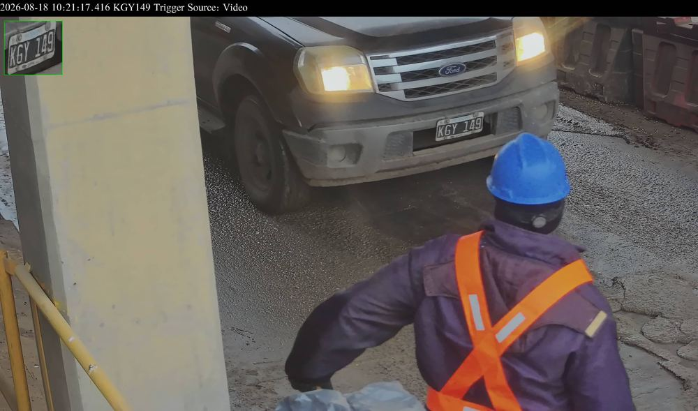
PICKUP
KGY149
Entra a zona operativa: carga ×5, playa ×5
Secuencia de visitas · 141 visitas
| Fecha | Hora | Planta | Recorrido |
|---|---|---|---|
| agosto 2026 · 71 visitas | |||
| 03/08/2026 | 07:43 | Ricardone | Bal.3 ing 07:43 → Bal.3 ing 10:50 → Bal.3 ing 12:49 |
| 03/08/2026 | 10:31 | San Lorenzo | Portería SL 10:31 · una sola toma |
| 04/08/2026 | 10:02 | Ricardone | Bal.1 ing 10:02 → Bal.3 egr 10:49 |
| 04/08/2026 | 11:12 | San Lorenzo | Portería SL 11:12 · una sola toma |
| 04/08/2026 | 11:23 | Ricardone | Bal.3 ing 11:23 → Bal.3 egr 12:36 |
| 04/08/2026 | 13:07 | Ricardone | Bal.3 ing 13:07 → Bal.3 egr 15:40 |
| 05/08/2026 | 07:42 | Ricardone | Bal.3 ing 07:42 → Bal.3 egr 12:44 → Bal.3 ing 12:52 |
| 05/08/2026 | 15:35 | Ricardone | Bal.3 egr 15:35 · una sola toma |
| 06/08/2026 | 07:50 | Ricardone | Bal.3 ing 07:50 → Bal.3 egr 08:10 |
| 06/08/2026 | 08:28 | Ricardone | Bal.3 ing 08:28 → Bal.3 egr 08:44 |
| 06/08/2026 | 10:08 | Ricardone | Bal.3 ing 10:08 → Bal.3 ing 12:20 → Bal.3 egr 12:36 → Bal.3 ing 12:51 |
| 06/08/2026 | 14:04 | Ricardone | Bal.3 egr 14:04 · una sola toma |
| 06/08/2026 | 15:02 | Ricardone | Bal.3 ing 15:02 → Bal.3 egr 15:38 |
| 07/08/2026 | 08:06 | Ricardone | Bal.3 ing 08:06 → Bal.3 egr 08:41 |
| 07/08/2026 | 09:03 | Ricardone | Bal.3 ing 09:03 → Bal.3 egr 09:18 |
| 07/08/2026 | 09:56 | Ricardone | Bal.3 ing 09:56 → Bal.3 egr 10:10 |
| 07/08/2026 | 10:36 | Ricardone | Bal.3 ing 10:36 → Bal.3 egr 10:44 |
| 07/08/2026 | 11:25 | Ricardone | Bal.3 ing 11:25 → Bal.3 egr 11:32 |
| 07/08/2026 | 12:23 | Ricardone | Bal.3 egr 12:23 · una sola toma |
| 07/08/2026 | 13:22 | Ricardone | Bal.3 ing 13:22 → Bal.3 egr 13:51 |
| 10/08/2026 | 07:39 | Ricardone | Bal.3 ing 07:39 → Bal.3 egr 12:50 → Bal.3 ing 12:51 |
| 10/08/2026 | 15:44 | Ricardone | Bal.3 egr 15:44 · una sola toma |
| 11/08/2026 | 07:40 | Ricardone | Bal.3 ing 07:40 → Bal.3 egr 15:25 → Bal.3 ing 15:40 |
| 12/08/2026 | 07:41 | Ricardone | Bal.3 ing 07:41 → Bal.3 egr 10:45 → Bal.3 ing 10:48 |
| 12/08/2026 | 15:43 | Ricardone | Bal.3 egr 15:43 · una sola toma |
| 13/08/2026 | 07:46 | Ricardone | Bal.3 ing 07:46 → Bal.3 egr 07:46 |
| 13/08/2026 | 11:16 | Ricardone | Playa 3 11:16 → Playa 3 12:18 → Bal.3 egr 12:43 → Bal.3 ing 12:46 |
| 13/08/2026 | 14:19 | Ricardone | Bal.3 egr 14:19 · una sola toma |
FICHA DE VEHÍCULO · FUERA DEL SISTEMA DE CAMIONES
KGY149 · secuencia de visitas (continúa)
| Fecha | Hora | Planta | Recorrido |
|---|---|---|---|
| 13/08/2026 | 14:55 | Ricardone | Bal.3 ing 14:55 → Bal.3 egr 15:48 |
| 14/08/2026 | 08:16 | Ricardone | Bal.1 ing 08:16 → Playa 3 10:06 → Bal.2 egr 11:52 |
| 14/08/2026 | 12:13 | Ricardone | Bal.1 ing 12:13 → Bal.3 egr 13:58 → Bal.3 ing 13:58 |
| 15/08/2026 | 08:12 | Ricardone | Bal.2 egr 08:12 · una sola toma |
| 15/08/2026 | 08:31 | Ricardone | Bal.1 ing 08:31 → Bal.2 egr 08:42 |
| 15/08/2026 | 10:55 | Ricardone | Bal.1 ing 10:55 → Bal.2 egr 11:38 |
| 16/08/2026 | 12:06 | Ricardone | Bal.1 ing 12:06 → Bal.2 egr 12:13 |
| 16/08/2026 | 14:13 | Ricardone | Bal.2 egr 14:13 · una sola toma |
| 16/08/2026 | 17:07 | Ricardone | Bal.2 egr 17:07 · una sola toma |
| 18/08/2026 | 08:05 | Ricardone | Bal.3 ing 08:05 → Bal.2 egr 09:57 |
| 18/08/2026 | 10:25 | San Lorenzo | Portería SL 10:25 · una sola toma |
| 18/08/2026 | 10:39 | Ricardone | Bal.3 ing 10:39 → Bal.3 egr 12:41 |
| 18/08/2026 | 13:01 | Ricardone | Bal.3 ing 13:01 → Bal.3 egr 15:44 → Bal.3 ing 15:44 |
| 19/08/2026 | 07:46 | Ricardone | Bal.3 ing 07:46 → Bal.3 egr 12:49 → Bal.3 ing 12:55 |
| 19/08/2026 | 15:26 | Ricardone | Playa 3 15:26 → Bal.3 egr 15:39 |
| 20/08/2026 | 07:40 | Ricardone | Bal.3 ing 07:40 → Playa 3 14:14 → Bal.3 egr 15:46 |
| 21/08/2026 | 10:22 | Ricardone | Bal.2 egr 10:22 → Bal.3 egr 10:26 |
| 21/08/2026 | 11:59 | Ricardone | Bal.3 ing 11:59 → Carga S8 línea 2 12:45 → Bal.3 egr 13:52 |
| 22/08/2026 | 07:49 | Ricardone | Bal.1 ing 07:49 → Bal.2 egr 08:10 |
| 22/08/2026 | 09:42 | Ricardone | Bal.2 egr 09:42 · una sola toma |
| 22/08/2026 | 10:33 | Ricardone | Bal.2 egr 10:33 → Bal.1 ing 10:44 |
| 22/08/2026 | 11:38 | Ricardone | Bal.1 ing 11:38 → Bal.2 egr 11:45 |
| 22/08/2026 | 12:15 | Ricardone | Bal.1 ing 12:15 → Bal.2 egr 14:05 |
| 22/08/2026 | 15:39 | Ricardone | Bal.1 ing 15:39 → Bal.2 egr 15:54 |
| 22/08/2026 | 17:10 | Ricardone | Bal.1 ing 17:10 → Bal.2 egr 18:31 |
| 23/08/2026 | 07:52 | Ricardone | Bal.2 egr 07:52 · una sola toma |
| 23/08/2026 | 12:25 | Ricardone | Bal.1 ing 12:25 → Bal.2 egr 14:12 |
| 23/08/2026 | 16:16 | Ricardone | Bal.1 ing 16:16 → Bal.2 egr 18:26 |
| 24/08/2026 | 10:36 | Ricardone | Bal.2 egr 10:36 → Bal.1 ing 10:44 |
| 24/08/2026 | 11:04 | Ricardone | Bal.3 egr 11:04 · una sola toma |
| 24/08/2026 | 12:09 | Ricardone | Bal.3 ing 12:09 → Bal.3 egr 12:37 |
| 24/08/2026 | 12:56 | Ricardone | Bal.3 ing 12:56 → Bal.3 egr 15:46 |
| 25/08/2026 | 07:38 | Ricardone | Bal.3 ing 07:38 → Bal.3 egr 12:38 → Bal.3 ing 12:44 |
| 25/08/2026 | 15:46 | Ricardone | Bal.3 egr 15:46 · una sola toma |
| 26/08/2026 | 08:02 | Ricardone | Bal.3 ing 08:02 → Carga S8 línea 2 10:09 → Carga S8 línea 2 11:01 → Carga S8 línea 2 12:19 → Bal.3 egr 13:06 → Bal.3 ing 13:08 |
| 26/08/2026 | 15:45 | Ricardone | Bal.3 egr 15:45 · una sola toma |
| 27/08/2026 | 07:53 | Ricardone | Bal.3 ing 07:53 → Bal.3 egr 14:53 |
| 27/08/2026 | 15:09 | Ricardone | Bal.3 ing 15:09 → Bal.3 egr 15:40 |
| 28/08/2026 | 07:50 | Ricardone | Bal.3 ing 07:50 → Bal.3 egr 10:54 → Bal.3 ing 11:01 |
| 28/08/2026 | 11:27 | Ricardone | Bal.3 egr 11:27 · una sola toma |
| 28/08/2026 | 12:12 | Ricardone | Bal.3 ing 12:12 → Bal.3 egr 12:27 |
| 28/08/2026 | 12:47 | Ricardone | Bal.3 ing 12:47 → Bal.3 egr 13:55 |
FICHA DE VEHÍCULO · FUERA DEL SISTEMA DE CAMIONES
KGY149 · secuencia de visitas (continúa)
| Fecha | Hora | Planta | Recorrido |
|---|---|---|---|
| 31/08/2026 | 07:39 | Ricardone | Bal.3 ing 07:39 → Bal.3 egr 12:37 |
| septiembre 2026 · 53 visitas | |||
| 03/09/2026 | 07:42 | Ricardone | Bal.3 ing 07:42 → Carga Celda 16 10:47 → Bal.3 egr 12:37 |
| 03/09/2026 | 13:00 | Ricardone | Bal.3 ing 13:00 → Bal.3 egr 15:08 |
| 03/09/2026 | 15:38 | Ricardone | Bal.3 ing 15:38 → Bal.3 egr 15:44 |
| 04/09/2026 | 08:36 | Ricardone | Bal.3 ing 08:36 → Bal.3 egr 13:48 |
| 07/09/2026 | 07:43 | Ricardone | Bal.3 ing 07:43 → Bal.3 egr 11:23 → Bal.2 egr 11:23 |
| 07/09/2026 | 12:19 | Ricardone | Bal.3 ing 12:19 → Bal.3 egr 12:41 |
| 07/09/2026 | 12:58 | Ricardone | Bal.3 ing 12:58 → Bal.3 egr 15:42 |
| 08/09/2026 | 07:52 | Ricardone | Bal.1 ing 07:52 → Bal.3 egr 08:08 → Bal.3 ing 08:17 |
| 08/09/2026 | 09:36 | Ricardone | Bal.3 egr 09:36 · una sola toma |
| 08/09/2026 | 14:22 | Ricardone | Bal.3 ing 14:22 → Bal.3 egr 15:25 → Bal.3 ing 15:29 |
| 09/09/2026 | 07:54 | Ricardone | Bal.3 ing 07:54 → Bal.3 egr 10:15 |
| 09/09/2026 | 10:41 | Ricardone | Bal.3 ing 10:41 → Bal.3 egr 12:49 → Bal.3 ing 12:53 |
| 09/09/2026 | 14:40 | Ricardone | Bal.3 egr 14:40 · una sola toma |
| 09/09/2026 | 15:30 | Ricardone | Bal.3 ing 15:30 → Bal.3 egr 15:45 |
| 10/09/2026 | 07:39 | Ricardone | Bal.3 ing 07:39 → Bal.3 egr 08:09 |
| 10/09/2026 | 09:35 | Ricardone | Bal.3 ing 09:35 → Bal.3 egr 11:13 |
| 10/09/2026 | 12:41 | Ricardone | Bal.3 ing 12:41 → Bal.3 egr 14:52 |
| 10/09/2026 | 15:15 | Ricardone | Bal.3 ing 15:15 → Bal.3 egr 15:50 |
| 10/09/2026 | 16:45 | Ricardone | Bal.1 ing 16:45 → Bal.2 egr 16:55 |
| 11/09/2026 | 07:53 | Ricardone | Bal.3 ing 07:53 → Bal.3 egr 08:30 → Bal.3 ing 08:35 |
| 11/09/2026 | 09:24 | Ricardone | Bal.3 egr 09:24 → Bal.3 ing 09:26 |
| 11/09/2026 | 10:40 | Ricardone | Bal.3 egr 10:40 → Bal.3 ing 10:46 |
| 11/09/2026 | 11:40 | Ricardone | Bal.3 egr 11:40 · una sola toma |
| 11/09/2026 | 12:07 | Ricardone | Bal.3 ing 12:07 → Bal.3 egr 12:23 |
| 11/09/2026 | 13:37 | Ricardone | Bal.3 ing 13:37 → Bal.3 egr 13:54 |
| 14/09/2026 | 07:45 | Ricardone | Bal.3 ing 07:45 → Bal.3 egr 12:44 |
| 14/09/2026 | 13:07 | Ricardone | Bal.3 ing 13:07 → Bal.3 egr 14:31 → Bal.3 ing 14:32 → Playa 3 14:36 → S7Carga 14:38 |
| 14/09/2026 | 14:52 | Ricardone | Carga Celda 16 14:52 → Bal.3 egr 15:44 |
| 15/09/2026 | 08:11 | Ricardone | Bal.3 ing 08:11 → Bal.3 egr 12:22 |
| 15/09/2026 | 12:47 | Ricardone | Bal.3 ing 12:47 → Bal.3 egr 15:40 |
| 16/09/2026 | 09:41 | Ricardone | Bal.3 ing 09:41 → Bal.1 egr 12:43 → Bal.3 ing 12:45 |
| 16/09/2026 | 15:42 | Ricardone | Bal.3 egr 15:42 · una sola toma |
| 17/09/2026 | 07:40 | Ricardone | Bal.3 ing 07:40 → Bal.3 egr 12:43 |
| 17/09/2026 | 13:00 | Ricardone | Bal.3 ing 13:00 → Bal.3 egr 15:43 |
| 18/09/2026 | 07:28 | Ricardone | Bal.3 ing 07:28 → Bal.3 egr 13:55 |
| 21/09/2026 | 07:43 | Ricardone | Bal.3 ing 07:43 → Bal.3 egr 12:03 → Bal.3 ing 12:08 |
| 21/09/2026 | 12:50 | Ricardone | Bal.3 egr 12:50 · una sola toma |
| 21/09/2026 | 13:06 | Ricardone | Bal.3 ing 13:06 → Bal.3 egr 15:38 |
| 22/09/2026 | 07:49 | Ricardone | Bal.3 ing 07:49 → Bal.3 egr 15:41 |
| 23/09/2026 | 07:41 | Ricardone | Bal.3 ing 07:41 → Bal.3 egr 08:28 |
FICHA DE VEHÍCULO · FUERA DEL SISTEMA DE CAMIONES
KGY149 · secuencia de visitas (continúa)
| Fecha | Hora | Planta | Recorrido |
|---|---|---|---|
| 23/09/2026 | 09:07 | Ricardone | Bal.3 ing 09:07 → Bal.3 egr 10:38 → Bal.3 ing 10:42 |
| 23/09/2026 | 12:50 | Ricardone | Bal.3 egr 12:50 → Bal.3 ing 12:52 |
| 23/09/2026 | 15:43 | Ricardone | Bal.3 egr 15:43 · una sola toma |
| 24/09/2026 | 08:12 | Ricardone | Bal.3 ing 08:12 → Bal.3 egr 12:47 → Bal.3 ing 13:01 |
| 24/09/2026 | 14:06 | Ricardone | Bal.3 egr 14:06 → Bal.3 ing 14:20 |
| 24/09/2026 | 15:43 | Ricardone | Bal.3 egr 15:43 · una sola toma |
| 25/09/2026 | 07:40 | Ricardone | Bal.3 ing 07:40 → Bal.3 egr 13:54 |
| 28/09/2026 | 07:38 | Ricardone | Bal.3 ing 07:38 → Bal.3 egr 09:46 |
| 28/09/2026 | 10:19 | Ricardone | Bal.3 ing 10:19 → Bal.3 egr 15:40 |
| 29/09/2026 | 07:41 | Ricardone | Bal.3 ing 07:41 → Bal.2 egr 17:52 |
| 30/09/2026 | 08:35 | Ricardone | Bal.3 ing 08:35 → Bal.3 egr 08:41 |
| 30/09/2026 | 10:17 | Ricardone | Bal.3 egr 10:17 → Bal.3 ing 10:29 |
| 30/09/2026 | 17:56 | Ricardone | Bal.2 egr 17:56 · una sola toma |
| octubre 2026 · 17 visitas | |||
| 01/10/2026 | 12:56 | Ricardone | Bal.3 ing 12:56 → Bal.2 egr 17:55 |
| 02/10/2026 | 09:10 | Ricardone | Bal.3 ing 09:10 → Bal.3 egr 14:11 → Bal.3 ing 14:13 |
| 02/10/2026 | 15:28 | Ricardone | Bal.2 egr 15:28 · una sola toma |
| 02/10/2026 | 17:55 | Ricardone | Bal.2 egr 17:55 · una sola toma |
| 05/10/2026 | 09:14 | Ricardone | Bal.3 ing 09:14 → Bal.3 egr 12:52 |
| 05/10/2026 | 13:51 | Ricardone | Bal.3 ing 13:51 → Bal.2 egr 17:44 |
| 06/10/2026 | 12:40 | Ricardone | Bal.3 ing 12:40 → Bal.2 egr 17:25 |
| 07/10/2026 | 08:35 | Ricardone | Bal.3 ing 08:35 → Bal.3 egr 12:43 → Bal.3 ing 12:45 |
| 08/10/2026 | 11:13 | Ricardone | Bal.3 ing 11:13 → Bal.3 ing 12:40 → Bal.2 egr 17:37 |
| 09/10/2026 | 07:50 | Ricardone | Bal.3 ing 07:50 → Bal.3 ing 14:21 → Bal.2 egr 17:49 |
| 13/10/2026 | 08:09 | Ricardone | Bal.3 ing 08:09 → Bal.3 egr 11:11 |
| 13/10/2026 | 12:03 | Ricardone | Bal.3 ing 12:03 → Bal.3 egr 12:24 |
| 13/10/2026 | 17:46 | Ricardone | Bal.2 egr 17:46 · una sola toma |
| 14/10/2026 | 08:50 | Ricardone | Bal.3 ing 08:50 → Bal.3 egr 09:07 |
| 14/10/2026 | 09:58 | Ricardone | Bal.3 ing 09:58 → Bal.3 egr 12:35 → Bal.3 ing 12:48 |
| 14/10/2026 | 13:12 | Ricardone | Bal.3 egr 13:12 → Bal.3 ing 13:26 |
| 14/10/2026 | 17:51 | Ricardone | Bal.2 egr 17:51 · una sola toma |
FICHA DE VEHÍCULO · FUERA DEL SISTEMA DE CAMIONES
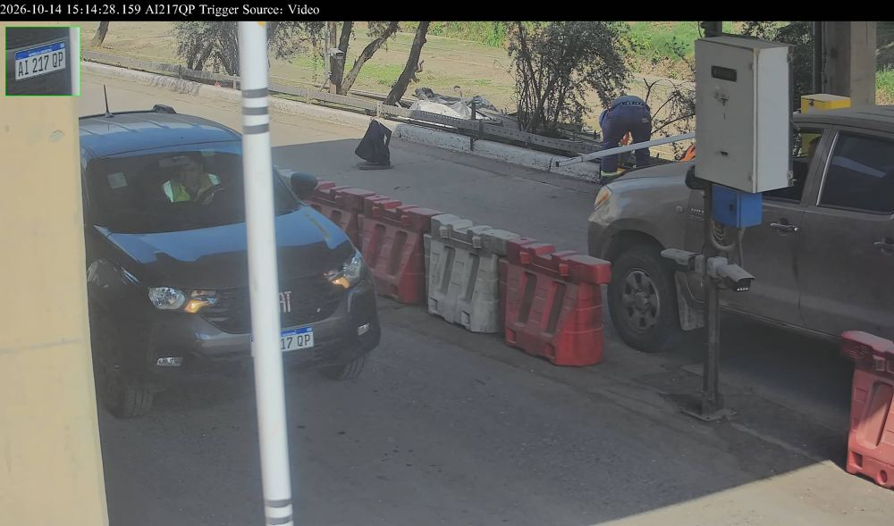
PICKUP
AI217QP
Entra a zona operativa: calada ×1
Secuencia de visitas · 44 visitas
| Fecha | Hora | Planta | Recorrido |
|---|---|---|---|
| agosto 2026 · 16 visitas | |||
| 03/08/2026 | 10:36 | Ricardone | Bal.3 ing 10:36 → Bal.2 egr 17:11 |
| 05/08/2026 | 08:46 | Ricardone | Bal.3 ing 08:46 → Bal.2 egr 17:45 |
| 07/08/2026 | 14:25 | Ricardone | Bal.3 ing 14:25 → Bal.2 egr 17:26 |
| 10/08/2026 | 10:23 | Ricardone | Bal.3 ing 10:23 → Bal.2 egr 16:24 |
| 11/08/2026 | 10:15 | Ricardone | Bal.3 ing 10:15 → Bal.2 egr 16:29 |
| 12/08/2026 | 15:03 | Ricardone | Bal.3 ing 15:03 → Bal.3 egr 15:48 |
| 13/08/2026 | 10:24 | Ricardone | Bal.3 ing 10:24 → Bal.2 egr 17:34 |
| 14/08/2026 | 11:54 | Ricardone | Bal.1 ing 11:54 → Bal.2 egr 17:17 |
| 19/08/2026 | 10:39 | Ricardone | Bal.3 ing 10:39 → Bal.2 egr 17:58 |
| 20/08/2026 | 13:58 | Ricardone | Bal.3 ing 13:58 → Bal.2 egr 17:53 |
| 21/08/2026 | 08:44 | Ricardone | Bal.3 ing 08:44 → Bal.2 egr 18:03 |
| 24/08/2026 | 09:30 | Ricardone | Bal.1 ing 09:30 → Bal.2 egr 17:13 |
| 25/08/2026 | 16:25 | Ricardone | Bal.1 ing 16:25 → Bal.2 egr 17:48 |
| 26/08/2026 | 13:55 | Ricardone | Bal.3 ing 13:55 → Bal.2 egr 17:36 |
| 27/08/2026 | 08:50 | Ricardone | Bal.1 ing 08:50 → Bal.3 egr 09:07 |
| 27/08/2026 | 14:36 | Ricardone | Bal.3 ing 14:36 → Bal.2 egr 17:37 |
| septiembre 2026 · 22 visitas | |||
| 03/09/2026 | 09:22 | Ricardone | Bal.3 ing 09:22 → Bal.3 egr 13:57 |
| 03/09/2026 | 14:30 | Ricardone | Bal.3 ing 14:30 → Bal.2 egr 18:03 |
| 04/09/2026 | 14:51 | Ricardone | Bal.3 ing 14:51 → Bal.2 egr 18:05 |
| 08/09/2026 | 09:25 | Ricardone | Bal.3 ing 09:25 → Bal.3 egr 11:52 |
| 09/09/2026 | 09:44 | Ricardone | Bal.3 ing 09:44 → Bal.2 egr 18:01 |
| 10/09/2026 | 09:57 | Ricardone | Bal.3 ing 09:57 → Bal.2 egr 17:52 |
| 11/09/2026 | 11:46 | Ricardone | Bal.3 ing 11:46 → Bal.2 egr 17:05 |
| 14/09/2026 | 10:16 | Ricardone | Bal.3 ing 10:16 → Bal.3 egr 15:04 → Bal.3 ing 15:08 |
| 14/09/2026 | 17:43 | Ricardone | Bal.2 egr 17:43 · una sola toma |
| 16/09/2026 | 08:08 | Ricardone | Bal.3 ing 08:08 → Bal.3 egr 09:07 |
| 16/09/2026 | 10:30 | Ricardone | Bal.3 ing 10:30 → Bal.3 egr 17:40 |
FICHA DE VEHÍCULO · FUERA DEL SISTEMA DE CAMIONES
AI217QP · secuencia de visitas (continúa)
| Fecha | Hora | Planta | Recorrido |
|---|---|---|---|
| 17/09/2026 | 11:27 | Ricardone | Bal.3 ing 11:27 → Bal.2 egr 16:43 |
| 18/09/2026 | 07:56 | Ricardone | Bal.3 ing 07:56 → Bal.2 egr 15:57 |
| 21/09/2026 | 08:56 | Ricardone | Bal.3 ing 08:56 → Bal.2 egr 17:04 |
| 22/09/2026 | 08:35 | Ricardone | Bal.3 ing 08:35 → Bal.3 egr 14:53 |
| 23/09/2026 | 09:44 | Ricardone | Bal.3 ing 09:44 → Bal.2 egr 17:58 |
| 24/09/2026 | 09:46 | Ricardone | Bal.3 ing 09:46 → Bal.2 egr 17:49 |
| 25/09/2026 | 08:01 | Ricardone | Bal.3 ing 08:01 → Bal.3 egr 13:59 |
| 28/09/2026 | 09:59 | Ricardone | Bal.3 ing 09:59 → Bal.3 egr 15:43 |
| 29/09/2026 | 10:20 | Ricardone | Bal.3 ing 10:20 → Bal.2 egr 17:04 |
| 30/09/2026 | 09:28 | Ricardone | Bal.3 ing 09:28 → Bal.3 egr 15:01 |
| 30/09/2026 | 15:15 | San Lorenzo | Portería SL 15:15 → Portería SL 16:17 |
| octubre 2026 · 6 visitas | |||
| 06/10/2026 | 18:40 | Ricardone | Ingreso Ric 18:40 → Preingreso 18:55 → Calada 4 20:01 → Egreso Ric 01:24 |
| 09/10/2026 | 08:49 | San Lorenzo | Portería SL 08:49 · una sola toma |
| 13/10/2026 | 08:08 | San Lorenzo | Portería SL 08:08 → Portería SL 08:35 |
| 14/10/2026 | 08:51 | San Lorenzo | Portería SL 08:51 → Portería SL 09:47 |
| 14/10/2026 | 10:20 | San Lorenzo | Portería SL 10:20 → Portería SL 11:34 |
| 14/10/2026 | 13:17 | San Lorenzo | Portería SL 13:17 → Portería SL 15:18 |
FICHA DE VEHÍCULO · FUERA DEL SISTEMA DE CAMIONES
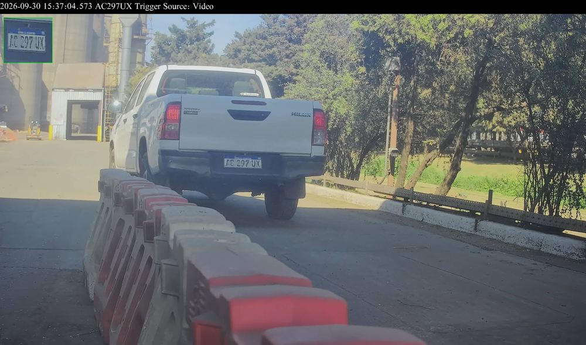
PICKUP
AC297UX
Entra a zona operativa: playa ×2
Secuencia de visitas · 42 visitas
| Fecha | Hora | Planta | Recorrido |
|---|---|---|---|
| agosto 2026 · 17 visitas | |||
| 05/08/2026 | 12:01 | Ricardone | Bal.3 ing 12:01 · una sola toma |
| 11/08/2026 | 08:05 | Ricardone | Bal.3 egr 08:05 · una sola toma |
| 11/08/2026 | 09:44 | Ricardone | Bal.3 ing 09:44 → Bal.3 ing 13:48 |
| 12/08/2026 | 09:36 | Ricardone | Bal.3 ing 09:36 → Bal.3 ing 11:30 → Bal.3 ing 12:24 |
| 12/08/2026 | 10:33 | San Lorenzo | Portería SL 10:33 → Portería SL 11:54 |
| 13/08/2026 | 11:19 | Ricardone | Bal.3 ing 11:19 → Bal.3 ing 13:46 |
| 14/08/2026 | 10:31 | Ricardone | Bal.2 egr 10:31 · una sola toma |
| 14/08/2026 | 10:39 | San Lorenzo | Portería SL 10:39 → Portería SL 13:08 |
| 14/08/2026 | 12:07 | Ricardone | Bal.2 egr 12:07 · una sola toma |
| 18/08/2026 | 14:21 | Ricardone | Bal.3 egr 14:21 · una sola toma |
| 18/08/2026 | 15:11 | Ricardone | Bal.3 egr 15:11 · una sola toma |
| 19/08/2026 | 10:51 | San Lorenzo | Portería SL 10:51 · una sola toma |
| 19/08/2026 | 12:51 | Ricardone | Bal.3 ing 12:51 · una sola toma |
| 21/08/2026 | 13:24 | Ricardone | Bal.3 ing 13:24 → Bal.3 egr 14:18 → Bal.3 ing 14:18 |
| 25/08/2026 | 10:16 | Ricardone | Bal.3 egr 10:16 · una sola toma |
| 26/08/2026 | 09:05 | Ricardone | Bal.3 ing 09:05 → Bal.3 ing 13:05 |
| 27/08/2026 | 13:07 | Ricardone | Bal.3 ing 13:07 · una sola toma |
| septiembre 2026 · 25 visitas | |||
| 03/09/2026 | 09:39 | San Lorenzo | Portería SL 09:39 → Portería SL 12:22 |
| 03/09/2026 | 10:32 | Ricardone | Bal.3 ing 10:32 → Bal.3 egr 11:34 → Bal.3 ing 11:38 |
| 03/09/2026 | 12:44 | Ricardone | Bal.3 ing 12:44 · una sola toma |
| 04/09/2026 | 09:21 | San Lorenzo | Portería SL 09:21 · una sola toma |
| 07/09/2026 | 09:57 | Ricardone | Bal.3 egr 09:57 · una sola toma |
| 07/09/2026 | 14:47 | San Lorenzo | Portería SL 14:47 · una sola toma |
| 09/09/2026 | 09:49 | Ricardone | Bal.3 ing 09:49 → Bal.3 ing 11:28 → Bal.3 ing 13:23 → Bal.3 ing 14:30 |
| 09/09/2026 | 10:25 | San Lorenzo | Portería SL 10:25 · una sola toma |
| 10/09/2026 | 07:13 | San Lorenzo | Portería SL 07:13 · una sola toma |
| 10/09/2026 | 11:26 | Ricardone | Bal.3 ing 11:26 → Bal.3 ing 12:00 → Bal.2 egr 16:27 |
FICHA DE VEHÍCULO · FUERA DEL SISTEMA DE CAMIONES
AC297UX · secuencia de visitas (continúa)
| Fecha | Hora | Planta | Recorrido |
|---|---|---|---|
| 11/09/2026 | 09:59 | Ricardone | Bal.3 egr 09:59 · una sola toma |
| 14/09/2026 | 14:58 | Ricardone | Bal.3 egr 14:58 · una sola toma |
| 15/09/2026 | 08:55 | Ricardone | Playa 3 08:55 · una sola toma |
| 16/09/2026 | 07:39 | Ricardone | Playa 3 07:39 · una sola toma |
| 16/09/2026 | 09:28 | San Lorenzo | Portería SL 09:28 · una sola toma |
| 18/09/2026 | 11:04 | Ricardone | Bal.3 ing 11:04 → Bal.3 ing 11:39 |
| 21/09/2026 | 09:45 | San Lorenzo | Portería SL 09:45 · una sola toma |
| 22/09/2026 | 09:23 | Ricardone | Bal.3 ing 09:23 · una sola toma |
| 23/09/2026 | 08:04 | Ricardone | Bal.2 egr 08:04 · una sola toma |
| 23/09/2026 | 10:34 | San Lorenzo | Portería SL 10:34 · una sola toma |
| 24/09/2026 | 13:28 | Ricardone | Bal.3 ing 13:28 · una sola toma |
| 28/09/2026 | 11:21 | San Lorenzo | Portería SL 11:21 → Portería SL 14:47 |
| 28/09/2026 | 15:10 | Ricardone | Bal.3 ing 15:10 · una sola toma |
| 29/09/2026 | 16:45 | San Lorenzo | Portería SL 16:45 · una sola toma |
| 30/09/2026 | 15:41 | San Lorenzo | Portería SL 15:41 · una sola toma |
FICHA DE VEHÍCULO · FUERA DEL SISTEMA DE CAMIONES
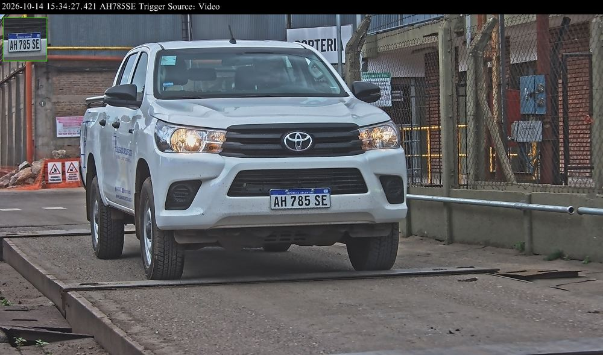
PICKUP
AH785SE
Entra a zona operativa: playa ×5
Secuencia de visitas · 27 visitas
| Fecha | Hora | Planta | Recorrido |
|---|---|---|---|
| agosto 2026 · 18 visitas | |||
| 03/08/2026 | 07:25 | Ricardone | Bal.3 ing 07:25 → Playa 3 09:05 → Playa 3 09:35 |
| 05/08/2026 | 07:27 | Ricardone | Bal.3 ing 07:27 → Bal.3 egr 08:31 |
| 06/08/2026 | 07:27 | Ricardone | Bal.3 ing 07:27 → Bal.3 egr 09:22 |
| 06/08/2026 | 11:03 | Ricardone | Bal.3 ing 11:03 → Bal.3 egr 15:31 |
| 07/08/2026 | 07:23 | Ricardone | Bal.3 ing 07:23 → Bal.3 egr 14:18 → Bal.3 ing 14:18 |
| 10/08/2026 | 07:24 | Ricardone | Bal.3 ing 07:24 → Bal.3 egr 13:38 |
| 11/08/2026 | 07:24 | Ricardone | Bal.3 ing 07:24 → Bal.3 egr 15:48 |
| 13/08/2026 | 07:24 | Ricardone | Bal.3 ing 07:24 → Bal.3 egr 15:32 |
| 18/08/2026 | 07:31 | Ricardone | Bal.3 ing 07:31 → Bal.2 egr 10:04 |
| 18/08/2026 | 12:18 | Ricardone | Bal.3 ing 12:18 → Bal.3 egr 15:31 |
| 19/08/2026 | 07:24 | Ricardone | Bal.3 ing 07:24 → Bal.3 egr 15:33 |
| 20/08/2026 | 07:26 | Ricardone | Bal.3 ing 07:26 → Bal.3 egr 15:34 |
| 24/08/2026 | 07:23 | Ricardone | Bal.3 ing 07:23 → Bal.3 egr 11:19 |
| 24/08/2026 | 12:07 | Ricardone | Bal.3 ing 12:07 → Bal.3 egr 12:42 |
| 25/08/2026 | 10:46 | Ricardone | Bal.3 ing 10:46 → Bal.3 egr 15:34 |
| 27/08/2026 | 10:22 | Ricardone | Bal.3 ing 10:22 → Bal.3 egr 15:39 |
| 28/08/2026 | 07:23 | Ricardone | Bal.3 ing 07:23 → Bal.3 egr 14:31 |
| 31/08/2026 | 07:38 | Ricardone | Bal.3 ing 07:38 → Bal.3 egr 10:45 |
| septiembre 2026 · 5 visitas | |||
| 03/09/2026 | 07:23 | Ricardone | Bal.3 ing 07:23 → Playa 3 08:45 → Bal.3 egr 08:49 |
| 03/09/2026 | 09:59 | Ricardone | Bal.3 ing 09:59 → Playa 3 11:48 → Bal.3 egr 15:25 |
| 04/09/2026 | 07:46 | Ricardone | Bal.3 ing 07:46 → Bal.3 egr 08:15 |
| 24/09/2026 | 10:43 | Ricardone | Bal.3 ing 10:43 → Playa 3 11:33 → Playa 3 13:36 → Playa 3 15:21 → Bal.3 egr 15:24 |
| 28/09/2026 | 08:46 | Ricardone | Bal.3 ing 08:46 → Playa 3 09:22 → Playa 3 11:26 → Playa 3 15:08 → Bal.3 egr 15:20 |
| octubre 2026 · 4 visitas | |||
| 02/10/2026 | 09:30 | Ricardone | Bal.3 ing 09:30 → Bal.3 egr 11:55 |
| 02/10/2026 | 13:36 | Ricardone | Bal.3 ing 13:36 → Bal.3 egr 14:35 |
| 05/10/2026 | 15:06 | Ricardone | Bal.3 ing 15:06 → Bal.3 egr 15:31 |
FICHA DE VEHÍCULO · FUERA DEL SISTEMA DE CAMIONES
AH785SE · secuencia de visitas (continúa)
| Fecha | Hora | Planta | Recorrido |
|---|---|---|---|
| 14/10/2026 | 12:13 | Ricardone | Bal.3 ing 12:13 → Bal.3 egr 15:38 |
FICHA DE VEHÍCULO · FUERA DEL SISTEMA DE CAMIONES
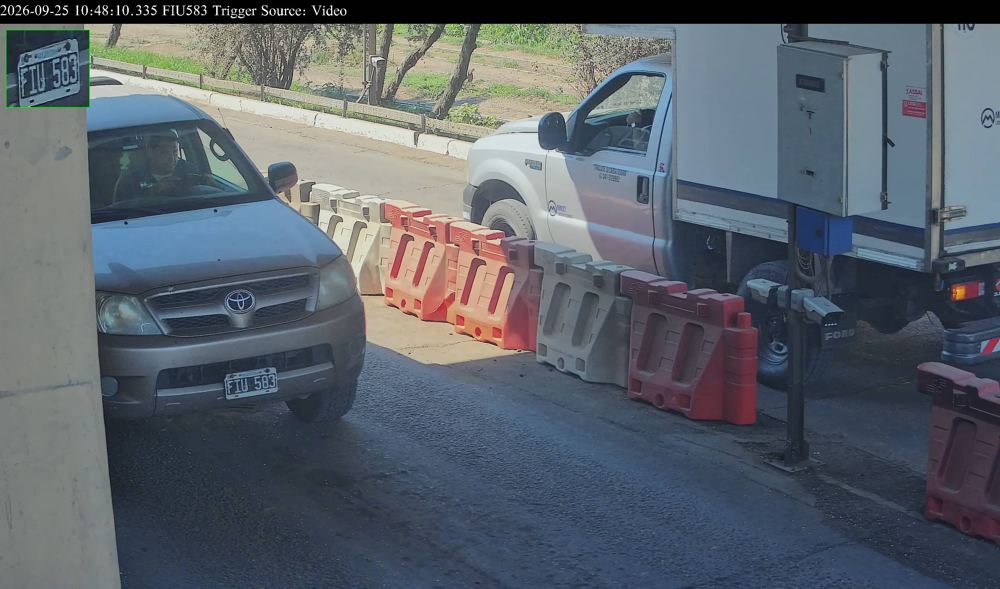
PICKUP
FIU583
Entra a zona operativa: carga ×1
Secuencia de visitas · 24 visitas
| Fecha | Hora | Planta | Recorrido |
|---|---|---|---|
| agosto 2026 · 12 visitas | |||
| 03/08/2026 | 07:52 | Ricardone | Bal.3 ing 07:52 → Bal.3 ing 14:32 → Bal.3 ing 15:21 |
| 04/08/2026 | 08:03 | Ricardone | Bal.3 ing 08:03 → Bal.3 egr 15:31 |
| 06/08/2026 | 08:31 | Ricardone | Bal.3 ing 08:31 → Bal.3 egr 15:23 |
| 13/08/2026 | 07:43 | Ricardone | Bal.3 ing 07:43 → Bal.3 egr 12:52 |
| 14/08/2026 | 07:29 | Ricardone | Bal.3 ing 07:29 → Bal.2 egr 11:35 |
| 18/08/2026 | 08:11 | Ricardone | Bal.3 ing 08:11 → Bal.3 egr 12:31 |
| 19/08/2026 | 07:35 | Ricardone | Bal.3 ing 07:35 → Bal.3 egr 11:25 |
| 20/08/2026 | 07:47 | Ricardone | Bal.3 ing 07:47 → Bal.3 egr 15:31 |
| 21/08/2026 | 07:42 | Ricardone | Bal.3 ing 07:42 → Bal.3 egr 08:37 |
| 21/08/2026 | 10:02 | San Lorenzo | Portería SL 10:02 → Portería SL 11:09 |
| 25/08/2026 | 08:16 | Ricardone | Bal.3 ing 08:16 → Bal.3 egr 11:31 |
| 26/08/2026 | 08:06 | Ricardone | Bal.3 ing 08:06 → Bal.3 egr 13:58 |
| septiembre 2026 · 12 visitas | |||
| 03/09/2026 | 10:00 | San Lorenzo | Portería SL 10:00 → Portería SL 12:08 |
| 07/09/2026 | 07:40 | Ricardone | Bal.3 ing 07:40 → Bal.3 egr 11:28 → Bal.3 ing 11:28 |
| 08/09/2026 | 13:45 | San Lorenzo | Portería SL 13:45 → Portería SL 15:42 |
| 09/09/2026 | 08:11 | Ricardone | Bal.3 ing 08:11 → Bal.3 egr 12:48 |
| 10/09/2026 | 08:50 | Ricardone | Bal.3 ing 08:50 → Bal.3 egr 11:28 |
| 10/09/2026 | 13:38 | San Lorenzo | Portería SL 13:38 → Portería SL 14:47 |
| 11/09/2026 | 08:22 | Ricardone | Bal.3 ing 08:22 → S7Carga 08:24 → Bal.3 egr 09:26 |
| 17/09/2026 | 07:30 | San Lorenzo | Portería SL 07:30 → TK400 SL 12:21 → Portería SL 12:23 |
| 17/09/2026 | 12:33 | San Lorenzo | Portería SL 12:33 → TK400 SL 17:13 → Portería SL 17:14 |
| 24/09/2026 | 09:02 | San Lorenzo | Portería SL 09:02 → Portería SL 11:04 |
| 24/09/2026 | 13:31 | San Lorenzo | Portería SL 13:31 → Portería SL 14:40 |
| 25/09/2026 | 09:34 | San Lorenzo | Portería SL 09:34 → TK400 SL 10:50 → Portería SL 10:52 |
FICHA DE VEHÍCULO · FUERA DEL SISTEMA DE CAMIONES
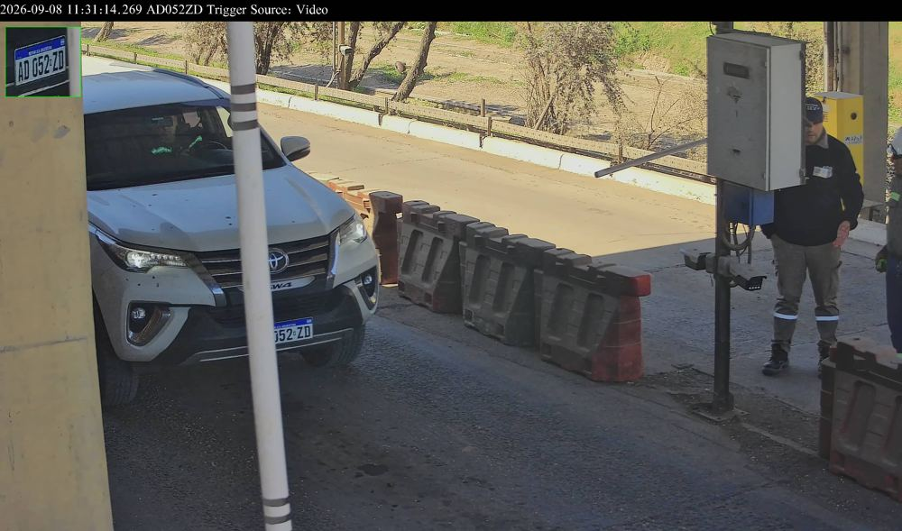
PICKUP
AD052ZD
Entra a zona operativa: carga ×1, playa ×3
Secuencia de visitas · 13 visitas
| Fecha | Hora | Planta | Recorrido |
|---|---|---|---|
| agosto 2026 · 5 visitas | |||
| 03/08/2026 | 12:07 | San Lorenzo | Portería SL 12:07 → Portería SL 12:48 |
| 03/08/2026 | 15:22 | Ricardone | Bal.1 ing 15:22 → Carga Celda 16 15:29 → Playa 3 15:32 |
| 10/08/2026 | 12:14 | Ricardone | Bal.3 ing 12:14 → Bal.3 egr 15:33 |
| 20/08/2026 | 14:12 | Ricardone | Bal.1 ing 14:12 → Bal.3 egr 15:40 |
| 26/08/2026 | 08:26 | San Lorenzo | Portería SL 08:26 · una sola toma |
| septiembre 2026 · 6 visitas | |||
| 03/09/2026 | 15:06 | San Lorenzo | Portería SL 15:06 → TK400 SL 15:08 → TK400 SL 15:45 → Portería SL 15:47 |
| 08/09/2026 | 11:26 | San Lorenzo | Portería SL 11:26 → Portería SL 11:35 |
| 11/09/2026 | 13:58 | Ricardone | Bal.3 ing 13:58 → Playa 3 14:14 → Bal.3 egr 14:17 |
| 14/09/2026 | 11:17 | Ricardone | Bal.3 ing 11:17 → Playa 3 14:09 → Bal.3 egr 14:12 |
| 24/09/2026 | 08:20 | Ricardone | Bal.3 ing 08:20 → Bal.3 egr 09:54 |
| 25/09/2026 | 11:43 | Ricardone | Bal.3 ing 11:43 → Bal.3 egr 11:48 |
| octubre 2026 · 2 visitas | |||
| 02/10/2026 | 12:08 | Ricardone | Bal.3 ing 12:08 → Bal.3 egr 14:08 |
| 13/10/2026 | 14:35 | Ricardone | Bal.3 ing 14:35 → Bal.3 egr 14:45 |
FICHA DE VEHÍCULO · FUERA DEL SISTEMA DE CAMIONES
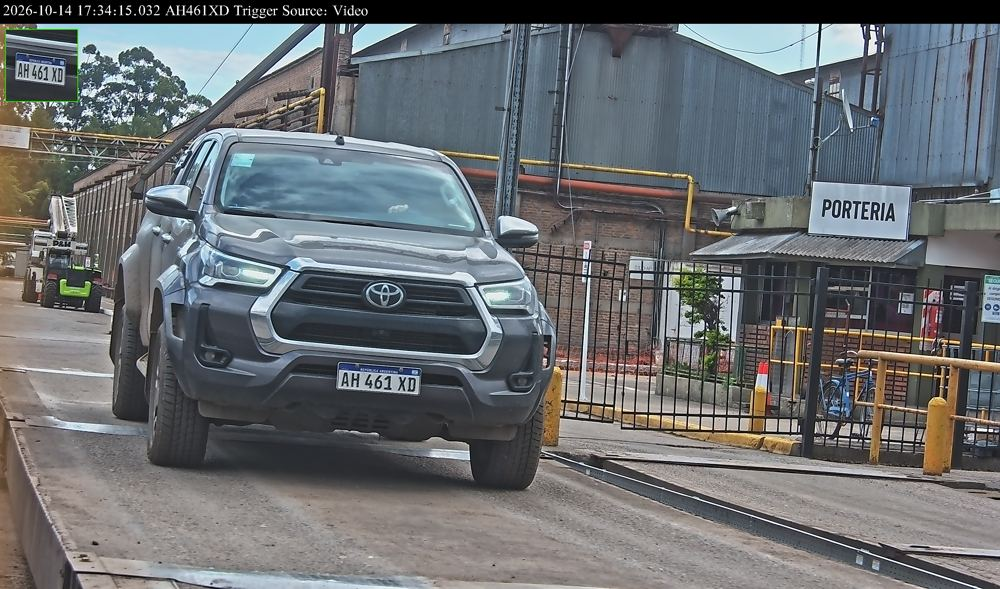
PICKUP
AH461XD
Secuencia de visitas · 72 visitas
| Fecha | Hora | Planta | Recorrido |
|---|---|---|---|
| agosto 2026 · 19 visitas | |||
| 04/08/2026 | 08:37 | Ricardone | Bal.3 ing 08:37 → Bal.2 egr 09:15 |
| 05/08/2026 | 08:27 | Ricardone | Bal.3 ing 08:27 → Bal.2 egr 16:20 |
| 07/08/2026 | 10:38 | Ricardone | Bal.3 ing 10:38 → Bal.3 egr 11:09 |
| 07/08/2026 | 11:55 | Ricardone | Bal.3 ing 11:55 → Bal.2 egr 16:14 |
| 11/08/2026 | 08:52 | Ricardone | Bal.3 ing 08:52 → Bal.3 egr 09:44 |
| 13/08/2026 | 08:36 | Ricardone | Bal.3 ing 08:36 → Bal.3 egr 09:08 |
| 13/08/2026 | 09:36 | Ricardone | Bal.3 ing 09:36 → Bal.2 egr 16:40 |
| 14/08/2026 | 08:36 | Ricardone | Bal.1 ing 08:36 → Bal.2 egr 10:03 |
| 19/08/2026 | 10:15 | Ricardone | Bal.3 ing 10:15 → Bal.3 egr 11:49 |
| 19/08/2026 | 12:20 | Ricardone | Bal.3 ing 12:20 → Bal.2 egr 16:32 |
| 20/08/2026 | 12:34 | Ricardone | Bal.3 ing 12:34 → Bal.2 egr 16:36 |
| 21/08/2026 | 14:42 | Ricardone | Bal.3 ing 14:42 → Bal.2 egr 15:28 |
| 25/08/2026 | 09:13 | Ricardone | Bal.3 ing 09:13 → Bal.3 egr 10:50 → Bal.3 ing 10:50 |
| 25/08/2026 | 11:45 | Ricardone | Bal.3 ing 11:45 → Bal.3 egr 15:31 |
| 27/08/2026 | 09:11 | Ricardone | Bal.3 ing 09:11 → Bal.3 egr 09:30 |
| 27/08/2026 | 11:46 | Ricardone | Bal.3 ing 11:46 → Bal.3 egr 11:53 |
| 28/08/2026 | 11:41 | Ricardone | Bal.3 ing 11:41 → Bal.2 egr 15:51 |
| 31/08/2026 | 11:09 | Ricardone | Bal.3 ing 11:09 → Bal.3 egr 11:21 |
| 31/08/2026 | 16:53 | Ricardone | Bal.2 egr 16:53 · una sola toma |
| septiembre 2026 · 37 visitas | |||
| 03/09/2026 | 08:42 | Ricardone | Bal.3 ing 08:42 → Bal.3 egr 09:01 |
| 03/09/2026 | 09:55 | Ricardone | Bal.3 ing 09:55 → Bal.3 egr 14:59 |
| 03/09/2026 | 15:42 | Ricardone | Bal.3 ing 15:42 → Bal.2 egr 18:00 |
| 04/09/2026 | 08:14 | Ricardone | Bal.3 ing 08:14 → Bal.3 egr 09:03 |
| 04/09/2026 | 10:26 | Ricardone | Bal.3 ing 10:26 → Bal.2 egr 16:59 |
| 07/09/2026 | 09:15 | Ricardone | Bal.3 ing 09:15 → Bal.3 egr 09:26 |
| 07/09/2026 | 10:27 | Ricardone | Bal.3 ing 10:27 → Bal.3 egr 13:10 → Bal.3 ing 13:10 |
| 08/09/2026 | 11:01 | Ricardone | Bal.3 ing 11:01 → Bal.2 egr 16:21 |
FICHA DE VEHÍCULO · FUERA DEL SISTEMA DE CAMIONES
AH461XD · secuencia de visitas (continúa)
| Fecha | Hora | Planta | Recorrido |
|---|---|---|---|
| 09/09/2026 | 08:25 | Ricardone | Bal.3 ing 08:25 → Bal.3 egr 09:01 |
| 09/09/2026 | 10:07 | Ricardone | Bal.3 ing 10:07 → Bal.2 egr 16:36 |
| 10/09/2026 | 08:31 | Ricardone | Bal.3 ing 08:31 → Bal.3 egr 11:43 |
| 10/09/2026 | 12:11 | Ricardone | Bal.3 ing 12:11 → Bal.3 egr 12:53 |
| 11/09/2026 | 08:50 | Ricardone | Bal.3 ing 08:50 → Bal.2 egr 16:30 |
| 14/09/2026 | 08:37 | Ricardone | Bal.3 ing 08:37 → Bal.3 egr 11:10 |
| 15/09/2026 | 09:14 | Ricardone | Bal.3 ing 09:14 → Bal.3 egr 09:36 |
| 15/09/2026 | 11:36 | Ricardone | Bal.3 ing 11:36 → Bal.3 egr 11:37 |
| 15/09/2026 | 16:28 | Ricardone | Bal.2 egr 16:28 · una sola toma |
| 16/09/2026 | 10:29 | Ricardone | Bal.3 ing 10:29 → Bal.3 egr 10:51 |
| 16/09/2026 | 11:20 | Ricardone | Bal.3 ing 11:20 → Bal.3 egr 15:36 |
| 17/09/2026 | 08:39 | Ricardone | Bal.3 ing 08:39 → Bal.3 egr 11:27 |
| 17/09/2026 | 12:31 | Ricardone | Bal.3 ing 12:31 → Bal.3 egr 15:36 |
| 18/09/2026 | 08:42 | Ricardone | Bal.3 ing 08:42 → Bal.3 egr 10:53 |
| 18/09/2026 | 12:35 | Ricardone | Bal.3 ing 12:35 → Bal.2 egr 15:24 |
| 21/09/2026 | 08:13 | Ricardone | Bal.3 ing 08:13 → Bal.3 egr 11:30 |
| 21/09/2026 | 12:13 | Ricardone | Bal.3 ing 12:13 → Bal.3 egr 15:18 |
| 22/09/2026 | 08:30 | Ricardone | Bal.3 ing 08:30 → Bal.3 egr 10:56 |
| 22/09/2026 | 12:08 | Ricardone | Bal.3 ing 12:08 → Bal.3 egr 14:47 |
| 23/09/2026 | 08:24 | Ricardone | Bal.3 ing 08:24 → Bal.3 egr 11:46 → Bal.3 ing 11:50 |
| 23/09/2026 | 17:22 | Ricardone | Bal.2 egr 17:22 · una sola toma |
| 24/09/2026 | 08:12 | Ricardone | Bal.3 ing 08:12 → Bal.3 egr 15:00 → Bal.3 ing 15:00 |
| 25/09/2026 | 08:58 | Ricardone | Bal.3 ing 08:58 → Bal.3 egr 09:47 |
| 25/09/2026 | 11:48 | Ricardone | Bal.3 ing 11:48 → Bal.2 egr 16:16 |
| 28/09/2026 | 09:12 | Ricardone | Bal.3 ing 09:12 → Bal.2 egr 16:20 |
| 29/09/2026 | 09:36 | Ricardone | Bal.3 ing 09:36 → Bal.3 egr 09:51 |
| 29/09/2026 | 10:34 | Ricardone | Bal.3 ing 10:34 → Bal.2 egr 16:28 |
| 30/09/2026 | 08:28 | Ricardone | Bal.3 ing 08:28 → Bal.3 egr 11:45 |
| 30/09/2026 | 12:52 | Ricardone | Bal.3 ing 12:52 → Bal.2 egr 17:42 |
| octubre 2026 · 16 visitas | |||
| 01/10/2026 | 09:06 | Ricardone | Bal.3 ing 09:06 → Bal.3 egr 10:57 |
| 01/10/2026 | 11:54 | Ricardone | Bal.3 ing 11:54 → Bal.2 egr 16:53 |
| 02/10/2026 | 09:37 | Ricardone | Bal.3 ing 09:37 → Bal.3 egr 10:40 |
| 02/10/2026 | 11:39 | Ricardone | Bal.3 ing 11:39 → Bal.2 egr 16:24 |
| 05/10/2026 | 08:12 | Ricardone | Bal.3 ing 08:12 → Bal.3 egr 11:38 |
| 05/10/2026 | 12:00 | Ricardone | Bal.3 ing 12:00 → Bal.3 egr 13:24 |
| 05/10/2026 | 14:00 | Ricardone | Bal.3 ing 14:00 → Bal.2 egr 17:54 |
| 06/10/2026 | 08:25 | Ricardone | Bal.3 ing 08:25 → Bal.3 egr 10:56 |
| 06/10/2026 | 11:24 | Ricardone | Bal.3 ing 11:24 → Bal.3 egr 12:15 |
| 07/10/2026 | 08:59 | Ricardone | Bal.3 ing 08:59 → Bal.3 egr 11:36 |
| 07/10/2026 | 11:57 | Ricardone | Bal.3 ing 11:57 → Bal.2 egr 17:34 |
| 08/10/2026 | 08:25 | Ricardone | Bal.3 ing 08:25 → Bal.3 ing 10:10 → Bal.3 ing 12:14 → Bal.2 egr 17:11 |
FICHA DE VEHÍCULO · FUERA DEL SISTEMA DE CAMIONES
AH461XD · secuencia de visitas (continúa)
| Fecha | Hora | Planta | Recorrido |
|---|---|---|---|
| 09/10/2026 | 08:51 | Ricardone | Bal.3 ing 08:51 · una sola toma |
| 13/10/2026 | 08:34 | Ricardone | Bal.3 ing 08:34 → Bal.3 egr 10:53 |
| 13/10/2026 | 11:28 | Ricardone | Bal.3 ing 11:28 → Bal.2 egr 16:41 |
| 14/10/2026 | 12:30 | Ricardone | Bal.3 ing 12:30 → Bal.2 egr 17:38 |
FICHA DE VEHÍCULO · FUERA DEL SISTEMA DE CAMIONES
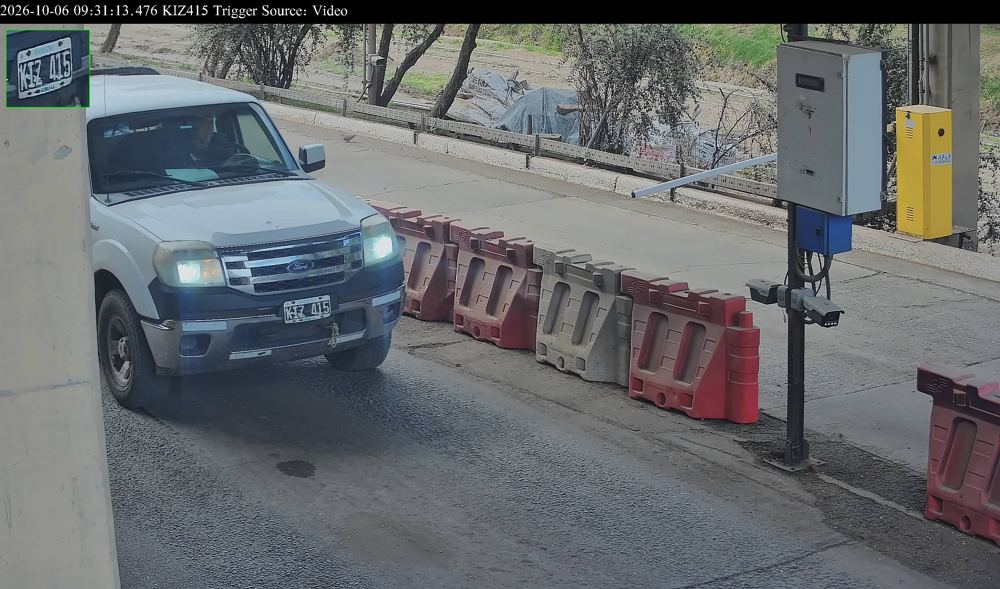
PICKUP
KIZ415
Secuencia de visitas · 45 visitas
| Fecha | Hora | Planta | Recorrido |
|---|---|---|---|
| agosto 2026 · 12 visitas | |||
| 03/08/2026 | 08:53 | San Lorenzo | Portería SL 08:53 → Portería SL 15:52 |
| 04/08/2026 | 07:44 | San Lorenzo | Portería SL 07:44 → Portería SL 10:50 |
| 04/08/2026 | 12:56 | San Lorenzo | Portería SL 12:56 → Portería SL 15:16 |
| 05/08/2026 | 07:37 | San Lorenzo | Portería SL 07:37 → Portería SL 09:08 |
| 05/08/2026 | 10:04 | San Lorenzo | Portería SL 10:04 → Portería SL 13:17 |
| 05/08/2026 | 14:02 | San Lorenzo | Portería SL 14:02 → Portería SL 16:03 |
| 06/08/2026 | 07:03 | San Lorenzo | Portería SL 07:03 → Portería SL 10:04 |
| 06/08/2026 | 11:14 | San Lorenzo | Portería SL 11:14 → Portería SL 15:57 |
| 07/08/2026 | 06:50 | San Lorenzo | Portería SL 06:50 → Portería SL 12:33 |
| 07/08/2026 | 12:42 | San Lorenzo | Portería SL 12:42 → Portería SL 14:21 |
| 10/08/2026 | 12:16 | San Lorenzo | Portería SL 12:16 → TK400 SL 15:46 → Portería SL 15:48 |
| 14/08/2026 | 10:21 | San Lorenzo | Portería SL 10:21 → Portería SL 10:28 |
| septiembre 2026 · 31 visitas | |||
| 03/09/2026 | 13:56 | San Lorenzo | Portería SL 13:56 → Portería SL 16:08 |
| 04/09/2026 | 08:47 | San Lorenzo | Portería SL 08:47 → TK400 SL 10:24 → Portería SL 10:27 |
| 04/09/2026 | 12:05 | San Lorenzo | Portería SL 12:05 → Portería SL 14:57 |
| 07/09/2026 | 07:44 | San Lorenzo | Portería SL 07:44 → TK400 SL 08:53 → Portería SL 08:55 |
| 08/09/2026 | 08:32 | San Lorenzo | Portería SL 08:32 → Portería SL 10:40 |
| 08/09/2026 | 11:44 | San Lorenzo | Portería SL 11:44 → Portería SL 12:11 |
| 08/09/2026 | 13:50 | San Lorenzo | Portería SL 13:50 → Portería SL 16:03 |
| 09/09/2026 | 07:54 | San Lorenzo | Portería SL 07:54 → Portería SL 10:07 |
| 10/09/2026 | 08:14 | San Lorenzo | Portería SL 08:14 → Portería SL 09:16 |
| 10/09/2026 | 12:50 | San Lorenzo | Portería SL 12:50 → Portería SL 15:47 |
| 11/09/2026 | 08:23 | San Lorenzo | Portería SL 08:23 → Portería SL 09:55 |
| 14/09/2026 | 07:42 | San Lorenzo | Portería SL 07:42 → Portería SL 08:46 |
| 14/09/2026 | 10:11 | San Lorenzo | Portería SL 10:11 → Portería SL 12:36 |
| 15/09/2026 | 08:08 | San Lorenzo | Portería SL 08:08 → Portería SL 09:18 |
| 15/09/2026 | 11:16 | San Lorenzo | Portería SL 11:16 → Portería SL 15:48 |
FICHA DE VEHÍCULO · FUERA DEL SISTEMA DE CAMIONES
KIZ415 · secuencia de visitas (continúa)
| Fecha | Hora | Planta | Recorrido |
|---|---|---|---|
| 16/09/2026 | 08:09 | San Lorenzo | Portería SL 08:09 → Portería SL 10:15 |
| 16/09/2026 | 12:21 | San Lorenzo | Portería SL 12:21 → Portería SL 15:12 |
| 17/09/2026 | 08:07 | San Lorenzo | Portería SL 08:07 → Portería SL 10:26 |
| 17/09/2026 | 12:22 | San Lorenzo | Portería SL 12:22 → Portería SL 15:52 |
| 18/09/2026 | 06:52 | San Lorenzo | Portería SL 06:52 → TK400 SL 08:09 → Portería SL 08:10 |
| 18/09/2026 | 08:47 | San Lorenzo | Portería SL 08:47 · una sola toma |
| 21/09/2026 | 08:21 | San Lorenzo | Portería SL 08:21 → TK400 SL 08:23 → TK400 SL 09:53 → TK400 SL 10:59 → Portería SL 11:01 |
| 21/09/2026 | 15:13 | San Lorenzo | Portería SL 15:13 → TK400 SL 15:15 → Portería SL 15:43 |
| 22/09/2026 | 08:09 | San Lorenzo | Portería SL 08:09 → TK400 SL 08:11 → Portería SL 08:27 |
| 22/09/2026 | 13:41 | San Lorenzo | Portería SL 13:41 → TK400 SL 13:43 → Portería SL 15:41 |
| 23/09/2026 | 07:20 | San Lorenzo | Portería SL 07:20 → TK400 SL 07:22 → Portería SL 08:21 |
| 24/09/2026 | 07:17 | San Lorenzo | Portería SL 07:17 → TK400 SL 07:18 → Portería SL 11:55 |
| 25/09/2026 | 08:23 | San Lorenzo | Portería SL 08:23 → TK400 SL 08:25 → Portería SL 08:47 |
| 28/09/2026 | 14:45 | San Lorenzo | Portería SL 14:45 → TK400 SL 14:47 → TK400 SL 15:48 → Portería SL 15:50 |
| 29/09/2026 | 13:43 | San Lorenzo | Portería SL 13:43 → TK400 SL 13:46 → TK400 SL 14:18 → Portería SL 14:21 |
| 30/09/2026 | 07:25 | San Lorenzo | Portería SL 07:25 → TK400 SL 07:27 → Portería SL 07:52 |
| octubre 2026 · 2 visitas | |||
| 01/10/2026 | 09:37 | San Lorenzo | Portería SL 09:37 → TK400 SL 09:39 → Portería SL 09:49 |
| 06/10/2026 | 09:19 | San Lorenzo | Portería SL 09:19 → TK400 SL 09:20 → Portería SL 09:35 |
FICHA DE VEHÍCULO · FUERA DEL SISTEMA DE CAMIONES
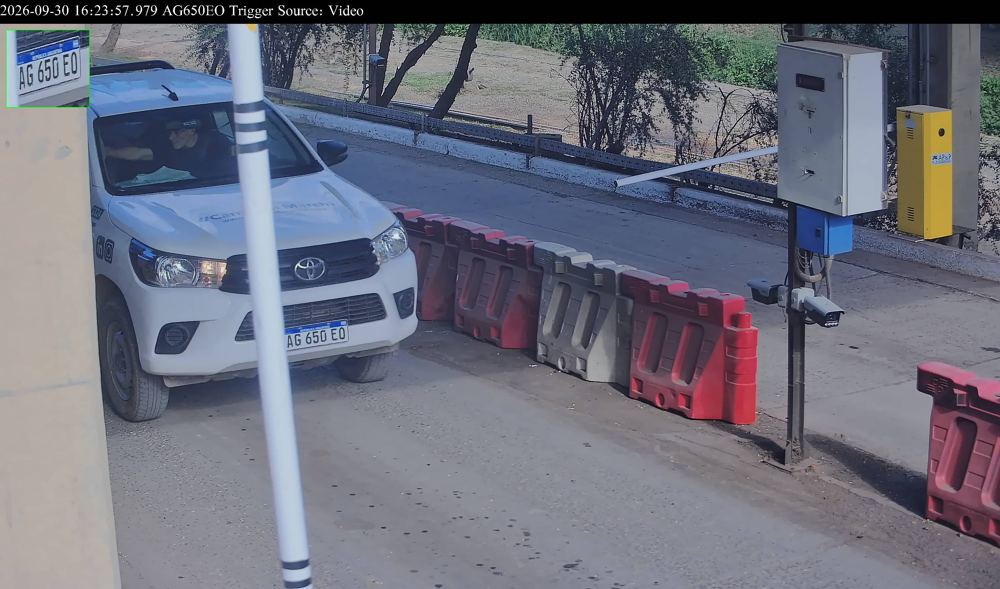
PICKUP
AG650EO
Secuencia de visitas · 40 visitas
| Fecha | Hora | Planta | Recorrido |
|---|---|---|---|
| agosto 2026 · 9 visitas | |||
| 04/08/2026 | 13:33 | Ricardone | Bal.3 ing 13:33 → Bal.3 egr 13:47 |
| 04/08/2026 | 15:07 | Ricardone | Bal.3 ing 15:07 → Bal.3 egr 15:16 |
| 12/08/2026 | 12:41 | Ricardone | Bal.3 ing 12:41 → Bal.3 egr 12:58 |
| 18/08/2026 | 14:21 | Ricardone | Bal.3 ing 14:21 → Bal.3 egr 14:39 |
| 19/08/2026 | 11:35 | Ricardone | Bal.3 ing 11:35 → Bal.3 egr 11:49 |
| 19/08/2026 | 15:23 | Ricardone | Bal.3 ing 15:23 · una sola toma |
| 21/08/2026 | 12:57 | San Lorenzo | Portería SL 12:57 → Portería SL 13:27 |
| 28/08/2026 | 11:26 | Ricardone | Bal.3 ing 11:26 → Bal.3 egr 11:38 |
| 28/08/2026 | 15:24 | Ricardone | Bal.1 ing 15:24 → Bal.2 egr 15:33 |
| septiembre 2026 · 29 visitas | |||
| 03/09/2026 | 15:18 | San Lorenzo | Portería SL 15:18 → Portería SL 15:26 |
| 03/09/2026 | 16:20 | Ricardone | Bal.2 egr 16:20 · una sola toma |
| 04/09/2026 | 12:01 | Ricardone | Bal.3 ing 12:01 → Bal.3 egr 12:33 |
| 07/09/2026 | 10:05 | Ricardone | Bal.3 ing 10:05 → Bal.3 egr 10:19 |
| 10/09/2026 | 14:32 | San Lorenzo | Portería SL 14:32 → Portería SL 14:57 |
| 10/09/2026 | 15:24 | Ricardone | Bal.3 ing 15:24 → Bal.3 egr 15:38 |
| 14/09/2026 | 14:11 | Ricardone | Bal.3 ing 14:11 → Bal.3 egr 14:11 |
| 15/09/2026 | 14:27 | San Lorenzo | Portería SL 14:27 → Portería SL 14:49 |
| 16/09/2026 | 11:11 | Ricardone | Bal.3 ing 11:11 → Bal.3 egr 11:49 |
| 17/09/2026 | 13:59 | San Lorenzo | Portería SL 13:59 → Portería SL 14:39 |
| 18/09/2026 | 10:25 | San Lorenzo | Portería SL 10:25 → Portería SL 11:01 |
| 18/09/2026 | 11:23 | Ricardone | Bal.3 ing 11:23 → Bal.3 egr 12:05 |
| 21/09/2026 | 09:00 | San Lorenzo | Portería SL 09:00 → Portería SL 09:18 |
| 21/09/2026 | 10:20 | San Lorenzo | Portería SL 10:20 → Portería SL 10:48 |
| 21/09/2026 | 10:58 | Ricardone | Bal.3 ing 10:58 → Bal.3 egr 11:05 |
| 21/09/2026 | 17:37 | San Lorenzo | Portería SL 17:37 · una sola toma |
| 22/09/2026 | 08:03 | Ricardone | Bal.3 ing 08:03 → Bal.3 egr 08:16 |
| 22/09/2026 | 10:25 | San Lorenzo | Portería SL 10:25 → Portería SL 10:59 |
FICHA DE VEHÍCULO · FUERA DEL SISTEMA DE CAMIONES
AG650EO · secuencia de visitas (continúa)
| Fecha | Hora | Planta | Recorrido |
|---|---|---|---|
| 22/09/2026 | 14:05 | San Lorenzo | Portería SL 14:05 → Portería SL 14:53 |
| 23/09/2026 | 10:08 | San Lorenzo | Portería SL 10:08 → Portería SL 10:45 |
| 23/09/2026 | 11:12 | Ricardone | Bal.3 ing 11:12 → Bal.3 egr 11:22 |
| 23/09/2026 | 13:33 | San Lorenzo | Portería SL 13:33 → Portería SL 13:43 |
| 24/09/2026 | 13:35 | San Lorenzo | Portería SL 13:35 → Portería SL 16:41 |
| 25/09/2026 | 11:58 | San Lorenzo | Portería SL 11:58 → Portería SL 12:31 |
| 25/09/2026 | 16:11 | San Lorenzo | Portería SL 16:11 → Portería SL 16:18 |
| 28/09/2026 | 10:09 | San Lorenzo | Portería SL 10:09 → Portería SL 10:26 |
| 29/09/2026 | 10:45 | San Lorenzo | Portería SL 10:45 → Portería SL 11:04 |
| 29/09/2026 | 14:03 | San Lorenzo | Portería SL 14:03 → Bal. SC1 SL 14:37 → Portería SL 14:52 |
| 30/09/2026 | 15:27 | San Lorenzo | Portería SL 15:27 → Portería SL 16:27 |
| octubre 2026 · 2 visitas | |||
| 01/10/2026 | 16:36 | San Lorenzo | Portería SL 16:36 → Portería SL 07:26 |
| 02/10/2026 | 07:44 | San Lorenzo | Portería SL 07:44 · una sola toma |
FICHA DE VEHÍCULO · FUERA DEL SISTEMA DE CAMIONES
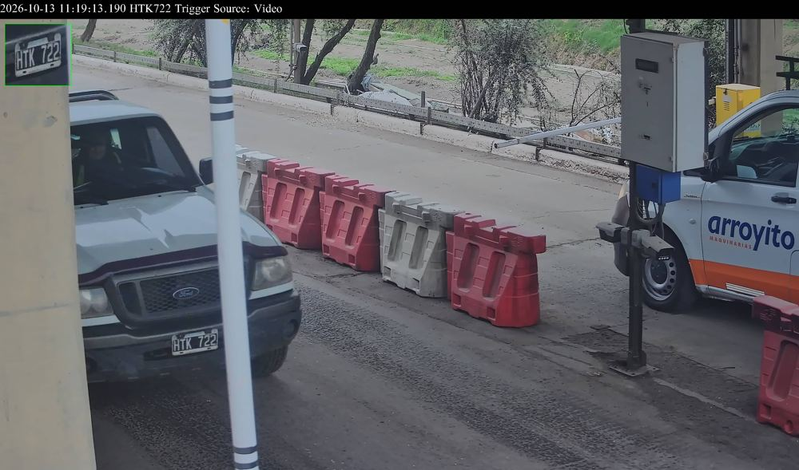
PICKUP
HTK722
Secuencia de visitas · 39 visitas
| Fecha | Hora | Planta | Recorrido |
|---|---|---|---|
| agosto 2026 · 16 visitas | |||
| 04/08/2026 | 11:08 | Ricardone | Bal.3 ing 11:08 → Bal.3 egr 11:43 |
| 06/08/2026 | 10:49 | Ricardone | Bal.3 ing 10:49 · una sola toma |
| 11/08/2026 | 08:45 | Ricardone | Bal.3 ing 08:45 → Bal.3 egr 08:58 |
| 11/08/2026 | 15:06 | Ricardone | Bal.3 ing 15:06 → Bal.3 egr 15:35 |
| 12/08/2026 | 11:00 | Ricardone | Bal.3 ing 11:00 → Bal.3 egr 11:24 |
| 13/08/2026 | 15:13 | Ricardone | Bal.3 ing 15:13 → Bal.3 egr 15:21 |
| 14/08/2026 | 09:29 | San Lorenzo | Portería SL 09:29 → Portería SL 09:43 |
| 18/08/2026 | 11:13 | Ricardone | Bal.3 ing 11:13 → Bal.3 egr 11:46 |
| 18/08/2026 | 15:18 | San Lorenzo | Portería SL 15:18 → Portería SL 15:32 |
| 19/08/2026 | 11:07 | Ricardone | Bal.3 ing 11:07 → Bal.3 egr 11:45 → Bal.3 ing 11:45 |
| 20/08/2026 | 15:03 | Ricardone | Bal.3 ing 15:03 → Bal.3 egr 15:14 |
| 24/08/2026 | 11:27 | Ricardone | Bal.3 ing 11:27 → Bal.3 egr 11:39 |
| 24/08/2026 | 15:07 | Ricardone | Bal.3 ing 15:07 → Bal.3 egr 15:19 |
| 26/08/2026 | 11:00 | Ricardone | Bal.3 ing 11:00 → Bal.3 egr 11:34 |
| 27/08/2026 | 11:29 | Ricardone | Bal.3 ing 11:29 → Bal.3 egr 11:46 |
| 28/08/2026 | 10:51 | Ricardone | Bal.3 ing 10:51 → Bal.3 egr 10:58 |
| septiembre 2026 · 15 visitas | |||
| 14/09/2026 | 10:57 | San Lorenzo | Portería SL 10:57 → Portería SL 11:11 |
| 15/09/2026 | 11:02 | Ricardone | Bal.3 ing 11:02 → Bal.3 egr 11:43 |
| 15/09/2026 | 11:51 | San Lorenzo | Portería SL 11:51 → Portería SL 12:07 |
| 18/09/2026 | 14:42 | San Lorenzo | Portería SL 14:42 → Portería SL 15:09 |
| 21/09/2026 | 11:09 | Ricardone | Bal.3 ing 11:09 → Bal.3 egr 11:27 |
| 21/09/2026 | 15:34 | Ricardone | Bal.3 ing 15:34 → Bal.3 egr 15:38 |
| 21/09/2026 | 15:45 | San Lorenzo | Portería SL 15:45 → Portería SL 16:09 |
| 22/09/2026 | 07:56 | Ricardone | Bal.3 ing 07:56 → Bal.3 egr 08:08 |
| 22/09/2026 | 11:29 | San Lorenzo | Portería SL 11:29 → Portería SL 11:38 |
| 22/09/2026 | 15:28 | San Lorenzo | Portería SL 15:28 · una sola toma |
| 24/09/2026 | 07:59 | Ricardone | Bal.3 ing 07:59 → Bal.3 egr 08:06 |
FICHA DE VEHÍCULO · FUERA DEL SISTEMA DE CAMIONES
HTK722 · secuencia de visitas (continúa)
| Fecha | Hora | Planta | Recorrido |
|---|---|---|---|
| 24/09/2026 | 08:20 | San Lorenzo | Portería SL 08:20 → Portería SL 08:40 |
| 24/09/2026 | 10:28 | San Lorenzo | Portería SL 10:28 → Portería SL 11:00 |
| 29/09/2026 | 12:17 | San Lorenzo | Portería SL 12:17 → Portería SL 12:26 |
| 29/09/2026 | 14:23 | Ricardone | Bal.3 ing 14:23 → Bal.3 egr 14:52 |
| octubre 2026 · 8 visitas | |||
| 01/10/2026 | 10:46 | San Lorenzo | Portería SL 10:46 → Portería SL 11:25 |
| 05/10/2026 | 11:04 | Ricardone | Bal.3 ing 11:04 → Bal.3 egr 11:34 |
| 06/10/2026 | 10:44 | San Lorenzo | Portería SL 10:44 → Portería SL 11:22 |
| 06/10/2026 | 11:35 | Ricardone | Bal.3 ing 11:35 → Bal.3 egr 11:41 |
| 08/10/2026 | 11:12 | Ricardone | Bal.3 ing 11:12 · una sola toma |
| 09/10/2026 | 11:00 | Ricardone | Bal.3 ing 11:00 · una sola toma |
| 09/10/2026 | 11:31 | San Lorenzo | Portería SL 11:31 → Portería SL 11:41 |
| 13/10/2026 | 11:12 | San Lorenzo | Portería SL 11:12 → Portería SL 11:23 |
FICHA DE VEHÍCULO · FUERA DEL SISTEMA DE CAMIONES
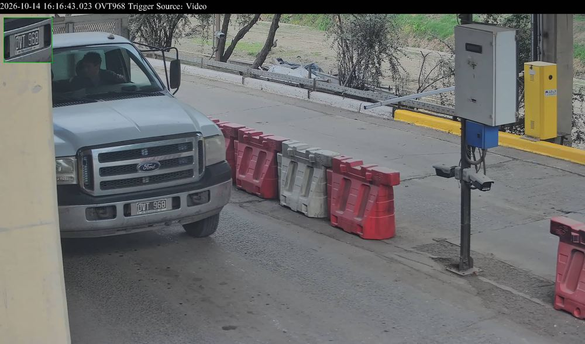
PICKUP
OVT968
Secuencia de visitas · 32 visitas
| Fecha | Hora | Planta | Recorrido |
|---|---|---|---|
| agosto 2026 · 11 visitas | |||
| 03/08/2026 | 08:29 | San Lorenzo | Portería SL 08:29 · una sola toma |
| 03/08/2026 | 11:04 | Ricardone | Bal.3 ing 11:04 · una sola toma |
| 06/08/2026 | 11:48 | San Lorenzo | Portería SL 11:48 · una sola toma |
| 07/08/2026 | 10:14 | Ricardone | Bal.3 ing 10:14 → Bal.3 egr 10:43 |
| 13/08/2026 | 15:08 | San Lorenzo | Portería SL 15:08 · una sola toma |
| 18/08/2026 | 14:56 | Ricardone | Bal.3 ing 14:56 · una sola toma |
| 21/08/2026 | 13:16 | Ricardone | Bal.3 ing 13:16 · una sola toma |
| 26/08/2026 | 11:37 | San Lorenzo | Portería SL 11:37 → Portería SL 20:42 |
| 28/08/2026 | 14:44 | San Lorenzo | Portería SL 14:44 · una sola toma |
| 31/08/2026 | 10:18 | Ricardone | Bal.3 ing 10:18 · una sola toma |
| 31/08/2026 | 14:54 | San Lorenzo | Portería SL 14:54 · una sola toma |
| septiembre 2026 · 18 visitas | |||
| 07/09/2026 | 08:37 | San Lorenzo | Portería SL 08:37 · una sola toma |
| 08/09/2026 | 08:32 | Ricardone | Bal.3 ing 08:32 → Bal.3 egr 08:54 |
| 08/09/2026 | 09:46 | Ricardone | Bal.3 ing 09:46 → Bal.3 egr 09:56 |
| 08/09/2026 | 10:43 | Ricardone | Bal.3 ing 10:43 → Bal.3 egr 11:07 |
| 10/09/2026 | 08:54 | Ricardone | Bal.3 egr 08:54 · una sola toma |
| 11/09/2026 | 10:30 | San Lorenzo | Portería SL 10:30 → Portería SL 14:37 |
| 14/09/2026 | 09:17 | Ricardone | Bal.3 egr 09:17 · una sola toma |
| 15/09/2026 | 09:37 | Ricardone | Bal.3 egr 09:37 · una sola toma |
| 17/09/2026 | 08:17 | San Lorenzo | Portería SL 08:17 → Portería SL 15:02 |
| 18/09/2026 | 08:21 | Ricardone | Bal.3 ing 08:21 → Bal.3 egr 08:36 |
| 21/09/2026 | 15:28 | Ricardone | Bal.3 ing 15:28 · una sola toma |
| 22/09/2026 | 14:52 | San Lorenzo | Portería SL 14:52 · una sola toma |
| 23/09/2026 | 09:54 | Ricardone | Bal.3 ing 09:54 · una sola toma |
| 23/09/2026 | 11:20 | San Lorenzo | Portería SL 11:20 · una sola toma |
| 25/09/2026 | 08:26 | San Lorenzo | Portería SL 08:26 · una sola toma |
| 28/09/2026 | 08:43 | San Lorenzo | Portería SL 08:43 · una sola toma |
FICHA DE VEHÍCULO · FUERA DEL SISTEMA DE CAMIONES
OVT968 · secuencia de visitas (continúa)
| Fecha | Hora | Planta | Recorrido |
|---|---|---|---|
| 28/09/2026 | 09:05 | Ricardone | Bal.3 ing 09:05 · una sola toma |
| 30/09/2026 | 12:21 | San Lorenzo | Portería SL 12:21 · una sola toma |
| octubre 2026 · 3 visitas | |||
| 14/10/2026 | 08:12 | Ricardone | Bal.3 egr 08:12 · una sola toma |
| 14/10/2026 | 13:47 | Ricardone | Bal.3 ing 13:47 · una sola toma |
| 14/10/2026 | 16:20 | San Lorenzo | Portería SL 16:20 · una sola toma |
FICHA DE VEHÍCULO · FUERA DEL SISTEMA DE CAMIONES
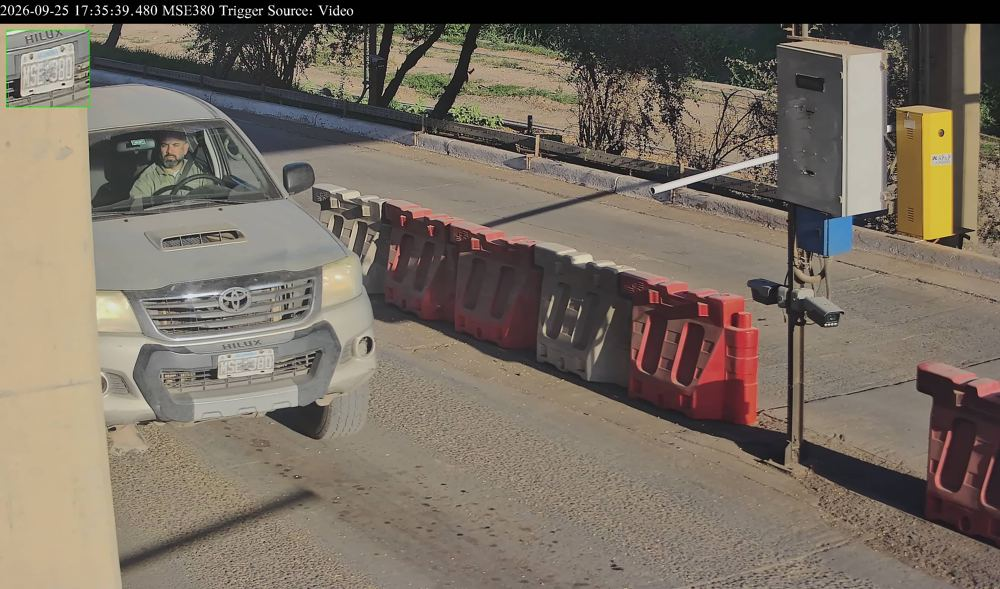
PICKUP
MSE380
Secuencia de visitas · 26 visitas
| Fecha | Hora | Planta | Recorrido |
|---|---|---|---|
| agosto 2026 · 1 visitas | |||
| 11/08/2026 | 11:21 | San Lorenzo | Portería SL 11:21 → Bal. SC1 SL 11:27 |
| septiembre 2026 · 15 visitas | |||
| 10/09/2026 | 07:42 | Ricardone | Bal.3 ing 07:42 → Bal.3 egr 12:42 |
| 14/09/2026 | 07:24 | San Lorenzo | Portería SL 07:24 → Bal. SC1 SL 15:41 → Bal. líq. 2 SL 15:51 |
| 15/09/2026 | 10:30 | San Lorenzo | Portería SL 10:30 → TK400 SL 10:37 → Portería SL 10:45 |
| 16/09/2026 | 10:57 | San Lorenzo | Portería SL 10:57 → Portería SL 12:39 |
| 21/09/2026 | 08:10 | San Lorenzo | Portería SL 08:10 → Portería SL 08:29 |
| 21/09/2026 | 14:00 | San Lorenzo | Portería SL 14:00 → TK400 SL 15:29 |
| 22/09/2026 | 09:37 | San Lorenzo | Portería SL 09:37 → TK400 SL 11:53 → Portería SL 12:03 |
| 22/09/2026 | 17:49 | San Lorenzo | TK400 SL 17:49 → Portería SL 17:51 |
| 23/09/2026 | 07:05 | San Lorenzo | Portería SL 07:05 → TK400 SL 07:41 → TK400 SL 08:57 → Portería SL 09:06 |
| 23/09/2026 | 12:39 | San Lorenzo | Portería SL 12:39 → TK400 SL 12:47 |
| 24/09/2026 | 10:08 | San Lorenzo | Portería SL 10:08 · una sola toma |
| 25/09/2026 | 10:01 | San Lorenzo | Portería SL 10:01 → TK400 SL 12:05 → Portería SL 12:40 |
| 25/09/2026 | 13:57 | San Lorenzo | TK400 SL 13:57 → Portería SL 17:39 |
| 30/09/2026 | 08:12 | Ricardone | Bal.3 ing 08:12 → Bal.3 egr 15:27 |
| 30/09/2026 | 16:12 | San Lorenzo | Portería SL 16:12 · una sola toma |
| octubre 2026 · 10 visitas | |||
| 01/10/2026 | 13:08 | Ricardone | Bal.3 ing 13:08 → Bal.2 egr 16:28 |
| 01/10/2026 | 16:42 | San Lorenzo | Portería SL 16:42 → Portería SL 18:42 |
| 02/10/2026 | 13:58 | Ricardone | Bal.3 ing 13:58 → Bal.2 egr 15:27 |
| 03/10/2026 | 07:26 | San Lorenzo | Portería SL 07:26 → Portería SL 17:45 |
| 06/10/2026 | 16:53 | San Lorenzo | Portería SL 16:53 → TK400 SL 18:05 → Portería SL 18:07 |
| 07/10/2026 | 08:21 | Ricardone | Bal.3 ing 08:21 → Bal.3 egr 11:46 → Bal.3 ing 11:54 |
| 07/10/2026 | 12:21 | Ricardone | Bal.3 egr 12:21 · una sola toma |
| 07/10/2026 | 12:50 | San Lorenzo | Portería SL 12:50 · una sola toma |
| 14/10/2026 | 15:08 | San Lorenzo | Portería SL 15:08 · una sola toma |
| 14/10/2026 | 15:26 | Ricardone | Bal.3 ing 15:26 → Bal.2 egr 18:43 |
FICHA DE VEHÍCULO · FUERA DEL SISTEMA DE CAMIONES
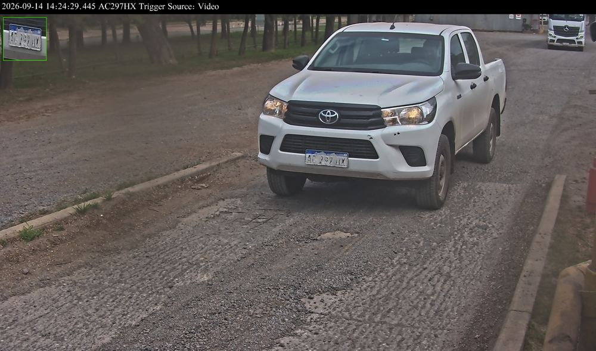
PICKUP
AC297HX
Secuencia de visitas · 25 visitas
| Fecha | Hora | Planta | Recorrido |
|---|---|---|---|
| agosto 2026 · 6 visitas | |||
| 12/08/2026 | 14:19 | Ricardone | Bal.3 ing 14:19 · una sola toma |
| 14/08/2026 | 13:29 | Ricardone | Bal.2 egr 13:29 · una sola toma |
| 24/08/2026 | 11:31 | Ricardone | Bal.3 egr 11:31 · una sola toma |
| 26/08/2026 | 14:13 | Ricardone | Bal.3 ing 14:13 → Bal.3 ing 14:58 → Bal.3 egr 15:23 → Bal.3 ing 15:28 |
| 27/08/2026 | 08:11 | Ricardone | Bal.3 ing 08:11 → Bal.3 egr 12:44 |
| 31/08/2026 | 12:21 | Ricardone | Bal.3 ing 12:21 · una sola toma |
| septiembre 2026 · 12 visitas | |||
| 03/09/2026 | 14:50 | Ricardone | Bal.3 egr 14:50 · una sola toma |
| 07/09/2026 | 14:35 | Ricardone | Bal.3 egr 14:35 · una sola toma |
| 07/09/2026 | 15:33 | Ricardone | Bal.3 ing 15:33 · una sola toma |
| 10/09/2026 | 16:14 | Ricardone | Bal.1 ing 16:14 · una sola toma |
| 11/09/2026 | 12:24 | Ricardone | Bal.3 egr 12:24 · una sola toma |
| 11/09/2026 | 13:07 | Ricardone | Bal.3 ing 13:07 · una sola toma |
| 14/09/2026 | 14:28 | Ricardone | Egreso Ric 14:28 · una sola toma |
| 14/09/2026 | 15:09 | Ricardone | Bal.3 ing 15:09 · una sola toma |
| 15/09/2026 | 15:32 | Ricardone | Bal.3 ing 15:32 · una sola toma |
| 21/09/2026 | 08:44 | Ricardone | Bal.3 ing 08:44 · una sola toma |
| 24/09/2026 | 08:09 | Ricardone | Bal.3 ing 08:09 → Bal.3 ing 12:12 |
| 25/09/2026 | 08:32 | Ricardone | Bal.3 ing 08:32 · una sola toma |
| octubre 2026 · 7 visitas | |||
| 08/10/2026 | 10:04 | Ricardone | Bal.3 ing 10:04 → Bal.3 ing 10:19 |
| 09/10/2026 | 08:41 | Ricardone | Bal.3 ing 08:41 → Bal.3 ing 09:16 → Bal.3 ing 10:49 |
| 13/10/2026 | 09:43 | Ricardone | Bal.3 ing 09:43 → Bal.3 ing 11:40 → Bal.3 egr 14:32 |
| 13/10/2026 | 15:22 | Ricardone | Bal.3 egr 15:22 · una sola toma |
| 14/10/2026 | 11:55 | Ricardone | Bal.3 egr 11:55 · una sola toma |
| 14/10/2026 | 14:43 | Ricardone | Bal.3 ing 14:43 → Bal.3 egr 15:25 |
| 14/10/2026 | 16:48 | Ricardone | Bal.2 egr 16:48 · una sola toma |
FICHA DE VEHÍCULO · FUERA DEL SISTEMA DE CAMIONES
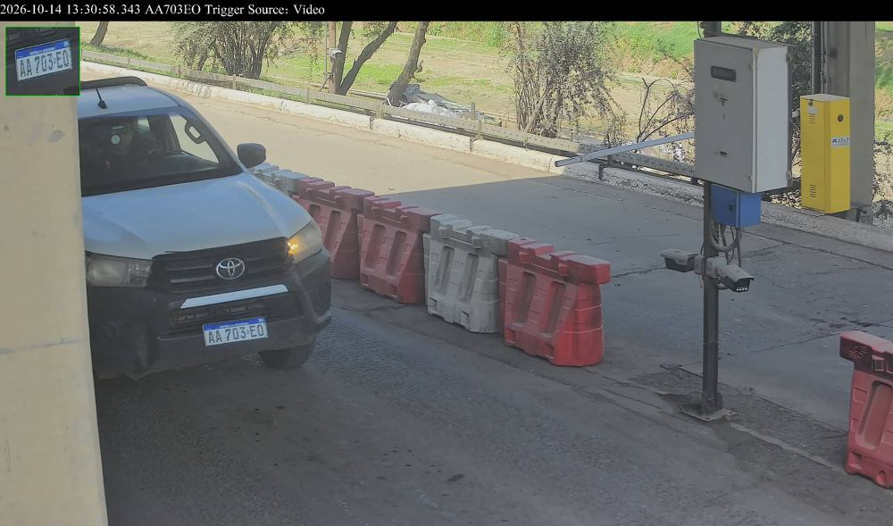
PICKUP
AA703EO
Secuencia de visitas · 24 visitas
| Fecha | Hora | Planta | Recorrido |
|---|---|---|---|
| agosto 2026 · 10 visitas | |||
| 03/08/2026 | 15:09 | San Lorenzo | Portería SL 15:09 → Bal. SC1 SL 15:34 |
| 07/08/2026 | 09:27 | San Lorenzo | Portería SL 09:27 → Portería SL 10:35 |
| 07/08/2026 | 11:13 | San Lorenzo | Bal. SC1 SL 11:13 · una sola toma |
| 13/08/2026 | 10:45 | San Lorenzo | Bal. SC1 SL 10:45 → Bal. SC1 SL 12:54 |
| 19/08/2026 | 12:20 | San Lorenzo | Portería SL 12:20 → Bal. SC1 SL 12:51 |
| 24/08/2026 | 09:01 | San Lorenzo | Bal. SC1 SL 09:01 → Portería SL 09:02 |
| 24/08/2026 | 15:02 | San Lorenzo | Bal. SC1 SL 15:02 → Portería SL 15:03 |
| 27/08/2026 | 09:17 | San Lorenzo | Bal. SC1 SL 09:17 → Portería SL 09:18 |
| 27/08/2026 | 10:50 | Ricardone | Bal.3 ing 10:50 → Bal.3 egr 11:36 |
| 28/08/2026 | 09:55 | San Lorenzo | Portería SL 09:55 → Portería SL 12:01 |
| septiembre 2026 · 7 visitas | |||
| 04/09/2026 | 10:03 | Ricardone | Bal.3 ing 10:03 → Bal.3 egr 10:36 |
| 05/09/2026 | 11:35 | San Lorenzo | Portería SL 11:35 · una sola toma |
| 08/09/2026 | 10:18 | San Lorenzo | Portería SL 10:18 · una sola toma |
| 08/09/2026 | 13:45 | Ricardone | Bal.3 ing 13:45 → Bal.3 egr 13:48 |
| 11/09/2026 | 12:29 | San Lorenzo | TK400 SL 12:29 → Portería SL 12:32 |
| 19/09/2026 | 08:29 | San Lorenzo | Bal. SC1 SL 08:29 → Portería SL 08:30 |
| 24/09/2026 | 16:45 | San Lorenzo | Portería SL 16:45 · una sola toma |
| octubre 2026 · 7 visitas | |||
| 01/10/2026 | 14:24 | San Lorenzo | Bal. SC1 SL 14:24 → Portería SL 14:25 |
| 05/10/2026 | 13:50 | San Lorenzo | TK400 SL 13:50 → Bal. SC1 SL 14:27 → Portería SL 14:28 |
| 13/10/2026 | 12:17 | San Lorenzo | Bal. SC1 SL 12:17 → Portería SL 12:19 |
| 13/10/2026 | 13:04 | San Lorenzo | Bal. SC1 SL 13:04 → Portería SL 13:05 |
| 13/10/2026 | 14:36 | San Lorenzo | Portería SL 14:36 → Bal. SC1 SL 14:55 |
| 14/10/2026 | 11:31 | San Lorenzo | Bal. SC1 SL 11:31 → Portería SL 11:32 |
| 14/10/2026 | 13:33 | San Lorenzo | Bal. SC1 SL 13:33 → Portería SL 13:34 |
FICHA DE VEHÍCULO · FUERA DEL SISTEMA DE CAMIONES
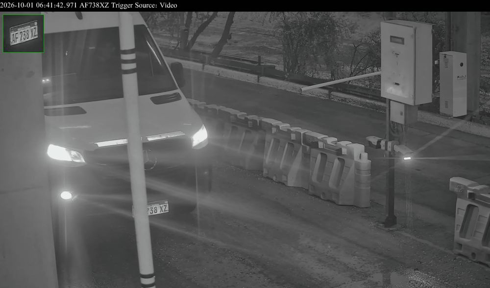
PICKUP
AF738XZ
Secuencia de visitas · 23 visitas
| Fecha | Hora | Planta | Recorrido |
|---|---|---|---|
| agosto 2026 · 10 visitas | |||
| 10/08/2026 | 06:45 | San Lorenzo | Portería SL 06:45 · una sola toma |
| 11/08/2026 | 06:46 | San Lorenzo | Portería SL 06:46 · una sola toma |
| 12/08/2026 | 06:46 | San Lorenzo | Portería SL 06:46 · una sola toma |
| 13/08/2026 | 06:52 | San Lorenzo | Portería SL 06:52 · una sola toma |
| 14/08/2026 | 06:47 | San Lorenzo | Portería SL 06:47 · una sola toma |
| 17/08/2026 | 18:42 | San Lorenzo | Portería SL 18:42 → Portería SL 19:15 |
| 19/08/2026 | 06:43 | San Lorenzo | Portería SL 06:43 · una sola toma |
| 22/08/2026 | 19:01 | San Lorenzo | Portería SL 19:01 · una sola toma |
| 28/08/2026 | 06:43 | San Lorenzo | Portería SL 06:43 · una sola toma |
| 31/08/2026 | 06:44 | San Lorenzo | Portería SL 06:44 · una sola toma |
| septiembre 2026 · 11 visitas | |||
| 03/09/2026 | 06:40 | San Lorenzo | Portería SL 06:40 · una sola toma |
| 04/09/2026 | 06:46 | San Lorenzo | Portería SL 06:46 · una sola toma |
| 15/09/2026 | 06:43 | San Lorenzo | Portería SL 06:43 · una sola toma |
| 18/09/2026 | 06:45 | San Lorenzo | Portería SL 06:45 · una sola toma |
| 21/09/2026 | 06:46 | San Lorenzo | Portería SL 06:46 · una sola toma |
| 22/09/2026 | 06:44 | San Lorenzo | Portería SL 06:44 · una sola toma |
| 23/09/2026 | 06:41 | San Lorenzo | Portería SL 06:41 · una sola toma |
| 24/09/2026 | 06:41 | San Lorenzo | Portería SL 06:41 · una sola toma |
| 25/09/2026 | 06:44 | San Lorenzo | Portería SL 06:44 · una sola toma |
| 28/09/2026 | 06:44 | San Lorenzo | Portería SL 06:44 · una sola toma |
| 30/09/2026 | 06:44 | San Lorenzo | Portería SL 06:44 · una sola toma |
| octubre 2026 · 2 visitas | |||
| 01/10/2026 | 06:45 | San Lorenzo | Portería SL 06:45 · una sola toma |
| 02/10/2026 | 06:43 | San Lorenzo | Portería SL 06:43 · una sola toma |
FICHA DE VEHÍCULO · FUERA DEL SISTEMA DE CAMIONES
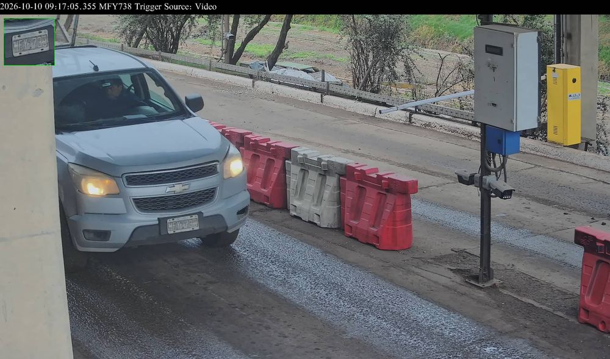
PICKUP
MFY738
Secuencia de visitas · 16 visitas
| Fecha | Hora | Planta | Recorrido |
|---|---|---|---|
| agosto 2026 · 9 visitas | |||
| 03/08/2026 | 10:43 | Ricardone | Bal.3 ing 10:43 · una sola toma |
| 03/08/2026 | 11:08 | San Lorenzo | Portería SL 11:08 → Portería SL 11:17 |
| 03/08/2026 | 11:55 | San Lorenzo | Portería SL 11:55 → Portería SL 12:33 |
| 04/08/2026 | 10:01 | Ricardone | Bal.1 ing 10:01 · una sola toma |
| 06/08/2026 | 10:35 | San Lorenzo | Portería SL 10:35 → Portería SL 11:02 |
| 06/08/2026 | 13:17 | San Lorenzo | Portería SL 13:17 · una sola toma |
| 22/08/2026 | 14:34 | San Lorenzo | Bal. SC1 SL 14:34 → Bal. SC1 SL 15:36 |
| 25/08/2026 | 07:57 | Ricardone | Bal.3 ing 07:57 · una sola toma |
| 27/08/2026 | 08:02 | Ricardone | Bal.3 ing 08:02 → Bal.3 ing 11:47 → Bal.3 egr 12:11 |
| septiembre 2026 · 2 visitas | |||
| 05/09/2026 | 09:37 | Ricardone | Bal.1 ing 09:37 → Bal.2 egr 09:44 |
| 07/09/2026 | 07:39 | San Lorenzo | Portería SL 07:39 → Portería SL 07:49 |
| octubre 2026 · 5 visitas | |||
| 05/10/2026 | 11:07 | Ricardone | Bal.3 ing 11:07 → Bal.3 egr 11:17 |
| 06/10/2026 | 11:06 | San Lorenzo | Portería SL 11:06 → Portería SL 11:46 |
| 07/10/2026 | 08:25 | San Lorenzo | Portería SL 08:25 → Bal. SC1 SL 08:39 → Bal. SC1 SL 08:54 → Portería SL 08:55 |
| 07/10/2026 | 14:46 | San Lorenzo | Portería SL 14:46 · una sola toma |
| 10/10/2026 | 08:54 | San Lorenzo | Bal. SC1 SL 08:54 → Portería SL 09:21 |
FICHA DE VEHÍCULO · FUERA DEL SISTEMA DE CAMIONES
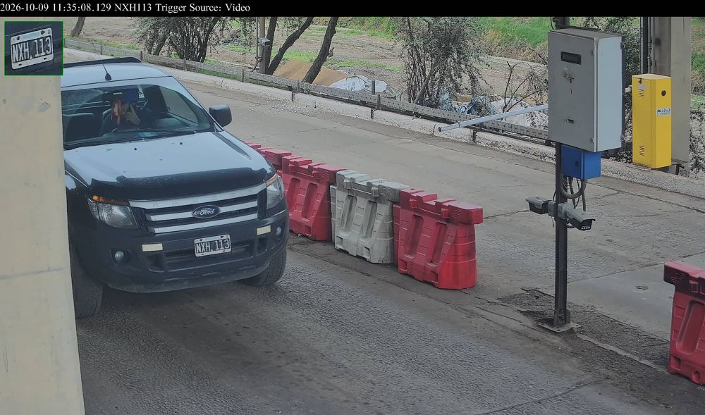
PICKUP
NXH113
Secuencia de visitas · 15 visitas
| Fecha | Hora | Planta | Recorrido |
|---|---|---|---|
| agosto 2026 · 3 visitas | |||
| 24/08/2026 | 08:14 | Ricardone | Bal.1 ing 08:14 → Bal.2 egr 08:24 |
| 25/08/2026 | 12:57 | Ricardone | Bal.3 ing 12:57 → Bal.3 egr 13:06 |
| 27/08/2026 | 08:08 | Ricardone | Bal.3 ing 08:08 → Bal.3 egr 08:15 |
| septiembre 2026 · 8 visitas | |||
| 04/09/2026 | 10:19 | Ricardone | Bal.3 ing 10:19 → Bal.3 egr 10:59 |
| 11/09/2026 | 11:25 | Ricardone | Bal.3 ing 11:25 → Bal.3 egr 11:35 |
| 15/09/2026 | 13:01 | San Lorenzo | Portería SL 13:01 → Portería SL 13:26 |
| 18/09/2026 | 10:31 | Ricardone | Bal.3 ing 10:31 → Bal.3 egr 10:47 |
| 25/09/2026 | 12:25 | Ricardone | Bal.3 ing 12:25 → Bal.3 egr 12:50 |
| 29/09/2026 | 07:37 | Ricardone | Bal.3 ing 07:37 → Bal.3 egr 07:43 |
| 29/09/2026 | 12:29 | Ricardone | Bal.3 ing 12:29 → Bal.3 egr 12:34 |
| 30/09/2026 | 10:25 | San Lorenzo | Portería SL 10:25 → Portería SL 10:57 |
| octubre 2026 · 4 visitas | |||
| 01/10/2026 | 11:35 | San Lorenzo | Portería SL 11:35 → Portería SL 12:09 |
| 01/10/2026 | 12:21 | Ricardone | Bal.3 ing 12:21 → Bal.3 egr 12:30 |
| 09/10/2026 | 11:06 | San Lorenzo | Portería SL 11:06 → Portería SL 11:39 |
| 09/10/2026 | 12:30 | Ricardone | Bal.3 ing 12:30 · una sola toma |
FICHA DE VEHÍCULO · FUERA DEL SISTEMA DE CAMIONES
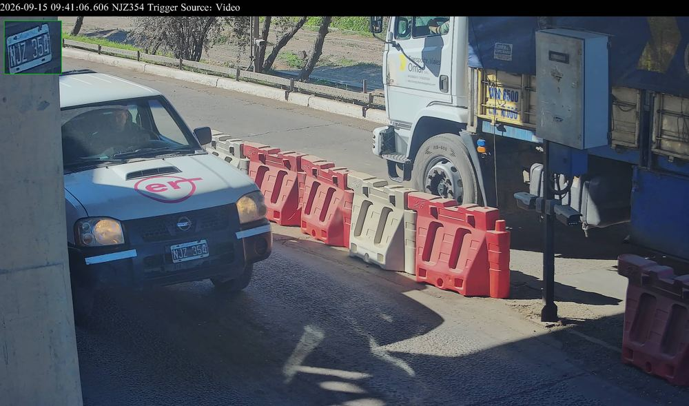
PICKUP
NJZ354
Secuencia de visitas · 15 visitas
| Fecha | Hora | Planta | Recorrido |
|---|---|---|---|
| agosto 2026 · 14 visitas | |||
| 12/08/2026 | 11:59 | San Lorenzo | Portería SL 11:59 → Portería SL 13:32 |
| 12/08/2026 | 13:50 | San Lorenzo | Portería SL 13:50 → Portería SL 14:28 |
| 13/08/2026 | 12:32 | San Lorenzo | Portería SL 12:32 → TK400 SL 13:58 → Portería SL 14:03 |
| 14/08/2026 | 08:04 | San Lorenzo | Portería SL 08:04 → Portería SL 12:40 |
| 14/08/2026 | 12:46 | San Lorenzo | TK400 SL 12:46 → TK400 SL 13:43 → Portería SL 13:51 |
| 14/08/2026 | 14:54 | San Lorenzo | Portería SL 14:54 → Portería SL 15:16 |
| 18/08/2026 | 09:31 | San Lorenzo | Portería SL 09:31 → Portería SL 10:58 |
| 18/08/2026 | 11:55 | Ricardone | Bal.3 ing 11:55 → Bal.3 egr 11:59 |
| 18/08/2026 | 12:12 | San Lorenzo | Portería SL 12:12 → TK400 SL 12:48 → TK400 SL 13:29 → Portería SL 13:50 |
| 19/08/2026 | 10:04 | San Lorenzo | Portería SL 10:04 → Bal. SC1 SL 10:08 → TK400 SL 13:36 → Bal. SC1 SL 16:12 → Portería SL 16:13 |
| 19/08/2026 | 17:57 | San Lorenzo | Portería SL 17:57 → Bal. SC1 SL 18:01 → Portería SL 18:02 |
| 20/08/2026 | 12:32 | San Lorenzo | Portería SL 12:32 → TK400 SL 13:19 → Portería SL 13:21 |
| 20/08/2026 | 13:53 | San Lorenzo | Portería SL 13:53 → Portería SL 15:50 |
| 20/08/2026 | 15:52 | San Lorenzo | TK400 SL 15:52 · una sola toma |
| septiembre 2026 · 1 visitas | |||
| 15/09/2026 | 08:43 | San Lorenzo | Portería SL 08:43 → TK400 SL 08:49 → TK400 SL 09:40 → Portería SL 09:45 |
FICHA DE VEHÍCULO · FUERA DEL SISTEMA DE CAMIONES
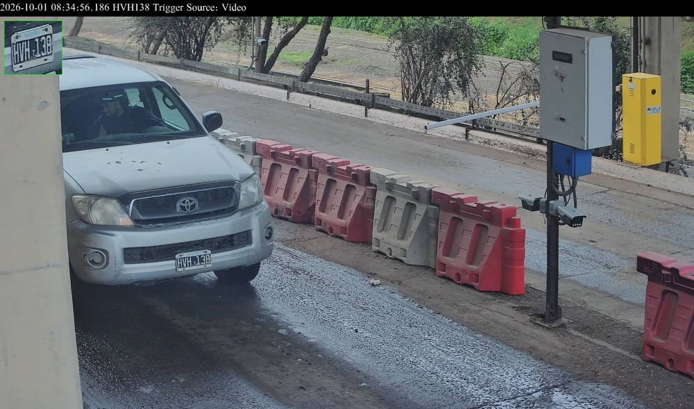
PICKUP
HVH138
Secuencia de visitas · 13 visitas
| Fecha | Hora | Planta | Recorrido |
|---|---|---|---|
| agosto 2026 · 3 visitas | |||
| 03/08/2026 | 08:10 | San Lorenzo | Portería SL 08:10 · una sola toma |
| 06/08/2026 | 13:48 | San Lorenzo | Portería SL 13:48 → Portería SL 13:56 |
| 13/08/2026 | 07:31 | San Lorenzo | Portería SL 07:31 · una sola toma |
| septiembre 2026 · 7 visitas | |||
| 03/09/2026 | 13:06 | Ricardone | Bal.3 ing 13:06 → Bal.3 egr 13:13 |
| 10/09/2026 | 08:32 | San Lorenzo | Portería SL 08:32 · una sola toma |
| 17/09/2026 | 13:10 | San Lorenzo | Portería SL 13:10 → Portería SL 16:33 |
| 18/09/2026 | 10:48 | San Lorenzo | Portería SL 10:48 → TK400 SL 10:53 → Portería SL 10:54 |
| 22/09/2026 | 07:47 | San Lorenzo | TK400 SL 07:47 → Portería SL 08:34 |
| 22/09/2026 | 09:48 | San Lorenzo | Portería SL 09:48 → Portería SL 11:03 |
| 22/09/2026 | 11:10 | San Lorenzo | TK400 SL 11:10 → Portería SL 11:13 |
| octubre 2026 · 3 visitas | |||
| 01/10/2026 | 08:38 | San Lorenzo | Portería SL 08:38 → Portería SL 12:35 |
| 09/10/2026 | 08:30 | Ricardone | Bal.3 ing 08:30 · una sola toma |
| 13/10/2026 | 10:12 | Ricardone | Bal.3 ing 10:12 → Bal.3 ing 14:47 → Bal.3 egr 15:03 |
FICHA DE VEHÍCULO · FUERA DEL SISTEMA DE CAMIONES
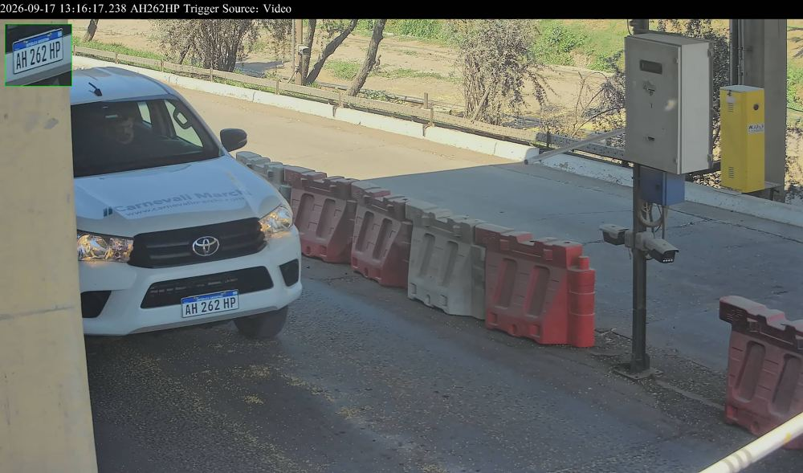
PICKUP
AH262HP
Secuencia de visitas · 12 visitas
| Fecha | Hora | Planta | Recorrido |
|---|---|---|---|
| agosto 2026 · 6 visitas | |||
| 03/08/2026 | 07:01 | San Lorenzo | Portería SL 07:01 → Portería SL 15:49 |
| 14/08/2026 | 11:12 | San Lorenzo | Portería SL 11:12 → Portería SL 12:06 |
| 25/08/2026 | 07:22 | Ricardone | Bal.3 ing 07:22 · una sola toma |
| 26/08/2026 | 12:43 | Ricardone | Bal.3 ing 12:43 → Bal.3 egr 12:54 |
| 26/08/2026 | 15:23 | San Lorenzo | Portería SL 15:23 · una sola toma |
| 27/08/2026 | 11:37 | Ricardone | Bal.3 ing 11:37 → Bal.3 egr 12:49 |
| septiembre 2026 · 2 visitas | |||
| 07/09/2026 | 09:08 | San Lorenzo | Portería SL 09:08 → Portería SL 10:53 |
| 17/09/2026 | 12:19 | San Lorenzo | Portería SL 12:19 → Portería SL 13:20 |
| octubre 2026 · 4 visitas | |||
| 02/10/2026 | 15:27 | San Lorenzo | Portería SL 15:27 → Portería SL 15:38 |
| 09/10/2026 | 12:14 | Ricardone | Bal.3 ing 12:14 · una sola toma |
| 13/10/2026 | 10:26 | Ricardone | Bal.3 ing 10:26 → Bal.3 egr 10:38 |
| 14/10/2026 | 10:53 | Ricardone | Bal.3 ing 10:53 → Bal.3 egr 11:11 |
FICHA DE VEHÍCULO · FUERA DEL SISTEMA DE CAMIONES
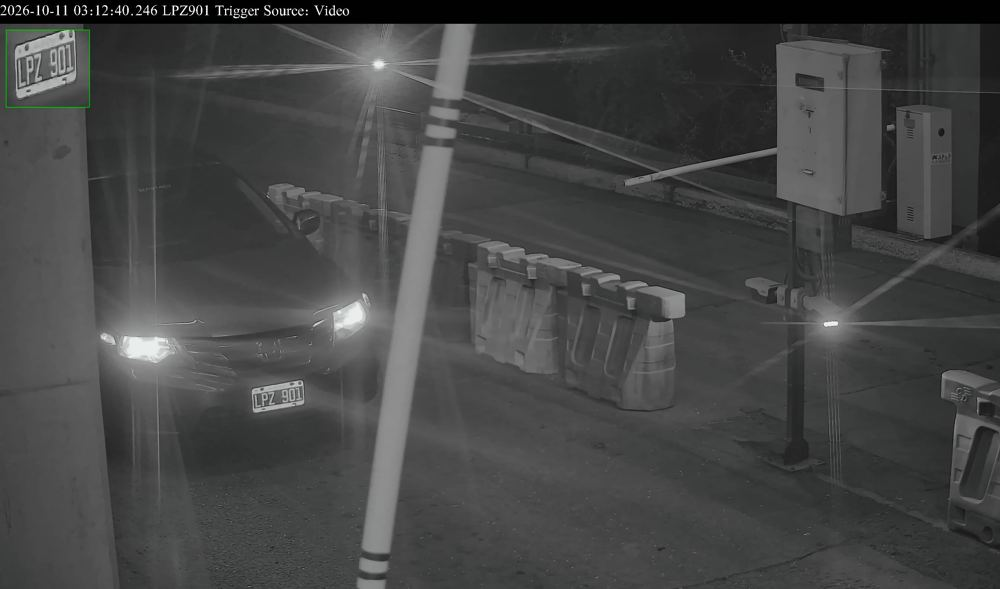
PICKUP
LPZ901
Secuencia de visitas · 12 visitas
| Fecha | Hora | Planta | Recorrido |
|---|---|---|---|
| agosto 2026 · 2 visitas | |||
| 29/08/2026 | 23:00 | San Lorenzo | Portería SL 23:00 → Portería SL 23:06 |
| 29/08/2026 | 23:13 | Ricardone | Bal.3 ing 23:13 · una sola toma |
| septiembre 2026 · 9 visitas | |||
| 05/09/2026 | 11:21 | San Lorenzo | Portería SL 11:21 → Portería SL 15:05 |
| 05/09/2026 | 11:34 | Ricardone | Bal.3 ing 11:34 → Bal.1 ing 15:21 → Bal.2 egr 15:25 |
| 05/09/2026 | 15:11 | San Lorenzo | Portería SL 15:11 → Portería SL 07:10 |
| 06/09/2026 | 07:16 | San Lorenzo | Portería SL 07:16 → Portería SL 11:11 |
| 06/09/2026 | 07:21 | Ricardone | Bal.1 ing 07:21 → Bal.2 egr 07:24 |
| 06/09/2026 | 11:17 | San Lorenzo | Portería SL 11:17 → Portería SL 15:02 |
| 06/09/2026 | 11:32 | Ricardone | Bal.1 ing 11:32 → Bal.2 egr 11:34 |
| 06/09/2026 | 15:07 | San Lorenzo | Portería SL 15:07 · una sola toma |
| 06/09/2026 | 15:13 | Ricardone | Bal.1 ing 15:13 → Bal.2 egr 15:16 |
| octubre 2026 · 1 visitas | |||
| 11/10/2026 | 03:11 | San Lorenzo | Portería SL 03:11 → Portería SL 03:16 |
FICHA DE VEHÍCULO · FUERA DEL SISTEMA DE CAMIONES
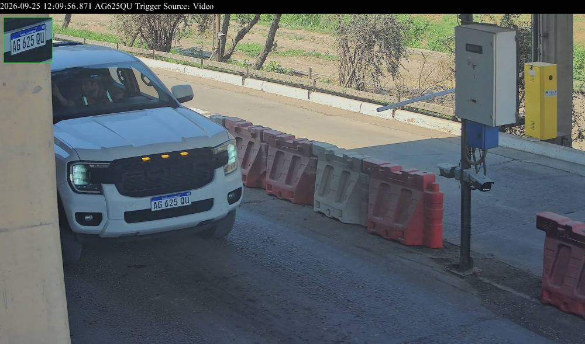
PICKUP
AG625QU
Secuencia de visitas · 10 visitas
| Fecha | Hora | Planta | Recorrido |
|---|---|---|---|
| septiembre 2026 · 9 visitas | |||
| 04/09/2026 | 07:14 | San Lorenzo | Portería SL 07:14 → Portería SL 07:49 |
| 08/09/2026 | 06:26 | San Lorenzo | Portería SL 06:26 → Portería SL 06:46 |
| 10/09/2026 | 15:20 | San Lorenzo | Portería SL 15:20 → Portería SL 15:41 |
| 14/09/2026 | 07:30 | San Lorenzo | Portería SL 07:30 → Portería SL 08:18 |
| 18/09/2026 | 10:02 | San Lorenzo | Portería SL 10:02 → Portería SL 12:15 |
| 18/09/2026 | 12:35 | San Lorenzo | Portería SL 12:35 → Portería SL 13:07 |
| 22/09/2026 | 14:15 | San Lorenzo | Portería SL 14:15 → TK400 SL 14:17 → Portería SL 15:06 |
| 24/09/2026 | 10:01 | San Lorenzo | Portería SL 10:01 → Portería SL 10:32 |
| 25/09/2026 | 12:01 | San Lorenzo | Portería SL 12:01 → Portería SL 12:13 |
| octubre 2026 · 1 visitas | |||
| 05/10/2026 | 10:48 | San Lorenzo | Portería SL 10:48 → Portería SL 11:28 |
FICHA DE VEHÍCULO · FUERA DEL SISTEMA DE CAMIONES
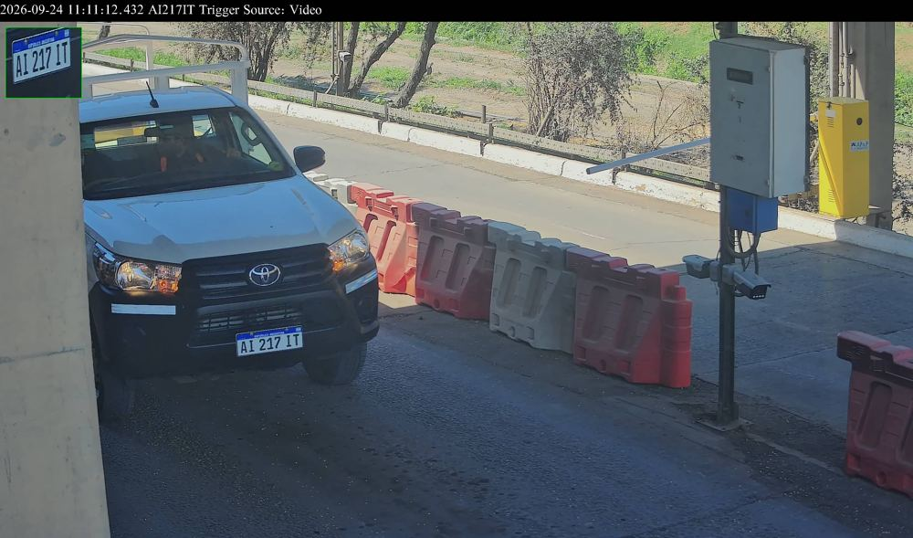
PICKUP
AI217IT
Secuencia de visitas · 10 visitas
| Fecha | Hora | Planta | Recorrido |
|---|---|---|---|
| agosto 2026 · 6 visitas | |||
| 10/08/2026 | 10:31 | San Lorenzo | Portería SL 10:31 → Portería SL 10:55 |
| 14/08/2026 | 11:15 | San Lorenzo | Portería SL 11:15 → Portería SL 11:35 |
| 18/08/2026 | 10:19 | Ricardone | Bal.3 ing 10:19 → Bal.3 egr 10:26 |
| 18/08/2026 | 10:35 | San Lorenzo | Portería SL 10:35 · una sola toma |
| 24/08/2026 | 10:14 | San Lorenzo | Portería SL 10:14 · una sola toma |
| 26/08/2026 | 11:25 | San Lorenzo | Portería SL 11:25 · una sola toma |
| septiembre 2026 · 2 visitas | |||
| 14/09/2026 | 10:02 | Ricardone | Bal.3 ing 10:02 → Bal.3 egr 10:14 |
| 24/09/2026 | 10:44 | San Lorenzo | Portería SL 10:44 → Portería SL 11:15 |
| octubre 2026 · 2 visitas | |||
| 06/10/2026 | 09:57 | Ricardone | Bal.3 ing 09:57 → Bal.3 egr 10:04 |
| 09/10/2026 | 10:33 | Ricardone | Bal.3 ing 10:33 · una sola toma |
FICHA DE VEHÍCULO · FUERA DEL SISTEMA DE CAMIONES
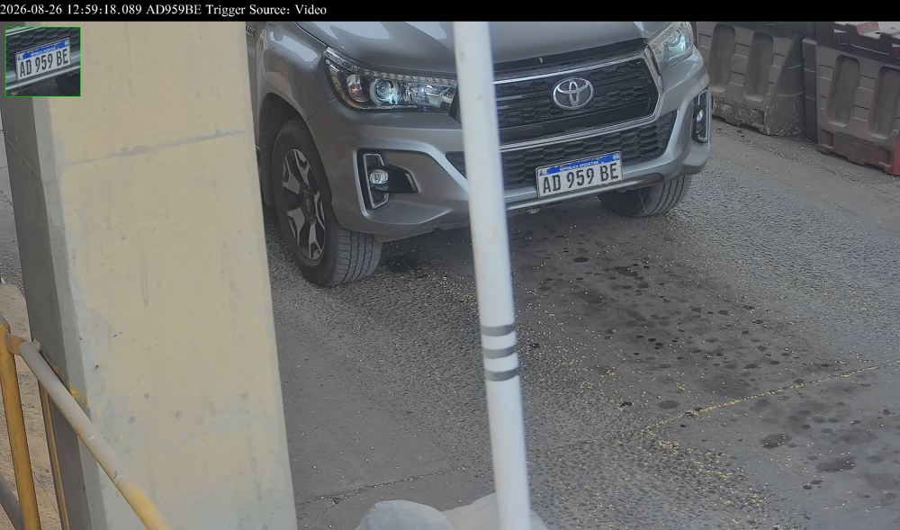
PICKUP
AD959BE
Secuencia de visitas · 10 visitas
| Fecha | Hora | Planta | Recorrido |
|---|---|---|---|
| agosto 2026 · 10 visitas | |||
| 04/08/2026 | 12:09 | San Lorenzo | Portería SL 12:09 → Bal. SC1 SL 12:11 → Bal. SC1 SL 13:26 → Portería SL 13:28 |
| 05/08/2026 | 11:53 | San Lorenzo | Portería SL 11:53 → Bal. SC1 SL 12:31 → Portería SL 12:47 |
| 06/08/2026 | 10:15 | San Lorenzo | Portería SL 10:15 → Bal. SC1 SL 13:17 → Portería SL 13:18 |
| 11/08/2026 | 14:01 | San Lorenzo | Portería SL 14:01 → Bal. SC1 SL 14:11 → Portería SL 14:12 |
| 12/08/2026 | 10:38 | San Lorenzo | Portería SL 10:38 → Portería SL 13:23 |
| 19/08/2026 | 09:54 | San Lorenzo | Portería SL 09:54 → Bal. SC1 SL 15:41 → Portería SL 15:42 |
| 20/08/2026 | 10:13 | San Lorenzo | Portería SL 10:13 → Bal. SC1 SL 12:22 |
| 21/08/2026 | 11:27 | San Lorenzo | Portería SL 11:27 · una sola toma |
| 26/08/2026 | 13:01 | San Lorenzo | Bal. SC1 SL 13:01 → Portería SL 13:02 |
| 28/08/2026 | 14:07 | San Lorenzo | Portería SL 14:07 · una sola toma |
FICHA DE VEHÍCULO · FUERA DEL SISTEMA DE CAMIONES
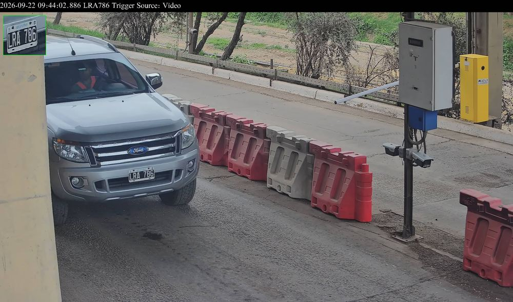
PICKUP
LRA786
Secuencia de visitas · 10 visitas
| Fecha | Hora | Planta | Recorrido |
|---|---|---|---|
| agosto 2026 · 6 visitas | |||
| 03/08/2026 | 14:02 | San Lorenzo | Portería SL 14:02 → Portería SL 14:10 |
| 03/08/2026 | 15:55 | San Lorenzo | Portería SL 15:55 · una sola toma |
| 04/08/2026 | 10:09 | San Lorenzo | Portería SL 10:09 → Portería SL 12:12 |
| 14/08/2026 | 09:42 | San Lorenzo | Portería SL 09:42 → TK400 SL 09:45 → Portería SL 11:17 |
| 14/08/2026 | 11:54 | San Lorenzo | Portería SL 11:54 → Portería SL 12:18 |
| 21/08/2026 | 10:35 | San Lorenzo | Portería SL 10:35 → TK400 SL 10:38 → TK400 SL 11:35 → Portería SL 11:38 |
| septiembre 2026 · 3 visitas | |||
| 03/09/2026 | 10:54 | San Lorenzo | Portería SL 10:54 → Portería SL 12:02 |
| 21/09/2026 | 08:21 | San Lorenzo | Portería SL 08:21 → TK400 SL 09:41 → Portería SL 09:49 |
| 22/09/2026 | 09:03 | San Lorenzo | Portería SL 09:03 → Portería SL 09:48 |
| octubre 2026 · 1 visitas | |||
| 13/10/2026 | 06:36 | San Lorenzo | Portería SL 06:36 · una sola toma |
FICHA DE VEHÍCULO · FUERA DEL SISTEMA DE CAMIONES
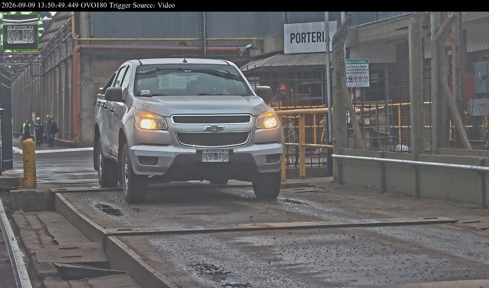
PICKUP
OVO180
Secuencia de visitas · 10 visitas
| Fecha | Hora | Planta | Recorrido |
|---|---|---|---|
| agosto 2026 · 9 visitas | |||
| 03/08/2026 | 12:36 | Ricardone | Bal.3 ing 12:36 → Bal.2 egr 17:08 |
| 05/08/2026 | 12:19 | Ricardone | Bal.3 ing 12:19 → Bal.3 egr 12:31 |
| 12/08/2026 | 09:12 | Ricardone | Bal.3 ing 09:12 → Bal.3 egr 11:23 |
| 14/08/2026 | 12:17 | Ricardone | Bal.1 ing 12:17 → Bal.3 egr 14:37 |
| 18/08/2026 | 12:36 | Ricardone | Bal.3 ing 12:36 → Bal.3 egr 15:29 |
| 19/08/2026 | 13:31 | Ricardone | Bal.3 ing 13:31 → Bal.3 egr 15:48 |
| 22/08/2026 | 14:26 | Ricardone | Bal.2 egr 14:26 · una sola toma |
| 29/08/2026 | 16:43 | Ricardone | Bal.2 egr 16:43 · una sola toma |
| 31/08/2026 | 11:22 | Ricardone | Bal.3 ing 11:22 → Bal.3 egr 11:40 |
| septiembre 2026 · 1 visitas | |||
| 09/09/2026 | 13:18 | Ricardone | Bal.3 ing 13:18 → Bal.3 egr 13:54 |
FICHA DE VEHÍCULO · FUERA DEL SISTEMA DE CAMIONES
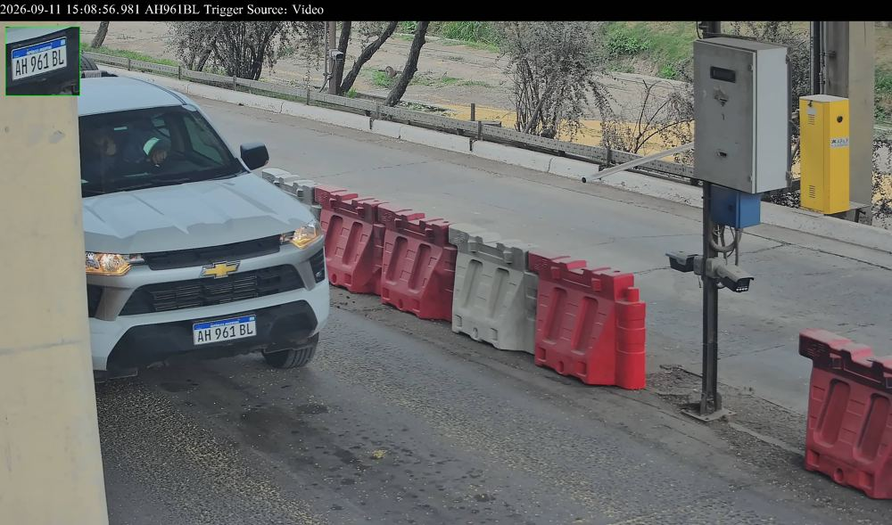
PICKUP
AH961BL
Secuencia de visitas · 9 visitas
| Fecha | Hora | Planta | Recorrido |
|---|---|---|---|
| septiembre 2026 · 9 visitas | |||
| 09/09/2026 | 09:38 | San Lorenzo | Portería SL 09:38 → Portería SL 11:46 |
| 09/09/2026 | 14:27 | San Lorenzo | Portería SL 14:27 → Portería SL 15:34 |
| 09/09/2026 | 18:30 | San Lorenzo | Portería SL 18:30 → Portería SL 19:04 |
| 10/09/2026 | 07:00 | San Lorenzo | Portería SL 07:00 → Portería SL 07:08 |
| 10/09/2026 | 14:29 | San Lorenzo | Portería SL 14:29 → Portería SL 14:57 |
| 10/09/2026 | 16:20 | San Lorenzo | Portería SL 16:20 → Portería SL 17:03 |
| 11/09/2026 | 08:49 | San Lorenzo | Portería SL 08:49 → Portería SL 11:34 |
| 11/09/2026 | 12:07 | San Lorenzo | Portería SL 12:07 → Portería SL 12:21 |
| 11/09/2026 | 13:00 | San Lorenzo | Portería SL 13:00 → Portería SL 15:12 |
FICHA DE VEHÍCULO · FUERA DEL SISTEMA DE CAMIONES
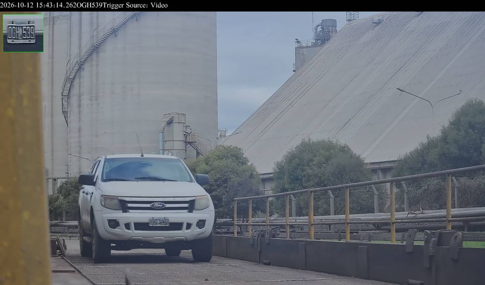
PICKUP
OGH539
Secuencia de visitas · 8 visitas
| Fecha | Hora | Planta | Recorrido |
|---|---|---|---|
| agosto 2026 · 4 visitas | |||
| 03/08/2026 | 09:34 | San Lorenzo | Portería SL 09:34 → Portería SL 10:58 |
| 05/08/2026 | 10:24 | San Lorenzo | Portería SL 10:24 → Bal. SC1 SL 12:16 |
| 23/08/2026 | 10:10 | San Lorenzo | Portería SL 10:10 → Bal. SC1 SL 11:31 → Portería SL 11:32 |
| 25/08/2026 | 09:11 | San Lorenzo | Portería SL 09:11 → Bal. SC1 SL 10:43 → Portería SL 10:43 |
| septiembre 2026 · 3 visitas | |||
| 06/09/2026 | 11:03 | San Lorenzo | Portería SL 11:03 → Portería SL 12:30 |
| 15/09/2026 | 10:53 | San Lorenzo | Portería SL 10:53 → Portería SL 11:59 |
| 27/09/2026 | 09:58 | San Lorenzo | Portería SL 09:58 → Bal. SC1 SL 09:59 |
| octubre 2026 · 1 visitas | |||
| 12/10/2026 | 13:59 | San Lorenzo | Portería SL 13:59 → Bal. SC1 SL 14:00 → Bal. SC1 SL 15:47 → Portería SL 15:47 |
FICHA DE VEHÍCULO · FUERA DEL SISTEMA DE CAMIONES
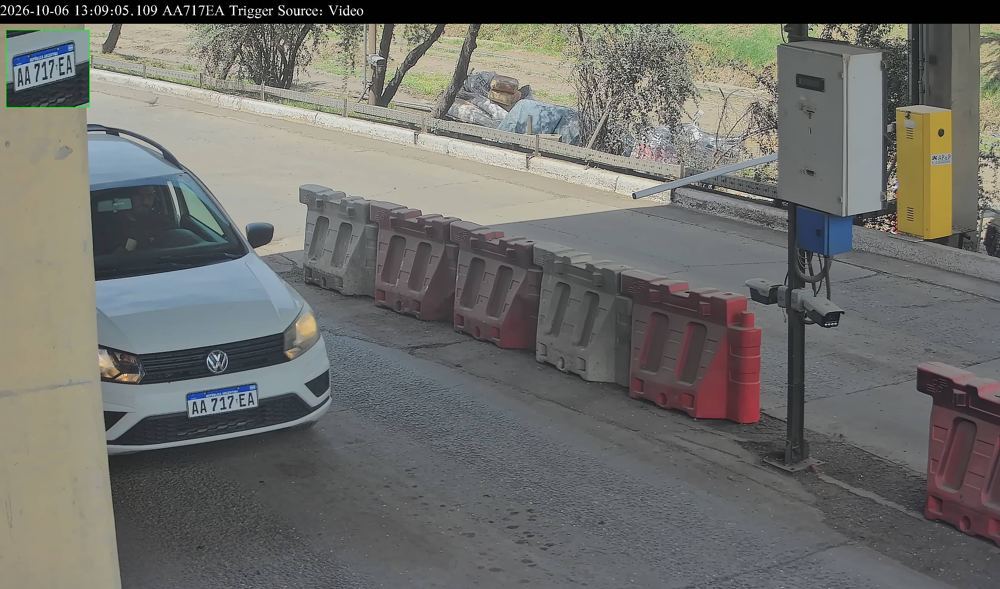
PICKUP
AA717EA
Secuencia de visitas · 8 visitas
| Fecha | Hora | Planta | Recorrido |
|---|---|---|---|
| agosto 2026 · 4 visitas | |||
| 07/08/2026 | 12:25 | San Lorenzo | Portería SL 12:25 → Bal. SC1 SL 12:26 → Portería SL 12:44 |
| 12/08/2026 | 14:22 | San Lorenzo | Portería SL 14:22 → Bal. SC1 SL 14:35 |
| 20/08/2026 | 09:49 | San Lorenzo | Portería SL 09:49 → Bal. SC1 SL 10:09 → Portería SL 10:40 |
| 20/08/2026 | 10:42 | San Lorenzo | Bal. SC1 SL 10:42 → Portería SL 11:03 |
| septiembre 2026 · 3 visitas | |||
| 15/09/2026 | 12:24 | San Lorenzo | Portería SL 12:24 → Portería SL 12:42 |
| 15/09/2026 | 13:12 | San Lorenzo | Portería SL 13:12 → Portería SL 13:38 |
| 15/09/2026 | 14:16 | San Lorenzo | Portería SL 14:16 → Bal. SC1 SL 14:17 → Portería SL 14:43 |
| octubre 2026 · 1 visitas | |||
| 06/10/2026 | 12:23 | San Lorenzo | Portería SL 12:23 → Bal. SC1 SL 12:24 → Bal. SC1 SL 13:12 → Portería SL 13:13 |
FICHA DE VEHÍCULO · FUERA DEL SISTEMA DE CAMIONES
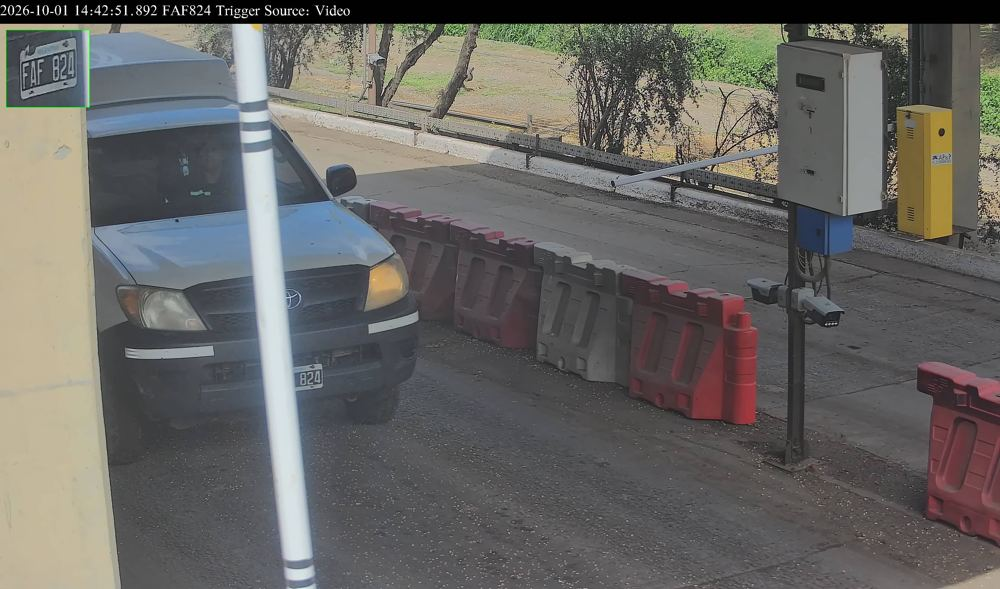
PICKUP
FAF824
Secuencia de visitas · 8 visitas
| Fecha | Hora | Planta | Recorrido |
|---|---|---|---|
| agosto 2026 · 5 visitas | |||
| 04/08/2026 | 10:11 | San Lorenzo | Portería SL 10:11 · una sola toma |
| 05/08/2026 | 11:04 | San Lorenzo | Portería SL 11:04 · una sola toma |
| 12/08/2026 | 14:56 | San Lorenzo | Bal. SC1 SL 14:56 → Portería SL 14:58 |
| 24/08/2026 | 11:51 | Ricardone | Bal.1 ing 11:51 → Bal.2 egr 16:29 |
| 25/08/2026 | 07:33 | Ricardone | Bal.3 ing 07:33 → Bal.3 egr 12:41 |
| septiembre 2026 · 1 visitas | |||
| 29/09/2026 | 12:32 | San Lorenzo | Portería SL 12:32 → Portería SL 17:10 |
| octubre 2026 · 2 visitas | |||
| 01/10/2026 | 14:46 | San Lorenzo | Portería SL 14:46 → Portería SL 18:30 |
| 14/10/2026 | 20:47 | San Lorenzo | Portería SL 20:47 · una sola toma |
FICHA DE VEHÍCULO · FUERA DEL SISTEMA DE CAMIONES
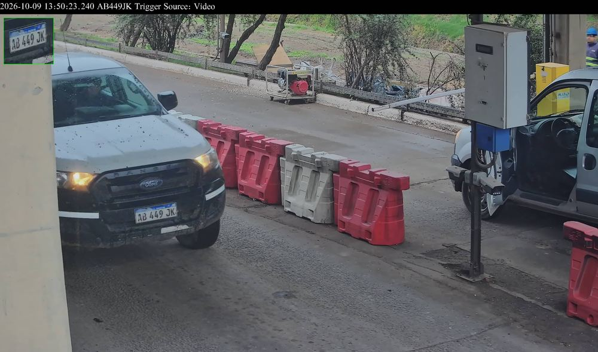
PICKUP
AB449JK
Secuencia de visitas · 7 visitas
| Fecha | Hora | Planta | Recorrido |
|---|---|---|---|
| septiembre 2026 · 2 visitas | |||
| 17/09/2026 | 13:39 | Ricardone | Bal.3 ing 13:39 → Bal.3 egr 15:35 |
| 24/09/2026 | 08:52 | Ricardone | Bal.3 ing 08:52 → Bal.3 egr 13:13 |
| octubre 2026 · 5 visitas | |||
| 02/10/2026 | 08:37 | San Lorenzo | Portería SL 08:37 → Bal. SC1 SL 09:49 → Bal. SC1 SL 11:53 → Bal. SC1 SL 17:41 → Portería SL 18:12 |
| 02/10/2026 | 18:12 | San Lorenzo | Bal. SC1 SL 18:12 → Portería SL 18:18 |
| 07/10/2026 | 08:58 | San Lorenzo | Portería SL 08:58 → Bal. SC1 SL 09:00 → Bal. SC1 SL 13:50 → Portería SL 13:53 |
| 08/10/2026 | 08:53 | San Lorenzo | Portería SL 08:53 → Bal. SC1 SL 08:54 → Bal. SC1 SL 16:21 → Portería SL 16:23 |
| 09/10/2026 | 08:42 | San Lorenzo | Portería SL 08:42 → Bal. SC1 SL 08:43 → Bal. SC1 SL 10:34 → Bal. SC1 SL 13:52 → Portería SL 13:54 |
FICHA DE VEHÍCULO · FUERA DEL SISTEMA DE CAMIONES
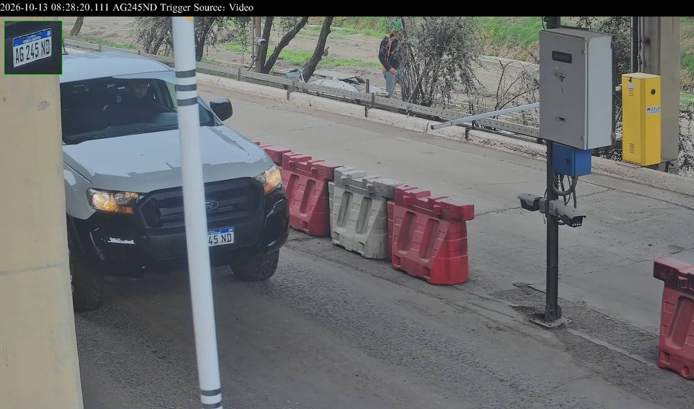
PICKUP
AG245ND
Secuencia de visitas · 7 visitas
| Fecha | Hora | Planta | Recorrido |
|---|---|---|---|
| agosto 2026 · 3 visitas | |||
| 04/08/2026 | 08:24 | San Lorenzo | Portería SL 08:24 → Bal. SC1 SL 08:41 → Portería SL 11:00 |
| 04/08/2026 | 12:05 | San Lorenzo | Portería SL 12:05 → Portería SL 18:59 |
| 21/08/2026 | 18:10 | San Lorenzo | Portería SL 18:10 → Portería SL 18:16 |
| septiembre 2026 · 2 visitas | |||
| 11/09/2026 | 07:37 | Ricardone | Bal.3 ing 07:37 → Bal.3 egr 11:47 |
| 19/09/2026 | 07:52 | San Lorenzo | Portería SL 07:52 → Bal. SC1 SL 08:18 → Bal. líq. 2 SL 08:26 → TK400 SL 09:22 → Bal. SC1 SL 14:08 → BalLiq2a 18:04 → Bal. SC1 SL 18:10 → TK400 SL 18:29 → Portería SL 18:33 |
| octubre 2026 · 2 visitas | |||
| 02/10/2026 | 14:45 | Ricardone | Bal.3 ing 14:45 → Bal.2 egr 15:26 |
| 13/10/2026 | 08:12 | San Lorenzo | Portería SL 08:12 → TK400 SL 08:29 → Portería SL 08:32 |
FICHA DE VEHÍCULO · FUERA DEL SISTEMA DE CAMIONES
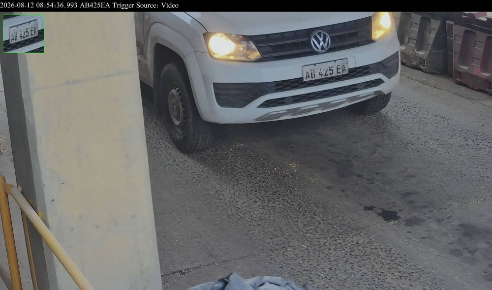
PICKUP
AB425EA
Secuencia de visitas · 7 visitas
| Fecha | Hora | Planta | Recorrido |
|---|---|---|---|
| agosto 2026 · 7 visitas | |||
| 03/08/2026 | 07:24 | San Lorenzo | Portería SL 07:24 → Portería SL 15:47 |
| 04/08/2026 | 07:34 | San Lorenzo | Portería SL 07:34 · una sola toma |
| 05/08/2026 | 07:39 | San Lorenzo | Portería SL 07:39 → Portería SL 15:57 |
| 07/08/2026 | 07:26 | San Lorenzo | Portería SL 07:26 → Portería SL 15:01 |
| 10/08/2026 | 07:27 | San Lorenzo | Portería SL 07:27 → TK400 SL 07:29 → TK400 SL 15:45 → Portería SL 15:47 |
| 11/08/2026 | 07:35 | San Lorenzo | Portería SL 07:35 → Portería SL 15:43 |
| 12/08/2026 | 07:17 | San Lorenzo | Portería SL 07:17 → Portería SL 08:58 |
FICHA DE VEHÍCULO · FUERA DEL SISTEMA DE CAMIONES
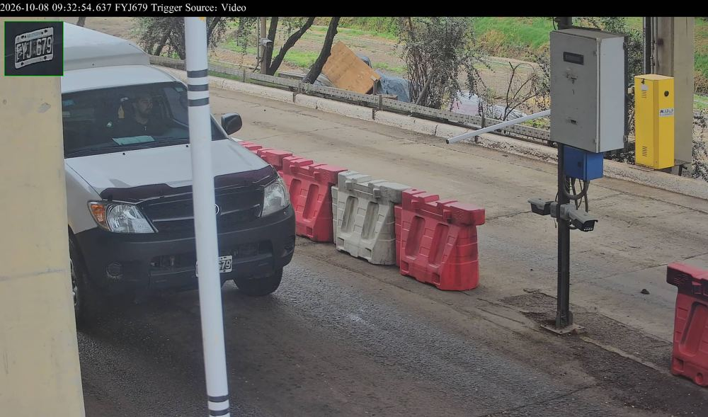
PICKUP
FYJ679
Secuencia de visitas · 7 visitas
| Fecha | Hora | Planta | Recorrido |
|---|---|---|---|
| agosto 2026 · 3 visitas | |||
| 07/08/2026 | 10:15 | San Lorenzo | Portería SL 10:15 → Bal. SC1 SL 10:17 → Bal. SC1 SL 11:53 → Portería SL 12:41 |
| 07/08/2026 | 12:42 | San Lorenzo | Bal. SC1 SL 12:42 → Bal. SC1 SL 16:13 |
| 27/08/2026 | 14:11 | San Lorenzo | Bal. SC1 SL 14:11 → Portería SL 14:12 |
| septiembre 2026 · 1 visitas | |||
| 23/09/2026 | 09:05 | San Lorenzo | Portería SL 09:05 → Portería SL 10:16 |
| octubre 2026 · 3 visitas | |||
| 08/10/2026 | 06:54 | San Lorenzo | Portería SL 06:54 → Portería SL 09:36 |
| 08/10/2026 | 13:02 | San Lorenzo | Portería SL 13:02 → Portería SL 14:19 |
| 08/10/2026 | 15:55 | San Lorenzo | Portería SL 15:55 · una sola toma |
FICHA DE VEHÍCULO · FUERA DEL SISTEMA DE CAMIONES
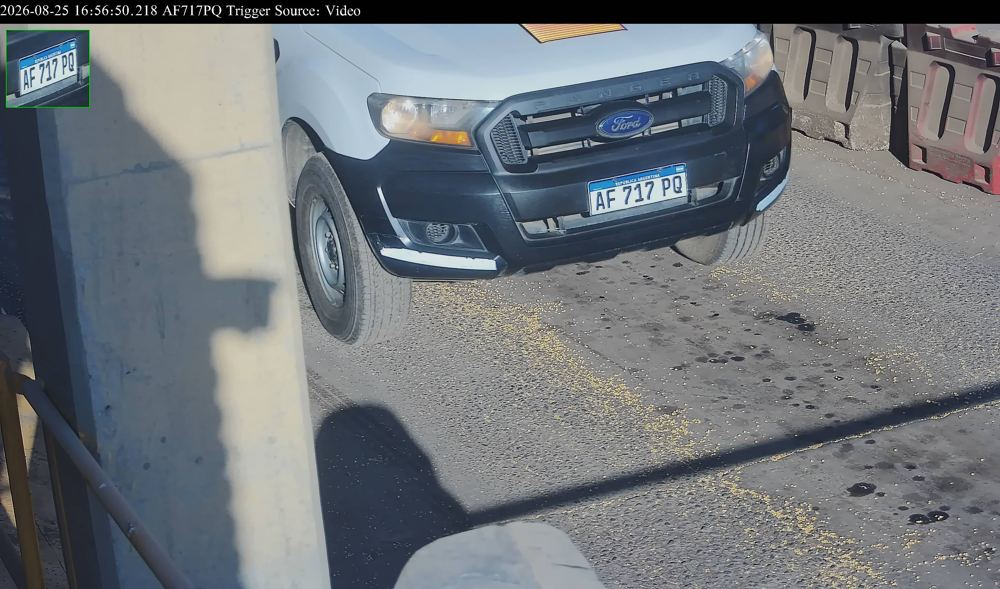
PICKUP
AF717PQ
Secuencia de visitas · 6 visitas
| Fecha | Hora | Planta | Recorrido |
|---|---|---|---|
| agosto 2026 · 5 visitas | |||
| 09/08/2026 | 20:41 | San Lorenzo | Portería SL 20:41 → Portería SL 23:05 |
| 21/08/2026 | 14:49 | San Lorenzo | Portería SL 14:49 → Bal. SC1 SL 14:49 → Bal. SC1 SL 15:47 → Portería SL 15:48 |
| 23/08/2026 | 21:00 | San Lorenzo | Portería SL 21:00 → Portería SL 00:48 |
| 24/08/2026 | 07:29 | San Lorenzo | Bal. SC1 SL 07:29 → Bal. SC1 SL 08:14 → Bal. SC1 SL 12:17 → Portería SL 12:18 |
| 25/08/2026 | 16:15 | San Lorenzo | Bal. SC1 SL 16:15 → Portería SL 17:00 |
| septiembre 2026 · 1 visitas | |||
| 30/09/2026 | 04:46 | San Lorenzo | Portería SL 04:46 → Bal. SC1 SL 04:47 → Portería SL 06:43 |
FICHA DE VEHÍCULO · FUERA DEL SISTEMA DE CAMIONES
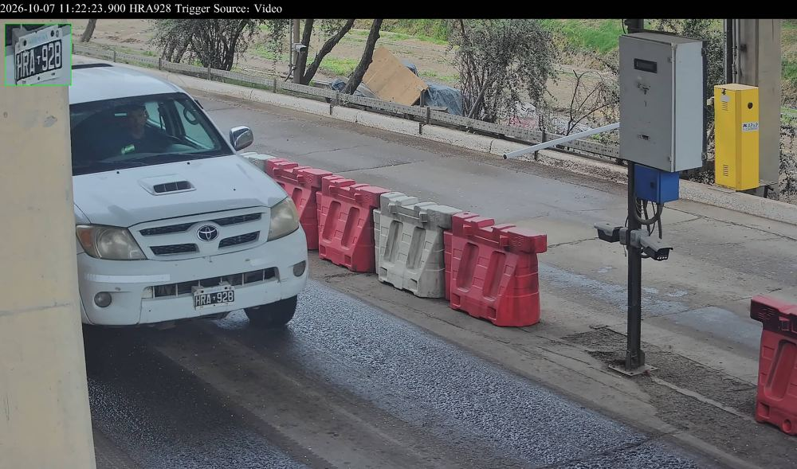
PICKUP
HRA928
Secuencia de visitas · 6 visitas
| Fecha | Hora | Planta | Recorrido |
|---|---|---|---|
| agosto 2026 · 1 visitas | |||
| 13/08/2026 | 07:24 | San Lorenzo | Portería SL 07:24 → Portería SL 07:52 |
| septiembre 2026 · 4 visitas | |||
| 03/09/2026 | 08:19 | San Lorenzo | Portería SL 08:19 → Portería SL 09:11 |
| 03/09/2026 | 10:44 | San Lorenzo | Portería SL 10:44 → Portería SL 10:52 |
| 07/09/2026 | 14:08 | San Lorenzo | Portería SL 14:08 → Portería SL 14:14 |
| 28/09/2026 | 09:00 | San Lorenzo | Portería SL 09:00 → TK400 SL 09:40 → Portería SL 09:42 |
| octubre 2026 · 1 visitas | |||
| 07/10/2026 | 09:10 | San Lorenzo | Portería SL 09:10 → TK400 SL 11:24 → Portería SL 11:26 |
FICHA DE VEHÍCULO · FUERA DEL SISTEMA DE CAMIONES
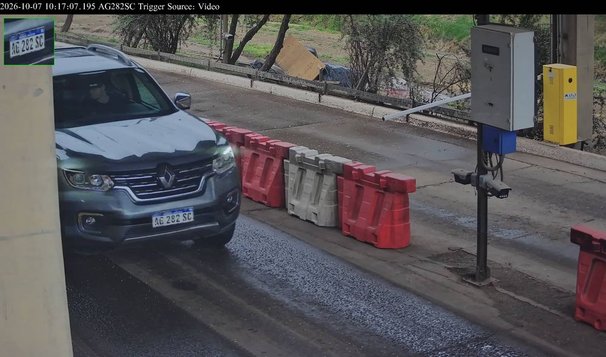
PICKUP
AG282SC
Secuencia de visitas · 6 visitas
| Fecha | Hora | Planta | Recorrido |
|---|---|---|---|
| agosto 2026 · 4 visitas | |||
| 18/08/2026 | 10:17 | San Lorenzo | Portería SL 10:17 → Portería SL 10:39 |
| 19/08/2026 | 11:42 | San Lorenzo | Portería SL 11:42 → Portería SL 12:01 |
| 25/08/2026 | 12:02 | San Lorenzo | Portería SL 12:02 · una sola toma |
| 28/08/2026 | 11:00 | San Lorenzo | Portería SL 11:00 → Portería SL 11:19 |
| septiembre 2026 · 1 visitas | |||
| 21/09/2026 | 09:36 | San Lorenzo | Portería SL 09:36 → Portería SL 10:03 |
| octubre 2026 · 1 visitas | |||
| 07/10/2026 | 10:02 | San Lorenzo | Portería SL 10:02 → Portería SL 10:21 |
FICHA DE VEHÍCULO · FUERA DEL SISTEMA DE CAMIONES
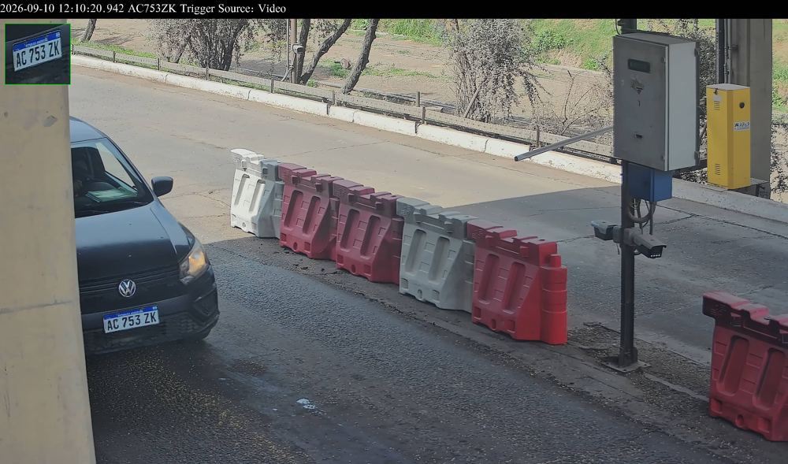
PICKUP
AC753ZK
Secuencia de visitas · 6 visitas
| Fecha | Hora | Planta | Recorrido |
|---|---|---|---|
| agosto 2026 · 5 visitas | |||
| 04/08/2026 | 10:59 | San Lorenzo | Portería SL 10:59 → Portería SL 12:59 |
| 05/08/2026 | 11:48 | San Lorenzo | Portería SL 11:48 → Portería SL 16:00 |
| 19/08/2026 | 11:14 | San Lorenzo | Portería SL 11:14 → Portería SL 15:46 |
| 20/08/2026 | 08:57 | San Lorenzo | Portería SL 08:57 → TK400 SL 09:13 → Portería SL 15:49 |
| 26/08/2026 | 08:22 | San Lorenzo | Portería SL 08:22 · una sola toma |
| septiembre 2026 · 1 visitas | |||
| 10/09/2026 | 11:16 | San Lorenzo | Portería SL 11:16 → Portería SL 12:14 |
FICHA DE VEHÍCULO · FUERA DEL SISTEMA DE CAMIONES
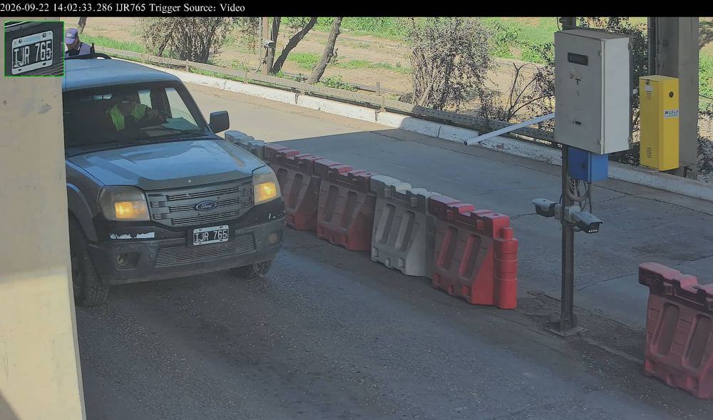
PICKUP
IJR765
Secuencia de visitas · 6 visitas
| Fecha | Hora | Planta | Recorrido |
|---|---|---|---|
| septiembre 2026 · 6 visitas | |||
| 21/09/2026 | 07:38 | San Lorenzo | Portería SL 07:38 → Portería SL 08:13 |
| 21/09/2026 | 13:11 | San Lorenzo | Portería SL 13:11 → Portería SL 13:55 |
| 21/09/2026 | 15:26 | San Lorenzo | Portería SL 15:26 → Portería SL 15:55 |
| 22/09/2026 | 08:29 | San Lorenzo | Portería SL 08:29 → Portería SL 08:40 |
| 22/09/2026 | 11:35 | San Lorenzo | Portería SL 11:35 → Portería SL 12:16 |
| 22/09/2026 | 13:55 | San Lorenzo | Portería SL 13:55 → Portería SL 14:06 |
FICHA DE VEHÍCULO · FUERA DEL SISTEMA DE CAMIONES
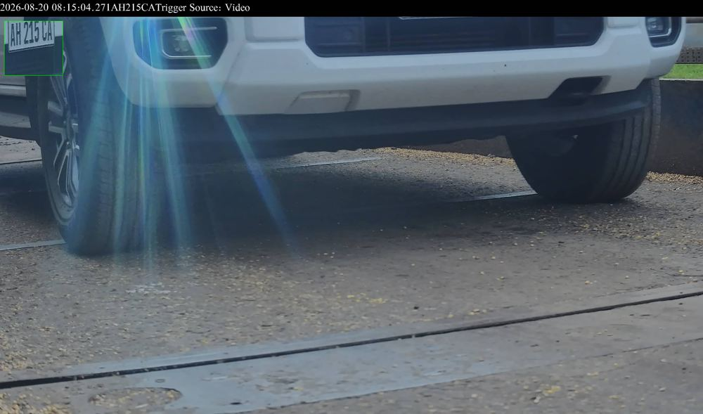
PICKUP
AH215CA
Secuencia de visitas · 5 visitas
| Fecha | Hora | Planta | Recorrido |
|---|---|---|---|
| agosto 2026 · 4 visitas | |||
| 03/08/2026 | 08:03 | San Lorenzo | Portería SL 08:03 → Portería SL 08:29 |
| 04/08/2026 | 09:01 | San Lorenzo | Portería SL 09:01 → Portería SL 09:51 |
| 05/08/2026 | 09:55 | San Lorenzo | Portería SL 09:55 → Portería SL 10:20 |
| 20/08/2026 | 08:03 | San Lorenzo | Portería SL 08:03 → Bal. SC1 SL 08:19 |
| octubre 2026 · 1 visitas | |||
| 02/10/2026 | 07:10 | San Lorenzo | Portería SL 07:10 → Bal. SC1 SL 07:38 → Portería SL 07:54 |
FICHA DE VEHÍCULO · FUERA DEL SISTEMA DE CAMIONES
02
Camiones chicos
11 vehículos · 214 viajes del 01/08 al 14/10/2026 · ninguno figura en el sistema de camiones
Número = viajes. Subrayadas en rojo: entran a zona operativa (0), van primero. Tocá una patente para ir a su ficha. Las tachadas fueron eliminadas.
FICHA DE VEHÍCULO · FUERA DEL SISTEMA DE CAMIONES
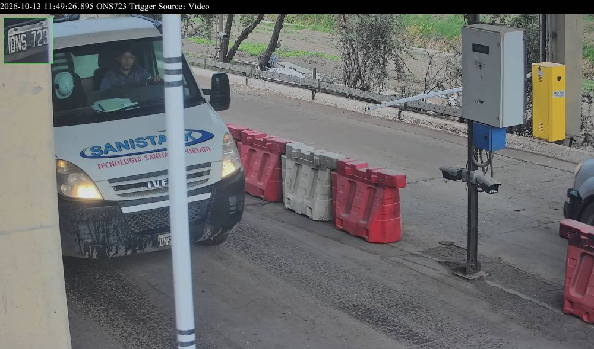
CAMIONES CHICOS
ONS723
Secuencia de visitas · 43 visitas
| Fecha | Hora | Planta | Recorrido |
|---|---|---|---|
| agosto 2026 · 12 visitas | |||
| 03/08/2026 | 08:12 | Ricardone | Bal.3 ing 08:12 · una sola toma |
| 03/08/2026 | 11:20 | San Lorenzo | Portería SL 11:20 → Portería SL 11:52 |
| 07/08/2026 | 08:28 | San Lorenzo | Portería SL 08:28 → Bal. SC1 SL 10:06 → Portería SL 10:30 |
| 10/08/2026 | 10:13 | Ricardone | Bal.3 ing 10:13 → Bal.3 egr 11:56 |
| 11/08/2026 | 10:06 | San Lorenzo | Portería SL 10:06 → Portería SL 11:28 |
| 13/08/2026 | 11:09 | San Lorenzo | Portería SL 11:09 → Bal. SC1 SL 11:58 → Portería SL 12:01 |
| 18/08/2026 | 10:57 | Ricardone | Bal.3 ing 10:57 → Bal.3 egr 12:34 |
| 20/08/2026 | 10:40 | San Lorenzo | Portería SL 10:40 → Bal. SC1 SL 12:37 → Portería SL 12:38 |
| 24/08/2026 | 09:33 | Ricardone | Bal.1 ing 09:33 → Bal.3 egr 11:34 |
| 25/08/2026 | 11:43 | San Lorenzo | Portería SL 11:43 · una sola toma |
| 27/08/2026 | 10:52 | San Lorenzo | TK400 SL 10:52 → Bal. SC1 SL 11:47 |
| 31/08/2026 | 10:58 | Ricardone | Bal.3 ing 10:58 → Bal.3 egr 12:42 |
| septiembre 2026 · 21 visitas | |||
| 03/09/2026 | 11:09 | San Lorenzo | Portería SL 11:09 → Portería SL 12:06 |
| 04/09/2026 | 12:06 | Ricardone | Bal.3 ing 12:06 → Bal.2 egr 12:25 |
| 07/09/2026 | 08:32 | San Lorenzo | Portería SL 08:32 → Portería SL 08:59 |
| 07/09/2026 | 10:28 | Ricardone | Bal.3 ing 10:28 → Bal.3 egr 12:06 |
| 08/09/2026 | 08:26 | San Lorenzo | Portería SL 08:26 → Portería SL 08:57 |
| 08/09/2026 | 10:06 | San Lorenzo | Portería SL 10:06 → Portería SL 12:20 |
| 09/09/2026 | 08:45 | San Lorenzo | Portería SL 08:45 → TK400 SL 08:48 → Portería SL 09:18 |
| 10/09/2026 | 11:22 | San Lorenzo | Portería SL 11:22 → Portería SL 12:51 |
| 14/09/2026 | 09:42 | San Lorenzo | Portería SL 09:42 → Portería SL 09:53 |
| 14/09/2026 | 10:06 | Ricardone | Bal.3 ing 10:06 → Bal.3 egr 11:09 |
| 14/09/2026 | 11:52 | San Lorenzo | Portería SL 11:52 → Portería SL 12:49 |
| 15/09/2026 | 10:33 | San Lorenzo | Portería SL 10:33 → TK400 SL 12:11 → Portería SL 12:13 |
| 16/09/2026 | 11:06 | Ricardone | Bal.3 ing 11:06 → Bal.3 egr 11:44 |
| 17/09/2026 | 08:21 | San Lorenzo | Portería SL 08:21 → Portería SL 10:21 |
| 21/09/2026 | 10:01 | Ricardone | Bal.3 ing 10:01 → Bal.3 egr 11:45 |
FICHA DE VEHÍCULO · FUERA DEL SISTEMA DE CAMIONES
ONS723 · secuencia de visitas (continúa)
| Fecha | Hora | Planta | Recorrido |
|---|---|---|---|
| 22/09/2026 | 10:54 | San Lorenzo | Portería SL 10:54 → Portería SL 13:43 |
| 23/09/2026 | 11:49 | Ricardone | Bal.3 ing 11:49 → Bal.3 egr 12:05 |
| 24/09/2026 | 08:15 | San Lorenzo | Portería SL 08:15 → TK400 SL 10:26 → Portería SL 12:13 |
| 28/09/2026 | 08:37 | Ricardone | Bal.3 ing 08:37 → Bal.3 egr 10:38 |
| 28/09/2026 | 12:13 | San Lorenzo | Portería SL 12:13 → Bal. SC1 SL 12:36 → Portería SL 12:38 |
| 29/09/2026 | 10:13 | San Lorenzo | Portería SL 10:13 → Portería SL 12:17 |
| octubre 2026 · 10 visitas | |||
| 01/10/2026 | 08:20 | San Lorenzo | Portería SL 08:20 → Bal. SC1 SL 08:52 → Bal. SC1 SL 12:43 → Portería SL 12:45 |
| 02/10/2026 | 07:48 | Ricardone | Bal.3 ing 07:48 → Bal.3 egr 09:53 |
| 05/10/2026 | 07:34 | Ricardone | Bal.3 ing 07:34 → Bal.3 egr 09:19 |
| 05/10/2026 | 10:41 | Ricardone | Bal.3 ing 10:41 → Bal.3 egr 11:15 |
| 06/10/2026 | 10:09 | San Lorenzo | Portería SL 10:09 → Bal. SC1 SL 12:30 → Portería SL 12:31 |
| 07/10/2026 | 08:23 | Ricardone | Bal.3 ing 08:23 → Bal.3 egr 09:31 |
| 08/10/2026 | 08:05 | San Lorenzo | Portería SL 08:05 → Bal. SC1 SL 12:05 → Portería SL 12:07 |
| 09/10/2026 | 08:23 | Ricardone | Bal.3 ing 08:23 · una sola toma |
| 13/10/2026 | 08:03 | Ricardone | Bal.3 ing 08:03 → Bal.3 egr 09:33 |
| 13/10/2026 | 10:09 | San Lorenzo | Portería SL 10:09 → Bal. SC1 SL 11:51 → Portería SL 11:52 |
FICHA DE VEHÍCULO · FUERA DEL SISTEMA DE CAMIONES
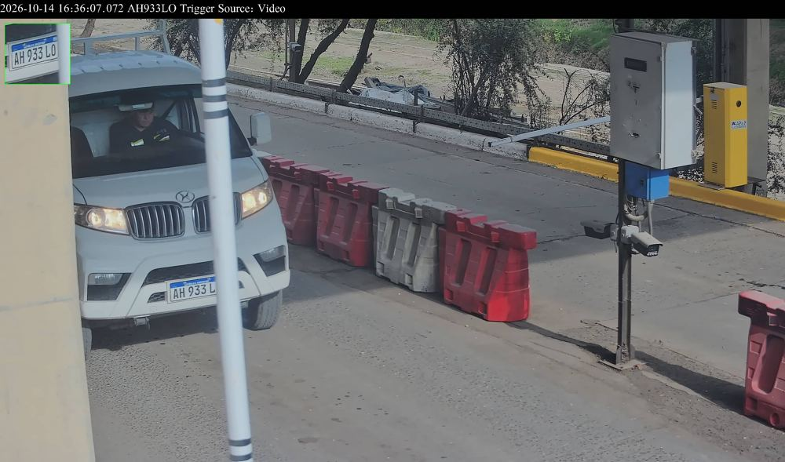
CAMIONES CHICOS
AH933LO
Secuencia de visitas · 41 visitas
| Fecha | Hora | Planta | Recorrido |
|---|---|---|---|
| agosto 2026 · 9 visitas | |||
| 06/08/2026 | 08:02 | Ricardone | Bal.3 ing 08:02 → Bal.3 egr 08:25 |
| 14/08/2026 | 09:44 | Ricardone | Bal.1 ing 09:44 → Bal.2 egr 09:52 |
| 20/08/2026 | 10:43 | San Lorenzo | Portería SL 10:43 → Portería SL 10:55 |
| 21/08/2026 | 10:47 | Ricardone | Bal.3 ing 10:47 → Bal.3 egr 11:06 |
| 24/08/2026 | 11:31 | Ricardone | Bal.1 ing 11:31 → Bal.3 egr 12:13 |
| 26/08/2026 | 09:04 | Ricardone | Bal.3 ing 09:04 → Bal.3 egr 09:16 |
| 26/08/2026 | 12:11 | San Lorenzo | Portería SL 12:11 · una sola toma |
| 28/08/2026 | 11:24 | San Lorenzo | Portería SL 11:24 · una sola toma |
| 28/08/2026 | 12:22 | Ricardone | Bal.3 ing 12:22 → Bal.3 egr 12:49 |
| septiembre 2026 · 20 visitas | |||
| 07/09/2026 | 10:06 | Ricardone | Bal.3 ing 10:06 → Bal.3 egr 10:20 |
| 07/09/2026 | 11:37 | San Lorenzo | Portería SL 11:37 · una sola toma |
| 09/09/2026 | 09:12 | Ricardone | Bal.3 ing 09:12 → Bal.3 egr 09:30 |
| 10/09/2026 | 10:31 | Ricardone | Bal.3 ing 10:31 → Bal.3 egr 10:39 |
| 11/09/2026 | 10:00 | San Lorenzo | Portería SL 10:00 · una sola toma |
| 11/09/2026 | 10:38 | Ricardone | Bal.1 ing 10:38 → Bal.2 egr 10:56 |
| 14/09/2026 | 14:47 | Ricardone | Bal.3 ing 14:47 → Bal.3 egr 15:12 |
| 16/09/2026 | 10:48 | Ricardone | Bal.3 ing 10:48 → Bal.3 egr 11:00 |
| 16/09/2026 | 12:32 | San Lorenzo | Portería SL 12:32 · una sola toma |
| 17/09/2026 | 08:26 | San Lorenzo | Portería SL 08:26 · una sola toma |
| 18/09/2026 | 10:19 | San Lorenzo | Portería SL 10:19 → Portería SL 14:14 |
| 21/09/2026 | 10:51 | San Lorenzo | Portería SL 10:51 → Portería SL 11:25 |
| 22/09/2026 | 08:25 | San Lorenzo | Portería SL 08:25 → Portería SL 12:19 |
| 22/09/2026 | 10:04 | Ricardone | Bal.3 ing 10:04 → Bal.2 egr 10:34 |
| 22/09/2026 | 15:44 | San Lorenzo | Portería SL 15:44 · una sola toma |
| 23/09/2026 | 11:17 | San Lorenzo | Portería SL 11:17 · una sola toma |
| 25/09/2026 | 12:31 | San Lorenzo | Portería SL 12:31 · una sola toma |
| 28/09/2026 | 12:35 | San Lorenzo | Portería SL 12:35 · una sola toma |
FICHA DE VEHÍCULO · FUERA DEL SISTEMA DE CAMIONES
AH933LO · secuencia de visitas (continúa)
| Fecha | Hora | Planta | Recorrido |
|---|---|---|---|
| 29/09/2026 | 12:40 | San Lorenzo | Portería SL 12:40 → Portería SL 15:43 |
| 30/09/2026 | 11:47 | San Lorenzo | Portería SL 11:47 · una sola toma |
| octubre 2026 · 12 visitas | |||
| 01/10/2026 | 10:56 | San Lorenzo | Portería SL 10:56 → Portería SL 11:04 |
| 01/10/2026 | 11:18 | Ricardone | Bal.3 ing 11:18 → Bal.3 egr 11:25 |
| 02/10/2026 | 12:02 | San Lorenzo | Portería SL 12:02 → Portería SL 12:47 |
| 05/10/2026 | 09:56 | San Lorenzo | Portería SL 09:56 · una sola toma |
| 06/10/2026 | 11:43 | San Lorenzo | Portería SL 11:43 → Portería SL 11:49 |
| 07/10/2026 | 14:52 | San Lorenzo | Portería SL 14:52 → Portería SL 15:19 |
| 08/10/2026 | 09:10 | San Lorenzo | Portería SL 09:10 · una sola toma |
| 09/10/2026 | 11:29 | San Lorenzo | Portería SL 11:29 → Portería SL 12:19 |
| 13/10/2026 | 07:51 | San Lorenzo | Portería SL 07:51 → Portería SL 08:18 |
| 13/10/2026 | 09:52 | Ricardone | Bal.3 ing 09:52 → Bal.3 egr 10:03 |
| 14/10/2026 | 14:44 | San Lorenzo | Portería SL 14:44 → Portería SL 16:11 |
| 14/10/2026 | 16:40 | San Lorenzo | Portería SL 16:40 · una sola toma |
FICHA DE VEHÍCULO · FUERA DEL SISTEMA DE CAMIONES
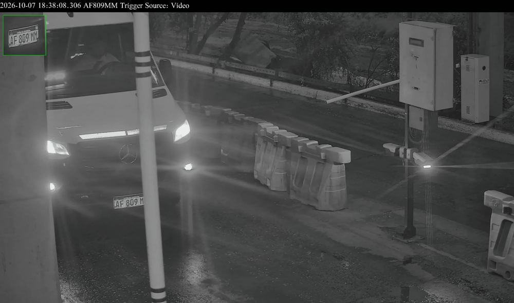
CAMIONES CHICOS
AF809MM
Secuencia de visitas · 24 visitas
| Fecha | Hora | Planta | Recorrido |
|---|---|---|---|
| agosto 2026 · 19 visitas | |||
| 03/08/2026 | 06:50 | San Lorenzo | Portería SL 06:50 · una sola toma |
| 06/08/2026 | 06:53 | San Lorenzo | Portería SL 06:53 → Portería SL 07:35 |
| 07/08/2026 | 06:46 | San Lorenzo | Portería SL 06:46 → Portería SL 07:27 |
| 09/08/2026 | 06:41 | San Lorenzo | Portería SL 06:41 · una sola toma |
| 10/08/2026 | 07:28 | San Lorenzo | Portería SL 07:28 · una sola toma |
| 11/08/2026 | 06:49 | San Lorenzo | Portería SL 06:49 → Portería SL 07:36 |
| 12/08/2026 | 06:52 | San Lorenzo | Portería SL 06:52 → Portería SL 07:28 |
| 13/08/2026 | 06:50 | San Lorenzo | Portería SL 06:50 → Portería SL 07:27 |
| 14/08/2026 | 06:52 | San Lorenzo | Portería SL 06:52 → Portería SL 07:30 |
| 18/08/2026 | 07:29 | San Lorenzo | Portería SL 07:29 · una sola toma |
| 19/08/2026 | 06:50 | San Lorenzo | Portería SL 06:50 → Portería SL 07:29 |
| 20/08/2026 | 06:54 | San Lorenzo | Portería SL 06:54 → Portería SL 07:28 |
| 21/08/2026 | 06:54 | San Lorenzo | Portería SL 06:54 → Portería SL 07:29 |
| 24/08/2026 | 06:55 | San Lorenzo | Portería SL 06:55 → Portería SL 07:27 |
| 25/08/2026 | 06:51 | San Lorenzo | Portería SL 06:51 → Portería SL 07:27 |
| 26/08/2026 | 06:47 | San Lorenzo | Portería SL 06:47 → Portería SL 07:26 |
| 27/08/2026 | 07:28 | San Lorenzo | Portería SL 07:28 · una sola toma |
| 28/08/2026 | 06:47 | San Lorenzo | Portería SL 06:47 → Portería SL 07:30 |
| 31/08/2026 | 06:49 | San Lorenzo | Portería SL 06:49 · una sola toma |
| septiembre 2026 · 2 visitas | |||
| 03/09/2026 | 06:48 | San Lorenzo | Portería SL 06:48 · una sola toma |
| 04/09/2026 | 06:43 | San Lorenzo | Portería SL 06:43 · una sola toma |
| octubre 2026 · 3 visitas | |||
| 03/10/2026 | 06:42 | San Lorenzo | Portería SL 06:42 · una sola toma |
| 07/10/2026 | 18:42 | San Lorenzo | Portería SL 18:42 · una sola toma |
| 12/10/2026 | 06:35 | San Lorenzo | Portería SL 06:35 · una sola toma |
FICHA DE VEHÍCULO · FUERA DEL SISTEMA DE CAMIONES
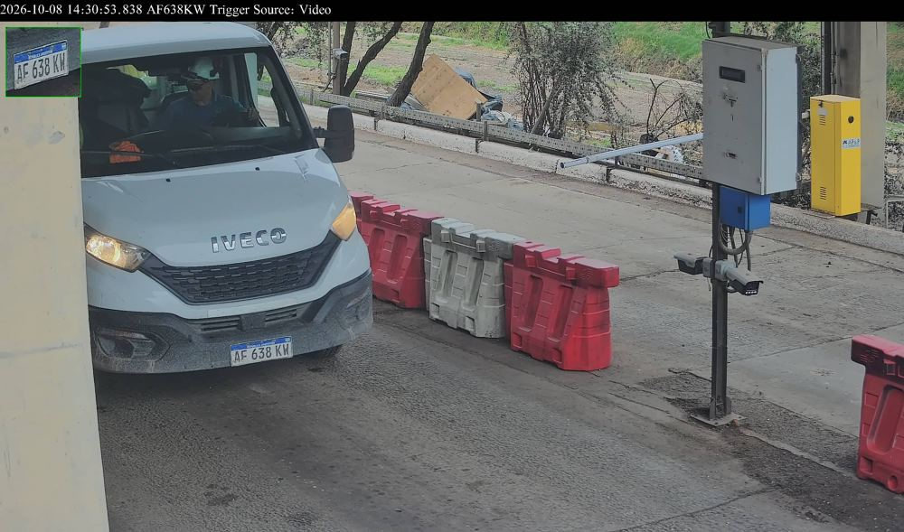
CAMIONES CHICOS
AF638KW
Secuencia de visitas · 18 visitas
| Fecha | Hora | Planta | Recorrido |
|---|---|---|---|
| agosto 2026 · 7 visitas | |||
| 04/08/2026 | 14:07 | Ricardone | Bal.2 egr 14:07 · una sola toma |
| 04/08/2026 | 14:32 | San Lorenzo | Portería SL 14:32 → Portería SL 16:12 |
| 07/08/2026 | 13:50 | Ricardone | Bal.3 ing 13:50 → Bal.3 egr 14:02 |
| 13/08/2026 | 07:53 | Ricardone | Bal.3 ing 07:53 → Bal.3 egr 08:54 |
| 14/08/2026 | 12:05 | Ricardone | Bal.1 ing 12:05 → Bal.2 egr 12:14 |
| 25/08/2026 | 11:20 | San Lorenzo | Portería SL 11:20 · una sola toma |
| 25/08/2026 | 15:16 | Ricardone | Bal.2 egr 15:16 · una sola toma |
| septiembre 2026 · 5 visitas | |||
| 10/09/2026 | 09:37 | Ricardone | Bal.3 ing 09:37 → Bal.3 egr 10:51 |
| 25/09/2026 | 08:11 | San Lorenzo | TK400 SL 08:11 → Portería SL 08:34 |
| 25/09/2026 | 13:44 | Ricardone | Bal.3 ing 13:44 · una sola toma |
| 28/09/2026 | 11:33 | San Lorenzo | Portería SL 11:33 · una sola toma |
| 28/09/2026 | 13:06 | Ricardone | Bal.3 ing 13:06 → Bal.3 egr 13:39 |
| octubre 2026 · 6 visitas | |||
| 05/10/2026 | 13:44 | Ricardone | Bal.3 ing 13:44 · una sola toma |
| 05/10/2026 | 15:02 | San Lorenzo | Portería SL 15:02 → TK400 SL 15:17 → Portería SL 15:55 |
| 06/10/2026 | 10:48 | San Lorenzo | Portería SL 10:48 · una sola toma |
| 06/10/2026 | 11:16 | Ricardone | Bal.3 ing 11:16 → Bal.3 egr 11:42 |
| 08/10/2026 | 08:37 | Ricardone | Bal.3 ing 08:37 · una sola toma |
| 08/10/2026 | 14:08 | San Lorenzo | Portería SL 14:08 → Portería SL 14:34 |
FICHA DE VEHÍCULO · FUERA DEL SISTEMA DE CAMIONES
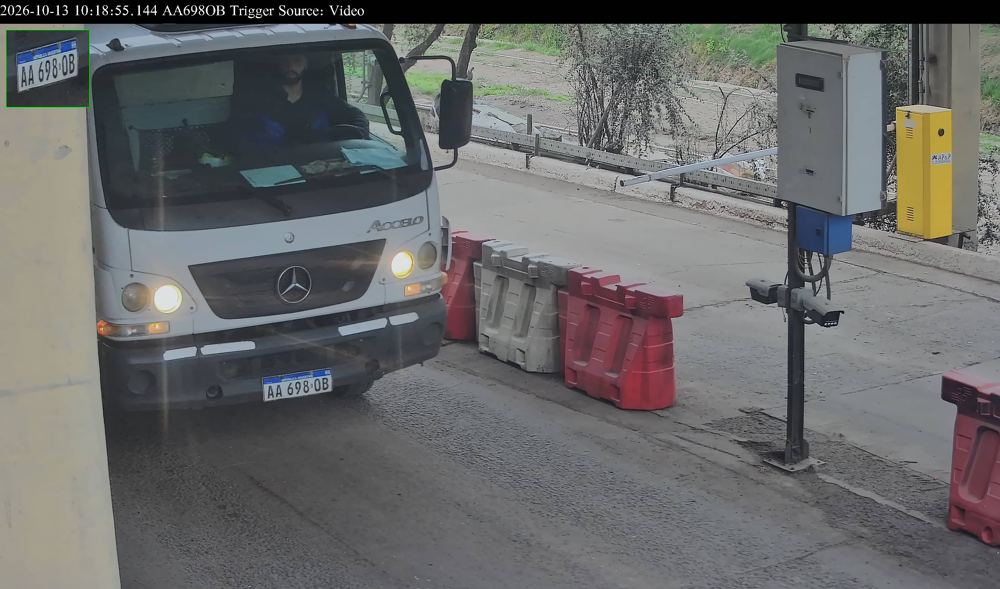
CAMIONES CHICOS
AA698OB
Secuencia de visitas · 15 visitas
| Fecha | Hora | Planta | Recorrido |
|---|---|---|---|
| agosto 2026 · 5 visitas | |||
| 03/08/2026 | 10:37 | San Lorenzo | Portería SL 10:37 → Portería SL 10:47 |
| 10/08/2026 | 10:06 | San Lorenzo | Portería SL 10:06 → TK400 SL 10:07 → Portería SL 10:20 |
| 18/08/2026 | 10:03 | San Lorenzo | TK400 SL 10:03 → Portería SL 10:04 |
| 24/08/2026 | 10:21 | San Lorenzo | TK400 SL 10:21 → Portería SL 10:22 |
| 31/08/2026 | 10:20 | San Lorenzo | TK400 SL 10:20 → Portería SL 10:22 |
| septiembre 2026 · 6 visitas | |||
| 14/09/2026 | 10:26 | San Lorenzo | Portería SL 10:26 → TK400 SL 10:35 → Portería SL 10:37 |
| 21/09/2026 | 09:54 | Ricardone | Ingreso Ric 09:54 → Egreso Ric 10:06 |
| 21/09/2026 | 10:43 | San Lorenzo | TK400 SL 10:43 → Portería SL 10:49 |
| 21/09/2026 | 11:28 | San Lorenzo | Portería SL 11:28 · una sola toma |
| 28/09/2026 | 09:58 | Ricardone | Egreso Ric 09:58 · una sola toma |
| 28/09/2026 | 10:23 | San Lorenzo | Portería SL 10:23 → TK400 SL 10:34 → Portería SL 10:36 |
| octubre 2026 · 4 visitas | |||
| 05/10/2026 | 09:38 | Ricardone | Egreso Ric 09:38 · una sola toma |
| 05/10/2026 | 10:07 | San Lorenzo | TK400 SL 10:07 → Portería SL 10:09 |
| 13/10/2026 | 09:40 | Ricardone | Ingreso Ric 09:40 → Egreso Ric 09:50 |
| 13/10/2026 | 10:21 | San Lorenzo | TK400 SL 10:21 → Portería SL 10:22 |
FICHA DE VEHÍCULO · FUERA DEL SISTEMA DE CAMIONES
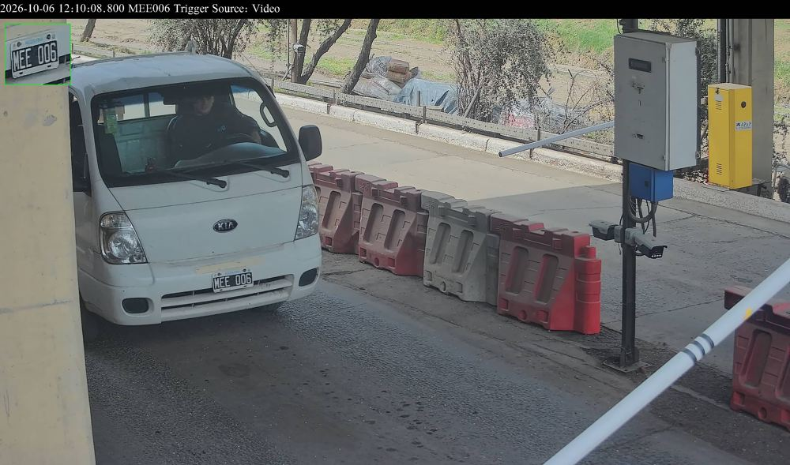
CAMIONES CHICOS
MEE006
Secuencia de visitas · 15 visitas
| Fecha | Hora | Planta | Recorrido |
|---|---|---|---|
| agosto 2026 · 6 visitas | |||
| 04/08/2026 | 11:23 | San Lorenzo | Portería SL 11:23 → Portería SL 11:34 |
| 04/08/2026 | 11:50 | Ricardone | Bal.3 ing 11:50 → Bal.3 egr 12:18 |
| 06/08/2026 | 11:19 | San Lorenzo | Portería SL 11:19 → Portería SL 11:55 |
| 11/08/2026 | 11:58 | San Lorenzo | Portería SL 11:58 → Portería SL 12:20 |
| 25/08/2026 | 11:56 | San Lorenzo | Portería SL 11:56 · una sola toma |
| 25/08/2026 | 12:15 | Ricardone | Bal.3 ing 12:15 → Bal.3 egr 12:25 |
| septiembre 2026 · 6 visitas | |||
| 11/09/2026 | 11:33 | San Lorenzo | Portería SL 11:33 → Portería SL 11:50 |
| 11/09/2026 | 12:02 | Ricardone | Bal.3 ing 12:02 → Bal.3 egr 12:28 |
| 17/09/2026 | 11:05 | Ricardone | Bal.3 ing 11:05 → Bal.3 egr 11:06 |
| 17/09/2026 | 11:41 | San Lorenzo | Portería SL 11:41 → Portería SL 12:27 |
| 24/09/2026 | 11:34 | San Lorenzo | Portería SL 11:34 → Portería SL 11:46 |
| 24/09/2026 | 11:58 | Ricardone | Bal.3 ing 11:58 → Bal.3 egr 12:08 |
| octubre 2026 · 3 visitas | |||
| 01/10/2026 | 11:41 | Ricardone | Bal.3 ing 11:41 → Bal.3 egr 11:51 |
| 01/10/2026 | 12:01 | San Lorenzo | Portería SL 12:01 → Portería SL 12:21 |
| 06/10/2026 | 11:49 | San Lorenzo | Portería SL 11:49 → Portería SL 12:14 |
FICHA DE VEHÍCULO · FUERA DEL SISTEMA DE CAMIONES
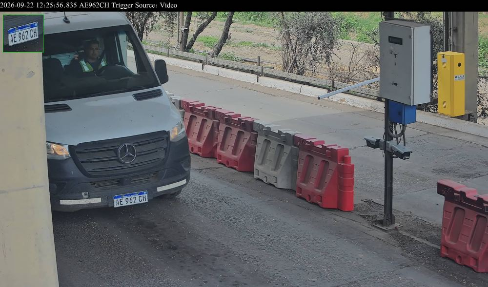
CAMIONES CHICOS
AE962CH
Secuencia de visitas · 14 visitas
| Fecha | Hora | Planta | Recorrido |
|---|---|---|---|
| agosto 2026 · 3 visitas | |||
| 20/08/2026 | 11:18 | San Lorenzo | Portería SL 11:18 → Portería SL 12:23 |
| 28/08/2026 | 08:10 | Ricardone | Bal.1 ing 08:10 → Bal.2 egr 08:26 |
| 28/08/2026 | 11:05 | San Lorenzo | Portería SL 11:05 → Portería SL 11:54 |
| septiembre 2026 · 11 visitas | |||
| 03/09/2026 | 08:17 | Ricardone | Bal.3 ing 08:17 → Bal.3 egr 09:32 → Bal.3 ing 09:32 |
| 03/09/2026 | 12:26 | San Lorenzo | Portería SL 12:26 → Portería SL 13:16 |
| 08/09/2026 | 13:29 | Ricardone | Bal.3 ing 13:29 → Bal.3 egr 14:06 |
| 08/09/2026 | 14:19 | San Lorenzo | Portería SL 14:19 → TK400 SL 14:51 → Portería SL 15:14 |
| 14/09/2026 | 08:02 | Ricardone | Bal.3 ing 08:02 → Bal.3 egr 08:37 |
| 14/09/2026 | 13:50 | San Lorenzo | Portería SL 13:50 · una sola toma |
| 17/09/2026 | 09:38 | Ricardone | Bal.3 ing 09:38 → Bal.3 egr 11:13 |
| 17/09/2026 | 11:47 | Ricardone | Bal.3 ing 11:47 → Bal.3 egr 11:58 |
| 17/09/2026 | 13:46 | San Lorenzo | Portería SL 13:46 · una sola toma |
| 22/09/2026 | 07:52 | Ricardone | Bal.3 ing 07:52 → Bal.3 egr 08:45 |
| 22/09/2026 | 12:29 | San Lorenzo | Portería SL 12:29 · una sola toma |
FICHA DE VEHÍCULO · FUERA DEL SISTEMA DE CAMIONES
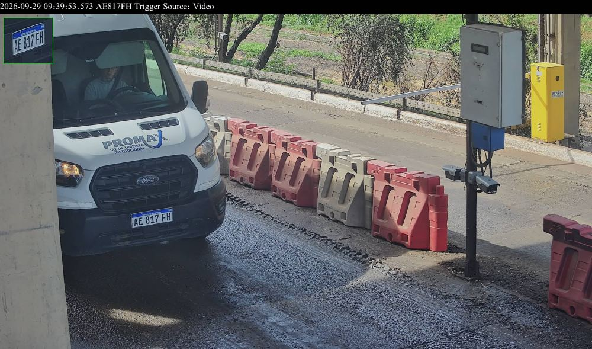
CAMIONES CHICOS
AE817FH
Secuencia de visitas · 13 visitas
| Fecha | Hora | Planta | Recorrido |
|---|---|---|---|
| agosto 2026 · 6 visitas | |||
| 06/08/2026 | 09:37 | Ricardone | Bal.3 ing 09:37 → Bal.3 egr 10:09 |
| 13/08/2026 | 09:16 | San Lorenzo | Portería SL 09:16 → Portería SL 10:04 |
| 19/08/2026 | 08:21 | San Lorenzo | Portería SL 08:21 → Portería SL 08:41 |
| 19/08/2026 | 09:05 | Ricardone | Bal.3 ing 09:05 → Bal.3 egr 09:36 |
| 26/08/2026 | 08:21 | San Lorenzo | Portería SL 08:21 → TK400 SL 08:23 → Portería SL 08:46 |
| 26/08/2026 | 09:02 | Ricardone | Bal.3 ing 09:02 → Bal.3 egr 09:12 |
| septiembre 2026 · 6 visitas | |||
| 04/09/2026 | 09:10 | Ricardone | Bal.3 ing 09:10 → Bal.3 egr 09:33 |
| 09/09/2026 | 09:58 | Ricardone | Bal.3 ing 09:58 → Bal.3 egr 10:09 |
| 09/09/2026 | 10:30 | San Lorenzo | Portería SL 10:30 → Portería SL 11:01 |
| 09/09/2026 | 11:05 | San Lorenzo | TK400 SL 11:05 · una sola toma |
| 29/09/2026 | 08:54 | Ricardone | Bal.3 ing 08:54 → Bal.3 egr 09:09 |
| 29/09/2026 | 09:34 | San Lorenzo | Portería SL 09:34 → Portería SL 09:43 |
| octubre 2026 · 1 visitas | |||
| 13/10/2026 | 08:34 | Ricardone | Bal.3 ing 08:34 → Bal.3 egr 08:56 |
FICHA DE VEHÍCULO · FUERA DEL SISTEMA DE CAMIONES
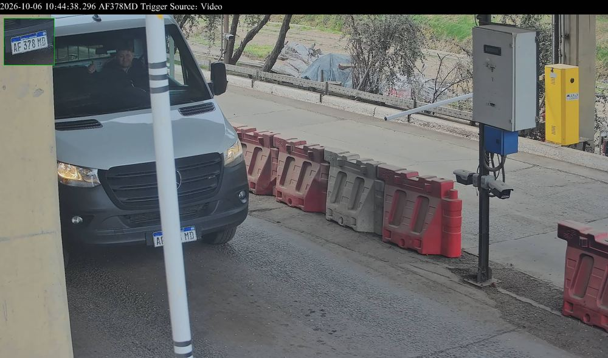
CAMIONES CHICOS
AF378MD
Secuencia de visitas · 11 visitas
| Fecha | Hora | Planta | Recorrido |
|---|---|---|---|
| agosto 2026 · 3 visitas | |||
| 04/08/2026 | 09:30 | Ricardone | Bal.1 ing 09:30 → Bal.2 egr 09:58 |
| 20/08/2026 | 11:11 | Ricardone | Bal.1 ing 11:11 → Bal.2 egr 11:24 |
| 28/08/2026 | 11:02 | Ricardone | Bal.3 ing 11:02 → Bal.3 egr 11:21 |
| septiembre 2026 · 6 visitas | |||
| 11/09/2026 | 09:43 | Ricardone | Bal.3 ing 09:43 → Bal.3 egr 10:16 |
| 11/09/2026 | 12:06 | Ricardone | Bal.3 ing 12:06 → Bal.3 egr 12:22 |
| 15/09/2026 | 09:50 | Ricardone | Bal.3 ing 09:50 → Bal.3 egr 10:24 |
| 18/09/2026 | 09:31 | Ricardone | Bal.3 ing 09:31 → Bal.3 egr 09:42 |
| 24/09/2026 | 09:25 | San Lorenzo | Portería SL 09:25 · una sola toma |
| 29/09/2026 | 09:42 | Ricardone | Bal.3 ing 09:42 → Bal.3 egr 10:07 |
| octubre 2026 · 2 visitas | |||
| 01/10/2026 | 10:34 | Ricardone | Bal.3 ing 10:34 → Bal.3 egr 10:46 |
| 06/10/2026 | 10:48 | San Lorenzo | Portería SL 10:48 · una sola toma |
FICHA DE VEHÍCULO · FUERA DEL SISTEMA DE CAMIONES
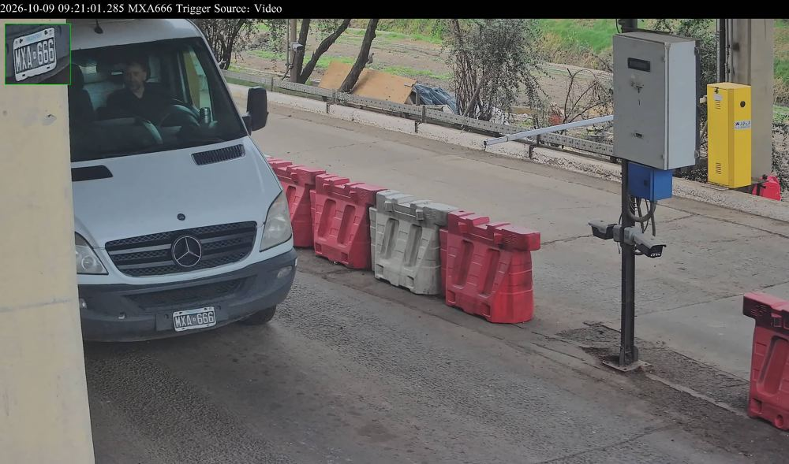
CAMIONES CHICOS
MXA666
Secuencia de visitas · 11 visitas
| Fecha | Hora | Planta | Recorrido |
|---|---|---|---|
| agosto 2026 · 5 visitas | |||
| 06/08/2026 | 11:08 | Ricardone | Bal.3 ing 11:08 → Bal.3 egr 11:50 |
| 14/08/2026 | 09:55 | Ricardone | Bal.1 ing 09:55 → Bal.2 egr 10:06 |
| 20/08/2026 | 14:36 | Ricardone | Bal.3 ing 14:36 → Bal.3 egr 14:48 |
| 27/08/2026 | 10:34 | Ricardone | Bal.3 ing 10:34 → Bal.3 egr 10:46 |
| 27/08/2026 | 10:54 | San Lorenzo | Portería SL 10:54 → Portería SL 11:24 |
| septiembre 2026 · 3 visitas | |||
| 10/09/2026 | 10:58 | San Lorenzo | Portería SL 10:58 → Portería SL 11:30 |
| 15/09/2026 | 11:04 | Ricardone | Bal.3 ing 11:04 → Bal.3 egr 11:04 |
| 22/09/2026 | 11:50 | Ricardone | Bal.2 egr 11:50 · una sola toma |
| octubre 2026 · 3 visitas | |||
| 02/10/2026 | 12:08 | Ricardone | Egreso Ric 12:08 → Bal.3 ing 12:16 |
| 02/10/2026 | 12:26 | Ricardone | Bal.3 egr 12:26 · una sola toma |
| 09/10/2026 | 08:46 | San Lorenzo | Portería SL 08:46 → TK400 SL 09:17 → Portería SL 09:25 |
FICHA DE VEHÍCULO · FUERA DEL SISTEMA DE CAMIONES
CAMIONES CHICOS
AH274MW
Secuencia de visitas · 9 visitas
| Fecha | Hora | Planta | Recorrido |
|---|---|---|---|
| agosto 2026 · 4 visitas | |||
| 10/08/2026 | 11:05 | Ricardone | Bal.3 ing 11:05 → Bal.3 egr 11:40 |
| 18/08/2026 | 10:52 | Ricardone | Bal.1 ing 10:52 → Bal.3 egr 11:19 |
| 24/08/2026 | 10:55 | Ricardone | Bal.1 ing 10:55 → Bal.3 egr 11:11 |
| 25/08/2026 | 11:48 | Ricardone | Bal.3 ing 11:48 → Bal.3 egr 12:02 |
| septiembre 2026 · 2 visitas | |||
| 17/09/2026 | 11:28 | Ricardone | Bal.3 ing 11:28 → Bal.3 egr 11:57 |
| 21/09/2026 | 10:40 | Ricardone | Bal.3 ing 10:40 → Bal.3 egr 11:21 |
| octubre 2026 · 3 visitas | |||
| 07/10/2026 | 10:35 | Ricardone | Bal.3 ing 10:35 → Bal.3 egr 10:54 |
| 13/10/2026 | 16:09 | San Lorenzo | Portería SL 16:09 · una sola toma |
| 14/10/2026 | 11:10 | San Lorenzo | Portería SL 11:10 → Portería SL 11:45 |
FICHA DE VEHÍCULO · FUERA DEL SISTEMA DE CAMIONES
03
Camiones
13 vehículos · 211 viajes del 01/08 al 14/10/2026 · ninguno figura en el sistema de camiones
Número = viajes. Subrayadas en rojo: entran a zona operativa (3), van primero. Tocá una patente para ir a su ficha. Las tachadas fueron eliminadas.
FICHA DE VEHÍCULO · FUERA DEL SISTEMA DE CAMIONES
CAMIONES
AD049SR
Entra a zona operativa: carga ×1
Secuencia de visitas · 19 visitas
| Fecha | Hora | Planta | Recorrido |
|---|---|---|---|
| agosto 2026 · 5 visitas | |||
| 21/08/2026 | 10:02 | Ricardone | Bal.3 ing 10:02 → S7Carga 10:40 → Bal.3 egr 12:21 |
| 24/08/2026 | 11:32 | San Lorenzo | Portería SL 11:32 · una sola toma |
| 26/08/2026 | 08:07 | Ricardone | Bal.3 ing 08:07 → Bal.3 egr 08:28 |
| 28/08/2026 | 09:17 | San Lorenzo | Portería SL 09:17 · una sola toma |
| 31/08/2026 | 13:23 | San Lorenzo | Portería SL 13:23 · una sola toma |
| septiembre 2026 · 10 visitas | |||
| 03/09/2026 | 10:42 | San Lorenzo | Portería SL 10:42 · una sola toma |
| 04/09/2026 | 09:39 | San Lorenzo | Portería SL 09:39 · una sola toma |
| 07/09/2026 | 10:00 | San Lorenzo | Portería SL 10:00 → Portería SL 11:12 |
| 09/09/2026 | 10:22 | San Lorenzo | Portería SL 10:22 · una sola toma |
| 11/09/2026 | 07:57 | San Lorenzo | Portería SL 07:57 → Bal. SC2 SL 08:34 → Portería SL 10:28 |
| 18/09/2026 | 09:42 | San Lorenzo | Portería SL 09:42 → TK400 SL 10:17 → TK400 SL 11:14 → Bal. SC2 SL 16:30 → Portería SL 16:33 |
| 23/09/2026 | 16:23 | San Lorenzo | TK400 SL 16:23 → Portería SL 16:26 |
| 24/09/2026 | 10:49 | San Lorenzo | Portería SL 10:49 → TK400 SL 16:35 → Portería SL 16:38 |
| 29/09/2026 | 12:51 | Ricardone | Bal.3 ing 12:51 → Bal.3 egr 14:13 |
| 30/09/2026 | 14:05 | San Lorenzo | Portería SL 14:05 · una sola toma |
| octubre 2026 · 4 visitas | |||
| 01/10/2026 | 14:58 | Ricardone | Bal.3 ing 14:58 → Bal.2 egr 16:37 |
| 02/10/2026 | 15:43 | San Lorenzo | Portería SL 15:43 · una sola toma |
| 09/10/2026 | 09:46 | San Lorenzo | TK400 SL 09:46 → Portería SL 09:49 |
| 09/10/2026 | 15:44 | San Lorenzo | TK400 SL 15:44 → Bal. SC1 SL 16:17 → Portería SL 16:19 |
FICHA DE VEHÍCULO · FUERA DEL SISTEMA DE CAMIONES
CAMIONES
AC956KY
Entra a zona operativa: playa ×8
Secuencia de visitas · 12 visitas
| Fecha | Hora | Planta | Recorrido |
|---|---|---|---|
| agosto 2026 · 3 visitas | |||
| 04/08/2026 | 09:05 | Ricardone | Bal.1 ing 09:05 → Bal.2 egr 15:25 |
| 13/08/2026 | 09:48 | Ricardone | Bal.1 ing 09:48 → Bal.2 egr 10:31 |
| 18/08/2026 | 09:14 | Ricardone | Bal.1 ing 09:14 → Bal.2 egr 12:24 |
| septiembre 2026 · 7 visitas | |||
| 04/09/2026 | 12:28 | Ricardone | Bal.3 ing 12:28 → Bal.3 egr 14:38 |
| 10/09/2026 | 09:07 | Ricardone | Bal.3 ing 09:07 → Playa 3 09:31 → Bal.3 egr 09:39 |
| 22/09/2026 | 07:28 | Ricardone | Bal.3 ing 07:28 → Playa 3 09:12 → Playa 3 11:59 → Bal.3 egr 15:25 |
| 23/09/2026 | 10:06 | Ricardone | Bal.3 egr 10:06 → Bal.3 ing 10:06 → Playa 3 10:09 |
| 23/09/2026 | 11:33 | Ricardone | Playa 3 11:33 → Bal.3 egr 11:37 |
| 25/09/2026 | 12:53 | Ricardone | Playa 3 12:53 → Bal.3 egr 14:29 |
| 30/09/2026 | 07:35 | Ricardone | Bal.3 ing 07:35 → Playa 3 11:27 → Playa 3 12:59 → Bal.3 egr 15:26 |
| octubre 2026 · 2 visitas | |||
| 08/10/2026 | 07:23 | Ricardone | Bal.3 ing 07:23 → Playa 3 14:13 |
| 13/10/2026 | 07:28 | Ricardone | Bal.3 ing 07:28 → Playa 3 08:46 → Playa 3 11:59 → Bal.3 egr 15:42 |
FICHA DE VEHÍCULO · FUERA DEL SISTEMA DE CAMIONES
CAMIONES
MVG273
Entra a zona operativa: carga ×1
Secuencia de visitas · 10 visitas
| Fecha | Hora | Planta | Recorrido |
|---|---|---|---|
| agosto 2026 · 1 visitas | |||
| 24/08/2026 | 11:21 | Ricardone | S7Carga 11:21 · una sola toma |
| septiembre 2026 · 3 visitas | |||
| 21/09/2026 | 08:32 | Ricardone | Bal.3 ing 08:32 → Bal.3 egr 10:16 |
| 25/09/2026 | 08:29 | Ricardone | Bal.3 ing 08:29 → Bal.3 egr 09:29 |
| 29/09/2026 | 08:41 | Ricardone | Bal.3 ing 08:41 → Bal.3 egr 11:07 |
| octubre 2026 · 6 visitas | |||
| 02/10/2026 | 16:51 | Ricardone | Bal.2 egr 16:51 · una sola toma |
| 05/10/2026 | 10:03 | Ricardone | Bal.3 ing 10:03 → Bal.3 egr 10:03 |
| 05/10/2026 | 10:39 | Ricardone | Bal.3 egr 10:39 · una sola toma |
| 09/10/2026 | 09:00 | Ricardone | Bal.3 ing 09:00 · una sola toma |
| 13/10/2026 | 08:49 | Ricardone | Bal.3 ing 08:49 → Bal.3 egr 12:25 |
| 14/10/2026 | 17:14 | Ricardone | Bal.2 egr 17:14 · una sola toma |
FICHA DE VEHÍCULO · FUERA DEL SISTEMA DE CAMIONES
CAMIONES
AH733KN
Secuencia de visitas · 48 visitas
| Fecha | Hora | Planta | Recorrido |
|---|---|---|---|
| agosto 2026 · 17 visitas | |||
| 04/08/2026 | 12:13 | San Lorenzo | Portería SL 12:13 → Portería SL 13:51 |
| 04/08/2026 | 14:17 | Ricardone | Preingreso 14:17 → Bal.3 egr 15:17 |
| 07/08/2026 | 12:55 | Ricardone | Bal.3 egr 12:55 · una sola toma |
| 07/08/2026 | 13:39 | San Lorenzo | Portería SL 13:39 → Portería SL 15:26 |
| 07/08/2026 | 15:37 | Ricardone | Bal.1 ing 15:37 · una sola toma |
| 11/08/2026 | 11:07 | San Lorenzo | Portería SL 11:07 → TK400 SL 11:56 → Portería SL 12:32 |
| 11/08/2026 | 13:20 | Ricardone | Bal.1 ing 13:20 → Bal.3 egr 14:00 → Bal.3 ing 14:00 |
| 14/08/2026 | 11:49 | San Lorenzo | Portería SL 11:49 → TK400 SL 12:52 → Portería SL 13:33 |
| 14/08/2026 | 14:11 | Ricardone | Bal.1 ing 14:11 → Bal.3 egr 14:50 |
| 19/08/2026 | 11:58 | San Lorenzo | Portería SL 11:58 → TK400 SL 12:49 → Portería SL 13:20 |
| 19/08/2026 | 13:43 | Ricardone | Preingreso 13:43 → Bal.1 ing 14:03 → Bal.3 egr 14:44 |
| 21/08/2026 | 12:00 | San Lorenzo | Portería SL 12:00 → TK400 SL 13:15 → Portería SL 13:23 |
| 21/08/2026 | 14:25 | Ricardone | Preingreso 14:25 → Bal.1 ing 14:38 → Bal.2 egr 15:26 |
| 25/08/2026 | 11:09 | San Lorenzo | Bal. líq. 2 SL 11:09 → Bal. líq. 1 SL 11:09 → TK400 SL 11:57 → Portería SL 12:36 |
| 25/08/2026 | 13:20 | Ricardone | Bal.3 ing 13:20 → Bal.2 egr 14:10 |
| 28/08/2026 | 09:52 | Ricardone | Preingreso 09:52 → Bal.1 ing 10:07 → Bal.3 egr 10:55 |
| 28/08/2026 | 11:21 | San Lorenzo | Bal. líq. 1 SL 11:21 → TK400 SL 12:03 → Portería SL 12:41 |
| septiembre 2026 · 21 visitas | |||
| 04/09/2026 | 12:07 | Ricardone | Preingreso 12:07 → Bal.3 ing 12:24 → Bal.3 egr 13:21 |
| 04/09/2026 | 14:00 | San Lorenzo | Portería SL 14:00 → Bal. líq. 1 SL 14:15 → TK400 SL 15:17 → Portería SL 15:57 |
| 08/09/2026 | 08:41 | San Lorenzo | Portería SL 08:41 → Bal. líq. 1 SL 08:57 → TK400 SL 09:27 → Portería SL 10:11 |
| 08/09/2026 | 10:59 | Ricardone | Bal.3 ing 10:59 → Bal.3 egr 11:50 |
| 11/09/2026 | 11:32 | San Lorenzo | Portería SL 11:32 → Bal. líq. 1 SL 11:47 → Portería SL 13:07 |
| 11/09/2026 | 14:59 | Ricardone | Bal.1 ing 14:59 → Bal.2 egr 15:54 |
| 15/09/2026 | 08:09 | San Lorenzo | Portería SL 08:09 → Bal. líq. 2 SL 08:22 → Bal. SC1 SL 08:55 → TK400 SL 09:36 → Portería SL 09:47 |
| 15/09/2026 | 10:02 | Ricardone | Ingreso Ric 10:02 → Egreso Ric 10:28 |
| 15/09/2026 | 11:30 | Ricardone | Bal.3 egr 11:30 · una sola toma |
| 18/09/2026 | 09:02 | San Lorenzo | Portería SL 09:02 → BalLiq2a 09:12 → TK400 SL 09:52 → Portería SL 10:41 |
FICHA DE VEHÍCULO · FUERA DEL SISTEMA DE CAMIONES
AH733KN · secuencia de visitas (continúa)
| Fecha | Hora | Planta | Recorrido |
|---|---|---|---|
| 18/09/2026 | 11:41 | Ricardone | Bal.3 ing 11:41 → Bal.3 egr 12:22 → Ingreso Ric 12:28 |
| 18/09/2026 | 12:46 | Ricardone | Egreso Ric 12:46 · una sola toma |
| 22/09/2026 | 08:11 | San Lorenzo | Portería SL 08:11 → BalLiq1a 08:21 → Bal. líq. 1 SL 08:24 → TK400 SL 09:15 → Portería SL 09:53 |
| 22/09/2026 | 10:19 | Ricardone | Bal.3 ing 10:19 → Bal.2 egr 11:09 → Ingreso Ric 11:18 |
| 22/09/2026 | 11:25 | Ricardone | Preingreso 11:25 → Egreso Ric 11:44 |
| 25/09/2026 | 08:09 | San Lorenzo | Portería SL 08:09 → BalLiq2a 08:19 → Bal. líq. 2 SL 08:21 → TK400 SL 09:04 → Portería SL 09:50 |
| 25/09/2026 | 10:49 | Ricardone | Egreso Ric 10:49 → Bal.3 ing 11:04 |
| 25/09/2026 | 11:42 | Ricardone | Bal.3 egr 11:42 · una sola toma |
| 29/09/2026 | 10:53 | San Lorenzo | Portería SL 10:53 → TK400 SL 11:45 → Portería SL 12:30 |
| 29/09/2026 | 12:50 | Ricardone | Bal.3 ing 12:50 → Bal.3 egr 13:31 → Preingreso 13:42 |
| 29/09/2026 | 13:57 | Ricardone | Egreso Ric 13:57 · una sola toma |
| octubre 2026 · 10 visitas | |||
| 02/10/2026 | 11:44 | Ricardone | Bal.3 egr 11:44 → Bal.3 ing 11:48 |
| 02/10/2026 | 12:23 | Ricardone | Preingreso 12:23 → Egreso Ric 12:37 |
| 02/10/2026 | 13:15 | San Lorenzo | Portería SL 13:15 → Bal. SC1 SL 13:22 → BalLiq2a 13:24 → Bal. líq. 2 SL 13:28 → TK400 SL 13:56 → Portería SL 14:37 |
| 06/10/2026 | 10:54 | San Lorenzo | Portería SL 10:54 → BalLiq2a 11:06 → Bal. líq. 2 SL 11:08 → TK400 SL 11:50 → Portería SL 12:39 |
| 06/10/2026 | 13:00 | Ricardone | Bal.3 ing 13:00 · una sola toma |
| 09/10/2026 | 09:52 | San Lorenzo | Portería SL 09:52 → BalLiq2a 10:05 → Bal. líq. 2 SL 10:06 → Bal. SC1 SL 10:20 → TK400 SL 10:49 → TK400 SL 11:22 → Portería SL 11:29 |
| 09/10/2026 | 12:16 | Ricardone | Ingreso Ric 12:16 → Preingreso 12:20 → Egreso Ric 12:46 |
| 09/10/2026 | 13:05 | Ricardone | Bal.3 ing 13:05 · una sola toma |
| 14/10/2026 | 10:42 | San Lorenzo | Portería SL 10:42 → Bal. SC1 SL 10:56 → Bal. líq. 2 SL 11:00 → TK400 SL 11:49 → Portería SL 12:51 |
| 14/10/2026 | 13:15 | Ricardone | Bal.3 ing 13:15 → Ingreso Ric 14:28 → Preingreso 14:39 → Egreso Ric 15:01 |
FICHA DE VEHÍCULO · FUERA DEL SISTEMA DE CAMIONES
CAMIONES
AA492OU
Secuencia de visitas · 27 visitas
| Fecha | Hora | Planta | Recorrido |
|---|---|---|---|
| agosto 2026 · 8 visitas | |||
| 03/08/2026 | 16:10 | San Lorenzo | Portería SL 16:10 · una sola toma |
| 07/08/2026 | 16:34 | San Lorenzo | TK400 SL 16:34 · una sola toma |
| 11/08/2026 | 14:16 | San Lorenzo | TK400 SL 14:16 · una sola toma |
| 12/08/2026 | 11:23 | San Lorenzo | TK400 SL 11:23 → Portería SL 11:27 |
| 17/08/2026 | 14:52 | San Lorenzo | TK400 SL 14:52 → Portería SL 14:53 |
| 20/08/2026 | 17:32 | San Lorenzo | TK400 SL 17:32 · una sola toma |
| 27/08/2026 | 16:58 | San Lorenzo | Portería SL 16:58 · una sola toma |
| 31/08/2026 | 16:22 | San Lorenzo | Portería SL 16:22 · una sola toma |
| septiembre 2026 · 12 visitas | |||
| 04/09/2026 | 10:05 | San Lorenzo | Portería SL 10:05 · una sola toma |
| 07/09/2026 | 16:15 | San Lorenzo | Portería SL 16:15 · una sola toma |
| 08/09/2026 | 16:32 | San Lorenzo | TK400 SL 16:32 · una sola toma |
| 10/09/2026 | 16:49 | San Lorenzo | Portería SL 16:49 · una sola toma |
| 17/09/2026 | 14:32 | Ricardone | Ingreso Ric 14:32 · una sola toma |
| 18/09/2026 | 16:10 | San Lorenzo | Portería SL 16:10 · una sola toma |
| 21/09/2026 | 16:49 | San Lorenzo | TK400 SL 16:49 · una sola toma |
| 22/09/2026 | 09:45 | Ricardone | Ingreso Ric 09:45 · una sola toma |
| 22/09/2026 | 18:13 | San Lorenzo | TK400 SL 18:13 · una sola toma |
| 23/09/2026 | 10:47 | San Lorenzo | Portería SL 10:47 · una sola toma |
| 25/09/2026 | 17:29 | San Lorenzo | TK400 SL 17:29 → Portería SL 17:31 |
| 30/09/2026 | 13:09 | San Lorenzo | TK400 SL 13:09 · una sola toma |
| octubre 2026 · 7 visitas | |||
| 02/10/2026 | 16:34 | San Lorenzo | Portería SL 16:34 · una sola toma |
| 05/10/2026 | 17:58 | Ricardone | Egreso Ric 17:58 · una sola toma |
| 07/10/2026 | 11:36 | San Lorenzo | Portería SL 11:36 · una sola toma |
| 08/10/2026 | 17:05 | San Lorenzo | Portería SL 17:05 · una sola toma |
| 09/10/2026 | 09:49 | Ricardone | Ingreso Ric 09:49 · una sola toma |
| 12/10/2026 | 16:36 | San Lorenzo | Portería SL 16:36 · una sola toma |
FICHA DE VEHÍCULO · FUERA DEL SISTEMA DE CAMIONES
AA492OU · secuencia de visitas (continúa)
| Fecha | Hora | Planta | Recorrido |
|---|---|---|---|
| 13/10/2026 | 17:26 | San Lorenzo | Portería SL 17:26 · una sola toma |
FICHA DE VEHÍCULO · FUERA DEL SISTEMA DE CAMIONES
CAMIONES
AF785ZF
Secuencia de visitas · 15 visitas
| Fecha | Hora | Planta | Recorrido |
|---|---|---|---|
| agosto 2026 · 5 visitas | |||
| 05/08/2026 | 08:54 | Ricardone | Bal.3 ing 08:54 → Bal.3 egr 09:22 |
| 13/08/2026 | 08:24 | Ricardone | Bal.3 ing 08:24 → Bal.3 egr 08:57 |
| 13/08/2026 | 09:46 | San Lorenzo | Portería SL 09:46 → Portería SL 11:16 |
| 20/08/2026 | 12:35 | Ricardone | Bal.3 ing 12:35 → Bal.3 egr 13:01 |
| 27/08/2026 | 13:57 | San Lorenzo | TK400 SL 13:57 → Portería SL 14:02 |
| septiembre 2026 · 9 visitas | |||
| 03/09/2026 | 16:15 | San Lorenzo | Portería SL 16:15 → Portería SL 17:31 |
| 11/09/2026 | 11:28 | Ricardone | Bal.3 ing 11:28 → Bal.3 egr 12:00 |
| 11/09/2026 | 12:50 | San Lorenzo | Portería SL 12:50 · una sola toma |
| 16/09/2026 | 10:11 | San Lorenzo | Portería SL 10:11 · una sola toma |
| 16/09/2026 | 11:13 | Ricardone | Bal.3 ing 11:13 → Bal.3 egr 11:29 |
| 23/09/2026 | 09:30 | Ricardone | Bal.3 ing 09:30 → Bal.3 egr 09:45 |
| 23/09/2026 | 09:58 | San Lorenzo | Portería SL 09:58 → TK400 SL 10:44 → TK400 SL 11:19 → Portería SL 11:25 |
| 30/09/2026 | 13:46 | Ricardone | Bal.3 ing 13:46 → Bal.3 egr 13:59 |
| 30/09/2026 | 14:53 | San Lorenzo | Portería SL 14:53 → Portería SL 15:34 |
| octubre 2026 · 1 visitas | |||
| 08/10/2026 | 12:23 | San Lorenzo | Portería SL 12:23 → Portería SL 13:00 |
FICHA DE VEHÍCULO · FUERA DEL SISTEMA DE CAMIONES
CAMIONES
AE532MU
Secuencia de visitas · 15 visitas
| Fecha | Hora | Planta | Recorrido |
|---|---|---|---|
| septiembre 2026 · 7 visitas | |||
| 22/09/2026 | 15:52 | San Lorenzo | Portería SL 15:52 · una sola toma |
| 23/09/2026 | 08:42 | San Lorenzo | TK400 SL 08:42 · una sola toma |
| 24/09/2026 | 13:02 | San Lorenzo | TK400 SL 13:02 → TK400 SL 14:39 → TK400 SL 15:29 → TK400 SL 16:40 → TK400 SL 17:20 → TK400 SL 17:58 → TK400 SL 08:54 → TK400 SL 12:33 |
| 26/09/2026 | 10:40 | San Lorenzo | Portería SL 10:40 → Portería SL 11:40 |
| 26/09/2026 | 17:01 | San Lorenzo | TK400 SL 17:01 · una sola toma |
| 27/09/2026 | 16:28 | San Lorenzo | TK400 SL 16:28 · una sola toma |
| 28/09/2026 | 09:41 | San Lorenzo | Portería SL 09:41 → TK400 SL 17:27 |
| octubre 2026 · 8 visitas | |||
| 01/10/2026 | 16:06 | San Lorenzo | TK400 SL 16:06 · una sola toma |
| 02/10/2026 | 09:57 | San Lorenzo | TK400 SL 09:57 · una sola toma |
| 03/10/2026 | 09:17 | San Lorenzo | Portería SL 09:17 → Portería SL 10:07 |
| 03/10/2026 | 13:36 | San Lorenzo | TK400 SL 13:36 · una sola toma |
| 04/10/2026 | 16:00 | San Lorenzo | TK400 SL 16:00 · una sola toma |
| 08/10/2026 | 12:18 | San Lorenzo | TK400 SL 12:18 · una sola toma |
| 09/10/2026 | 13:33 | San Lorenzo | Portería SL 13:33 → Portería SL 14:15 |
| 12/10/2026 | 08:54 | San Lorenzo | Portería SL 08:54 → Portería SL 09:55 |
FICHA DE VEHÍCULO · FUERA DEL SISTEMA DE CAMIONES
CAMIONES
KZS251
Secuencia de visitas · 15 visitas
| Fecha | Hora | Planta | Recorrido |
|---|---|---|---|
| septiembre 2026 · 11 visitas | |||
| 11/09/2026 | 15:11 | San Lorenzo | Portería SL 15:11 · una sola toma |
| 16/09/2026 | 18:11 | San Lorenzo | Portería SL 18:11 → Portería SL 05:00 |
| 17/09/2026 | 14:41 | San Lorenzo | Portería SL 14:41 → Portería SL 04:48 |
| 18/09/2026 | 18:05 | San Lorenzo | Portería SL 18:05 → Portería SL 04:36 |
| 19/09/2026 | 17:23 | Ricardone | Bal.2 egr 17:23 · una sola toma |
| 22/09/2026 | 09:36 | San Lorenzo | Portería SL 09:36 → Portería SL 09:55 |
| 22/09/2026 | 15:04 | San Lorenzo | Portería SL 15:04 · una sola toma |
| 24/09/2026 | 04:14 | San Lorenzo | Portería SL 04:14 · una sola toma |
| 26/09/2026 | 04:35 | San Lorenzo | Portería SL 04:35 · una sola toma |
| 29/09/2026 | 04:46 | San Lorenzo | Portería SL 04:46 · una sola toma |
| 30/09/2026 | 05:11 | San Lorenzo | Portería SL 05:11 · una sola toma |
| octubre 2026 · 4 visitas | |||
| 01/10/2026 | 04:34 | San Lorenzo | Portería SL 04:34 · una sola toma |
| 02/10/2026 | 00:40 | San Lorenzo | Portería SL 00:40 → Portería SL 01:21 |
| 02/10/2026 | 03:13 | San Lorenzo | Portería SL 03:13 · una sola toma |
| 13/10/2026 | 10:46 | San Lorenzo | TK400 SL 10:46 → Portería SL 17:35 |
FICHA DE VEHÍCULO · FUERA DEL SISTEMA DE CAMIONES
CAMIONES
AI276FZ
Secuencia de visitas · 15 visitas
| Fecha | Hora | Planta | Recorrido |
|---|---|---|---|
| septiembre 2026 · 2 visitas | |||
| 30/09/2026 | 08:15 | San Lorenzo | Portería SL 08:15 → TK400 SL 09:05 → Portería SL 09:08 |
| 30/09/2026 | 11:58 | San Lorenzo | Portería SL 11:58 → TK400 SL 12:43 → Portería SL 12:46 |
| octubre 2026 · 13 visitas | |||
| 01/10/2026 | 08:59 | San Lorenzo | Portería SL 08:59 → TK400 SL 09:01 → Bal. SC1 SL 09:31 → Portería SL 09:33 |
| 02/10/2026 | 08:11 | San Lorenzo | Portería SL 08:11 → Bal. SC1 SL 08:27 → Portería SL 08:28 |
| 02/10/2026 | 11:56 | San Lorenzo | Portería SL 11:56 → TK400 SL 12:23 → Portería SL 12:26 |
| 03/10/2026 | 11:05 | San Lorenzo | Portería SL 11:05 → TK400 SL 11:08 |
| 05/10/2026 | 14:46 | San Lorenzo | Portería SL 14:46 → TK400 SL 15:08 → Portería SL 15:11 |
| 06/10/2026 | 10:45 | San Lorenzo | Portería SL 10:45 → TK400 SL 10:47 → TK400 SL 11:21 → Portería SL 11:27 |
| 06/10/2026 | 14:34 | San Lorenzo | TK400 SL 14:34 → Portería SL 15:24 |
| 09/10/2026 | 08:30 | San Lorenzo | Portería SL 08:30 → TK400 SL 08:33 → Bal. SC1 SL 08:57 → Portería SL 08:59 |
| 10/10/2026 | 15:10 | San Lorenzo | Portería SL 15:10 → TK400 SL 15:12 → Portería SL 15:34 |
| 12/10/2026 | 08:37 | San Lorenzo | Portería SL 08:37 → TK400 SL 08:40 → Bal. SC1 SL 09:06 → Portería SL 09:07 |
| 14/10/2026 | 08:41 | San Lorenzo | Portería SL 08:41 → TK400 SL 09:19 → Portería SL 09:24 |
| 14/10/2026 | 10:18 | Ricardone | Bal.3 ing 10:18 → Bal.3 egr 11:27 |
| 14/10/2026 | 15:09 | San Lorenzo | Portería SL 15:09 → TK400 SL 15:22 → Portería SL 15:26 |
FICHA DE VEHÍCULO · FUERA DEL SISTEMA DE CAMIONES
CAMIONES
SLF772
Secuencia de visitas · 11 visitas
| Fecha | Hora | Planta | Recorrido |
|---|---|---|---|
| agosto 2026 · 5 visitas | |||
| 05/08/2026 | 09:38 | San Lorenzo | Portería SL 09:38 → Portería SL 10:09 |
| 12/08/2026 | 11:39 | San Lorenzo | Portería SL 11:39 → Portería SL 12:02 |
| 19/08/2026 | 10:47 | San Lorenzo | Portería SL 10:47 · una sola toma |
| 26/08/2026 | 10:18 | San Lorenzo | Portería SL 10:18 → TK400 SL 10:46 → Portería SL 10:50 |
| 26/08/2026 | 12:51 | San Lorenzo | Portería SL 12:51 · una sola toma |
| septiembre 2026 · 4 visitas | |||
| 07/09/2026 | 15:36 | San Lorenzo | Portería SL 15:36 · una sola toma |
| 09/09/2026 | 12:34 | San Lorenzo | Portería SL 12:34 → Portería SL 14:10 |
| 16/09/2026 | 09:09 | San Lorenzo | Portería SL 09:09 → TK400 SL 09:33 → Portería SL 09:46 |
| 30/09/2026 | 09:38 | San Lorenzo | TK400 SL 09:38 → Portería SL 10:17 |
| octubre 2026 · 2 visitas | |||
| 07/10/2026 | 09:02 | San Lorenzo | Portería SL 09:02 → TK400 SL 09:07 → Portería SL 09:45 |
| 14/10/2026 | 12:08 | San Lorenzo | Portería SL 12:08 → TK400 SL 12:56 → Portería SL 13:23 |
FICHA DE VEHÍCULO · FUERA DEL SISTEMA DE CAMIONES
CAMIONES
AF019BA
Secuencia de visitas · 9 visitas
| Fecha | Hora | Planta | Recorrido |
|---|---|---|---|
| agosto 2026 · 4 visitas | |||
| 03/08/2026 | 11:13 | Ricardone | Bal.3 ing 11:13 · una sola toma |
| 14/08/2026 | 09:59 | Ricardone | Bal.1 ing 09:59 → Bal.2 egr 10:14 |
| 25/08/2026 | 10:39 | San Lorenzo | Portería SL 10:39 · una sola toma |
| 31/08/2026 | 10:43 | San Lorenzo | Portería SL 10:43 → Portería SL 10:59 |
| septiembre 2026 · 4 visitas | |||
| 14/09/2026 | 10:47 | Ricardone | Bal.3 ing 10:47 → Bal.3 egr 11:13 |
| 14/09/2026 | 11:22 | San Lorenzo | Portería SL 11:22 → Portería SL 12:07 |
| 16/09/2026 | 10:59 | Ricardone | Bal.3 ing 10:59 → Bal.3 egr 12:08 |
| 22/09/2026 | 10:37 | Ricardone | Bal.3 ing 10:37 → Bal.3 egr 10:52 |
| octubre 2026 · 1 visitas | |||
| 01/10/2026 | 10:02 | Ricardone | Bal.3 ing 10:02 → Bal.3 egr 10:30 |
FICHA DE VEHÍCULO · FUERA DEL SISTEMA DE CAMIONES
CAMIONES
IOB330
Secuencia de visitas · 9 visitas
| Fecha | Hora | Planta | Recorrido |
|---|---|---|---|
| agosto 2026 · 2 visitas | |||
| 11/08/2026 | 09:19 | Ricardone | Bal.3 ing 09:19 → Bal.3 egr 09:31 |
| 24/08/2026 | 09:03 | Ricardone | Bal.1 ing 09:03 → Bal.2 egr 09:19 |
| septiembre 2026 · 5 visitas | |||
| 16/09/2026 | 09:34 | Ricardone | Bal.3 ing 09:34 → Bal.3 egr 09:45 |
| 21/09/2026 | 09:41 | Ricardone | Bal.3 ing 09:41 → Bal.3 egr 09:52 |
| 25/09/2026 | 09:33 | Ricardone | Bal.3 ing 09:33 → Bal.3 egr 09:43 |
| 28/09/2026 | 09:21 | Ricardone | Bal.3 ing 09:21 → Bal.3 egr 09:33 |
| 28/09/2026 | 09:45 | San Lorenzo | Portería SL 09:45 → Portería SL 10:00 |
| octubre 2026 · 2 visitas | |||
| 07/10/2026 | 09:18 | Ricardone | Bal.3 ing 09:18 → Bal.3 egr 09:29 |
| 07/10/2026 | 09:49 | San Lorenzo | Portería SL 09:49 → Portería SL 10:13 |
FICHA DE VEHÍCULO · FUERA DEL SISTEMA DE CAMIONES
CAMIONES
GRW441
Secuencia de visitas · 6 visitas
| Fecha | Hora | Planta | Recorrido |
|---|---|---|---|
| agosto 2026 · 6 visitas | |||
| 03/08/2026 | 06:32 | San Lorenzo | Portería SL 06:32 → Portería SL 16:01 |
| 04/08/2026 | 06:33 | San Lorenzo | Portería SL 06:33 → Portería SL 15:59 |
| 05/08/2026 | 06:33 | San Lorenzo | Portería SL 06:33 → Portería SL 15:55 |
| 06/08/2026 | 06:35 | San Lorenzo | Portería SL 06:35 → Portería SL 15:51 |
| 07/08/2026 | 06:40 | San Lorenzo | Portería SL 06:40 → Portería SL 14:58 |
| 10/08/2026 | 06:32 | San Lorenzo | Portería SL 06:32 · una sola toma |
FICHA DE VEHÍCULO · FUERA DEL SISTEMA DE CAMIONES
04
Utilitarios y furgones
43 vehículos · 776 viajes del 01/08 al 14/10/2026 · ninguno figura en el sistema de camiones
Número = viajes. Subrayadas en rojo: entran a zona operativa (6), van primero. Tocá una patente para ir a su ficha. Las tachadas fueron eliminadas.
FICHA DE VEHÍCULO · FUERA DEL SISTEMA DE CAMIONES
UTILITARIOS Y FURGONES
AD001TD
Entra a zona operativa: calada ×1, carga ×8, playa ×14
Secuencia de visitas · 68 visitas
| Fecha | Hora | Planta | Recorrido |
|---|---|---|---|
| agosto 2026 · 27 visitas | |||
| 03/08/2026 | 14:45 | San Lorenzo | Bal. SC1 SL 14:45 · una sola toma |
| 04/08/2026 | 09:10 | San Lorenzo | Bal. SC1 SL 09:10 → Portería SL 14:56 |
| 05/08/2026 | 14:22 | San Lorenzo | Bal. SC1 SL 14:22 → Bal. SC1 SL 15:05 → Portería SL 15:07 |
| 06/08/2026 | 07:56 | Ricardone | Bal.3 ing 07:56 → Playa 3 08:24 → Playa 3 12:17 → Playa 3 13:10 → Playa 3 14:54 → Bal.3 egr 15:03 |
| 07/08/2026 | 07:58 | Ricardone | Bal.3 ing 07:58 → Playa 3 08:25 → Bal.3 egr 09:08 |
| 07/08/2026 | 10:00 | Ricardone | Bal.3 ing 10:00 → Playa 3 10:04 → Playa 3 13:36 → Bal.3 egr 13:39 |
| 07/08/2026 | 13:57 | Ricardone | Calada 6 13:57 → Bal.3 ing 13:59 → Bal.3 egr 14:20 |
| 10/08/2026 | 07:18 | San Lorenzo | TK400 SL 07:18 → Bal. SC1 SL 10:50 → TK400 SL 14:15 → Bal. SC1 SL 15:01 → Portería SL 15:03 |
| 11/08/2026 | 07:31 | San Lorenzo | TK400 SL 07:31 → Bal. SC1 SL 09:01 → TK400 SL 13:00 → Bal. SC1 SL 13:14 → Bal. SC1 SL 15:05 → Portería SL 15:06 |
| 12/08/2026 | 07:54 | Ricardone | Bal.3 ing 07:54 → Playa 3 08:37 → Bal.3 egr 15:01 |
| 13/08/2026 | 07:43 | Ricardone | Bal.3 ing 07:43 → Bal.3 egr 15:03 |
| 14/08/2026 | 07:41 | Ricardone | Bal.3 ing 07:41 → Playa 3 11:19 → Playa 3 11:49 → Playa 3 13:15 → Bal.3 egr 13:57 → Bal.3 ing 13:57 |
| 18/08/2026 | 15:00 | San Lorenzo | Bal. SC1 SL 15:00 → Portería SL 15:01 |
| 19/08/2026 | 07:00 | San Lorenzo | Portería SL 07:00 → Bal. SC1 SL 14:54 → Portería SL 14:55 |
| 20/08/2026 | 07:26 | Ricardone | Bal.3 ing 07:26 → Bal.3 egr 09:49 |
| 20/08/2026 | 10:15 | Ricardone | Bal.1 ing 10:15 → Bal.3 egr 13:12 |
| 20/08/2026 | 14:33 | Ricardone | Bal.3 ing 14:33 → Bal.3 egr 15:01 |
| 21/08/2026 | 11:22 | Ricardone | Carga Celda 16 11:22 → Bal.3 egr 13:11 |
| 21/08/2026 | 13:58 | Ricardone | Bal.3 ing 13:58 → Bal.3 egr 14:15 |
| 24/08/2026 | 10:18 | San Lorenzo | TK400 SL 10:18 → Bal. SC1 SL 14:50 → Portería SL 14:55 |
| 25/08/2026 | 14:55 | San Lorenzo | Bal. SC1 SL 14:55 → Portería SL 14:58 |
| 26/08/2026 | 10:59 | San Lorenzo | Portería SL 10:59 → Bal. SC1 SL 11:41 → Bal. SC1 SL 14:54 → Portería SL 14:55 |
| 27/08/2026 | 07:23 | Ricardone | Bal.3 ing 07:23 → Playa 3 09:01 → Bal.3 egr 13:25 |
| 27/08/2026 | 14:15 | Ricardone | Bal.3 ing 14:15 → Bal.3 egr 15:03 |
| 28/08/2026 | 07:44 | Ricardone | Bal.3 ing 07:44 → Bal.3 egr 09:26 |
| 28/08/2026 | 10:40 | Ricardone | Bal.3 ing 10:40 → Playa 3 12:44 → Bal.3 egr 14:02 |
| 31/08/2026 | 14:54 | San Lorenzo | Portería SL 14:54 · una sola toma |
| septiembre 2026 · 31 visitas | |||
FICHA DE VEHÍCULO · FUERA DEL SISTEMA DE CAMIONES
AD001TD · secuencia de visitas (continúa)
| Fecha | Hora | Planta | Recorrido |
|---|---|---|---|
| 03/09/2026 | 07:29 | Ricardone | Bal.3 ing 07:29 → Carga Celda 16 10:08 → Bal.3 egr 10:30 |
| 03/09/2026 | 10:45 | Ricardone | Bal.3 ing 10:45 → Carga Celda 16 14:21 → Bal.3 egr 15:01 |
| 03/09/2026 | 17:05 | San Lorenzo | TK400 SL 17:05 → Portería SL 17:08 |
| 04/09/2026 | 07:35 | Ricardone | Bal.3 ing 07:35 → Bal.3 egr 10:16 |
| 04/09/2026 | 10:35 | Ricardone | Bal.3 ing 10:35 → Playa 3 11:03 → Bal.3 egr 12:19 |
| 06/09/2026 | 11:32 | San Lorenzo | Bal. líq. 2 SL 11:32 → Portería SL 11:42 |
| 07/09/2026 | 11:50 | San Lorenzo | Portería SL 11:50 → Portería SL 14:27 |
| 07/09/2026 | 14:58 | San Lorenzo | TK400 SL 14:58 → Portería SL 15:01 |
| 08/09/2026 | 04:58 | Ricardone | Bal.1 ing 04:58 → Playa 3 06:15 → Carga S8 línea 1 06:25 → Bal.3 egr 10:12 |
| 08/09/2026 | 10:35 | Ricardone | Bal.3 ing 10:35 → Bal.3 egr 12:43 |
| 09/09/2026 | 13:19 | San Lorenzo | TK400 SL 13:19 → Portería SL 14:01 |
| 10/09/2026 | 09:06 | San Lorenzo | TK400 SL 09:06 → Portería SL 12:45 |
| 11/09/2026 | 07:32 | Ricardone | Bal.3 ing 07:32 → Bal.3 egr 08:49 |
| 11/09/2026 | 10:11 | Ricardone | Bal.3 ing 10:11 → Carga Celda 16 13:02 → Playa 3 13:08 → Bal.3 egr 13:56 |
| 14/09/2026 | 14:52 | San Lorenzo | Portería SL 14:52 · una sola toma |
| 15/09/2026 | 14:51 | San Lorenzo | Portería SL 14:51 · una sola toma |
| 16/09/2026 | 07:33 | Ricardone | Bal.3 ing 07:33 → Playa 3 10:55 → Bal.3 egr 14:57 |
| 17/09/2026 | 07:24 | Ricardone | Bal.3 ing 07:24 → Carga Celda 16 13:57 → Bal.3 egr 14:54 |
| 18/09/2026 | 07:26 | Ricardone | Bal.3 ing 07:26 → Bal.3 egr 13:48 |
| 21/09/2026 | 07:06 | San Lorenzo | TK400 SL 07:06 → TK400 SL 08:28 → TK400 SL 13:12 → TK400 SL 14:55 → Portería SL 14:57 |
| 22/09/2026 | 07:59 | San Lorenzo | Bal. SC1 SL 07:59 → TK400 SL 11:08 → TK400 SL 13:16 → Bal. SC1 SL 14:52 → Portería SL 14:53 |
| 23/09/2026 | 10:33 | San Lorenzo | TK400 SL 10:33 → Bal. SC1 SL 14:52 → Portería SL 14:54 |
| 24/09/2026 | 07:28 | Ricardone | Bal.3 ing 07:28 → Bal.3 egr 10:53 |
| 24/09/2026 | 11:29 | Ricardone | Bal.3 ing 11:29 → Carga Celda 16 14:29 → Playa 3 14:34 → Bal.3 egr 14:59 |
| 25/09/2026 | 07:24 | Ricardone | Bal.3 ing 07:24 → Bal.3 egr 09:01 → Bal.3 ing 09:15 |
| 25/09/2026 | 10:22 | Ricardone | Playa 3 10:22 → Bal.3 egr 13:51 |
| 28/09/2026 | 06:52 | San Lorenzo | TK400 SL 06:52 → Bal. SC1 SL 14:44 → Portería SL 14:46 |
| 29/09/2026 | 14:49 | San Lorenzo | Bal. SC1 SL 14:49 → Portería SL 14:50 |
| 30/09/2026 | 07:44 | Ricardone | Bal.3 ing 07:44 → Bal.3 egr 10:52 |
| 30/09/2026 | 11:53 | San Lorenzo | Bal. SC1 SL 11:53 → Portería SL 11:54 |
| 30/09/2026 | 12:07 | Ricardone | Bal.3 ing 12:07 → Bal.3 egr 14:52 |
| octubre 2026 · 10 visitas | |||
| 01/10/2026 | 07:49 | Ricardone | Bal.3 ing 07:49 → Bal.3 egr 13:47 |
| 01/10/2026 | 14:01 | San Lorenzo | Portería SL 14:01 → Bal. SC1 SL 14:44 → Portería SL 14:45 |
| 02/10/2026 | 07:54 | Ricardone | Bal.3 ing 07:54 → Bal.3 egr 08:38 |
| 02/10/2026 | 09:01 | Ricardone | Bal.3 ing 09:01 → Carga Celda 16 10:44 → Bal.3 egr 13:51 |
| 05/10/2026 | 08:07 | San Lorenzo | TK400 SL 08:07 → Bal. SC1 SL 14:52 → Portería SL 14:53 |
| 06/10/2026 | 09:26 | San Lorenzo | Bal. SC1 SL 09:26 → TK400 SL 10:00 → Portería SL 10:01 |
| 06/10/2026 | 11:58 | San Lorenzo | Portería SL 11:58 → Bal. SC1 SL 14:50 → Portería SL 14:51 |
| 07/10/2026 | 06:53 | San Lorenzo | Bal. SC1 SL 06:53 → Bal. SC1 SL 08:34 → Bal. SC1 SL 13:49 → TK400 SL 14:01 → TK400 SL 14:36 → Bal. SC1 SL 14:44 → Portería SL 14:49 |
| 08/10/2026 | 14:37 | Ricardone | Playa 3 14:37 · una sola toma |
| 14/10/2026 | 06:59 | San Lorenzo | Bal. SC1 SL 06:59 → TK400 SL 08:18 → Bal. SC1 SL 08:33 → TK400 SL 11:57 → Bal. SC1 SL 15:29 → Portería SL 15:30 |
FICHA DE VEHÍCULO · FUERA DEL SISTEMA DE CAMIONES
UTILITARIOS Y FURGONES
AA101HW
Entra a zona operativa: carga ×1, playa ×2
Secuencia de visitas · 42 visitas
| Fecha | Hora | Planta | Recorrido |
|---|---|---|---|
| agosto 2026 · 21 visitas | |||
| 04/08/2026 | 08:04 | San Lorenzo | Portería SL 08:04 → Bal. SC1 SL 14:30 → Portería SL 15:46 |
| 05/08/2026 | 08:27 | San Lorenzo | Portería SL 08:27 → Portería SL 11:37 |
| 06/08/2026 | 07:47 | Ricardone | Bal.3 ing 07:47 → Bal.3 egr 07:58 |
| 06/08/2026 | 10:35 | Ricardone | Bal.3 ing 10:35 → Bal.3 egr 10:37 |
| 06/08/2026 | 11:12 | Ricardone | Bal.3 ing 11:12 · una sola toma |
| 07/08/2026 | 07:34 | Ricardone | Bal.3 ing 07:34 → Bal.3 egr 11:35 |
| 07/08/2026 | 12:10 | Ricardone | Bal.3 ing 12:10 → Bal.3 egr 14:10 |
| 11/08/2026 | 08:40 | San Lorenzo | Portería SL 08:40 → TK400 SL 11:56 → TK400 SL 12:51 → Bal. SC1 SL 14:32 → TK400 SL 14:34 → TK400 SL 15:06 → Portería SL 15:47 |
| 13/08/2026 | 07:46 | Ricardone | Bal.3 ing 07:46 → Bal.3 egr 08:20 |
| 13/08/2026 | 09:35 | Ricardone | Bal.3 ing 09:35 → Bal.3 egr 11:24 |
| 13/08/2026 | 12:21 | Ricardone | Bal.3 ing 12:21 → Bal.3 egr 14:11 → Bal.3 ing 14:22 |
| 13/08/2026 | 14:40 | Ricardone | Playa 3 14:40 → Bal.3 egr 15:01 |
| 19/08/2026 | 07:30 | San Lorenzo | Portería SL 07:30 → Bal. SC1 SL 08:19 → TK400 SL 08:25 → TK400 SL 11:50 → Portería SL 12:53 |
| 19/08/2026 | 12:54 | San Lorenzo | Bal. SC1 SL 12:54 → Bal. SC1 SL 13:56 → Portería SL 15:19 |
| 21/08/2026 | 11:14 | Ricardone | Bal.3 egr 11:14 · una sola toma |
| 21/08/2026 | 13:41 | Ricardone | Bal.3 ing 13:41 → Bal.3 egr 14:30 |
| 25/08/2026 | 11:47 | San Lorenzo | TK400 SL 11:47 → Bal. SC1 SL 13:22 → Portería SL 13:40 |
| 28/08/2026 | 07:41 | Ricardone | Bal.3 ing 07:41 → Bal.3 egr 07:55 |
| 28/08/2026 | 08:50 | Ricardone | Bal.3 ing 08:50 → Bal.3 egr 11:19 |
| 28/08/2026 | 12:10 | Ricardone | Bal.3 ing 12:10 → Bal.3 egr 13:29 |
| 31/08/2026 | 11:08 | San Lorenzo | TK400 SL 11:08 → Portería SL 17:50 |
| septiembre 2026 · 16 visitas | |||
| 08/09/2026 | 07:34 | Ricardone | Bal.3 ing 07:34 → Bal.3 egr 08:44 |
| 08/09/2026 | 09:52 | Ricardone | Bal.3 ing 09:52 → Bal.3 egr 11:38 |
| 08/09/2026 | 12:08 | Ricardone | Bal.3 ing 12:08 → Bal.3 egr 12:08 |
| 08/09/2026 | 15:09 | Ricardone | Bal.3 egr 15:09 · una sola toma |
| 10/09/2026 | 07:41 | Ricardone | Bal.3 ing 07:41 → Carga Celda 16 10:53 → Bal.3 ing 12:15 → Bal.3 egr 15:03 |
| 15/09/2026 | 07:35 | San Lorenzo | Portería SL 07:35 → Portería SL 15:01 |
FICHA DE VEHÍCULO · FUERA DEL SISTEMA DE CAMIONES
AA101HW · secuencia de visitas (continúa)
| Fecha | Hora | Planta | Recorrido |
|---|---|---|---|
| 16/09/2026 | 09:03 | Ricardone | Egreso Ric 09:03 · una sola toma |
| 17/09/2026 | 07:31 | Ricardone | Bal.3 ing 07:31 → Bal.3 egr 07:31 |
| 17/09/2026 | 11:14 | Ricardone | Bal.3 egr 11:14 · una sola toma |
| 17/09/2026 | 12:07 | Ricardone | Bal.3 ing 12:07 → Bal.3 egr 13:35 → Ingreso Ric 13:37 |
| 17/09/2026 | 14:32 | Ricardone | Egreso Ric 14:32 → Bal.3 ing 14:34 |
| 17/09/2026 | 15:13 | Ricardone | Bal.3 egr 15:13 · una sola toma |
| 22/09/2026 | 07:37 | Ricardone | Bal.3 ing 07:37 → Playa 3 09:07 → Bal.3 egr 12:24 → Ingreso Ric 12:28 |
| 22/09/2026 | 13:53 | Ricardone | Bal.3 ing 13:53 → Bal.3 egr 13:53 |
| 24/09/2026 | 07:34 | San Lorenzo | Portería SL 07:34 → TK400 SL 11:10 → TK400 SL 13:25 → TK400 SL 14:23 → BalLiq1a 14:32 → Bal. líq. 1 SL 14:38 → TK400 SL 15:30 → Portería SL 15:33 |
| 29/09/2026 | 07:41 | Ricardone | Bal.3 ing 07:41 → Bal.3 egr 15:31 |
| octubre 2026 · 5 visitas | |||
| 05/10/2026 | 07:43 | San Lorenzo | Portería SL 07:43 → TK400 SL 11:19 → Portería SL 12:58 |
| 08/10/2026 | 07:47 | Ricardone | Bal.3 ing 07:47 → Bal.3 egr 08:15 |
| 08/10/2026 | 10:24 | Ricardone | Bal.3 ing 10:24 · una sola toma |
| 09/10/2026 | 11:06 | Ricardone | Ingreso Ric 11:06 → Egreso Ric 11:39 |
| 13/10/2026 | 07:36 | San Lorenzo | Portería SL 07:36 · una sola toma |
FICHA DE VEHÍCULO · FUERA DEL SISTEMA DE CAMIONES
UTILITARIOS Y FURGONES
AD545MJ
Entra a zona operativa: carga ×1
Secuencia de visitas · 38 visitas
| Fecha | Hora | Planta | Recorrido |
|---|---|---|---|
| agosto 2026 · 20 visitas | |||
| 11/08/2026 | 07:30 | Ricardone | Bal.3 ing 07:30 → Bal.2 egr 18:17 |
| 12/08/2026 | 07:54 | Ricardone | Bal.3 ing 07:54 → Bal.2 egr 18:28 |
| 13/08/2026 | 10:23 | Ricardone | Bal.3 ing 10:23 → Bal.2 egr 18:17 |
| 14/08/2026 | 09:28 | Ricardone | Bal.1 ing 09:28 → Bal.2 egr 18:30 |
| 15/08/2026 | 07:37 | Ricardone | Bal.1 ing 07:37 · una sola toma |
| 18/08/2026 | 07:45 | Ricardone | Bal.3 ing 07:45 → Bal.3 egr 10:33 |
| 18/08/2026 | 11:38 | Ricardone | Bal.3 ing 11:38 → Bal.2 egr 18:02 |
| 19/08/2026 | 09:29 | Ricardone | Bal.3 ing 09:29 → Bal.3 egr 11:51 |
| 19/08/2026 | 13:01 | Ricardone | Bal.3 ing 13:01 → Bal.2 egr 18:39 |
| 20/08/2026 | 07:46 | Ricardone | Bal.3 ing 07:46 → Bal.3 egr 13:12 |
| 20/08/2026 | 13:33 | San Lorenzo | Portería SL 13:33 → Portería SL 14:44 |
| 20/08/2026 | 14:57 | Ricardone | Bal.3 ing 14:57 → Bal.2 egr 18:28 |
| 21/08/2026 | 08:15 | Ricardone | Bal.3 ing 08:15 → Bal.2 egr 18:29 |
| 22/08/2026 | 15:51 | Ricardone | Bal.2 egr 15:51 · una sola toma |
| 24/08/2026 | 08:20 | Ricardone | Bal.1 ing 08:20 → Bal.2 egr 10:06 |
| 24/08/2026 | 12:14 | Ricardone | Bal.3 ing 12:14 → Bal.2 egr 16:28 |
| 25/08/2026 | 07:24 | Ricardone | Bal.3 ing 07:24 → Bal.2 egr 17:36 |
| 26/08/2026 | 07:44 | Ricardone | Bal.3 ing 07:44 → Bal.3 egr 15:26 |
| 27/08/2026 | 07:24 | Ricardone | Bal.3 ing 07:24 → Bal.3 egr 15:34 |
| 31/08/2026 | 07:49 | Ricardone | Bal.3 ing 07:49 → Bal.3 egr 15:15 |
| septiembre 2026 · 11 visitas | |||
| 14/09/2026 | 10:54 | San Lorenzo | Portería SL 10:54 → TK400 SL 10:55 → TK400 SL 11:46 → Portería SL 12:13 |
| 14/09/2026 | 12:26 | Ricardone | Bal.3 ing 12:26 → Bal.3 egr 13:27 → Bal.3 ing 13:32 |
| 15/09/2026 | 07:19 | San Lorenzo | Portería SL 07:19 → TK400 SL 08:26 → Bal. líq. 2 SL 08:35 → Bal. SC1 SL 12:25 → TK400 SL 13:45 → Bal. líq. 2 SL 13:50 → TK400 SL 16:48 → Portería SL 16:50 |
| 16/09/2026 | 12:35 | San Lorenzo | Portería SL 12:35 → TK400 SL 12:39 → Portería SL 12:41 |
| 23/09/2026 | 08:31 | San Lorenzo | Portería SL 08:31 → TK400 SL 10:35 → TK400 SL 11:07 → Portería SL 11:42 |
| 23/09/2026 | 11:58 | San Lorenzo | TK400 SL 11:58 → TK400 SL 12:47 → TK400 SL 13:40 → TK400 SL 15:37 → TK400 SL 16:23 → TK400 SL 18:41 → Portería SL 18:44 |
| 24/09/2026 | 07:46 | San Lorenzo | Portería SL 07:46 → TK400 SL 11:36 → TK400 SL 16:41 → TK400 SL 17:53 → Portería SL 18:37 |
FICHA DE VEHÍCULO · FUERA DEL SISTEMA DE CAMIONES
AD545MJ · secuencia de visitas (continúa)
| Fecha | Hora | Planta | Recorrido |
|---|---|---|---|
| 28/09/2026 | 07:14 | San Lorenzo | Portería SL 07:14 → TK400 SL 08:11 → TK400 SL 11:22 → Portería SL 11:27 |
| 28/09/2026 | 12:18 | San Lorenzo | Portería SL 12:18 → TK400 SL 14:01 → Bal. SC1 SL 15:44 → TK400 SL 17:03 → Portería SL 17:06 |
| 29/09/2026 | 08:22 | San Lorenzo | Portería SL 08:22 → TK400 SL 09:28 → TK400 SL 11:28 → TK400 SL 13:55 → Portería SL 13:57 |
| 29/09/2026 | 15:46 | San Lorenzo | Portería SL 15:46 → TK400 SL 18:09 → Portería SL 18:41 |
| octubre 2026 · 7 visitas | |||
| 05/10/2026 | 10:03 | San Lorenzo | Portería SL 10:03 → TK400 SL 10:20 → Portería SL 10:24 |
| 06/10/2026 | 07:41 | Ricardone | Bal.3 ing 07:41 → Bal.3 egr 10:36 |
| 06/10/2026 | 11:11 | Ricardone | Bal.3 ing 11:11 → Bal.3 egr 15:44 |
| 08/10/2026 | 08:54 | Ricardone | Bal.3 ing 08:54 → Carga S8 línea 2 17:45 → Bal.2 egr 18:37 |
| 09/10/2026 | 12:12 | Ricardone | Bal.3 ing 12:12 · una sola toma |
| 14/10/2026 | 09:59 | Ricardone | Bal.3 ing 09:59 → Bal.3 egr 10:14 |
| 14/10/2026 | 10:42 | San Lorenzo | Portería SL 10:42 → Portería SL 11:13 |
FICHA DE VEHÍCULO · FUERA DEL SISTEMA DE CAMIONES
UTILITARIOS Y FURGONES
AA160DQ
Entra a zona operativa: calada ×1
Secuencia de visitas · 27 visitas
| Fecha | Hora | Planta | Recorrido |
|---|---|---|---|
| septiembre 2026 · 20 visitas | |||
| 10/09/2026 | 13:35 | Ricardone | Bal.3 ing 13:35 → Bal.3 egr 13:55 |
| 11/09/2026 | 11:56 | Ricardone | Bal.3 ing 11:56 → Bal.3 egr 12:05 |
| 14/09/2026 | 11:40 | Ricardone | Egreso Ric 11:40 → Bal.3 ing 11:45 → Bal.3 egr 11:48 |
| 14/09/2026 | 13:59 | Ricardone | Egreso Ric 13:59 · una sola toma |
| 15/09/2026 | 08:04 | Ricardone | Ingreso Ric 08:04 → Calada 6 08:14 → Egreso Ric 08:17 → Bal.3 ing 08:20 → Bal.3 egr 08:22 |
| 15/09/2026 | 08:52 | Ricardone | Ingreso Ric 08:52 → Egreso Ric 11:00 → Bal.3 ing 11:02 |
| 15/09/2026 | 11:21 | Ricardone | Bal.3 egr 11:21 · una sola toma |
| 15/09/2026 | 15:01 | Ricardone | Bal.3 ing 15:01 → Bal.3 egr 15:41 |
| 16/09/2026 | 08:13 | Ricardone | Bal.3 ing 08:13 → Bal.3 egr 08:21 |
| 16/09/2026 | 10:44 | Ricardone | Egreso Ric 10:44 · una sola toma |
| 17/09/2026 | 08:18 | Ricardone | Bal.3 ing 08:18 → Bal.3 egr 08:43 |
| 17/09/2026 | 10:03 | Ricardone | Egreso Ric 10:03 · una sola toma |
| 18/09/2026 | 08:49 | Ricardone | Bal.3 ing 08:49 → Bal.3 egr 08:55 |
| 18/09/2026 | 11:40 | Ricardone | Egreso Ric 11:40 · una sola toma |
| 21/09/2026 | 09:39 | Ricardone | Ingreso Ric 09:39 → Egreso Ric 10:50 → Bal.3 ing 10:53 → Bal.3 egr 11:00 |
| 22/09/2026 | 11:50 | Ricardone | Egreso Ric 11:50 · una sola toma |
| 23/09/2026 | 10:50 | Ricardone | Ingreso Ric 10:50 → Egreso Ric 12:15 |
| 25/09/2026 | 11:56 | Ricardone | Egreso Ric 11:56 · una sola toma |
| 28/09/2026 | 14:54 | Ricardone | Egreso Ric 14:54 · una sola toma |
| 29/09/2026 | 13:45 | Ricardone | Egreso Ric 13:45 · una sola toma |
| octubre 2026 · 7 visitas | |||
| 01/10/2026 | 12:42 | Ricardone | Egreso Ric 12:42 · una sola toma |
| 02/10/2026 | 12:05 | Ricardone | Egreso Ric 12:05 · una sola toma |
| 05/10/2026 | 11:37 | Ricardone | Egreso Ric 11:37 · una sola toma |
| 08/10/2026 | 09:59 | Ricardone | Ingreso Ric 09:59 → Egreso Ric 10:29 |
| 13/10/2026 | 11:55 | Ricardone | Egreso Ric 11:55 · una sola toma |
| 13/10/2026 | 13:55 | Ricardone | Ingreso Ric 13:55 → Egreso Ric 16:11 |
| 14/10/2026 | 08:29 | Ricardone | Ingreso Ric 08:29 → Egreso Ric 12:27 |
FICHA DE VEHÍCULO · FUERA DEL SISTEMA DE CAMIONES
UTILITARIOS Y FURGONES
AD344IM
Entra a zona operativa: playa ×2
Secuencia de visitas · 8 visitas
| Fecha | Hora | Planta | Recorrido |
|---|---|---|---|
| agosto 2026 · 2 visitas | |||
| 26/08/2026 | 10:45 | San Lorenzo | Bal. SC1 SL 10:45 → Bal. SC1 SL 11:15 → Portería SL 11:37 |
| 26/08/2026 | 11:59 | Ricardone | Bal.3 ing 11:59 → Playa 3 12:34 → Bal.3 egr 12:37 |
| septiembre 2026 · 5 visitas | |||
| 09/09/2026 | 11:05 | San Lorenzo | Portería SL 11:05 → Portería SL 11:33 |
| 17/09/2026 | 10:21 | San Lorenzo | Portería SL 10:21 → Portería SL 10:59 |
| 24/09/2026 | 08:25 | San Lorenzo | Portería SL 08:25 → TK400 SL 09:30 → TK400 SL 10:14 → Portería SL 10:45 |
| 24/09/2026 | 11:26 | Ricardone | Bal.3 ing 11:26 → Playa 3 11:40 → Playa 3 12:24 → Bal.3 egr 13:03 |
| 24/09/2026 | 13:23 | Ricardone | Egreso Ric 13:23 · una sola toma |
| octubre 2026 · 1 visitas | |||
| 13/10/2026 | 10:14 | San Lorenzo | Portería SL 10:14 → Portería SL 10:45 |
FICHA DE VEHÍCULO · FUERA DEL SISTEMA DE CAMIONES
UTILITARIOS Y FURGONES
AF532VJ
Entra a zona operativa: calada ×2
Secuencia de visitas · 8 visitas
| Fecha | Hora | Planta | Recorrido |
|---|---|---|---|
| agosto 2026 · 3 visitas | |||
| 07/08/2026 | 08:12 | San Lorenzo | Portería SL 08:12 → Bal. SC1 SL 08:12 → Portería SL 09:14 |
| 07/08/2026 | 10:20 | Ricardone | Calada 6 10:20 → Bal.3 ing 10:29 → Bal.3 egr 10:29 |
| 07/08/2026 | 11:13 | Ricardone | Bal.3 egr 11:13 · una sola toma |
| septiembre 2026 · 2 visitas | |||
| 07/09/2026 | 08:19 | San Lorenzo | Portería SL 08:19 → BalLiq1a 08:26 → Portería SL 09:27 |
| 07/09/2026 | 10:27 | Ricardone | Bal.3 ing 10:27 → Bal.3 egr 11:14 |
| octubre 2026 · 3 visitas | |||
| 05/10/2026 | 08:56 | San Lorenzo | Portería SL 08:56 → Bal. SC1 SL 08:57 → BalLiq1a 09:11 → Portería SL 10:12 |
| 05/10/2026 | 10:52 | Ricardone | Calada 6 10:52 → Egreso Ric 10:58 → Bal.3 ing 11:01 |
| 05/10/2026 | 11:53 | Ricardone | Bal.3 egr 11:53 · una sola toma |
FICHA DE VEHÍCULO · FUERA DEL SISTEMA DE CAMIONES
UTILITARIOS Y FURGONES
AH185MZ
Secuencia de visitas · 78 visitas
| Fecha | Hora | Planta | Recorrido |
|---|---|---|---|
| agosto 2026 · 34 visitas | |||
| 03/08/2026 | 08:05 | Ricardone | Bal.3 ing 08:05 → Bal.3 ing 15:25 |
| 03/08/2026 | 09:46 | San Lorenzo | Portería SL 09:46 → Portería SL 09:51 |
| 04/08/2026 | 07:57 | Ricardone | Bal.3 ing 07:57 · una sola toma |
| 04/08/2026 | 08:16 | San Lorenzo | Portería SL 08:16 → Portería SL 08:23 |
| 04/08/2026 | 14:50 | San Lorenzo | Portería SL 14:50 → Portería SL 14:58 |
| 05/08/2026 | 08:01 | Ricardone | Bal.3 ing 08:01 → Bal.3 egr 08:07 |
| 06/08/2026 | 08:17 | Ricardone | Bal.3 ing 08:17 → Bal.3 egr 08:35 |
| 07/08/2026 | 08:02 | Ricardone | Bal.3 ing 08:02 → Bal.3 egr 08:16 |
| 07/08/2026 | 08:26 | San Lorenzo | Portería SL 08:26 → Portería SL 08:46 |
| 10/08/2026 | 08:20 | Ricardone | Bal.3 ing 08:20 → Bal.3 egr 08:29 |
| 10/08/2026 | 08:37 | San Lorenzo | Portería SL 08:37 → Portería SL 08:54 |
| 11/08/2026 | 08:03 | San Lorenzo | Portería SL 08:03 → Portería SL 08:08 |
| 11/08/2026 | 13:50 | San Lorenzo | Portería SL 13:50 → Portería SL 14:02 |
| 13/08/2026 | 08:25 | Ricardone | Bal.3 ing 08:25 → Bal.3 egr 08:32 |
| 13/08/2026 | 08:40 | San Lorenzo | Portería SL 08:40 → Portería SL 08:50 |
| 14/08/2026 | 08:21 | Ricardone | Bal.1 ing 08:21 → Bal.2 egr 08:28 |
| 18/08/2026 | 08:13 | Ricardone | Bal.1 ing 08:13 → Bal.2 egr 08:23 |
| 18/08/2026 | 08:36 | San Lorenzo | Portería SL 08:36 → Portería SL 08:49 |
| 18/08/2026 | 14:33 | San Lorenzo | Portería SL 14:33 → Portería SL 14:40 |
| 19/08/2026 | 08:27 | Ricardone | Bal.3 ing 08:27 → Bal.3 egr 08:37 |
| 19/08/2026 | 14:54 | San Lorenzo | Portería SL 14:54 → Portería SL 15:05 |
| 20/08/2026 | 08:09 | Ricardone | Bal.3 ing 08:09 → Bal.3 egr 08:20 |
| 20/08/2026 | 14:31 | San Lorenzo | Portería SL 14:31 → Portería SL 14:38 |
| 24/08/2026 | 08:53 | San Lorenzo | Portería SL 08:53 → Portería SL 14:46 |
| 25/08/2026 | 08:01 | Ricardone | Bal.3 ing 08:01 → Bal.3 egr 08:07 |
| 26/08/2026 | 08:10 | Ricardone | Bal.3 ing 08:10 → Bal.3 egr 08:23 |
| 26/08/2026 | 08:55 | San Lorenzo | Portería SL 08:55 · una sola toma |
| 27/08/2026 | 08:18 | Ricardone | Bal.3 ing 08:18 → Bal.3 egr 08:38 |
FICHA DE VEHÍCULO · FUERA DEL SISTEMA DE CAMIONES
AH185MZ · secuencia de visitas (continúa)
| Fecha | Hora | Planta | Recorrido |
|---|---|---|---|
| 27/08/2026 | 09:01 | San Lorenzo | Portería SL 09:01 · una sola toma |
| 28/08/2026 | 08:18 | Ricardone | Bal.3 ing 08:18 → Bal.3 egr 08:34 |
| 28/08/2026 | 08:49 | San Lorenzo | Portería SL 08:49 → Portería SL 09:03 |
| 28/08/2026 | 16:32 | San Lorenzo | Portería SL 16:32 · una sola toma |
| 31/08/2026 | 08:39 | Ricardone | Bal.3 ing 08:39 → Bal.3 egr 09:01 |
| 31/08/2026 | 09:15 | San Lorenzo | Portería SL 09:15 → Portería SL 09:23 |
| septiembre 2026 · 33 visitas | |||
| 03/09/2026 | 08:09 | Ricardone | Bal.3 ing 08:09 → Bal.3 egr 08:18 |
| 03/09/2026 | 08:28 | San Lorenzo | Portería SL 08:28 → Portería SL 14:57 |
| 03/09/2026 | 15:03 | San Lorenzo | Portería SL 15:03 · una sola toma |
| 07/09/2026 | 08:28 | Ricardone | Bal.3 ing 08:28 → Bal.3 egr 08:50 |
| 08/09/2026 | 08:32 | Ricardone | Bal.3 ing 08:32 → Bal.3 egr 08:40 |
| 08/09/2026 | 15:14 | San Lorenzo | Portería SL 15:14 · una sola toma |
| 09/09/2026 | 08:04 | Ricardone | Bal.3 ing 08:04 → Bal.3 egr 08:13 |
| 10/09/2026 | 08:37 | San Lorenzo | Portería SL 08:37 → Portería SL 08:51 |
| 11/09/2026 | 08:04 | Ricardone | Bal.3 ing 08:04 → Bal.3 egr 08:17 |
| 11/09/2026 | 08:32 | San Lorenzo | Portería SL 08:32 → Portería SL 08:40 |
| 14/09/2026 | 08:36 | San Lorenzo | Portería SL 08:36 → Portería SL 08:42 |
| 14/09/2026 | 15:06 | San Lorenzo | Portería SL 15:06 → Portería SL 15:16 |
| 15/09/2026 | 08:31 | Ricardone | Bal.3 ing 08:31 → Bal.3 egr 08:39 |
| 15/09/2026 | 15:51 | San Lorenzo | Portería SL 15:51 → Portería SL 16:15 |
| 16/09/2026 | 07:55 | Ricardone | Bal.3 ing 07:55 → Bal.3 egr 08:06 |
| 17/09/2026 | 09:58 | San Lorenzo | Portería SL 09:58 → Portería SL 10:06 |
| 17/09/2026 | 14:58 | San Lorenzo | Portería SL 14:58 → Portería SL 15:06 |
| 18/09/2026 | 08:25 | Ricardone | Bal.3 ing 08:25 → Bal.3 egr 08:35 |
| 21/09/2026 | 08:00 | Ricardone | Bal.3 ing 08:00 → Bal.3 egr 08:05 |
| 21/09/2026 | 08:14 | San Lorenzo | Portería SL 08:14 → Portería SL 08:26 |
| 21/09/2026 | 13:38 | San Lorenzo | Portería SL 13:38 → Portería SL 13:46 |
| 22/09/2026 | 08:07 | Ricardone | Bal.3 ing 08:07 → Bal.3 egr 08:16 |
| 22/09/2026 | 15:33 | San Lorenzo | Portería SL 15:33 → Portería SL 15:45 |
| 23/09/2026 | 08:08 | Ricardone | Bal.3 ing 08:08 → Bal.3 egr 08:18 |
| 23/09/2026 | 14:07 | San Lorenzo | Portería SL 14:07 → Portería SL 14:19 |
| 24/09/2026 | 08:10 | Ricardone | Bal.3 ing 08:10 → Bal.3 egr 08:20 |
| 25/09/2026 | 08:03 | Ricardone | Bal.3 ing 08:03 → Bal.3 egr 08:12 |
| 25/09/2026 | 08:26 | San Lorenzo | Portería SL 08:26 → Portería SL 08:36 |
| 25/09/2026 | 15:10 | San Lorenzo | Portería SL 15:10 → Portería SL 15:21 |
| 28/09/2026 | 08:34 | Ricardone | Bal.3 ing 08:34 → Bal.3 egr 08:39 |
| 28/09/2026 | 08:51 | San Lorenzo | Portería SL 08:51 → Portería SL 09:00 |
| 29/09/2026 | 14:30 | San Lorenzo | Portería SL 14:30 → Portería SL 14:47 |
| 30/09/2026 | 08:12 | Ricardone | Bal.3 ing 08:12 → Bal.3 egr 08:23 |
| octubre 2026 · 11 visitas | |||
| 01/10/2026 | 08:00 | Ricardone | Bal.3 ing 08:00 → Bal.3 egr 08:04 |
FICHA DE VEHÍCULO · FUERA DEL SISTEMA DE CAMIONES
AH185MZ · secuencia de visitas (continúa)
| Fecha | Hora | Planta | Recorrido |
|---|---|---|---|
| 01/10/2026 | 08:21 | San Lorenzo | Portería SL 08:21 → Portería SL 08:29 |
| 02/10/2026 | 08:14 | Ricardone | Bal.3 ing 08:14 → Bal.3 egr 08:22 |
| 05/10/2026 | 08:31 | Ricardone | Bal.3 ing 08:31 → Bal.3 egr 08:48 |
| 06/10/2026 | 07:55 | Ricardone | Bal.3 ing 07:55 → Bal.3 egr 08:08 |
| 06/10/2026 | 10:06 | San Lorenzo | Portería SL 10:06 → Portería SL 10:13 |
| 08/10/2026 | 16:52 | San Lorenzo | Portería SL 16:52 · una sola toma |
| 09/10/2026 | 08:31 | Ricardone | Bal.3 ing 08:31 · una sola toma |
| 09/10/2026 | 17:18 | San Lorenzo | Portería SL 17:18 → Portería SL 17:31 |
| 14/10/2026 | 08:05 | Ricardone | Bal.3 ing 08:05 → Bal.3 egr 08:13 |
| 14/10/2026 | 10:07 | San Lorenzo | Portería SL 10:07 · una sola toma |
FICHA DE VEHÍCULO · FUERA DEL SISTEMA DE CAMIONES
UTILITARIOS Y FURGONES
OJD501
Secuencia de visitas · 42 visitas
| Fecha | Hora | Planta | Recorrido |
|---|---|---|---|
| agosto 2026 · 13 visitas | |||
| 01/08/2026 | 11:22 | San Lorenzo | Portería SL 11:22 → Portería SL 11:53 |
| 03/08/2026 | 10:31 | San Lorenzo | Portería SL 10:31 → Portería SL 11:01 |
| 04/08/2026 | 10:03 | San Lorenzo | Portería SL 10:03 → Portería SL 10:56 |
| 11/08/2026 | 09:46 | Ricardone | Bal.3 ing 09:46 → Bal.3 egr 11:02 |
| 11/08/2026 | 11:26 | San Lorenzo | Portería SL 11:26 → Portería SL 12:13 |
| 14/08/2026 | 10:38 | Ricardone | Bal.1 ing 10:38 → Bal.2 egr 11:55 |
| 18/08/2026 | 14:01 | San Lorenzo | Portería SL 14:01 → Portería SL 14:22 |
| 20/08/2026 | 07:36 | San Lorenzo | Portería SL 07:36 → Portería SL 07:53 |
| 20/08/2026 | 14:00 | Ricardone | Bal.3 ing 14:00 → Bal.3 egr 14:18 |
| 21/08/2026 | 09:09 | San Lorenzo | Portería SL 09:09 → Portería SL 09:46 |
| 24/08/2026 | 09:32 | San Lorenzo | Portería SL 09:32 → Portería SL 14:31 |
| 26/08/2026 | 09:00 | San Lorenzo | Portería SL 09:00 · una sola toma |
| 28/08/2026 | 07:52 | San Lorenzo | Portería SL 07:52 → Portería SL 08:50 |
| septiembre 2026 · 20 visitas | |||
| 03/09/2026 | 09:15 | Ricardone | Bal.3 ing 09:15 → Bal.3 egr 09:37 |
| 03/09/2026 | 11:45 | San Lorenzo | Portería SL 11:45 → Portería SL 12:23 |
| 03/09/2026 | 14:45 | San Lorenzo | Portería SL 14:45 → Portería SL 15:14 |
| 03/09/2026 | 16:25 | San Lorenzo | Portería SL 16:25 → Portería SL 16:37 |
| 04/09/2026 | 13:47 | San Lorenzo | Portería SL 13:47 → Portería SL 14:13 |
| 08/09/2026 | 11:54 | Ricardone | Bal.3 ing 11:54 → Bal.3 egr 12:26 |
| 09/09/2026 | 12:38 | San Lorenzo | Portería SL 12:38 → Portería SL 13:11 |
| 09/09/2026 | 17:49 | Ricardone | Bal.1 ing 17:49 → Bal.2 egr 18:00 |
| 10/09/2026 | 09:02 | San Lorenzo | Portería SL 09:02 → Portería SL 09:24 |
| 10/09/2026 | 11:17 | San Lorenzo | Portería SL 11:17 → Portería SL 11:32 |
| 11/09/2026 | 09:51 | Ricardone | Bal.3 ing 09:51 → Bal.3 egr 10:51 |
| 14/09/2026 | 09:33 | San Lorenzo | Portería SL 09:33 → Portería SL 10:15 |
| 14/09/2026 | 16:37 | Ricardone | Bal.2 egr 16:37 · una sola toma |
| 14/09/2026 | 20:05 | Ricardone | Bal.2 egr 20:05 · una sola toma |
FICHA DE VEHÍCULO · FUERA DEL SISTEMA DE CAMIONES
OJD501 · secuencia de visitas (continúa)
| Fecha | Hora | Planta | Recorrido |
|---|---|---|---|
| 15/09/2026 | 11:19 | San Lorenzo | Portería SL 11:19 → Portería SL 11:43 |
| 18/09/2026 | 10:01 | San Lorenzo | Portería SL 10:01 → Portería SL 10:30 |
| 21/09/2026 | 11:07 | San Lorenzo | Portería SL 11:07 → Portería SL 12:16 |
| 22/09/2026 | 13:51 | San Lorenzo | Portería SL 13:51 → Portería SL 14:26 |
| 24/09/2026 | 08:50 | San Lorenzo | Portería SL 08:50 → Portería SL 09:42 |
| 28/09/2026 | 10:52 | San Lorenzo | Portería SL 10:52 → Portería SL 11:09 |
| octubre 2026 · 9 visitas | |||
| 01/10/2026 | 11:19 | San Lorenzo | Portería SL 11:19 → Portería SL 12:08 |
| 01/10/2026 | 23:03 | San Lorenzo | Portería SL 23:03 → Portería SL 09:06 |
| 02/10/2026 | 09:32 | San Lorenzo | Portería SL 09:32 · una sola toma |
| 06/10/2026 | 09:50 | Ricardone | Bal.3 ing 09:50 → Bal.3 egr 10:49 |
| 07/10/2026 | 09:35 | Ricardone | Bal.3 ing 09:35 → Bal.2 egr 11:20 → Bal.3 egr 11:20 |
| 07/10/2026 | 14:04 | San Lorenzo | Portería SL 14:04 → Portería SL 14:39 |
| 13/10/2026 | 09:41 | San Lorenzo | Portería SL 09:41 → Portería SL 10:42 |
| 13/10/2026 | 14:17 | Ricardone | Bal.3 ing 14:17 → Bal.3 egr 14:35 |
| 14/10/2026 | 10:00 | Ricardone | Bal.3 ing 10:00 → Bal.3 egr 10:35 |
FICHA DE VEHÍCULO · FUERA DEL SISTEMA DE CAMIONES
UTILITARIOS Y FURGONES
DTV765
Secuencia de visitas · 42 visitas
| Fecha | Hora | Planta | Recorrido |
|---|---|---|---|
| agosto 2026 · 11 visitas | |||
| 07/08/2026 | 19:48 | San Lorenzo | Portería SL 19:48 → Portería SL 21:56 |
| 16/08/2026 | 19:51 | San Lorenzo | Portería SL 19:51 · una sola toma |
| 18/08/2026 | 19:51 | San Lorenzo | Portería SL 19:51 · una sola toma |
| 19/08/2026 | 19:35 | San Lorenzo | Portería SL 19:35 · una sola toma |
| 20/08/2026 | 19:43 | San Lorenzo | Portería SL 19:43 → Portería SL 06:52 |
| 24/08/2026 | 20:55 | Ricardone | Bal.2 egr 20:55 · una sola toma |
| 25/08/2026 | 19:50 | San Lorenzo | Portería SL 19:50 · una sola toma |
| 27/08/2026 | 19:45 | San Lorenzo | Portería SL 19:45 → Portería SL 21:29 |
| 28/08/2026 | 19:50 | San Lorenzo | Portería SL 19:50 · una sola toma |
| 29/08/2026 | 19:39 | San Lorenzo | Portería SL 19:39 · una sola toma |
| 31/08/2026 | 20:18 | San Lorenzo | Portería SL 20:18 · una sola toma |
| septiembre 2026 · 25 visitas | |||
| 04/09/2026 | 19:50 | San Lorenzo | Portería SL 19:50 · una sola toma |
| 05/09/2026 | 19:28 | San Lorenzo | Portería SL 19:28 · una sola toma |
| 06/09/2026 | 19:59 | San Lorenzo | Portería SL 19:59 · una sola toma |
| 07/09/2026 | 20:54 | San Lorenzo | Portería SL 20:54 · una sola toma |
| 08/09/2026 | 19:48 | San Lorenzo | Portería SL 19:48 · una sola toma |
| 09/09/2026 | 19:45 | San Lorenzo | Portería SL 19:45 · una sola toma |
| 11/09/2026 | 20:00 | San Lorenzo | Portería SL 20:00 · una sola toma |
| 12/09/2026 | 19:22 | San Lorenzo | Portería SL 19:22 · una sola toma |
| 13/09/2026 | 19:44 | San Lorenzo | Portería SL 19:44 · una sola toma |
| 14/09/2026 | 19:50 | San Lorenzo | Portería SL 19:50 · una sola toma |
| 15/09/2026 | 20:03 | San Lorenzo | Portería SL 20:03 · una sola toma |
| 16/09/2026 | 20:00 | San Lorenzo | Portería SL 20:00 → Portería SL 05:59 |
| 17/09/2026 | 21:47 | San Lorenzo | Portería SL 21:47 → Portería SL 23:13 |
| 18/09/2026 | 19:46 | San Lorenzo | Portería SL 19:46 · una sola toma |
| 20/09/2026 | 19:45 | San Lorenzo | Portería SL 19:45 · una sola toma |
| 21/09/2026 | 19:42 | San Lorenzo | Bal. líq. 2 SL 19:42 → Portería SL 20:11 |
FICHA DE VEHÍCULO · FUERA DEL SISTEMA DE CAMIONES
DTV765 · secuencia de visitas (continúa)
| Fecha | Hora | Planta | Recorrido |
|---|---|---|---|
| 22/09/2026 | 19:55 | San Lorenzo | Portería SL 19:55 · una sola toma |
| 23/09/2026 | 19:44 | San Lorenzo | Portería SL 19:44 · una sola toma |
| 24/09/2026 | 19:37 | San Lorenzo | Portería SL 19:37 · una sola toma |
| 25/09/2026 | 19:56 | San Lorenzo | Portería SL 19:56 · una sola toma |
| 26/09/2026 | 19:50 | San Lorenzo | Portería SL 19:50 · una sola toma |
| 27/09/2026 | 19:09 | San Lorenzo | Portería SL 19:09 · una sola toma |
| 28/09/2026 | 19:52 | San Lorenzo | Portería SL 19:52 · una sola toma |
| 29/09/2026 | 19:52 | San Lorenzo | Portería SL 19:52 · una sola toma |
| 30/09/2026 | 19:45 | San Lorenzo | Portería SL 19:45 · una sola toma |
| octubre 2026 · 6 visitas | |||
| 02/10/2026 | 19:37 | San Lorenzo | Portería SL 19:37 · una sola toma |
| 03/10/2026 | 19:24 | San Lorenzo | Portería SL 19:24 · una sola toma |
| 04/10/2026 | 20:05 | San Lorenzo | Portería SL 20:05 → Portería SL 21:39 |
| 05/10/2026 | 20:29 | San Lorenzo | Portería SL 20:29 · una sola toma |
| 11/10/2026 | 20:05 | San Lorenzo | Portería SL 20:05 · una sola toma |
| 12/10/2026 | 19:15 | San Lorenzo | Portería SL 19:15 · una sola toma |
FICHA DE VEHÍCULO · FUERA DEL SISTEMA DE CAMIONES
UTILITARIOS Y FURGONES
AG158FM
Secuencia de visitas · 36 visitas
| Fecha | Hora | Planta | Recorrido |
|---|---|---|---|
| agosto 2026 · 21 visitas | |||
| 03/08/2026 | 06:56 | San Lorenzo | Portería SL 06:56 → Portería SL 09:45 |
| 04/08/2026 | 06:52 | San Lorenzo | Portería SL 06:52 · una sola toma |
| 05/08/2026 | 05:56 | San Lorenzo | Portería SL 05:56 · una sola toma |
| 06/08/2026 | 06:52 | San Lorenzo | Portería SL 06:52 · una sola toma |
| 07/08/2026 | 07:25 | San Lorenzo | Portería SL 07:25 · una sola toma |
| 10/08/2026 | 06:59 | San Lorenzo | Portería SL 06:59 · una sola toma |
| 11/08/2026 | 06:44 | San Lorenzo | Portería SL 06:44 · una sola toma |
| 12/08/2026 | 06:43 | San Lorenzo | Portería SL 06:43 · una sola toma |
| 13/08/2026 | 06:12 | San Lorenzo | Portería SL 06:12 · una sola toma |
| 14/08/2026 | 06:05 | San Lorenzo | Portería SL 06:05 · una sola toma |
| 17/08/2026 | 08:05 | San Lorenzo | Portería SL 08:05 · una sola toma |
| 18/08/2026 | 07:24 | San Lorenzo | Portería SL 07:24 · una sola toma |
| 20/08/2026 | 07:21 | San Lorenzo | Portería SL 07:21 · una sola toma |
| 21/08/2026 | 06:13 | San Lorenzo | Portería SL 06:13 · una sola toma |
| 24/08/2026 | 06:47 | San Lorenzo | Portería SL 06:47 → Portería SL 08:56 |
| 25/08/2026 | 06:33 | San Lorenzo | Portería SL 06:33 · una sola toma |
| 26/08/2026 | 06:27 | San Lorenzo | Portería SL 06:27 · una sola toma |
| 27/08/2026 | 05:57 | San Lorenzo | Portería SL 05:57 · una sola toma |
| 28/08/2026 | 06:42 | San Lorenzo | Portería SL 06:42 · una sola toma |
| 29/08/2026 | 07:41 | San Lorenzo | Portería SL 07:41 · una sola toma |
| 31/08/2026 | 06:17 | San Lorenzo | Portería SL 06:17 · una sola toma |
| septiembre 2026 · 15 visitas | |||
| 03/09/2026 | 06:33 | San Lorenzo | Portería SL 06:33 · una sola toma |
| 04/09/2026 | 06:36 | San Lorenzo | Portería SL 06:36 → TK400 SL 11:07 → Portería SL 11:09 |
| 07/09/2026 | 06:48 | San Lorenzo | Portería SL 06:48 · una sola toma |
| 08/09/2026 | 06:30 | San Lorenzo | Portería SL 06:30 · una sola toma |
| 09/09/2026 | 06:40 | San Lorenzo | Portería SL 06:40 · una sola toma |
| 10/09/2026 | 06:39 | San Lorenzo | Portería SL 06:39 → TK400 SL 11:12 → Portería SL 11:13 |
FICHA DE VEHÍCULO · FUERA DEL SISTEMA DE CAMIONES
AG158FM · secuencia de visitas (continúa)
| Fecha | Hora | Planta | Recorrido |
|---|---|---|---|
| 11/09/2026 | 06:58 | San Lorenzo | Portería SL 06:58 · una sola toma |
| 14/09/2026 | 06:45 | San Lorenzo | Portería SL 06:45 · una sola toma |
| 15/09/2026 | 06:35 | San Lorenzo | Portería SL 06:35 · una sola toma |
| 16/09/2026 | 06:27 | San Lorenzo | Portería SL 06:27 → Portería SL 08:18 |
| 16/09/2026 | 08:23 | San Lorenzo | TK400 SL 08:23 → Portería SL 08:25 |
| 17/09/2026 | 06:29 | San Lorenzo | Portería SL 06:29 · una sola toma |
| 18/09/2026 | 06:27 | San Lorenzo | Portería SL 06:27 · una sola toma |
| 24/09/2026 | 06:28 | San Lorenzo | Portería SL 06:28 · una sola toma |
| 25/09/2026 | 06:18 | San Lorenzo | Portería SL 06:18 · una sola toma |
FICHA DE VEHÍCULO · FUERA DEL SISTEMA DE CAMIONES
UTILITARIOS Y FURGONES
AB697TJ
Secuencia de visitas · 22 visitas
| Fecha | Hora | Planta | Recorrido |
|---|---|---|---|
| agosto 2026 · 4 visitas | |||
| 12/08/2026 | 14:20 | San Lorenzo | Portería SL 14:20 → Bal. SC1 SL 14:59 → Portería SL 15:00 |
| 21/08/2026 | 07:59 | San Lorenzo | Portería SL 07:59 → Bal. SC1 SL 11:29 → Portería SL 11:35 |
| 26/08/2026 | 08:40 | San Lorenzo | Portería SL 08:40 → Portería SL 13:47 |
| 28/08/2026 | 08:19 | San Lorenzo | Portería SL 08:19 → Portería SL 12:15 |
| septiembre 2026 · 12 visitas | |||
| 03/09/2026 | 08:14 | San Lorenzo | Portería SL 08:14 → Portería SL 08:43 |
| 03/09/2026 | 09:35 | San Lorenzo | Portería SL 09:35 → Portería SL 11:10 |
| 03/09/2026 | 12:12 | San Lorenzo | Portería SL 12:12 → Portería SL 15:19 |
| 11/09/2026 | 13:32 | San Lorenzo | Portería SL 13:32 → Portería SL 14:06 |
| 17/09/2026 | 08:05 | San Lorenzo | Portería SL 08:05 → Portería SL 14:18 |
| 17/09/2026 | 15:03 | San Lorenzo | Portería SL 15:03 → Portería SL 16:05 |
| 18/09/2026 | 07:48 | San Lorenzo | Portería SL 07:48 → Portería SL 13:24 |
| 21/09/2026 | 07:47 | San Lorenzo | Portería SL 07:47 → Portería SL 08:11 |
| 22/09/2026 | 14:37 | San Lorenzo | Portería SL 14:37 → Portería SL 17:17 |
| 25/09/2026 | 09:19 | San Lorenzo | Portería SL 09:19 → Portería SL 12:06 |
| 28/09/2026 | 08:32 | San Lorenzo | Portería SL 08:32 → Portería SL 12:47 |
| 28/09/2026 | 13:39 | San Lorenzo | Portería SL 13:39 → Portería SL 16:54 |
| octubre 2026 · 6 visitas | |||
| 02/10/2026 | 11:47 | San Lorenzo | Portería SL 11:47 · una sola toma |
| 05/10/2026 | 08:13 | San Lorenzo | Portería SL 08:13 → Portería SL 13:53 |
| 06/10/2026 | 08:15 | San Lorenzo | Portería SL 08:15 → Portería SL 13:39 |
| 06/10/2026 | 14:38 | San Lorenzo | Portería SL 14:38 → Portería SL 16:16 |
| 08/10/2026 | 07:09 | San Lorenzo | Portería SL 07:09 → Portería SL 18:53 |
| 09/10/2026 | 10:13 | San Lorenzo | Portería SL 10:13 · una sola toma |
FICHA DE VEHÍCULO · FUERA DEL SISTEMA DE CAMIONES
UTILITARIOS Y FURGONES
OHI303
Secuencia de visitas · 21 visitas
| Fecha | Hora | Planta | Recorrido |
|---|---|---|---|
| agosto 2026 · 18 visitas | |||
| 03/08/2026 | 07:29 | Ricardone | Bal.3 ing 07:29 → Bal.3 ing 09:36 → Bal.3 ing 11:07 → Bal.3 ing 12:47 → Bal.3 ing 13:40 |
| 06/08/2026 | 09:53 | San Lorenzo | Portería SL 09:53 → Portería SL 10:01 |
| 07/08/2026 | 14:13 | San Lorenzo | Portería SL 14:13 · una sola toma |
| 10/08/2026 | 07:26 | San Lorenzo | Portería SL 07:26 → Portería SL 08:01 |
| 10/08/2026 | 08:30 | San Lorenzo | Portería SL 08:30 → TK400 SL 08:32 → TK400 SL 09:29 → Portería SL 09:32 |
| 10/08/2026 | 11:34 | San Lorenzo | Portería SL 11:34 → TK400 SL 11:35 |
| 11/08/2026 | 07:28 | San Lorenzo | Portería SL 07:28 → Portería SL 08:08 |
| 11/08/2026 | 11:52 | San Lorenzo | Portería SL 11:52 → Portería SL 13:11 |
| 11/08/2026 | 14:20 | San Lorenzo | Portería SL 14:20 → Portería SL 14:50 |
| 12/08/2026 | 07:15 | San Lorenzo | Portería SL 07:15 → Portería SL 09:23 |
| 12/08/2026 | 11:21 | San Lorenzo | Portería SL 11:21 → Portería SL 11:45 |
| 12/08/2026 | 13:24 | San Lorenzo | Portería SL 13:24 → Portería SL 13:33 |
| 14/08/2026 | 07:23 | San Lorenzo | Portería SL 07:23 → Portería SL 07:30 |
| 14/08/2026 | 10:03 | San Lorenzo | Portería SL 10:03 → Portería SL 10:31 |
| 14/08/2026 | 13:55 | San Lorenzo | Portería SL 13:55 → Portería SL 14:32 |
| 27/08/2026 | 07:29 | Ricardone | Bal.3 ing 07:29 → Bal.3 egr 09:40 |
| 27/08/2026 | 12:51 | Ricardone | Bal.3 ing 12:51 → Bal.3 egr 13:49 |
| 27/08/2026 | 14:07 | Ricardone | Bal.3 ing 14:07 · una sola toma |
| septiembre 2026 · 3 visitas | |||
| 16/09/2026 | 12:23 | San Lorenzo | Portería SL 12:23 → Bal. líq. 1 SL 12:31 → Portería SL 13:00 |
| 21/09/2026 | 09:53 | San Lorenzo | Portería SL 09:53 → Bal. SC1 SL 10:24 |
| 23/09/2026 | 08:37 | San Lorenzo | Portería SL 08:37 → Portería SL 08:55 |
FICHA DE VEHÍCULO · FUERA DEL SISTEMA DE CAMIONES
UTILITARIOS Y FURGONES
KWK424
Secuencia de visitas · 20 visitas
| Fecha | Hora | Planta | Recorrido |
|---|---|---|---|
| agosto 2026 · 12 visitas | |||
| 01/08/2026 | 13:23 | San Lorenzo | Portería SL 13:23 · una sola toma |
| 03/08/2026 | 17:40 | San Lorenzo | Portería SL 17:40 → Portería SL 18:36 |
| 06/08/2026 | 17:40 | San Lorenzo | Portería SL 17:40 → Portería SL 18:49 |
| 08/08/2026 | 12:40 | San Lorenzo | Portería SL 12:40 → Portería SL 13:48 |
| 15/08/2026 | 14:25 | San Lorenzo | Portería SL 14:25 → Portería SL 15:13 |
| 19/08/2026 | 08:09 | San Lorenzo | Portería SL 08:09 → Portería SL 08:17 |
| 19/08/2026 | 14:07 | San Lorenzo | Portería SL 14:07 → TK400 SL 14:08 → Portería SL 14:15 |
| 20/08/2026 | 19:28 | San Lorenzo | Portería SL 19:28 → Portería SL 20:04 |
| 28/08/2026 | 17:55 | San Lorenzo | Portería SL 17:55 → Portería SL 18:52 |
| 29/08/2026 | 08:12 | San Lorenzo | Portería SL 08:12 → Portería SL 08:17 |
| 29/08/2026 | 11:34 | San Lorenzo | Portería SL 11:34 → Portería SL 12:51 |
| 29/08/2026 | 13:49 | San Lorenzo | Portería SL 13:49 · una sola toma |
| septiembre 2026 · 8 visitas | |||
| 05/09/2026 | 12:51 | San Lorenzo | Portería SL 12:51 → Portería SL 13:45 |
| 07/09/2026 | 17:01 | San Lorenzo | Portería SL 17:01 → Portería SL 18:34 |
| 12/09/2026 | 10:54 | San Lorenzo | Portería SL 10:54 → Portería SL 11:01 |
| 12/09/2026 | 13:17 | San Lorenzo | Portería SL 13:17 → Portería SL 13:27 |
| 12/09/2026 | 14:45 | San Lorenzo | Portería SL 14:45 · una sola toma |
| 19/09/2026 | 17:12 | San Lorenzo | Portería SL 17:12 → Portería SL 18:25 |
| 21/09/2026 | 17:35 | San Lorenzo | Portería SL 17:35 → Portería SL 18:26 |
| 29/09/2026 | 10:41 | San Lorenzo | Portería SL 10:41 → Portería SL 14:40 |
FICHA DE VEHÍCULO · FUERA DEL SISTEMA DE CAMIONES
UTILITARIOS Y FURGONES
AA682QZ
Secuencia de visitas · 20 visitas
| Fecha | Hora | Planta | Recorrido |
|---|---|---|---|
| agosto 2026 · 5 visitas | |||
| 10/08/2026 | 11:10 | Ricardone | Bal.3 ing 11:10 → Bal.3 egr 11:28 |
| 14/08/2026 | 10:19 | San Lorenzo | Portería SL 10:19 → Portería SL 10:46 |
| 18/08/2026 | 11:35 | Ricardone | Bal.3 ing 11:35 → Bal.3 egr 11:40 |
| 28/08/2026 | 12:04 | Ricardone | Bal.3 ing 12:04 → Bal.3 egr 12:12 |
| 31/08/2026 | 10:37 | Ricardone | Bal.3 ing 10:37 → Bal.3 egr 10:46 |
| septiembre 2026 · 7 visitas | |||
| 08/09/2026 | 11:28 | Ricardone | Bal.3 ing 11:28 → Bal.3 egr 11:36 |
| 08/09/2026 | 11:53 | San Lorenzo | Portería SL 11:53 → Portería SL 12:05 |
| 16/09/2026 | 10:48 | San Lorenzo | Portería SL 10:48 → Portería SL 10:54 |
| 16/09/2026 | 11:08 | Ricardone | Bal.3 ing 11:08 → Bal.3 egr 11:17 |
| 18/09/2026 | 11:39 | San Lorenzo | Portería SL 11:39 → Portería SL 11:47 |
| 22/09/2026 | 11:03 | Ricardone | Bal.3 ing 11:03 → Bal.2 egr 11:12 |
| 25/09/2026 | 11:20 | San Lorenzo | Portería SL 11:20 → Portería SL 11:42 |
| octubre 2026 · 8 visitas | |||
| 05/10/2026 | 12:09 | Ricardone | Bal.3 ing 12:09 → Bal.3 egr 12:28 |
| 05/10/2026 | 13:54 | San Lorenzo | Portería SL 13:54 → Portería SL 14:39 |
| 07/10/2026 | 10:28 | San Lorenzo | Portería SL 10:28 → Portería SL 10:35 |
| 07/10/2026 | 10:55 | Ricardone | Bal.3 ing 10:55 → Bal.3 egr 11:04 |
| 08/10/2026 | 10:48 | Ricardone | Bal.3 ing 10:48 · una sola toma |
| 08/10/2026 | 11:06 | San Lorenzo | Portería SL 11:06 → Portería SL 11:18 |
| 13/10/2026 | 10:54 | Ricardone | Bal.3 ing 10:54 → Bal.3 egr 10:59 |
| 13/10/2026 | 11:25 | San Lorenzo | Portería SL 11:25 → Portería SL 11:35 |
FICHA DE VEHÍCULO · FUERA DEL SISTEMA DE CAMIONES
UTILITARIOS Y FURGONES
PHM505
Secuencia de visitas · 18 visitas
| Fecha | Hora | Planta | Recorrido |
|---|---|---|---|
| agosto 2026 · 14 visitas | |||
| 03/08/2026 | 07:20 | San Lorenzo | Portería SL 07:20 → Portería SL 12:33 |
| 03/08/2026 | 13:48 | San Lorenzo | Portería SL 13:48 → Portería SL 15:56 |
| 04/08/2026 | 10:55 | San Lorenzo | Portería SL 10:55 → Portería SL 14:00 |
| 04/08/2026 | 16:07 | San Lorenzo | Portería SL 16:07 → Portería SL 06:50 |
| 05/08/2026 | 12:30 | San Lorenzo | Portería SL 12:30 → Portería SL 13:32 |
| 05/08/2026 | 16:04 | San Lorenzo | Portería SL 16:04 → Portería SL 06:54 |
| 06/08/2026 | 12:01 | San Lorenzo | Portería SL 12:01 → Portería SL 12:49 |
| 06/08/2026 | 15:53 | San Lorenzo | Portería SL 15:53 · una sola toma |
| 07/08/2026 | 08:48 | San Lorenzo | Portería SL 08:48 → Portería SL 09:10 |
| 07/08/2026 | 12:36 | San Lorenzo | Portería SL 12:36 → Portería SL 12:52 |
| 07/08/2026 | 14:02 | San Lorenzo | Portería SL 14:02 · una sola toma |
| 11/08/2026 | 12:52 | San Lorenzo | Portería SL 12:52 → Portería SL 13:28 |
| 11/08/2026 | 13:56 | San Lorenzo | Portería SL 13:56 → Portería SL 14:04 |
| 12/08/2026 | 14:56 | San Lorenzo | Portería SL 14:56 → Portería SL 15:56 |
| septiembre 2026 · 4 visitas | |||
| 03/09/2026 | 13:28 | San Lorenzo | Portería SL 13:28 · una sola toma |
| 11/09/2026 | 09:10 | San Lorenzo | Portería SL 09:10 → Portería SL 13:58 |
| 16/09/2026 | 07:00 | San Lorenzo | Portería SL 07:00 → Bal. SC1 SL 07:37 → Portería SL 08:04 |
| 16/09/2026 | 09:06 | San Lorenzo | Portería SL 09:06 → Portería SL 12:03 |
FICHA DE VEHÍCULO · FUERA DEL SISTEMA DE CAMIONES
UTILITARIOS Y FURGONES
AE747HZ
Secuencia de visitas · 17 visitas
| Fecha | Hora | Planta | Recorrido |
|---|---|---|---|
| agosto 2026 · 1 visitas | |||
| 31/08/2026 | 14:55 | San Lorenzo | Portería SL 14:55 · una sola toma |
| septiembre 2026 · 13 visitas | |||
| 04/09/2026 | 09:56 | San Lorenzo | Portería SL 09:56 → Portería SL 12:59 |
| 04/09/2026 | 14:43 | San Lorenzo | Portería SL 14:43 · una sola toma |
| 08/09/2026 | 10:37 | San Lorenzo | Portería SL 10:37 → Portería SL 11:57 |
| 09/09/2026 | 10:22 | San Lorenzo | Portería SL 10:22 → Portería SL 13:17 |
| 11/09/2026 | 11:09 | San Lorenzo | Portería SL 11:09 → Portería SL 13:46 |
| 15/09/2026 | 10:35 | San Lorenzo | Portería SL 10:35 → Portería SL 13:31 |
| 17/09/2026 | 10:31 | San Lorenzo | Portería SL 10:31 → Bal. SC1 SL 10:31 → Portería SL 13:22 |
| 18/09/2026 | 11:00 | San Lorenzo | Portería SL 11:00 → Portería SL 13:43 |
| 22/09/2026 | 11:56 | San Lorenzo | Portería SL 11:56 → Portería SL 13:46 |
| 24/09/2026 | 09:50 | San Lorenzo | Portería SL 09:50 → Bal. SC1 SL 09:51 → Portería SL 11:08 |
| 25/09/2026 | 10:47 | San Lorenzo | Portería SL 10:47 → Bal. SC1 SL 10:48 → Bal. SC1 SL 13:56 → Portería SL 13:56 |
| 28/09/2026 | 11:08 | San Lorenzo | Portería SL 11:08 → Bal. SC1 SL 11:09 → Portería SL 13:19 |
| 29/09/2026 | 12:39 | San Lorenzo | Portería SL 12:39 → Bal. SC1 SL 12:40 → Bal. SC1 SL 13:29 → Portería SL 13:31 |
| octubre 2026 · 3 visitas | |||
| 01/10/2026 | 10:21 | San Lorenzo | Portería SL 10:21 → Bal. SC1 SL 10:22 → Bal. SC1 SL 13:36 → Portería SL 13:39 |
| 08/10/2026 | 11:27 | San Lorenzo | Portería SL 11:27 → Bal. SC1 SL 11:27 → Bal. SC1 SL 13:02 → Portería SL 13:02 |
| 13/10/2026 | 11:02 | San Lorenzo | Portería SL 11:02 → Bal. SC1 SL 11:02 → Bal. SC1 SL 15:06 → Portería SL 15:07 |
FICHA DE VEHÍCULO · FUERA DEL SISTEMA DE CAMIONES
UTILITARIOS Y FURGONES
AG700CR
Secuencia de visitas · 17 visitas
| Fecha | Hora | Planta | Recorrido |
|---|---|---|---|
| agosto 2026 · 6 visitas | |||
| 06/08/2026 | 10:11 | San Lorenzo | Portería SL 10:11 → Portería SL 10:25 |
| 14/08/2026 | 09:07 | Ricardone | Bal.1 ing 09:07 → Bal.2 egr 09:19 |
| 21/08/2026 | 08:59 | Ricardone | Bal.3 ing 08:59 → Bal.3 egr 09:05 |
| 24/08/2026 | 09:05 | Ricardone | Bal.1 ing 09:05 → Bal.2 egr 09:11 |
| 31/08/2026 | 09:52 | Ricardone | Bal.3 ing 09:52 → Bal.3 egr 09:59 |
| 31/08/2026 | 11:27 | San Lorenzo | Portería SL 11:27 → Portería SL 11:40 |
| septiembre 2026 · 5 visitas | |||
| 14/09/2026 | 10:13 | Ricardone | Bal.3 ing 10:13 → Bal.3 egr 10:25 |
| 15/09/2026 | 09:18 | Ricardone | Bal.3 ing 09:18 → Bal.3 egr 09:24 |
| 23/09/2026 | 10:38 | San Lorenzo | Portería SL 10:38 → Portería SL 10:51 |
| 29/09/2026 | 09:49 | Ricardone | Bal.3 ing 09:49 → Bal.3 egr 10:06 |
| 29/09/2026 | 10:16 | San Lorenzo | Portería SL 10:16 → Portería SL 10:34 |
| octubre 2026 · 6 visitas | |||
| 01/10/2026 | 09:39 | San Lorenzo | Portería SL 09:39 → Portería SL 09:55 |
| 06/10/2026 | 09:13 | San Lorenzo | Portería SL 09:13 → Portería SL 09:27 |
| 09/10/2026 | 08:49 | Ricardone | Bal.3 ing 08:49 · una sola toma |
| 09/10/2026 | 09:03 | San Lorenzo | Portería SL 09:03 → Portería SL 09:20 |
| 13/10/2026 | 09:46 | San Lorenzo | Portería SL 09:46 → Portería SL 09:57 |
| 14/10/2026 | 08:53 | San Lorenzo | Portería SL 08:53 → Portería SL 09:01 |
FICHA DE VEHÍCULO · FUERA DEL SISTEMA DE CAMIONES
UTILITARIOS Y FURGONES
AH931DD
Secuencia de visitas · 16 visitas
| Fecha | Hora | Planta | Recorrido |
|---|---|---|---|
| agosto 2026 · 10 visitas | |||
| 03/08/2026 | 11:07 | Ricardone | Bal.3 ing 11:07 · una sola toma |
| 05/08/2026 | 14:10 | Ricardone | Bal.3 ing 14:10 → Bal.3 egr 14:33 |
| 10/08/2026 | 09:02 | Ricardone | Bal.3 ing 09:02 → Bal.3 egr 09:27 |
| 12/08/2026 | 11:07 | Ricardone | Bal.3 ing 11:07 → Bal.3 egr 11:33 |
| 13/08/2026 | 13:56 | Ricardone | Bal.3 ing 13:56 → Bal.3 egr 14:28 |
| 14/08/2026 | 12:03 | Ricardone | Bal.1 ing 12:03 → Bal.2 egr 12:21 |
| 14/08/2026 | 13:59 | Ricardone | Bal.3 ing 13:59 → Bal.3 egr 14:12 |
| 21/08/2026 | 10:39 | Ricardone | Bal.3 ing 10:39 → Bal.3 egr 11:12 |
| 25/08/2026 | 10:09 | Ricardone | Bal.3 ing 10:09 → Bal.3 egr 10:50 |
| 27/08/2026 | 14:50 | Ricardone | Bal.3 ing 14:50 → Bal.3 egr 15:22 |
| septiembre 2026 · 3 visitas | |||
| 07/09/2026 | 11:34 | Ricardone | Bal.3 ing 11:34 → Bal.3 egr 11:52 |
| 10/09/2026 | 10:47 | Ricardone | Bal.3 ing 10:47 → Bal.3 egr 11:01 |
| 14/09/2026 | 10:14 | San Lorenzo | Portería SL 10:14 · una sola toma |
| octubre 2026 · 3 visitas | |||
| 08/10/2026 | 11:48 | San Lorenzo | Portería SL 11:48 · una sola toma |
| 09/10/2026 | 09:16 | Ricardone | Bal.3 ing 09:16 → Bal.3 ing 13:20 |
| 14/10/2026 | 10:15 | Ricardone | Bal.3 ing 10:15 → Bal.3 egr 10:55 |
FICHA DE VEHÍCULO · FUERA DEL SISTEMA DE CAMIONES
UTILITARIOS Y FURGONES
AH362VW
Secuencia de visitas · 14 visitas
| Fecha | Hora | Planta | Recorrido |
|---|---|---|---|
| agosto 2026 · 6 visitas | |||
| 04/08/2026 | 08:25 | Ricardone | Bal.3 ing 08:25 · una sola toma |
| 12/08/2026 | 10:32 | Ricardone | Bal.3 ing 10:32 → Bal.3 egr 11:00 |
| 19/08/2026 | 09:47 | Ricardone | Bal.3 ing 09:47 → Bal.3 egr 09:47 |
| 25/08/2026 | 08:51 | Ricardone | Bal.3 ing 08:51 → Bal.3 egr 09:00 |
| 25/08/2026 | 09:44 | San Lorenzo | Portería SL 09:44 · una sola toma |
| 31/08/2026 | 09:22 | Ricardone | Bal.3 ing 09:22 → Bal.3 egr 09:34 |
| septiembre 2026 · 5 visitas | |||
| 08/09/2026 | 09:17 | Ricardone | Bal.3 ing 09:17 → Bal.3 egr 09:38 |
| 15/09/2026 | 09:01 | Ricardone | Bal.3 ing 09:01 → Bal.3 egr 09:11 |
| 24/09/2026 | 08:22 | Ricardone | Bal.3 ing 08:22 → Bal.3 egr 08:35 |
| 29/09/2026 | 09:16 | San Lorenzo | Portería SL 09:16 → Portería SL 09:38 |
| 29/09/2026 | 09:58 | Ricardone | Bal.3 ing 09:58 → Bal.3 egr 10:12 |
| octubre 2026 · 3 visitas | |||
| 06/10/2026 | 08:23 | San Lorenzo | Portería SL 08:23 → Portería SL 08:34 |
| 06/10/2026 | 08:56 | Ricardone | Bal.3 ing 08:56 → Bal.3 egr 09:32 |
| 09/10/2026 | 11:23 | Ricardone | Bal.3 ing 11:23 · una sola toma |
FICHA DE VEHÍCULO · FUERA DEL SISTEMA DE CAMIONES
UTILITARIOS Y FURGONES
AB226DX
Secuencia de visitas · 14 visitas
| Fecha | Hora | Planta | Recorrido |
|---|---|---|---|
| agosto 2026 · 7 visitas | |||
| 03/08/2026 | 07:40 | San Lorenzo | Bal. SC1 SL 07:40 → Portería SL 10:26 |
| 04/08/2026 | 09:24 | San Lorenzo | Portería SL 09:24 → Bal. SC1 SL 10:40 → Portería SL 10:48 |
| 05/08/2026 | 07:06 | San Lorenzo | Portería SL 07:06 → Portería SL 08:22 |
| 06/08/2026 | 19:23 | San Lorenzo | Portería SL 19:23 → Portería SL 20:38 |
| 11/08/2026 | 10:08 | San Lorenzo | Portería SL 10:08 → TK400 SL 11:09 → Portería SL 11:29 |
| 20/08/2026 | 09:06 | San Lorenzo | Portería SL 09:06 → Bal. SC1 SL 09:08 → Bal. SC1 SL 09:42 → Portería SL 09:46 |
| 26/08/2026 | 07:03 | San Lorenzo | Bal. SC1 SL 07:03 → TK400 SL 10:34 → Portería SL 10:59 |
| septiembre 2026 · 6 visitas | |||
| 07/09/2026 | 09:37 | San Lorenzo | Portería SL 09:37 → TK400 SL 10:15 → Portería SL 11:08 |
| 09/09/2026 | 09:24 | San Lorenzo | Portería SL 09:24 → Portería SL 09:42 |
| 10/09/2026 | 09:24 | San Lorenzo | Portería SL 09:24 → TK400 SL 10:39 → Portería SL 10:41 |
| 15/09/2026 | 10:05 | San Lorenzo | Portería SL 10:05 → TK400 SL 11:27 → Portería SL 11:29 |
| 18/09/2026 | 13:15 | San Lorenzo | Portería SL 13:15 → Bal. SC1 SL 13:18 → Bal. líq. 2 SL 13:31 → TK400 SL 13:58 → Portería SL 14:01 |
| 29/09/2026 | 09:00 | San Lorenzo | Portería SL 09:00 → TK400 SL 10:10 → Portería SL 10:11 |
| octubre 2026 · 1 visitas | |||
| 07/10/2026 | 06:52 | San Lorenzo | Portería SL 06:52 → Bal. SC1 SL 06:53 → Bal. SC1 SL 08:33 → Portería SL 08:34 |
FICHA DE VEHÍCULO · FUERA DEL SISTEMA DE CAMIONES
UTILITARIOS Y FURGONES
AD014FX
Secuencia de visitas · 13 visitas
| Fecha | Hora | Planta | Recorrido |
|---|---|---|---|
| agosto 2026 · 8 visitas | |||
| 06/08/2026 | 10:04 | Ricardone | Bal.3 ing 10:04 → Bal.3 egr 10:15 |
| 11/08/2026 | 10:05 | Ricardone | Bal.3 ing 10:05 → Bal.3 egr 10:24 |
| 11/08/2026 | 10:33 | San Lorenzo | Portería SL 10:33 → Portería SL 10:47 |
| 13/08/2026 | 10:10 | Ricardone | Bal.3 ing 10:10 → Bal.3 egr 10:26 |
| 20/08/2026 | 10:08 | Ricardone | Bal.3 ing 10:08 → Bal.3 egr 10:21 |
| 20/08/2026 | 10:38 | San Lorenzo | Portería SL 10:38 → Portería SL 10:55 |
| 25/08/2026 | 10:35 | Ricardone | Bal.3 ing 10:35 → Bal.3 egr 10:43 |
| 27/08/2026 | 11:07 | Ricardone | Bal.3 ing 11:07 → Bal.3 egr 11:14 |
| septiembre 2026 · 2 visitas | |||
| 17/09/2026 | 10:58 | Ricardone | Bal.3 ing 10:58 → Bal.3 egr 11:09 |
| 24/09/2026 | 10:53 | Ricardone | Bal.3 ing 10:53 → Bal.3 egr 10:57 |
| octubre 2026 · 3 visitas | |||
| 06/10/2026 | 09:39 | Ricardone | Bal.3 ing 09:39 → Bal.3 egr 09:46 |
| 08/10/2026 | 10:50 | San Lorenzo | Portería SL 10:50 → Portería SL 11:04 |
| 13/10/2026 | 10:19 | Ricardone | Bal.3 ing 10:19 → Bal.3 egr 10:24 |
FICHA DE VEHÍCULO · FUERA DEL SISTEMA DE CAMIONES
UTILITARIOS Y FURGONES
AH335AJ
Secuencia de visitas · 13 visitas
| Fecha | Hora | Planta | Recorrido |
|---|---|---|---|
| agosto 2026 · 5 visitas | |||
| 03/08/2026 | 10:30 | San Lorenzo | Portería SL 10:30 · una sola toma |
| 05/08/2026 | 10:26 | San Lorenzo | Portería SL 10:26 → Portería SL 11:04 |
| 18/08/2026 | 13:17 | San Lorenzo | Portería SL 13:17 · una sola toma |
| 24/08/2026 | 12:29 | San Lorenzo | Portería SL 12:29 · una sola toma |
| 28/08/2026 | 13:05 | San Lorenzo | Portería SL 13:05 · una sola toma |
| septiembre 2026 · 4 visitas | |||
| 10/09/2026 | 09:42 | San Lorenzo | Portería SL 09:42 → Portería SL 10:09 |
| 24/09/2026 | 12:15 | San Lorenzo | Portería SL 12:15 → Portería SL 12:26 |
| 25/09/2026 | 09:13 | San Lorenzo | Portería SL 09:13 → Portería SL 09:36 |
| 29/09/2026 | 10:12 | San Lorenzo | Portería SL 10:12 → Portería SL 10:31 |
| octubre 2026 · 4 visitas | |||
| 01/10/2026 | 10:31 | San Lorenzo | Portería SL 10:31 → Portería SL 11:35 |
| 13/10/2026 | 14:09 | San Lorenzo | Portería SL 14:09 → Portería SL 14:19 |
| 14/10/2026 | 09:53 | San Lorenzo | Portería SL 09:53 → Portería SL 10:12 |
| 14/10/2026 | 17:55 | San Lorenzo | Portería SL 17:55 → Portería SL 18:05 |
FICHA DE VEHÍCULO · FUERA DEL SISTEMA DE CAMIONES
UTILITARIOS Y FURGONES
AA942MY
Secuencia de visitas · 13 visitas
| Fecha | Hora | Planta | Recorrido |
|---|---|---|---|
| agosto 2026 · 3 visitas | |||
| 21/08/2026 | 13:44 | San Lorenzo | Portería SL 13:44 → Bal. SC1 SL 14:04 → Portería SL 14:04 |
| 24/08/2026 | 08:23 | San Lorenzo | Portería SL 08:23 · una sola toma |
| 27/08/2026 | 13:27 | San Lorenzo | Bal. SC1 SL 13:27 → Portería SL 13:28 |
| septiembre 2026 · 7 visitas | |||
| 03/09/2026 | 13:19 | San Lorenzo | Portería SL 13:19 → Portería SL 13:57 |
| 04/09/2026 | 15:12 | San Lorenzo | Portería SL 15:12 → Portería SL 16:10 |
| 08/09/2026 | 11:08 | San Lorenzo | Portería SL 11:08 → Portería SL 12:50 |
| 10/09/2026 | 13:17 | San Lorenzo | Portería SL 13:17 → Portería SL 14:11 |
| 11/09/2026 | 15:14 | San Lorenzo | Portería SL 15:14 → Portería SL 15:30 |
| 18/09/2026 | 08:47 | San Lorenzo | Portería SL 08:47 · una sola toma |
| 23/09/2026 | 11:27 | San Lorenzo | Portería SL 11:27 → Bal. SC1 SL 11:27 → Portería SL 13:12 |
| octubre 2026 · 3 visitas | |||
| 06/10/2026 | 12:05 | San Lorenzo | Portería SL 12:05 → Portería SL 13:46 |
| 14/10/2026 | 06:56 | San Lorenzo | Portería SL 06:56 · una sola toma |
| 14/10/2026 | 11:47 | Ricardone | Bal.3 ing 11:47 → Bal.3 egr 12:56 |
FICHA DE VEHÍCULO · FUERA DEL SISTEMA DE CAMIONES
UTILITARIOS Y FURGONES
AH775AW
Secuencia de visitas · 12 visitas
| Fecha | Hora | Planta | Recorrido |
|---|---|---|---|
| agosto 2026 · 2 visitas | |||
| 12/08/2026 | 11:32 | San Lorenzo | Portería SL 11:32 → Portería SL 12:32 |
| 27/08/2026 | 13:11 | San Lorenzo | Portería SL 13:11 · una sola toma |
| septiembre 2026 · 8 visitas | |||
| 04/09/2026 | 10:21 | San Lorenzo | Portería SL 10:21 → TK400 SL 11:31 → Portería SL 11:33 |
| 10/09/2026 | 11:15 | San Lorenzo | Portería SL 11:15 → TK400 SL 11:30 → Portería SL 11:36 |
| 14/09/2026 | 10:37 | San Lorenzo | Portería SL 10:37 → Portería SL 10:50 |
| 16/09/2026 | 11:38 | San Lorenzo | Portería SL 11:38 → Portería SL 11:59 |
| 21/09/2026 | 10:02 | San Lorenzo | Portería SL 10:02 → Portería SL 10:24 |
| 25/09/2026 | 09:25 | San Lorenzo | Portería SL 09:25 → Portería SL 09:42 |
| 28/09/2026 | 09:37 | San Lorenzo | Portería SL 09:37 → Portería SL 10:07 |
| 28/09/2026 | 14:11 | San Lorenzo | Portería SL 14:11 → Portería SL 14:20 |
| octubre 2026 · 2 visitas | |||
| 02/10/2026 | 16:31 | San Lorenzo | Portería SL 16:31 → Portería SL 17:04 |
| 08/10/2026 | 10:40 | San Lorenzo | Portería SL 10:40 → Portería SL 11:17 |
FICHA DE VEHÍCULO · FUERA DEL SISTEMA DE CAMIONES
UTILITARIOS Y FURGONES
AG862BR
Secuencia de visitas · 10 visitas
| Fecha | Hora | Planta | Recorrido |
|---|---|---|---|
| agosto 2026 · 5 visitas | |||
| 06/08/2026 | 12:56 | Ricardone | Bal.3 ing 12:56 → Bal.3 egr 13:04 |
| 10/08/2026 | 07:30 | Ricardone | Bal.3 ing 07:30 · una sola toma |
| 14/08/2026 | 07:23 | Ricardone | Bal.3 ing 07:23 → Bal.3 egr 07:40 |
| 18/08/2026 | 07:30 | Ricardone | Bal.3 ing 07:30 → Bal.3 egr 07:43 |
| 28/08/2026 | 08:39 | Ricardone | Bal.3 ing 08:39 → Bal.3 egr 08:39 |
| septiembre 2026 · 4 visitas | |||
| 14/09/2026 | 07:44 | Ricardone | Bal.3 ing 07:44 → Bal.3 egr 07:50 |
| 28/09/2026 | 10:41 | Ricardone | Bal.3 ing 10:41 → Bal.3 egr 10:44 |
| 30/09/2026 | 07:50 | Ricardone | Bal.3 ing 07:50 → Bal.3 egr 08:02 |
| 30/09/2026 | 08:16 | San Lorenzo | Portería SL 08:16 → Portería SL 08:24 |
| octubre 2026 · 1 visitas | |||
| 09/10/2026 | 07:42 | Ricardone | Bal.3 ing 07:42 · una sola toma |
FICHA DE VEHÍCULO · FUERA DEL SISTEMA DE CAMIONES
UTILITARIOS Y FURGONES
LVA495
Secuencia de visitas · 10 visitas
| Fecha | Hora | Planta | Recorrido |
|---|---|---|---|
| septiembre 2026 · 9 visitas | |||
| 14/09/2026 | 16:22 | Ricardone | Egreso Ric 16:22 · una sola toma |
| 15/09/2026 | 08:04 | Ricardone | Ingreso Ric 08:04 → Egreso Ric 15:43 |
| 18/09/2026 | 14:37 | Ricardone | Egreso Ric 14:37 · una sola toma |
| 21/09/2026 | 15:38 | Ricardone | Egreso Ric 15:38 · una sola toma |
| 23/09/2026 | 15:34 | Ricardone | Egreso Ric 15:34 · una sola toma |
| 24/09/2026 | 15:37 | Ricardone | Egreso Ric 15:37 · una sola toma |
| 25/09/2026 | 14:29 | Ricardone | Egreso Ric 14:29 · una sola toma |
| 28/09/2026 | 15:33 | Ricardone | Egreso Ric 15:33 · una sola toma |
| 29/09/2026 | 15:34 | Ricardone | Egreso Ric 15:34 · una sola toma |
| octubre 2026 · 1 visitas | |||
| 02/10/2026 | 12:41 | Ricardone | Egreso Ric 12:41 · una sola toma |
FICHA DE VEHÍCULO · FUERA DEL SISTEMA DE CAMIONES
UTILITARIOS Y FURGONES
AG596IA
Secuencia de visitas · 10 visitas
| Fecha | Hora | Planta | Recorrido |
|---|---|---|---|
| agosto 2026 · 5 visitas | |||
| 03/08/2026 | 09:33 | San Lorenzo | Portería SL 09:33 · una sola toma |
| 05/08/2026 | 08:35 | San Lorenzo | Portería SL 08:35 → Portería SL 09:12 |
| 21/08/2026 | 08:29 | San Lorenzo | Portería SL 08:29 → Portería SL 08:50 |
| 25/08/2026 | 13:39 | San Lorenzo | Portería SL 13:39 · una sola toma |
| 26/08/2026 | 08:24 | San Lorenzo | Portería SL 08:24 → Portería SL 09:01 |
| septiembre 2026 · 2 visitas | |||
| 03/09/2026 | 11:33 | San Lorenzo | Portería SL 11:33 → Portería SL 11:50 |
| 10/09/2026 | 08:59 | San Lorenzo | Portería SL 08:59 → Portería SL 09:11 |
| octubre 2026 · 3 visitas | |||
| 02/10/2026 | 12:01 | San Lorenzo | Portería SL 12:01 → Portería SL 12:14 |
| 06/10/2026 | 10:18 | San Lorenzo | Portería SL 10:18 → Portería SL 10:36 |
| 13/10/2026 | 08:15 | San Lorenzo | Portería SL 08:15 → Portería SL 08:44 |
FICHA DE VEHÍCULO · FUERA DEL SISTEMA DE CAMIONES
UTILITARIOS Y FURGONES
OIY755
Secuencia de visitas · 10 visitas
| Fecha | Hora | Planta | Recorrido |
|---|---|---|---|
| agosto 2026 · 2 visitas | |||
| 27/08/2026 | 21:28 | San Lorenzo | Portería SL 21:28 → Portería SL 13:17 |
| 29/08/2026 | 20:41 | Ricardone | Bal.2 egr 20:41 · una sola toma |
| septiembre 2026 · 7 visitas | |||
| 08/09/2026 | 20:50 | Ricardone | Bal.1 ing 20:50 · una sola toma |
| 10/09/2026 | 20:52 | Ricardone | Bal.1 ing 20:52 · una sola toma |
| 12/09/2026 | 20:28 | Ricardone | Bal.2 egr 20:28 · una sola toma |
| 24/09/2026 | 19:29 | San Lorenzo | Bal. líq. 2 SL 19:29 · una sola toma |
| 24/09/2026 | 20:38 | Ricardone | Bal.2 egr 20:38 · una sola toma |
| 25/09/2026 | 21:17 | Ricardone | Bal.2 egr 21:17 · una sola toma |
| 28/09/2026 | 19:41 | San Lorenzo | BalLiq1a 19:41 · una sola toma |
| octubre 2026 · 1 visitas | |||
| 12/10/2026 | 19:11 | San Lorenzo | Bal. SC1 SL 19:11 · una sola toma |
FICHA DE VEHÍCULO · FUERA DEL SISTEMA DE CAMIONES
UTILITARIOS Y FURGONES
MVO862
Secuencia de visitas · 10 visitas
| Fecha | Hora | Planta | Recorrido |
|---|---|---|---|
| agosto 2026 · 1 visitas | |||
| 18/08/2026 | 11:54 | San Lorenzo | Portería SL 11:54 → Portería SL 12:21 |
| septiembre 2026 · 7 visitas | |||
| 03/09/2026 | 09:00 | Ricardone | Bal.3 ing 09:00 → Bal.3 egr 09:35 |
| 03/09/2026 | 10:55 | San Lorenzo | Portería SL 10:55 · una sola toma |
| 09/09/2026 | 12:40 | Ricardone | Bal.1 ing 12:40 → Bal.2 egr 12:49 |
| 09/09/2026 | 13:02 | San Lorenzo | Portería SL 13:02 → Portería SL 13:42 |
| 17/09/2026 | 10:34 | Ricardone | Bal.2 egr 10:34 · una sola toma |
| 17/09/2026 | 10:43 | San Lorenzo | Portería SL 10:43 → Portería SL 11:49 |
| 21/09/2026 | 13:07 | San Lorenzo | Portería SL 13:07 → Portería SL 13:41 |
| octubre 2026 · 2 visitas | |||
| 02/10/2026 | 08:46 | Ricardone | Bal.3 ing 08:46 → Bal.3 egr 09:08 |
| 02/10/2026 | 09:47 | San Lorenzo | Portería SL 09:47 → Portería SL 10:22 |
FICHA DE VEHÍCULO · FUERA DEL SISTEMA DE CAMIONES
UTILITARIOS Y FURGONES
AF261AQ
Secuencia de visitas · 9 visitas
| Fecha | Hora | Planta | Recorrido |
|---|---|---|---|
| agosto 2026 · 2 visitas | |||
| 11/08/2026 | 08:11 | San Lorenzo | Portería SL 08:11 → Portería SL 08:51 |
| 21/08/2026 | 09:24 | San Lorenzo | Portería SL 09:24 → Portería SL 09:38 |
| septiembre 2026 · 4 visitas | |||
| 17/09/2026 | 08:23 | San Lorenzo | Portería SL 08:23 → Portería SL 08:42 |
| 24/09/2026 | 10:09 | San Lorenzo | Portería SL 10:09 · una sola toma |
| 25/09/2026 | 11:41 | San Lorenzo | Portería SL 11:41 → Portería SL 15:39 |
| 30/09/2026 | 10:31 | San Lorenzo | Portería SL 10:31 → Portería SL 10:48 |
| octubre 2026 · 3 visitas | |||
| 02/10/2026 | 16:59 | San Lorenzo | Portería SL 16:59 → Portería SL 17:13 |
| 09/10/2026 | 13:21 | San Lorenzo | Portería SL 13:21 · una sola toma |
| 13/10/2026 | 09:13 | San Lorenzo | Portería SL 09:13 → Portería SL 09:29 |
FICHA DE VEHÍCULO · FUERA DEL SISTEMA DE CAMIONES
UTILITARIOS Y FURGONES
AI202TC
Secuencia de visitas · 9 visitas
| Fecha | Hora | Planta | Recorrido |
|---|---|---|---|
| agosto 2026 · 5 visitas | |||
| 03/08/2026 | 11:38 | San Lorenzo | Portería SL 11:38 → Portería SL 12:10 |
| 06/08/2026 | 12:21 | San Lorenzo | Portería SL 12:21 → Portería SL 12:39 |
| 10/08/2026 | 09:17 | San Lorenzo | Portería SL 09:17 → Portería SL 09:34 |
| 21/08/2026 | 10:03 | San Lorenzo | Portería SL 10:03 → Portería SL 10:27 |
| 27/08/2026 | 14:12 | San Lorenzo | Portería SL 14:12 → Portería SL 14:22 |
| septiembre 2026 · 2 visitas | |||
| 10/09/2026 | 11:32 | San Lorenzo | Portería SL 11:32 → Portería SL 11:41 |
| 30/09/2026 | 11:55 | San Lorenzo | Portería SL 11:55 → Portería SL 12:08 |
| octubre 2026 · 2 visitas | |||
| 02/10/2026 | 12:19 | Ricardone | Bal.3 ing 12:19 → Bal.3 egr 12:29 |
| 09/10/2026 | 07:25 | San Lorenzo | Portería SL 07:25 → Portería SL 07:37 |
FICHA DE VEHÍCULO · FUERA DEL SISTEMA DE CAMIONES
UTILITARIOS Y FURGONES
GTB430
Secuencia de visitas · 9 visitas
| Fecha | Hora | Planta | Recorrido |
|---|---|---|---|
| agosto 2026 · 3 visitas | |||
| 07/08/2026 | 11:28 | San Lorenzo | Portería SL 11:28 → Portería SL 11:58 |
| 13/08/2026 | 15:39 | San Lorenzo | Portería SL 15:39 → TK400 SL 15:41 → Portería SL 16:04 |
| 28/08/2026 | 15:39 | San Lorenzo | TK400 SL 15:39 → Portería SL 15:40 |
| septiembre 2026 · 4 visitas | |||
| 10/09/2026 | 13:38 | San Lorenzo | Portería SL 13:38 → TK400 SL 13:39 → Portería SL 13:53 |
| 17/09/2026 | 13:04 | San Lorenzo | Portería SL 13:04 → TK400 SL 13:18 → Portería SL 13:19 |
| 17/09/2026 | 13:59 | Ricardone | Ingreso Ric 13:59 → Egreso Ric 14:17 |
| 25/09/2026 | 13:28 | San Lorenzo | Portería SL 13:28 → TK400 SL 13:30 → TK400 SL 14:37 → Portería SL 14:39 |
| octubre 2026 · 2 visitas | |||
| 02/10/2026 | 10:54 | San Lorenzo | Portería SL 10:54 → TK400 SL 10:55 → Portería SL 11:10 |
| 09/10/2026 | 14:04 | San Lorenzo | Portería SL 14:04 → TK400 SL 14:05 → Portería SL 14:16 |
FICHA DE VEHÍCULO · FUERA DEL SISTEMA DE CAMIONES
UTILITARIOS Y FURGONES
AB681IS
Secuencia de visitas · 9 visitas
| Fecha | Hora | Planta | Recorrido |
|---|---|---|---|
| agosto 2026 · 4 visitas | |||
| 10/08/2026 | 08:58 | Ricardone | Bal.3 egr 08:58 · una sola toma |
| 11/08/2026 | 08:23 | Ricardone | Bal.3 ing 08:23 → Bal.3 egr 08:53 |
| 20/08/2026 | 14:31 | Ricardone | Bal.3 ing 14:31 → Bal.3 egr 14:39 |
| 24/08/2026 | 12:17 | Ricardone | Bal.3 ing 12:17 → Bal.3 egr 12:31 |
| septiembre 2026 · 5 visitas | |||
| 03/09/2026 | 08:18 | Ricardone | Bal.3 ing 08:18 → Bal.3 egr 08:18 |
| 11/09/2026 | 08:27 | San Lorenzo | Portería SL 08:27 → Portería SL 08:42 |
| 11/09/2026 | 09:10 | Ricardone | Bal.3 ing 09:10 → Bal.3 egr 09:20 |
| 16/09/2026 | 08:52 | Ricardone | Bal.3 ing 08:52 → Bal.3 egr 09:09 |
| 16/09/2026 | 09:20 | San Lorenzo | Portería SL 09:20 → Portería SL 09:58 |
FICHA DE VEHÍCULO · FUERA DEL SISTEMA DE CAMIONES
UTILITARIOS Y FURGONES
AD668QB
Secuencia de visitas · 8 visitas
| Fecha | Hora | Planta | Recorrido |
|---|---|---|---|
| agosto 2026 · 5 visitas | |||
| 06/08/2026 | 13:00 | San Lorenzo | Portería SL 13:00 → Bal. SC1 SL 13:54 → Portería SL 14:04 |
| 08/08/2026 | 14:19 | San Lorenzo | Portería SL 14:19 · una sola toma |
| 11/08/2026 | 09:20 | San Lorenzo | Portería SL 09:20 → Portería SL 12:24 |
| 18/08/2026 | 14:04 | San Lorenzo | Portería SL 14:04 → Bal. SC1 SL 14:05 → Bal. SC1 SL 14:51 → Portería SL 14:53 |
| 25/08/2026 | 10:03 | San Lorenzo | Portería SL 10:03 · una sola toma |
| septiembre 2026 · 1 visitas | |||
| 25/09/2026 | 08:47 | Ricardone | Bal.3 egr 08:47 · una sola toma |
| octubre 2026 · 2 visitas | |||
| 07/10/2026 | 10:43 | San Lorenzo | Portería SL 10:43 → Portería SL 11:02 |
| 14/10/2026 | 08:00 | Ricardone | Bal.3 ing 08:00 → Bal.3 egr 10:39 |
FICHA DE VEHÍCULO · FUERA DEL SISTEMA DE CAMIONES
UTILITARIOS Y FURGONES
AB143DW
Secuencia de visitas · 8 visitas
| Fecha | Hora | Planta | Recorrido |
|---|---|---|---|
| septiembre 2026 · 4 visitas | |||
| 17/09/2026 | 07:25 | San Lorenzo | Portería SL 07:25 → TK400 SL 09:36 → Portería SL 12:11 |
| 21/09/2026 | 09:33 | San Lorenzo | Portería SL 09:33 → Portería SL 11:04 |
| 23/09/2026 | 07:30 | San Lorenzo | Portería SL 07:30 → Portería SL 11:39 |
| 30/09/2026 | 07:50 | San Lorenzo | Portería SL 07:50 → Portería SL 09:51 |
| octubre 2026 · 4 visitas | |||
| 06/10/2026 | 06:33 | San Lorenzo | Portería SL 06:33 → Portería SL 09:55 |
| 07/10/2026 | 16:56 | San Lorenzo | Portería SL 16:56 → Portería SL 06:34 |
| 08/10/2026 | 08:22 | San Lorenzo | Portería SL 08:22 → Portería SL 17:28 |
| 12/10/2026 | 06:49 | San Lorenzo | Portería SL 06:49 → Portería SL 12:58 |
FICHA DE VEHÍCULO · FUERA DEL SISTEMA DE CAMIONES
UTILITARIOS Y FURGONES
AD459UE
Secuencia de visitas · 8 visitas
| Fecha | Hora | Planta | Recorrido |
|---|---|---|---|
| agosto 2026 · 5 visitas | |||
| 05/08/2026 | 09:22 | Ricardone | Bal.3 ing 09:22 → Bal.3 egr 09:31 |
| 05/08/2026 | 10:01 | San Lorenzo | Portería SL 10:01 → Portería SL 10:33 |
| 14/08/2026 | 10:22 | San Lorenzo | Portería SL 10:22 → Portería SL 10:46 |
| 19/08/2026 | 10:29 | San Lorenzo | Portería SL 10:29 → Portería SL 10:36 |
| 19/08/2026 | 10:49 | Ricardone | Bal.3 ing 10:49 → Bal.3 egr 10:58 |
| septiembre 2026 · 1 visitas | |||
| 23/09/2026 | 09:38 | Ricardone | Bal.3 egr 09:38 → Bal.3 ing 09:38 |
| octubre 2026 · 2 visitas | |||
| 05/10/2026 | 10:58 | Ricardone | Bal.3 ing 10:58 → Bal.3 egr 11:05 |
| 05/10/2026 | 11:55 | Ricardone | Bal.3 egr 11:55 · una sola toma |
FICHA DE VEHÍCULO · FUERA DEL SISTEMA DE CAMIONES
UTILITARIOS Y FURGONES
AG270UK
Secuencia de visitas · 8 visitas
| Fecha | Hora | Planta | Recorrido |
|---|---|---|---|
| agosto 2026 · 1 visitas | |||
| 13/08/2026 | 11:34 | San Lorenzo | Portería SL 11:34 → Portería SL 11:48 |
| septiembre 2026 · 5 visitas | |||
| 28/09/2026 | 10:38 | San Lorenzo | Portería SL 10:38 → Portería SL 11:03 |
| 29/09/2026 | 08:20 | San Lorenzo | Portería SL 08:20 → Portería SL 12:01 |
| 29/09/2026 | 13:51 | San Lorenzo | Portería SL 13:51 → Portería SL 14:45 |
| 30/09/2026 | 08:48 | San Lorenzo | Portería SL 08:48 → Portería SL 11:57 |
| 30/09/2026 | 13:34 | San Lorenzo | Portería SL 13:34 → Portería SL 14:16 |
| octubre 2026 · 2 visitas | |||
| 01/10/2026 | 09:21 | San Lorenzo | Portería SL 09:21 → Portería SL 11:06 |
| 01/10/2026 | 11:22 | San Lorenzo | Portería SL 11:22 → Portería SL 12:23 |
FICHA DE VEHÍCULO · FUERA DEL SISTEMA DE CAMIONES
UTILITARIOS Y FURGONES
AF292IS
Secuencia de visitas · 7 visitas
| Fecha | Hora | Planta | Recorrido |
|---|---|---|---|
| septiembre 2026 · 6 visitas | |||
| 21/09/2026 | 08:51 | San Lorenzo | Portería SL 08:51 → TK400 SL 09:43 → TK400 SL 15:57 → Portería SL 16:09 |
| 22/09/2026 | 08:13 | San Lorenzo | Portería SL 08:13 → TK400 SL 09:00 → TK400 SL 10:16 → Portería SL 15:04 |
| 23/09/2026 | 08:10 | San Lorenzo | Portería SL 08:10 → TK400 SL 08:40 |
| 24/09/2026 | 08:04 | San Lorenzo | Portería SL 08:04 → TK400 SL 08:35 → TK400 SL 15:00 |
| 29/09/2026 | 08:08 | San Lorenzo | Portería SL 08:08 → Portería SL 17:24 |
| 30/09/2026 | 08:18 | San Lorenzo | Portería SL 08:18 → TK400 SL 08:52 → Portería SL 15:11 |
| octubre 2026 · 1 visitas | |||
| 01/10/2026 | 08:00 | San Lorenzo | Portería SL 08:00 → Portería SL 14:31 |
FICHA DE VEHÍCULO · FUERA DEL SISTEMA DE CAMIONES
UTILITARIOS Y FURGONES
AF510SS
Secuencia de visitas · 7 visitas
| Fecha | Hora | Planta | Recorrido |
|---|---|---|---|
| septiembre 2026 · 6 visitas | |||
| 04/09/2026 | 08:13 | San Lorenzo | Portería SL 08:13 → Portería SL 08:35 |
| 11/09/2026 | 10:28 | San Lorenzo | Portería SL 10:28 → Portería SL 10:39 |
| 15/09/2026 | 10:40 | San Lorenzo | Portería SL 10:40 → Portería SL 11:04 |
| 22/09/2026 | 10:41 | Ricardone | Bal.3 ing 10:41 → Bal.3 egr 10:54 |
| 22/09/2026 | 11:04 | San Lorenzo | Portería SL 11:04 → Portería SL 11:17 |
| 23/09/2026 | 09:36 | San Lorenzo | Portería SL 09:36 → Portería SL 10:06 |
| octubre 2026 · 1 visitas | |||
| 01/10/2026 | 11:01 | San Lorenzo | Portería SL 11:01 → Portería SL 11:18 |
FICHA DE VEHÍCULO · FUERA DEL SISTEMA DE CAMIONES
UTILITARIOS Y FURGONES
AG389RP
Secuencia de visitas · 7 visitas
| Fecha | Hora | Planta | Recorrido |
|---|---|---|---|
| agosto 2026 · 4 visitas | |||
| 10/08/2026 | 11:28 | San Lorenzo | Portería SL 11:28 → Portería SL 11:55 |
| 14/08/2026 | 10:43 | San Lorenzo | Portería SL 10:43 → Portería SL 11:01 |
| 31/08/2026 | 11:08 | San Lorenzo | Portería SL 11:08 → Portería SL 11:47 |
| 31/08/2026 | 12:00 | Ricardone | Bal.3 ing 12:00 → Bal.3 egr 12:06 |
| septiembre 2026 · 3 visitas | |||
| 07/09/2026 | 12:14 | Ricardone | Bal.3 ing 12:14 → Bal.3 egr 12:20 |
| 11/09/2026 | 11:13 | San Lorenzo | Portería SL 11:13 → Portería SL 11:33 |
| 18/09/2026 | 11:30 | Ricardone | Bal.3 ing 11:30 → Bal.3 egr 11:35 |
FICHA DE VEHÍCULO · FUERA DEL SISTEMA DE CAMIONES
UTILITARIOS Y FURGONES
NOY444
Secuencia de visitas · 7 visitas
| Fecha | Hora | Planta | Recorrido |
|---|---|---|---|
| agosto 2026 · 4 visitas | |||
| 11/08/2026 | 11:18 | San Lorenzo | Portería SL 11:18 → Portería SL 12:29 |
| 14/08/2026 | 11:11 | San Lorenzo | Portería SL 11:11 → Portería SL 11:42 |
| 20/08/2026 | 12:56 | San Lorenzo | Portería SL 12:56 · una sola toma |
| 21/08/2026 | 09:30 | Ricardone | Bal.3 ing 09:30 → Bal.3 egr 09:36 |
| septiembre 2026 · 2 visitas | |||
| 23/09/2026 | 10:04 | Ricardone | Bal.3 ing 10:04 → Bal.3 egr 10:09 |
| 23/09/2026 | 10:18 | San Lorenzo | Portería SL 10:18 → Portería SL 10:47 |
| octubre 2026 · 1 visitas | |||
| 09/10/2026 | 11:55 | Ricardone | Bal.3 ing 11:55 → Bal.2 egr 12:00 |
FICHA DE VEHÍCULO · FUERA DEL SISTEMA DE CAMIONES
UTILITARIOS Y FURGONES
AF707KM
Secuencia de visitas · 6 visitas
| Fecha | Hora | Planta | Recorrido |
|---|---|---|---|
| agosto 2026 · 3 visitas | |||
| 07/08/2026 | 09:45 | San Lorenzo | Portería SL 09:45 → Portería SL 10:02 |
| 12/08/2026 | 12:28 | San Lorenzo | Portería SL 12:28 → Portería SL 12:43 |
| 27/08/2026 | 12:25 | San Lorenzo | Portería SL 12:25 · una sola toma |
| septiembre 2026 · 2 visitas | |||
| 10/09/2026 | 11:14 | San Lorenzo | Portería SL 11:14 → Portería SL 11:28 |
| 23/09/2026 | 10:48 | San Lorenzo | Portería SL 10:48 → Portería SL 11:25 |
| octubre 2026 · 1 visitas | |||
| 09/10/2026 | 10:39 | San Lorenzo | Portería SL 10:39 → Portería SL 11:04 |
FICHA DE VEHÍCULO · FUERA DEL SISTEMA DE CAMIONES
UTILITARIOS Y FURGONES
PGA556
Secuencia de visitas · 5 visitas
| Fecha | Hora | Planta | Recorrido |
|---|---|---|---|
| agosto 2026 · 1 visitas | |||
| 21/08/2026 | 09:54 | San Lorenzo | Portería SL 09:54 → TK400 SL 09:56 → Portería SL 11:09 |
| septiembre 2026 · 4 visitas | |||
| 17/09/2026 | 14:39 | San Lorenzo | Portería SL 14:39 → Portería SL 15:39 |
| 21/09/2026 | 15:10 | San Lorenzo | Portería SL 15:10 → TK400 SL 15:11 → Portería SL 15:33 |
| 24/09/2026 | 10:01 | San Lorenzo | Portería SL 10:01 → TK400 SL 10:02 → TK400 SL 11:38 → Portería SL 11:39 |
| 30/09/2026 | 14:38 | San Lorenzo | Portería SL 14:38 → TK400 SL 14:39 → TK400 SL 16:10 → Portería SL 16:12 |
FICHA DE VEHÍCULO · FUERA DEL SISTEMA DE CAMIONES
05
Colectivos y minibuses
13 vehículos · 314 viajes del 01/08 al 14/10/2026 · ninguno figura en el sistema de camiones
Número = viajes. Subrayadas en rojo: entran a zona operativa (0), van primero. Tocá una patente para ir a su ficha. Las tachadas fueron eliminadas.
FICHA DE VEHÍCULO · FUERA DEL SISTEMA DE CAMIONES
COLECTIVOS Y MINIBUSES
AG128YL
Secuencia de visitas · 49 visitas
| Fecha | Hora | Planta | Recorrido |
|---|---|---|---|
| agosto 2026 · 21 visitas | |||
| 03/08/2026 | 06:38 | San Lorenzo | Portería SL 06:38 → Portería SL 07:29 |
| 03/08/2026 | 18:45 | San Lorenzo | Portería SL 18:45 → Portería SL 19:32 |
| 04/08/2026 | 06:34 | San Lorenzo | Portería SL 06:34 → Portería SL 07:28 |
| 04/08/2026 | 18:42 | San Lorenzo | Portería SL 18:42 → Portería SL 19:29 |
| 05/08/2026 | 06:35 | San Lorenzo | Portería SL 06:35 → Portería SL 07:29 |
| 05/08/2026 | 18:45 | San Lorenzo | Portería SL 18:45 → Portería SL 19:28 |
| 06/08/2026 | 06:37 | San Lorenzo | Portería SL 06:37 → Portería SL 07:35 |
| 06/08/2026 | 18:41 | San Lorenzo | Portería SL 18:41 → Portería SL 19:52 |
| 18/08/2026 | 06:36 | San Lorenzo | Portería SL 06:36 → Portería SL 18:42 |
| 18/08/2026 | 19:29 | San Lorenzo | Portería SL 19:29 → Portería SL 06:33 |
| 19/08/2026 | 07:30 | San Lorenzo | Portería SL 07:30 → Portería SL 18:41 |
| 19/08/2026 | 19:29 | San Lorenzo | Portería SL 19:29 → Portería SL 06:35 |
| 20/08/2026 | 07:27 | San Lorenzo | Portería SL 07:27 → Portería SL 18:43 |
| 20/08/2026 | 19:28 | San Lorenzo | Portería SL 19:28 → Portería SL 06:32 |
| 21/08/2026 | 07:28 | San Lorenzo | Portería SL 07:28 → Portería SL 18:38 |
| 21/08/2026 | 19:27 | San Lorenzo | Portería SL 19:27 · una sola toma |
| 23/08/2026 | 06:41 | San Lorenzo | Portería SL 06:41 → Portería SL 07:25 |
| 23/08/2026 | 18:44 | San Lorenzo | Portería SL 18:44 → Portería SL 19:26 |
| 29/08/2026 | 06:40 | San Lorenzo | Portería SL 06:40 → Portería SL 07:27 |
| 29/08/2026 | 18:38 | San Lorenzo | Portería SL 18:38 → Portería SL 19:29 |
| 31/08/2026 | 06:36 | San Lorenzo | Portería SL 06:36 · una sola toma |
| septiembre 2026 · 22 visitas | |||
| 02/09/2026 | 18:42 | San Lorenzo | Portería SL 18:42 → Portería SL 06:32 |
| 03/09/2026 | 18:42 | San Lorenzo | Portería SL 18:42 → Portería SL 19:26 |
| 04/09/2026 | 06:32 | San Lorenzo | Portería SL 06:32 → Portería SL 18:41 |
| 04/09/2026 | 19:27 | San Lorenzo | Portería SL 19:27 → Portería SL 06:42 |
| 05/09/2026 | 07:28 | San Lorenzo | Portería SL 07:28 → Portería SL 18:45 |
| 05/09/2026 | 19:26 | San Lorenzo | Portería SL 19:26 · una sola toma |
FICHA DE VEHÍCULO · FUERA DEL SISTEMA DE CAMIONES
AG128YL · secuencia de visitas (continúa)
| Fecha | Hora | Planta | Recorrido |
|---|---|---|---|
| 09/09/2026 | 06:49 | San Lorenzo | Portería SL 06:49 · una sola toma |
| 14/09/2026 | 06:31 | San Lorenzo | Portería SL 06:31 → Portería SL 18:40 |
| 14/09/2026 | 19:27 | San Lorenzo | Portería SL 19:27 · una sola toma |
| 15/09/2026 | 18:37 | San Lorenzo | Portería SL 18:37 → Portería SL 19:25 |
| 16/09/2026 | 18:36 | San Lorenzo | Portería SL 18:36 → Portería SL 19:29 |
| 17/09/2026 | 18:41 | San Lorenzo | Portería SL 18:41 → Portería SL 19:25 |
| 18/09/2026 | 18:41 | San Lorenzo | Portería SL 18:41 → Portería SL 19:27 |
| 19/09/2026 | 18:35 | San Lorenzo | Portería SL 18:35 → Portería SL 19:25 |
| 22/09/2026 | 18:39 | San Lorenzo | Portería SL 18:39 · una sola toma |
| 23/09/2026 | 18:39 | San Lorenzo | Portería SL 18:39 → Portería SL 19:27 |
| 24/09/2026 | 18:39 | San Lorenzo | Portería SL 18:39 → Portería SL 19:25 |
| 26/09/2026 | 06:35 | San Lorenzo | Portería SL 06:35 → Portería SL 07:31 |
| 26/09/2026 | 18:34 | San Lorenzo | Portería SL 18:34 → Portería SL 19:27 |
| 28/09/2026 | 18:37 | San Lorenzo | Portería SL 18:37 → Portería SL 19:28 |
| 29/09/2026 | 18:43 | San Lorenzo | Portería SL 18:43 → Portería SL 19:27 |
| 30/09/2026 | 18:39 | San Lorenzo | Portería SL 18:39 · una sola toma |
| octubre 2026 · 6 visitas | |||
| 01/10/2026 | 18:40 | San Lorenzo | Portería SL 18:40 → Portería SL 19:24 |
| 02/10/2026 | 06:30 | San Lorenzo | Portería SL 06:30 · una sola toma |
| 03/10/2026 | 06:35 | San Lorenzo | Portería SL 06:35 → Portería SL 07:27 |
| 03/10/2026 | 18:37 | San Lorenzo | Portería SL 18:37 · una sola toma |
| 11/10/2026 | 06:37 | San Lorenzo | Portería SL 06:37 → Portería SL 07:25 |
| 11/10/2026 | 18:37 | San Lorenzo | Portería SL 18:37 → Portería SL 19:28 |
FICHA DE VEHÍCULO · FUERA DEL SISTEMA DE CAMIONES
COLECTIVOS Y MINIBUSES
AE827VZ
Secuencia de visitas · 43 visitas
| Fecha | Hora | Planta | Recorrido |
|---|---|---|---|
| agosto 2026 · 17 visitas | |||
| 10/08/2026 | 06:32 | San Lorenzo | Portería SL 06:32 → Portería SL 07:29 |
| 10/08/2026 | 18:42 | San Lorenzo | Portería SL 18:42 → Portería SL 19:27 |
| 11/08/2026 | 06:34 | San Lorenzo | Portería SL 06:34 → Portería SL 07:29 |
| 11/08/2026 | 18:48 | San Lorenzo | Portería SL 18:48 → Portería SL 19:27 |
| 12/08/2026 | 06:35 | San Lorenzo | Portería SL 06:35 → Portería SL 07:27 |
| 13/08/2026 | 07:28 | San Lorenzo | Portería SL 07:28 → Portería SL 18:39 |
| 13/08/2026 | 19:29 | San Lorenzo | Portería SL 19:29 → Portería SL 06:35 |
| 14/08/2026 | 07:32 | San Lorenzo | Portería SL 07:32 → Portería SL 15:05 |
| 24/08/2026 | 06:40 | San Lorenzo | Portería SL 06:40 → Portería SL 07:26 |
| 24/08/2026 | 18:38 | San Lorenzo | Portería SL 18:38 → Portería SL 19:28 |
| 25/08/2026 | 06:34 | San Lorenzo | Portería SL 06:34 → Portería SL 07:27 |
| 25/08/2026 | 18:41 | San Lorenzo | Portería SL 18:41 → Portería SL 19:27 |
| 26/08/2026 | 06:37 | San Lorenzo | Portería SL 06:37 → Portería SL 07:26 |
| 26/08/2026 | 18:38 | San Lorenzo | Portería SL 18:38 → Portería SL 19:27 |
| 27/08/2026 | 06:33 | San Lorenzo | Portería SL 06:33 → Portería SL 07:28 |
| 27/08/2026 | 18:39 | San Lorenzo | Portería SL 18:39 → Portería SL 19:26 |
| 28/08/2026 | 06:36 | San Lorenzo | Portería SL 06:36 → Portería SL 07:29 |
| septiembre 2026 · 17 visitas | |||
| 07/09/2026 | 06:33 | San Lorenzo | Portería SL 06:33 → Portería SL 07:29 |
| 07/09/2026 | 18:34 | San Lorenzo | Portería SL 18:34 → Portería SL 19:25 |
| 08/09/2026 | 06:32 | San Lorenzo | Portería SL 06:32 → Portería SL 07:30 |
| 08/09/2026 | 18:37 | San Lorenzo | Portería SL 18:37 → Portería SL 19:26 |
| 09/09/2026 | 06:37 | San Lorenzo | Portería SL 06:37 → Portería SL 18:37 |
| 09/09/2026 | 19:26 | San Lorenzo | Portería SL 19:26 → Portería SL 06:31 |
| 10/09/2026 | 07:27 | San Lorenzo | Portería SL 07:27 → Portería SL 18:39 |
| 10/09/2026 | 19:26 | San Lorenzo | Portería SL 19:26 → Portería SL 06:42 |
| 11/09/2026 | 07:26 | San Lorenzo | Portería SL 07:26 · una sola toma |
| 21/09/2026 | 06:33 | San Lorenzo | Portería SL 06:33 · una sola toma |
FICHA DE VEHÍCULO · FUERA DEL SISTEMA DE CAMIONES
AE827VZ · secuencia de visitas (continúa)
| Fecha | Hora | Planta | Recorrido |
|---|---|---|---|
| 22/09/2026 | 06:30 | San Lorenzo | Portería SL 06:30 · una sola toma |
| 23/09/2026 | 06:30 | San Lorenzo | Portería SL 06:30 · una sola toma |
| 24/09/2026 | 06:31 | San Lorenzo | Portería SL 06:31 · una sola toma |
| 25/09/2026 | 06:52 | San Lorenzo | Portería SL 06:52 · una sola toma |
| 28/09/2026 | 06:33 | San Lorenzo | Portería SL 06:33 · una sola toma |
| 29/09/2026 | 06:30 | San Lorenzo | Portería SL 06:30 · una sola toma |
| 30/09/2026 | 06:32 | San Lorenzo | Portería SL 06:32 · una sola toma |
| octubre 2026 · 9 visitas | |||
| 01/10/2026 | 06:32 | San Lorenzo | Portería SL 06:32 · una sola toma |
| 02/10/2026 | 18:41 | San Lorenzo | Portería SL 18:41 · una sola toma |
| 05/10/2026 | 06:35 | San Lorenzo | Portería SL 06:35 · una sola toma |
| 06/10/2026 | 06:35 | San Lorenzo | Portería SL 06:35 · una sola toma |
| 07/10/2026 | 06:35 | San Lorenzo | Portería SL 06:35 · una sola toma |
| 08/10/2026 | 06:36 | San Lorenzo | Portería SL 06:36 · una sola toma |
| 12/10/2026 | 06:37 | San Lorenzo | Portería SL 06:37 → Portería SL 07:25 |
| 12/10/2026 | 18:37 | San Lorenzo | Portería SL 18:37 → Portería SL 19:27 |
| 14/10/2026 | 06:34 | San Lorenzo | Portería SL 06:34 · una sola toma |
FICHA DE VEHÍCULO · FUERA DEL SISTEMA DE CAMIONES
COLECTIVOS Y MINIBUSES
AD373WR
Secuencia de visitas · 43 visitas
| Fecha | Hora | Planta | Recorrido |
|---|---|---|---|
| agosto 2026 · 14 visitas | |||
| 02/08/2026 | 06:40 | San Lorenzo | Portería SL 06:40 → Portería SL 07:27 |
| 02/08/2026 | 18:41 | San Lorenzo | Portería SL 18:41 → Portería SL 19:28 |
| 09/08/2026 | 06:39 | San Lorenzo | Portería SL 06:39 → Portería SL 07:27 |
| 09/08/2026 | 18:42 | San Lorenzo | Portería SL 18:42 → Portería SL 19:27 |
| 16/08/2026 | 06:42 | San Lorenzo | Portería SL 06:42 → Portería SL 07:30 |
| 16/08/2026 | 18:38 | San Lorenzo | Portería SL 18:38 → Portería SL 19:27 |
| 19/08/2026 | 18:42 | San Lorenzo | Portería SL 18:42 · una sola toma |
| 20/08/2026 | 18:36 | San Lorenzo | Portería SL 18:36 → Portería SL 18:43 |
| 23/08/2026 | 06:36 | San Lorenzo | Portería SL 06:36 → Portería SL 07:26 |
| 23/08/2026 | 18:45 | San Lorenzo | Portería SL 18:45 → Portería SL 19:26 |
| 24/08/2026 | 18:35 | San Lorenzo | Portería SL 18:35 · una sola toma |
| 25/08/2026 | 18:36 | San Lorenzo | Portería SL 18:36 · una sola toma |
| 27/08/2026 | 18:36 | San Lorenzo | Portería SL 18:36 · una sola toma |
| 31/08/2026 | 18:38 | San Lorenzo | Portería SL 18:38 · una sola toma |
| septiembre 2026 · 23 visitas | |||
| 03/09/2026 | 18:39 | San Lorenzo | Portería SL 18:39 · una sola toma |
| 04/09/2026 | 14:59 | San Lorenzo | Portería SL 14:59 → Portería SL 18:47 |
| 04/09/2026 | 19:27 | San Lorenzo | Portería SL 19:27 · una sola toma |
| 05/09/2026 | 18:39 | San Lorenzo | Portería SL 18:39 → Portería SL 19:25 |
| 06/09/2026 | 06:40 | San Lorenzo | Portería SL 06:40 → Portería SL 07:27 |
| 06/09/2026 | 18:49 | San Lorenzo | Portería SL 18:49 → Portería SL 19:28 |
| 07/09/2026 | 18:36 | San Lorenzo | Portería SL 18:36 · una sola toma |
| 08/09/2026 | 18:31 | San Lorenzo | Portería SL 18:31 · una sola toma |
| 09/09/2026 | 18:48 | San Lorenzo | Portería SL 18:48 · una sola toma |
| 10/09/2026 | 18:33 | San Lorenzo | Portería SL 18:33 · una sola toma |
| 12/09/2026 | 06:44 | San Lorenzo | Portería SL 06:44 → Portería SL 07:26 |
| 12/09/2026 | 18:47 | San Lorenzo | Portería SL 18:47 → Portería SL 19:26 |
| 14/09/2026 | 18:36 | San Lorenzo | Portería SL 18:36 · una sola toma |
FICHA DE VEHÍCULO · FUERA DEL SISTEMA DE CAMIONES
AD373WR · secuencia de visitas (continúa)
| Fecha | Hora | Planta | Recorrido |
|---|---|---|---|
| 15/09/2026 | 18:33 | San Lorenzo | Portería SL 18:33 · una sola toma |
| 16/09/2026 | 18:35 | San Lorenzo | Portería SL 18:35 · una sola toma |
| 21/09/2026 | 18:37 | San Lorenzo | Portería SL 18:37 · una sola toma |
| 22/09/2026 | 18:39 | San Lorenzo | Portería SL 18:39 · una sola toma |
| 23/09/2026 | 18:37 | San Lorenzo | Portería SL 18:37 · una sola toma |
| 24/09/2026 | 18:41 | San Lorenzo | Portería SL 18:41 · una sola toma |
| 27/09/2026 | 06:36 | San Lorenzo | Portería SL 06:36 → Portería SL 07:25 |
| 27/09/2026 | 18:38 | San Lorenzo | Portería SL 18:38 → Portería SL 19:25 |
| 29/09/2026 | 18:36 | San Lorenzo | Portería SL 18:36 · una sola toma |
| 30/09/2026 | 18:40 | San Lorenzo | Portería SL 18:40 · una sola toma |
| octubre 2026 · 6 visitas | |||
| 01/10/2026 | 18:39 | San Lorenzo | Portería SL 18:39 · una sola toma |
| 02/10/2026 | 15:06 | San Lorenzo | Portería SL 15:06 · una sola toma |
| 04/10/2026 | 06:37 | San Lorenzo | Portería SL 06:37 → Portería SL 07:25 |
| 04/10/2026 | 18:38 | San Lorenzo | Portería SL 18:38 → Portería SL 19:25 |
| 08/10/2026 | 18:46 | San Lorenzo | Portería SL 18:46 · una sola toma |
| 13/10/2026 | 18:41 | San Lorenzo | Portería SL 18:41 · una sola toma |
FICHA DE VEHÍCULO · FUERA DEL SISTEMA DE CAMIONES
COLECTIVOS Y MINIBUSES
AE580ZP
Secuencia de visitas · 36 visitas
| Fecha | Hora | Planta | Recorrido |
|---|---|---|---|
| agosto 2026 · 12 visitas | |||
| 01/08/2026 | 06:47 | San Lorenzo | Portería SL 06:47 · una sola toma |
| 02/08/2026 | 06:43 | San Lorenzo | Portería SL 06:43 · una sola toma |
| 05/08/2026 | 06:56 | San Lorenzo | Portería SL 06:56 → Portería SL 07:28 |
| 15/08/2026 | 18:49 | San Lorenzo | Portería SL 18:49 · una sola toma |
| 18/08/2026 | 15:52 | San Lorenzo | Portería SL 15:52 → Portería SL 18:43 |
| 21/08/2026 | 18:45 | San Lorenzo | Portería SL 18:45 → Portería SL 06:41 |
| 23/08/2026 | 18:44 | San Lorenzo | Portería SL 18:44 · una sola toma |
| 24/08/2026 | 16:08 | San Lorenzo | Portería SL 16:08 → Portería SL 18:44 |
| 25/08/2026 | 16:05 | San Lorenzo | Portería SL 16:05 · una sola toma |
| 27/08/2026 | 15:43 | San Lorenzo | Portería SL 15:43 · una sola toma |
| 28/08/2026 | 14:55 | San Lorenzo | Portería SL 14:55 · una sola toma |
| 31/08/2026 | 16:03 | San Lorenzo | Portería SL 16:03 · una sola toma |
| septiembre 2026 · 20 visitas | |||
| 06/09/2026 | 18:41 | San Lorenzo | Portería SL 18:41 · una sola toma |
| 08/09/2026 | 06:50 | San Lorenzo | Portería SL 06:50 → Portería SL 07:29 |
| 09/09/2026 | 06:49 | San Lorenzo | Portería SL 06:49 → Portería SL 07:32 |
| 10/09/2026 | 06:49 | San Lorenzo | Portería SL 06:49 → Portería SL 07:24 |
| 11/09/2026 | 06:52 | San Lorenzo | Portería SL 06:52 → Portería SL 07:25 |
| 12/09/2026 | 18:44 | San Lorenzo | Portería SL 18:44 → Portería SL 06:46 |
| 13/09/2026 | 18:45 | San Lorenzo | Portería SL 18:45 → Portería SL 06:48 |
| 14/09/2026 | 07:27 | San Lorenzo | Portería SL 07:27 · una sola toma |
| 15/09/2026 | 06:46 | San Lorenzo | Portería SL 06:46 → Portería SL 07:25 |
| 16/09/2026 | 06:48 | San Lorenzo | Portería SL 06:48 → Portería SL 07:27 |
| 17/09/2026 | 06:44 | San Lorenzo | Portería SL 06:44 → Portería SL 07:26 |
| 18/09/2026 | 06:41 | San Lorenzo | Portería SL 06:41 → Portería SL 07:25 |
| 20/09/2026 | 06:41 | San Lorenzo | Portería SL 06:41 → Portería SL 18:36 |
| 21/09/2026 | 06:42 | San Lorenzo | Portería SL 06:42 → Portería SL 07:24 |
| 22/09/2026 | 06:43 | San Lorenzo | Portería SL 06:43 → Portería SL 07:24 |
FICHA DE VEHÍCULO · FUERA DEL SISTEMA DE CAMIONES
AE580ZP · secuencia de visitas (continúa)
| Fecha | Hora | Planta | Recorrido |
|---|---|---|---|
| 23/09/2026 | 06:43 | San Lorenzo | Portería SL 06:43 → Portería SL 07:25 |
| 24/09/2026 | 06:43 | San Lorenzo | Portería SL 06:43 → Portería SL 07:25 |
| 26/09/2026 | 06:42 | San Lorenzo | Portería SL 06:42 → Portería SL 18:45 |
| 27/09/2026 | 06:49 | San Lorenzo | Portería SL 06:49 → Portería SL 18:44 |
| 30/09/2026 | 15:41 | San Lorenzo | Portería SL 15:41 · una sola toma |
| octubre 2026 · 4 visitas | |||
| 04/10/2026 | 06:43 | San Lorenzo | Portería SL 06:43 · una sola toma |
| 08/10/2026 | 15:44 | San Lorenzo | Portería SL 15:44 · una sola toma |
| 11/10/2026 | 06:39 | San Lorenzo | Portería SL 06:39 · una sola toma |
| 12/10/2026 | 06:39 | San Lorenzo | Portería SL 06:39 · una sola toma |
FICHA DE VEHÍCULO · FUERA DEL SISTEMA DE CAMIONES
COLECTIVOS Y MINIBUSES
AF705QL
Secuencia de visitas · 34 visitas
| Fecha | Hora | Planta | Recorrido |
|---|---|---|---|
| agosto 2026 · 16 visitas | |||
| 01/08/2026 | 06:45 | San Lorenzo | Portería SL 06:45 → Portería SL 07:29 |
| 01/08/2026 | 18:54 | San Lorenzo | Portería SL 18:54 → Portería SL 19:35 |
| 03/08/2026 | 18:32 | San Lorenzo | Portería SL 18:32 · una sola toma |
| 04/08/2026 | 18:43 | San Lorenzo | Portería SL 18:43 · una sola toma |
| 05/08/2026 | 18:42 | San Lorenzo | Portería SL 18:42 · una sola toma |
| 06/08/2026 | 18:36 | San Lorenzo | Portería SL 18:36 · una sola toma |
| 07/08/2026 | 18:35 | San Lorenzo | Portería SL 18:35 → Portería SL 19:32 |
| 10/08/2026 | 18:35 | San Lorenzo | Portería SL 18:35 · una sola toma |
| 11/08/2026 | 18:33 | San Lorenzo | Portería SL 18:33 · una sola toma |
| 12/08/2026 | 18:44 | San Lorenzo | Portería SL 18:44 · una sola toma |
| 13/08/2026 | 18:40 | San Lorenzo | Portería SL 18:40 · una sola toma |
| 18/08/2026 | 18:41 | San Lorenzo | Portería SL 18:41 · una sola toma |
| 26/08/2026 | 18:38 | San Lorenzo | Portería SL 18:38 · una sola toma |
| 28/08/2026 | 14:44 | San Lorenzo | Portería SL 14:44 → Portería SL 06:39 |
| 29/08/2026 | 07:27 | San Lorenzo | Portería SL 07:27 → Portería SL 18:44 |
| 29/08/2026 | 19:29 | San Lorenzo | Portería SL 19:29 · una sola toma |
| septiembre 2026 · 18 visitas | |||
| 04/09/2026 | 15:04 | San Lorenzo | Portería SL 15:04 · una sola toma |
| 12/09/2026 | 06:35 | San Lorenzo | Portería SL 06:35 → Portería SL 07:25 |
| 12/09/2026 | 18:35 | San Lorenzo | Portería SL 18:35 → Portería SL 19:25 |
| 13/09/2026 | 06:36 | San Lorenzo | Portería SL 06:36 → Portería SL 18:39 |
| 13/09/2026 | 19:28 | San Lorenzo | Portería SL 19:28 · una sola toma |
| 15/09/2026 | 18:40 | San Lorenzo | Portería SL 18:40 → Portería SL 06:55 |
| 16/09/2026 | 18:40 | San Lorenzo | Portería SL 18:40 · una sola toma |
| 17/09/2026 | 18:39 | San Lorenzo | Portería SL 18:39 · una sola toma |
| 18/09/2026 | 18:40 | San Lorenzo | Portería SL 18:40 · una sola toma |
| 20/09/2026 | 06:41 | San Lorenzo | Portería SL 06:41 → Portería SL 07:25 |
| 20/09/2026 | 18:44 | San Lorenzo | Portería SL 18:44 → Portería SL 19:25 |
FICHA DE VEHÍCULO · FUERA DEL SISTEMA DE CAMIONES
AF705QL · secuencia de visitas (continúa)
| Fecha | Hora | Planta | Recorrido |
|---|---|---|---|
| 21/09/2026 | 18:41 | San Lorenzo | Portería SL 18:41 · una sola toma |
| 23/09/2026 | 18:40 | San Lorenzo | Portería SL 18:40 · una sola toma |
| 24/09/2026 | 18:44 | San Lorenzo | Portería SL 18:44 · una sola toma |
| 25/09/2026 | 14:51 | San Lorenzo | Portería SL 14:51 → Portería SL 18:42 |
| 28/09/2026 | 18:40 | San Lorenzo | Portería SL 18:40 · una sola toma |
| 29/09/2026 | 18:40 | San Lorenzo | Portería SL 18:40 · una sola toma |
| 30/09/2026 | 18:37 | San Lorenzo | Portería SL 18:37 · una sola toma |
FICHA DE VEHÍCULO · FUERA DEL SISTEMA DE CAMIONES
COLECTIVOS Y MINIBUSES
AG767CT
Secuencia de visitas · 27 visitas
| Fecha | Hora | Planta | Recorrido |
|---|---|---|---|
| agosto 2026 · 12 visitas | |||
| 03/08/2026 | 18:42 | San Lorenzo | Portería SL 18:42 · una sola toma |
| 07/08/2026 | 14:58 | San Lorenzo | Portería SL 14:58 · una sola toma |
| 10/08/2026 | 06:32 | San Lorenzo | Portería SL 06:32 · una sola toma |
| 11/08/2026 | 06:32 | San Lorenzo | Portería SL 06:32 · una sola toma |
| 12/08/2026 | 06:33 | San Lorenzo | Portería SL 06:33 · una sola toma |
| 13/08/2026 | 06:32 | San Lorenzo | Portería SL 06:32 · una sola toma |
| 14/08/2026 | 06:35 | San Lorenzo | Portería SL 06:35 · una sola toma |
| 24/08/2026 | 06:36 | San Lorenzo | Portería SL 06:36 · una sola toma |
| 25/08/2026 | 06:33 | San Lorenzo | Portería SL 06:33 · una sola toma |
| 26/08/2026 | 06:32 | San Lorenzo | Portería SL 06:32 · una sola toma |
| 27/08/2026 | 06:31 | San Lorenzo | Portería SL 06:31 · una sola toma |
| 28/08/2026 | 06:31 | San Lorenzo | Portería SL 06:31 · una sola toma |
| septiembre 2026 · 11 visitas | |||
| 04/09/2026 | 14:54 | San Lorenzo | Portería SL 14:54 · una sola toma |
| 06/09/2026 | 06:34 | San Lorenzo | Portería SL 06:34 → Portería SL 07:27 |
| 06/09/2026 | 18:31 | San Lorenzo | Portería SL 18:31 → Portería SL 19:27 |
| 07/09/2026 | 06:31 | San Lorenzo | Portería SL 06:31 · una sola toma |
| 08/09/2026 | 06:30 | San Lorenzo | Portería SL 06:30 · una sola toma |
| 09/09/2026 | 06:31 | San Lorenzo | Portería SL 06:31 · una sola toma |
| 10/09/2026 | 06:32 | San Lorenzo | Portería SL 06:32 · una sola toma |
| 11/09/2026 | 06:33 | San Lorenzo | Portería SL 06:33 · una sola toma |
| 20/09/2026 | 06:36 | San Lorenzo | Portería SL 06:36 → Portería SL 07:25 |
| 20/09/2026 | 18:36 | San Lorenzo | Portería SL 18:36 → Portería SL 19:25 |
| 25/09/2026 | 19:30 | San Lorenzo | Portería SL 19:30 · una sola toma |
| octubre 2026 · 4 visitas | |||
| 04/10/2026 | 06:35 | San Lorenzo | Portería SL 06:35 → Portería SL 07:25 |
| 04/10/2026 | 18:34 | San Lorenzo | Portería SL 18:34 → Portería SL 19:25 |
| 10/10/2026 | 06:35 | San Lorenzo | Portería SL 06:35 → Portería SL 07:25 |
FICHA DE VEHÍCULO · FUERA DEL SISTEMA DE CAMIONES
AG767CT · secuencia de visitas (continúa)
| Fecha | Hora | Planta | Recorrido |
|---|---|---|---|
| 10/10/2026 | 18:37 | San Lorenzo | Portería SL 18:37 → Portería SL 19:25 |
FICHA DE VEHÍCULO · FUERA DEL SISTEMA DE CAMIONES
COLECTIVOS Y MINIBUSES
AF316PR
Secuencia de visitas · 26 visitas
| Fecha | Hora | Planta | Recorrido |
|---|---|---|---|
| agosto 2026 · 3 visitas | |||
| 02/08/2026 | 18:41 | San Lorenzo | Portería SL 18:41 · una sola toma |
| 08/08/2026 | 06:45 | San Lorenzo | Portería SL 06:45 · una sola toma |
| 16/08/2026 | 06:50 | San Lorenzo | Portería SL 06:50 → Portería SL 18:47 |
| septiembre 2026 · 15 visitas | |||
| 03/09/2026 | 15:47 | San Lorenzo | Portería SL 15:47 · una sola toma |
| 06/09/2026 | 06:38 | San Lorenzo | Portería SL 06:38 · una sola toma |
| 08/09/2026 | 15:47 | San Lorenzo | Portería SL 15:47 · una sola toma |
| 09/09/2026 | 16:10 | San Lorenzo | Portería SL 16:10 · una sola toma |
| 10/09/2026 | 15:46 | San Lorenzo | Portería SL 15:46 · una sola toma |
| 12/09/2026 | 06:45 | San Lorenzo | Portería SL 06:45 → Portería SL 18:37 |
| 14/09/2026 | 15:48 | San Lorenzo | Portería SL 15:48 · una sola toma |
| 15/09/2026 | 15:39 | San Lorenzo | Portería SL 15:39 · una sola toma |
| 16/09/2026 | 15:42 | San Lorenzo | Portería SL 15:42 · una sola toma |
| 19/09/2026 | 18:39 | San Lorenzo | Portería SL 18:39 · una sola toma |
| 21/09/2026 | 15:41 | San Lorenzo | Portería SL 15:41 · una sola toma |
| 22/09/2026 | 15:49 | San Lorenzo | Portería SL 15:49 → Portería SL 18:42 |
| 24/09/2026 | 15:50 | San Lorenzo | Portería SL 15:50 · una sola toma |
| 26/09/2026 | 06:43 | San Lorenzo | Portería SL 06:43 · una sola toma |
| 27/09/2026 | 06:40 | San Lorenzo | Portería SL 06:40 · una sola toma |
| octubre 2026 · 8 visitas | |||
| 02/10/2026 | 14:35 | San Lorenzo | Portería SL 14:35 · una sola toma |
| 04/10/2026 | 06:49 | San Lorenzo | Portería SL 06:49 → Portería SL 18:53 |
| 05/10/2026 | 15:40 | San Lorenzo | Portería SL 15:40 · una sola toma |
| 06/10/2026 | 15:38 | San Lorenzo | Portería SL 15:38 · una sola toma |
| 07/10/2026 | 15:33 | San Lorenzo | Portería SL 15:33 · una sola toma |
| 10/10/2026 | 06:41 | San Lorenzo | Portería SL 06:41 · una sola toma |
| 13/10/2026 | 15:39 | San Lorenzo | Portería SL 15:39 · una sola toma |
| 14/10/2026 | 15:38 | San Lorenzo | Portería SL 15:38 · una sola toma |
FICHA DE VEHÍCULO · FUERA DEL SISTEMA DE CAMIONES
COLECTIVOS Y MINIBUSES
AA678OF
Secuencia de visitas · 10 visitas
| Fecha | Hora | Planta | Recorrido |
|---|---|---|---|
| septiembre 2026 · 2 visitas | |||
| 29/09/2026 | 18:51 | San Lorenzo | Portería SL 18:51 · una sola toma |
| 30/09/2026 | 18:54 | San Lorenzo | Portería SL 18:54 · una sola toma |
| octubre 2026 · 8 visitas | |||
| 01/10/2026 | 18:51 | San Lorenzo | Portería SL 18:51 · una sola toma |
| 02/10/2026 | 18:47 | San Lorenzo | Portería SL 18:47 · una sola toma |
| 05/10/2026 | 18:44 | San Lorenzo | Portería SL 18:44 · una sola toma |
| 06/10/2026 | 18:53 | San Lorenzo | Portería SL 18:53 · una sola toma |
| 08/10/2026 | 18:46 | San Lorenzo | Portería SL 18:46 · una sola toma |
| 09/10/2026 | 18:51 | San Lorenzo | Portería SL 18:51 · una sola toma |
| 13/10/2026 | 18:53 | San Lorenzo | Portería SL 18:53 · una sola toma |
| 14/10/2026 | 18:51 | San Lorenzo | Portería SL 18:51 · una sola toma |
FICHA DE VEHÍCULO · FUERA DEL SISTEMA DE CAMIONES
COLECTIVOS Y MINIBUSES
AE538DG
Secuencia de visitas · 10 visitas
| Fecha | Hora | Planta | Recorrido |
|---|---|---|---|
| agosto 2026 · 4 visitas | |||
| 14/08/2026 | 14:46 | San Lorenzo | Portería SL 14:46 · una sola toma |
| 17/08/2026 | 06:39 | San Lorenzo | Portería SL 06:39 → Portería SL 07:27 |
| 17/08/2026 | 18:35 | San Lorenzo | Portería SL 18:35 → Portería SL 19:27 |
| 28/08/2026 | 14:27 | San Lorenzo | Portería SL 14:27 · una sola toma |
| septiembre 2026 · 4 visitas | |||
| 05/09/2026 | 06:42 | San Lorenzo | Portería SL 06:42 · una sola toma |
| 11/09/2026 | 06:50 | San Lorenzo | Portería SL 06:50 → Portería SL 14:48 |
| 19/09/2026 | 06:47 | San Lorenzo | Portería SL 06:47 → Portería SL 18:43 |
| 25/09/2026 | 14:42 | San Lorenzo | Portería SL 14:42 · una sola toma |
| octubre 2026 · 2 visitas | |||
| 02/10/2026 | 14:49 | San Lorenzo | Portería SL 14:49 · una sola toma |
| 09/10/2026 | 14:45 | San Lorenzo | Portería SL 14:45 · una sola toma |
FICHA DE VEHÍCULO · FUERA DEL SISTEMA DE CAMIONES
COLECTIVOS Y MINIBUSES
AF909MM
Secuencia de visitas · 10 visitas
| Fecha | Hora | Planta | Recorrido |
|---|---|---|---|
| agosto 2026 · 1 visitas | |||
| 10/08/2026 | 16:02 | San Lorenzo | Portería SL 16:02 · una sola toma |
| septiembre 2026 · 1 visitas | |||
| 04/09/2026 | 07:28 | San Lorenzo | Portería SL 07:28 · una sola toma |
| octubre 2026 · 8 visitas | |||
| 05/10/2026 | 18:47 | San Lorenzo | Portería SL 18:47 · una sola toma |
| 06/10/2026 | 18:44 | San Lorenzo | Portería SL 18:44 · una sola toma |
| 08/10/2026 | 18:44 | San Lorenzo | Portería SL 18:44 · una sola toma |
| 09/10/2026 | 14:55 | San Lorenzo | Portería SL 14:55 · una sola toma |
| 11/10/2026 | 06:37 | San Lorenzo | Portería SL 06:37 → Portería SL 18:43 |
| 12/10/2026 | 18:40 | San Lorenzo | Portería SL 18:40 · una sola toma |
| 13/10/2026 | 18:41 | San Lorenzo | Portería SL 18:41 · una sola toma |
| 14/10/2026 | 18:40 | San Lorenzo | Portería SL 18:40 · una sola toma |
FICHA DE VEHÍCULO · FUERA DEL SISTEMA DE CAMIONES
COLECTIVOS Y MINIBUSES
AF392GB
Secuencia de visitas · 9 visitas
| Fecha | Hora | Planta | Recorrido |
|---|---|---|---|
| agosto 2026 · 3 visitas | |||
| 06/08/2026 | 10:44 | Ricardone | Bal.3 ing 10:44 → Bal.3 egr 11:37 |
| 11/08/2026 | 10:51 | Ricardone | Bal.3 ing 10:51 → Bal.3 egr 11:04 |
| 27/08/2026 | 11:25 | San Lorenzo | Portería SL 11:25 · una sola toma |
| septiembre 2026 · 3 visitas | |||
| 10/09/2026 | 11:00 | Ricardone | Bal.3 ing 11:00 → Bal.3 egr 11:06 |
| 22/09/2026 | 11:42 | Ricardone | Bal.2 egr 11:42 · una sola toma |
| 24/09/2026 | 11:36 | Ricardone | Bal.3 ing 11:36 → Bal.3 egr 11:42 |
| octubre 2026 · 3 visitas | |||
| 01/10/2026 | 10:56 | San Lorenzo | Portería SL 10:56 → Portería SL 11:16 |
| 08/10/2026 | 11:14 | San Lorenzo | Portería SL 11:14 · una sola toma |
| 08/10/2026 | 11:26 | Ricardone | Bal.3 ing 11:26 · una sola toma |
FICHA DE VEHÍCULO · FUERA DEL SISTEMA DE CAMIONES
COLECTIVOS Y MINIBUSES
AE666IG
Secuencia de visitas · 9 visitas
| Fecha | Hora | Planta | Recorrido |
|---|---|---|---|
| agosto 2026 · 7 visitas | |||
| 01/08/2026 | 06:38 | San Lorenzo | Portería SL 06:38 → Portería SL 18:39 |
| 01/08/2026 | 19:35 | San Lorenzo | Portería SL 19:35 · una sola toma |
| 07/08/2026 | 06:38 | San Lorenzo | Portería SL 06:38 → Portería SL 07:27 |
| 07/08/2026 | 14:54 | San Lorenzo | Portería SL 14:54 → Portería SL 06:37 |
| 08/08/2026 | 07:27 | San Lorenzo | Portería SL 07:27 → Portería SL 18:39 |
| 08/08/2026 | 19:29 | San Lorenzo | Portería SL 19:29 · una sola toma |
| 14/08/2026 | 14:40 | San Lorenzo | Portería SL 14:40 · una sola toma |
| septiembre 2026 · 2 visitas | |||
| 14/09/2026 | 06:46 | San Lorenzo | Portería SL 06:46 · una sola toma |
| 15/09/2026 | 06:45 | San Lorenzo | Portería SL 06:45 · una sola toma |
FICHA DE VEHÍCULO · FUERA DEL SISTEMA DE CAMIONES
COLECTIVOS Y MINIBUSES
AD953SE
Secuencia de visitas · 8 visitas
| Fecha | Hora | Planta | Recorrido |
|---|---|---|---|
| agosto 2026 · 8 visitas | |||
| 03/08/2026 | 10:50 | Ricardone | Bal.3 ing 10:50 · una sola toma |
| 03/08/2026 | 11:29 | San Lorenzo | Portería SL 11:29 → Portería SL 11:46 |
| 10/08/2026 | 14:33 | Ricardone | Bal.3 ing 14:33 → Bal.3 egr 14:53 |
| 10/08/2026 | 15:17 | San Lorenzo | Portería SL 15:17 → Portería SL 15:43 |
| 11/08/2026 | 10:56 | San Lorenzo | Portería SL 10:56 → Portería SL 11:15 |
| 11/08/2026 | 15:37 | Ricardone | Bal.3 ing 15:37 → Bal.3 egr 15:50 |
| 18/08/2026 | 09:48 | Ricardone | Bal.1 ing 09:48 → Bal.3 egr 10:30 |
| 20/08/2026 | 12:00 | Ricardone | Bal.3 ing 12:00 → Bal.3 egr 12:29 |
FICHA DE VEHÍCULO · FUERA DEL SISTEMA DE CAMIONES
06
Autos
10 vehículos · 145 viajes del 01/08 al 14/10/2026 · ninguno figura en el sistema de camiones
Número = viajes. Subrayadas en rojo: entran a zona operativa (0), van primero. Tocá una patente para ir a su ficha. Las tachadas fueron eliminadas.
FICHA DE VEHÍCULO · FUERA DEL SISTEMA DE CAMIONES
AUTOS
AG577PX
Secuencia de visitas · 27 visitas
| Fecha | Hora | Planta | Recorrido |
|---|---|---|---|
| agosto 2026 · 17 visitas | |||
| 03/08/2026 | 12:36 | San Lorenzo | Portería SL 12:36 → Portería SL 12:45 |
| 03/08/2026 | 13:13 | San Lorenzo | Portería SL 13:13 → Bal. SC1 SL 13:15 → Portería SL 13:28 |
| 03/08/2026 | 20:53 | San Lorenzo | Portería SL 20:53 → Bal. SC1 SL 20:54 → Portería SL 21:03 |
| 07/08/2026 | 15:59 | San Lorenzo | Portería SL 15:59 → Bal. SC1 SL 16:00 → Portería SL 16:06 |
| 08/08/2026 | 20:23 | San Lorenzo | Portería SL 20:23 · una sola toma |
| 11/08/2026 | 11:24 | San Lorenzo | Portería SL 11:24 → Bal. SC1 SL 11:42 → Portería SL 11:46 |
| 11/08/2026 | 13:04 | San Lorenzo | Portería SL 13:04 → Bal. SC1 SL 13:08 → Portería SL 13:09 |
| 14/08/2026 | 23:13 | San Lorenzo | Portería SL 23:13 · una sola toma |
| 21/08/2026 | 06:49 | San Lorenzo | Portería SL 06:49 → Portería SL 07:02 |
| 22/08/2026 | 11:01 | San Lorenzo | Portería SL 11:01 · una sola toma |
| 23/08/2026 | 08:42 | San Lorenzo | Bal. SC1 SL 08:42 → Portería SL 08:43 |
| 23/08/2026 | 09:30 | San Lorenzo | Bal. SC1 SL 09:30 → Portería SL 09:30 |
| 25/08/2026 | 06:50 | San Lorenzo | Portería SL 06:50 → Portería SL 08:38 |
| 26/08/2026 | 10:54 | San Lorenzo | Portería SL 10:54 → Bal. líq. 1 SL 11:03 → Bal. SC1 SL 11:06 |
| 27/08/2026 | 09:46 | San Lorenzo | Portería SL 09:46 → Portería SL 19:45 |
| 27/08/2026 | 10:21 | Ricardone | Bal.3 ing 10:21 → Bal.3 egr 10:26 |
| 27/08/2026 | 19:54 | San Lorenzo | Portería SL 19:54 · una sola toma |
| septiembre 2026 · 8 visitas | |||
| 04/09/2026 | 13:03 | San Lorenzo | Portería SL 13:03 → Bal. líq. 2 SL 13:06 → Portería SL 13:08 |
| 07/09/2026 | 10:57 | San Lorenzo | Portería SL 10:57 → Portería SL 11:04 |
| 08/09/2026 | 11:32 | Ricardone | Bal.3 ing 11:32 → Bal.3 egr 11:42 |
| 11/09/2026 | 11:29 | San Lorenzo | Portería SL 11:29 → Portería SL 11:36 |
| 14/09/2026 | 09:02 | San Lorenzo | Portería SL 09:02 → Bal. SC1 SL 09:02 → Bal. líq. 2 SL 09:04 → Portería SL 09:08 |
| 20/09/2026 | 19:00 | San Lorenzo | Portería SL 19:00 · una sola toma |
| 22/09/2026 | 16:29 | San Lorenzo | Portería SL 16:29 → Portería SL 16:34 |
| 28/09/2026 | 19:09 | San Lorenzo | Portería SL 19:09 · una sola toma |
| octubre 2026 · 2 visitas | |||
| 12/10/2026 | 14:52 | San Lorenzo | Portería SL 14:52 · una sola toma |
FICHA DE VEHÍCULO · FUERA DEL SISTEMA DE CAMIONES
AG577PX · secuencia de visitas (continúa)
| Fecha | Hora | Planta | Recorrido |
|---|---|---|---|
| 13/10/2026 | 10:19 | San Lorenzo | Portería SL 10:19 → Bal. SC1 SL 10:20 → Bal. líq. 2 SL 10:21 → Portería SL 10:23 |
FICHA DE VEHÍCULO · FUERA DEL SISTEMA DE CAMIONES
AUTOS
AG805DB
Secuencia de visitas · 23 visitas
| Fecha | Hora | Planta | Recorrido |
|---|---|---|---|
| agosto 2026 · 14 visitas | |||
| 04/08/2026 | 20:08 | San Lorenzo | Portería SL 20:08 → Portería SL 20:13 |
| 05/08/2026 | 03:27 | San Lorenzo | Portería SL 03:27 → Portería SL 03:32 |
| 05/08/2026 | 07:57 | San Lorenzo | Portería SL 07:57 → Portería SL 08:06 |
| 05/08/2026 | 12:15 | San Lorenzo | Portería SL 12:15 → Portería SL 12:26 |
| 06/08/2026 | 02:54 | San Lorenzo | Portería SL 02:54 · una sola toma |
| 07/08/2026 | 11:41 | San Lorenzo | Portería SL 11:41 → Portería SL 11:52 |
| 18/08/2026 | 11:20 | San Lorenzo | Bal. SC1 SL 11:20 → Portería SL 11:21 |
| 19/08/2026 | 10:21 | San Lorenzo | Portería SL 10:21 · una sola toma |
| 20/08/2026 | 10:55 | San Lorenzo | Portería SL 10:55 → Portería SL 11:14 |
| 21/08/2026 | 10:50 | Ricardone | Bal.3 ing 10:50 · una sola toma |
| 27/08/2026 | 21:49 | San Lorenzo | Portería SL 21:49 → Portería SL 04:37 |
| 28/08/2026 | 10:21 | Ricardone | Bal.3 ing 10:21 → Bal.3 egr 10:27 |
| 28/08/2026 | 10:55 | San Lorenzo | Portería SL 10:55 · una sola toma |
| 31/08/2026 | 23:09 | San Lorenzo | Portería SL 23:09 · una sola toma |
| septiembre 2026 · 9 visitas | |||
| 03/09/2026 | 21:02 | San Lorenzo | Portería SL 21:02 → Portería SL 21:08 |
| 04/09/2026 | 10:44 | San Lorenzo | Portería SL 10:44 → Portería SL 11:12 |
| 08/09/2026 | 13:04 | San Lorenzo | Portería SL 13:04 → Portería SL 13:11 |
| 10/09/2026 | 02:53 | San Lorenzo | Portería SL 02:53 · una sola toma |
| 16/09/2026 | 00:52 | San Lorenzo | Portería SL 00:52 → Portería SL 00:57 |
| 17/09/2026 | 16:42 | San Lorenzo | Portería SL 16:42 → Portería SL 16:52 |
| 17/09/2026 | 18:17 | San Lorenzo | Portería SL 18:17 · una sola toma |
| 18/09/2026 | 10:53 | San Lorenzo | Portería SL 10:53 · una sola toma |
| 23/09/2026 | 23:15 | San Lorenzo | Portería SL 23:15 · una sola toma |
FICHA DE VEHÍCULO · FUERA DEL SISTEMA DE CAMIONES
AUTOS
AG714DI
Secuencia de visitas · 17 visitas
| Fecha | Hora | Planta | Recorrido |
|---|---|---|---|
| agosto 2026 · 11 visitas | |||
| 08/08/2026 | 23:04 | San Lorenzo | Portería SL 23:04 · una sola toma |
| 15/08/2026 | 23:41 | San Lorenzo | Portería SL 23:41 → Portería SL 23:48 |
| 16/08/2026 | 00:23 | San Lorenzo | Portería SL 00:23 → Portería SL 01:23 |
| 16/08/2026 | 05:13 | San Lorenzo | Portería SL 05:13 · una sola toma |
| 16/08/2026 | 23:26 | San Lorenzo | Portería SL 23:26 → Portería SL 23:33 |
| 21/08/2026 | 12:50 | Ricardone | Bal.3 ing 12:50 → Bal.3 egr 12:56 |
| 22/08/2026 | 00:14 | San Lorenzo | Portería SL 00:14 · una sola toma |
| 24/08/2026 | 11:00 | San Lorenzo | Portería SL 11:00 → Portería SL 11:11 |
| 24/08/2026 | 13:55 | San Lorenzo | Portería SL 13:55 · una sola toma |
| 26/08/2026 | 09:10 | San Lorenzo | Portería SL 09:10 · una sola toma |
| 29/08/2026 | 22:48 | San Lorenzo | Bal. líq. 1 SL 22:48 → Portería SL 22:52 |
| septiembre 2026 · 2 visitas | |||
| 05/09/2026 | 02:50 | San Lorenzo | Portería SL 02:50 · una sola toma |
| 06/09/2026 | 23:43 | San Lorenzo | Portería SL 23:43 · una sola toma |
| octubre 2026 · 4 visitas | |||
| 03/10/2026 | 09:17 | San Lorenzo | Portería SL 09:17 → Bal. SC1 SL 09:18 → Portería SL 09:20 → Portería SL 09:54 |
| 03/10/2026 | 09:54 | San Lorenzo | Bal. SC1 SL 09:54 → Portería SL 09:57 |
| 04/10/2026 | 10:54 | San Lorenzo | Portería SL 10:54 → Portería SL 11:01 |
| 07/10/2026 | 08:54 | San Lorenzo | Portería SL 08:54 → Portería SL 08:59 |
FICHA DE VEHÍCULO · FUERA DEL SISTEMA DE CAMIONES
AUTOS
NDU030
Secuencia de visitas · 14 visitas
| Fecha | Hora | Planta | Recorrido |
|---|---|---|---|
| agosto 2026 · 11 visitas | |||
| 19/08/2026 | 07:09 | San Lorenzo | Portería SL 07:09 → Portería SL 08:34 |
| 19/08/2026 | 08:57 | San Lorenzo | Portería SL 08:57 → TK400 SL 11:29 → Portería SL 11:31 |
| 20/08/2026 | 06:52 | San Lorenzo | Portería SL 06:52 → Portería SL 16:05 |
| 21/08/2026 | 06:58 | San Lorenzo | Portería SL 06:58 → Portería SL 11:15 |
| 21/08/2026 | 11:38 | San Lorenzo | Portería SL 11:38 → Portería SL 15:16 |
| 24/08/2026 | 07:05 | San Lorenzo | Portería SL 07:05 → Portería SL 15:47 |
| 26/08/2026 | 07:07 | San Lorenzo | Portería SL 07:07 → Portería SL 15:52 |
| 27/08/2026 | 12:33 | San Lorenzo | Portería SL 12:33 · una sola toma |
| 28/08/2026 | 06:58 | San Lorenzo | Portería SL 06:58 → TK400 SL 08:23 → Portería SL 08:25 |
| 28/08/2026 | 15:11 | San Lorenzo | Portería SL 15:11 · una sola toma |
| 31/08/2026 | 06:56 | San Lorenzo | Portería SL 06:56 → Portería SL 10:08 |
| septiembre 2026 · 2 visitas | |||
| 04/09/2026 | 07:08 | San Lorenzo | Portería SL 07:08 → Portería SL 14:37 |
| 09/09/2026 | 07:05 | San Lorenzo | Portería SL 07:05 → Portería SL 15:51 |
| octubre 2026 · 1 visitas | |||
| 07/10/2026 | 10:17 | San Lorenzo | Portería SL 10:17 → Portería SL 11:14 |
FICHA DE VEHÍCULO · FUERA DEL SISTEMA DE CAMIONES
AUTOS
AE857DR
Secuencia de visitas · 13 visitas
| Fecha | Hora | Planta | Recorrido |
|---|---|---|---|
| agosto 2026 · 11 visitas | |||
| 06/08/2026 | 07:11 | San Lorenzo | Portería SL 07:11 → Bal. SC1 SL 08:03 → Portería SL 10:08 |
| 19/08/2026 | 12:01 | San Lorenzo | Portería SL 12:01 → Bal. SC1 SL 12:03 → TK400 SL 12:40 → TK400 SL 14:06 → Bal. SC1 SL 14:14 → TK400 SL 15:19 → Portería SL 15:43 |
| 20/08/2026 | 08:54 | San Lorenzo | Portería SL 08:54 → TK400 SL 09:45 → Bal. SC1 SL 10:32 → Bal. SC1 SL 15:15 → Portería SL 18:49 |
| 21/08/2026 | 07:32 | San Lorenzo | Bal. SC1 SL 07:32 → TK400 SL 07:53 → Portería SL 08:43 |
| 21/08/2026 | 09:34 | San Lorenzo | Portería SL 09:34 → Bal. SC1 SL 10:00 → Bal. SC1 SL 18:19 → Portería SL 18:28 |
| 24/08/2026 | 07:50 | San Lorenzo | Bal. SC1 SL 07:50 → Bal. SC1 SL 09:16 → Portería SL 09:41 |
| 24/08/2026 | 15:16 | San Lorenzo | TK400 SL 15:16 · una sola toma |
| 25/08/2026 | 15:23 | San Lorenzo | Bal. SC1 SL 15:23 → Portería SL 15:55 |
| 26/08/2026 | 09:57 | Ricardone | Bal.3 ing 09:57 → Bal.3 egr 13:24 |
| 27/08/2026 | 07:59 | Ricardone | Bal.3 ing 07:59 → Bal.3 egr 08:09 |
| 28/08/2026 | 07:24 | Ricardone | Bal.3 ing 07:24 → Bal.2 egr 15:21 |
| septiembre 2026 · 2 visitas | |||
| 02/09/2026 | 18:20 | San Lorenzo | TK400 SL 18:20 → Portería SL 19:05 |
| 04/09/2026 | 08:48 | Ricardone | Bal.3 ing 08:48 → Bal.3 egr 14:41 |
FICHA DE VEHÍCULO · FUERA DEL SISTEMA DE CAMIONES
AUTOS
JEW583
Secuencia de visitas · 12 visitas
| Fecha | Hora | Planta | Recorrido |
|---|---|---|---|
| agosto 2026 · 5 visitas | |||
| 07/08/2026 | 10:11 | Ricardone | Bal.3 ing 10:11 → Bal.3 egr 10:48 |
| 20/08/2026 | 11:31 | Ricardone | Bal.3 ing 11:31 → Bal.3 egr 11:43 |
| 21/08/2026 | 08:48 | Ricardone | Bal.3 ing 08:48 → Bal.3 egr 09:10 |
| 24/08/2026 | 08:40 | San Lorenzo | Portería SL 08:40 → Portería SL 09:47 |
| 25/08/2026 | 08:57 | Ricardone | Bal.3 ing 08:57 → Bal.3 egr 09:14 |
| septiembre 2026 · 6 visitas | |||
| 09/09/2026 | 07:47 | Ricardone | Bal.3 ing 07:47 → Bal.3 egr 08:12 |
| 16/09/2026 | 09:55 | Ricardone | Bal.3 ing 09:55 → Bal.3 egr 10:03 |
| 21/09/2026 | 08:33 | Ricardone | Bal.3 ing 08:33 → Bal.3 egr 08:43 |
| 21/09/2026 | 11:40 | San Lorenzo | Portería SL 11:40 · una sola toma |
| 22/09/2026 | 08:06 | Ricardone | Bal.3 ing 08:06 → Bal.3 egr 08:32 |
| 30/09/2026 | 10:24 | Ricardone | Bal.3 ing 10:24 → Bal.3 egr 10:52 |
| octubre 2026 · 1 visitas | |||
| 09/10/2026 | 10:37 | Ricardone | Bal.3 ing 10:37 · una sola toma |
FICHA DE VEHÍCULO · FUERA DEL SISTEMA DE CAMIONES
AUTOS
AA612YW
Secuencia de visitas · 11 visitas
| Fecha | Hora | Planta | Recorrido |
|---|---|---|---|
| agosto 2026 · 2 visitas | |||
| 07/08/2026 | 13:50 | Ricardone | Bal.3 egr 13:50 · una sola toma |
| 10/08/2026 | 09:50 | Ricardone | Bal.3 ing 09:50 → Bal.3 egr 10:26 |
| septiembre 2026 · 7 visitas | |||
| 08/09/2026 | 11:14 | San Lorenzo | Portería SL 11:14 → TK400 SL 11:23 → TK400 SL 15:00 → Portería SL 15:04 |
| 15/09/2026 | 10:00 | Ricardone | Bal.3 ing 10:00 → Bal.3 egr 10:16 |
| 23/09/2026 | 08:25 | Ricardone | Bal.3 ing 08:25 → Bal.3 egr 10:10 |
| 24/09/2026 | 08:16 | Ricardone | Bal.3 ing 08:16 → Bal.3 egr 09:19 |
| 28/09/2026 | 07:39 | Ricardone | Bal.3 ing 07:39 → Bal.3 egr 08:38 |
| 29/09/2026 | 07:42 | Ricardone | Bal.3 ing 07:42 → Bal.3 egr 08:34 |
| 29/09/2026 | 14:27 | Ricardone | Bal.3 ing 14:27 → Bal.3 egr 15:03 |
| octubre 2026 · 2 visitas | |||
| 05/10/2026 | 09:41 | Ricardone | Bal.3 ing 09:41 → Bal.3 egr 09:54 |
| 14/10/2026 | 10:52 | Ricardone | Bal.3 ing 10:52 → Bal.3 egr 11:08 |
FICHA DE VEHÍCULO · FUERA DEL SISTEMA DE CAMIONES
AUTOS
AD231LC
Secuencia de visitas · 11 visitas
| Fecha | Hora | Planta | Recorrido |
|---|---|---|---|
| agosto 2026 · 1 visitas | |||
| 26/08/2026 | 18:41 | San Lorenzo | Bal. SC1 SL 18:41 → Portería SL 18:41 |
| septiembre 2026 · 10 visitas | |||
| 14/09/2026 | 16:31 | San Lorenzo | Portería SL 16:31 → Portería SL 19:23 |
| 15/09/2026 | 11:55 | San Lorenzo | Portería SL 11:55 → Portería SL 20:29 |
| 16/09/2026 | 11:37 | San Lorenzo | Portería SL 11:37 → Portería SL 17:14 |
| 17/09/2026 | 12:11 | San Lorenzo | Portería SL 12:11 → Portería SL 14:21 |
| 21/09/2026 | 14:06 | San Lorenzo | Portería SL 14:06 → Bal. SC1 SL 14:07 → Bal. SC1 SL 18:59 → Portería SL 19:00 |
| 22/09/2026 | 12:56 | San Lorenzo | Portería SL 12:56 · una sola toma |
| 24/09/2026 | 11:53 | San Lorenzo | Portería SL 11:53 → Bal. SC1 SL 11:54 → Bal. SC1 SL 19:07 → Portería SL 19:08 |
| 25/09/2026 | 13:52 | San Lorenzo | Portería SL 13:52 → Bal. SC1 SL 13:53 → Portería SL 18:01 |
| 28/09/2026 | 12:25 | San Lorenzo | Portería SL 12:25 → Portería SL 16:55 |
| 29/09/2026 | 13:05 | San Lorenzo | Portería SL 13:05 → Bal. SC1 SL 13:05 → BalLiq1a 13:06 → Bal. líq. 1 SL 13:26 → Portería SL 20:16 |
FICHA DE VEHÍCULO · FUERA DEL SISTEMA DE CAMIONES
AUTOS
AH114HG
Secuencia de visitas · 9 visitas
| Fecha | Hora | Planta | Recorrido |
|---|---|---|---|
| agosto 2026 · 1 visitas | |||
| 02/08/2026 | 22:51 | San Lorenzo | Portería SL 22:51 → Bal. SC1 SL 22:52 → Portería SL 22:56 → Portería SL 02:53 |
| septiembre 2026 · 5 visitas | |||
| 12/09/2026 | 22:45 | San Lorenzo | Portería SL 22:45 → Portería SL 22:53 |
| 14/09/2026 | 18:44 | San Lorenzo | Portería SL 18:44 → Portería SL 18:50 |
| 22/09/2026 | 06:32 | San Lorenzo | Portería SL 06:32 → Portería SL 06:40 |
| 23/09/2026 | 15:38 | San Lorenzo | Portería SL 15:38 → Bal. SC1 SL 15:39 → BalLiq2a 15:40 → Bal. líq. 2 SL 15:41 → Portería SL 15:45 |
| 24/09/2026 | 07:08 | San Lorenzo | Portería SL 07:08 → Portería SL 07:14 |
| octubre 2026 · 3 visitas | |||
| 02/10/2026 | 23:39 | San Lorenzo | Portería SL 23:39 → Portería SL 23:44 |
| 08/10/2026 | 07:03 | San Lorenzo | Portería SL 07:03 → Portería SL 07:12 |
| 13/10/2026 | 13:31 | San Lorenzo | Bal. SC1 SL 13:31 → BalLiq1a 13:32 → Bal. líq. 2 SL 13:33 → Portería SL 13:35 |
FICHA DE VEHÍCULO · FUERA DEL SISTEMA DE CAMIONES
AUTOS
NXF420
Secuencia de visitas · 8 visitas
| Fecha | Hora | Planta | Recorrido |
|---|---|---|---|
| agosto 2026 · 4 visitas | |||
| 04/08/2026 | 13:22 | San Lorenzo | Portería SL 13:22 → Portería SL 15:40 |
| 10/08/2026 | 12:30 | San Lorenzo | Portería SL 12:30 → TK400 SL 12:32 → Portería SL 15:08 |
| 19/08/2026 | 10:19 | San Lorenzo | Portería SL 10:19 → TK400 SL 10:20 → TK400 SL 13:41 → Portería SL 13:44 |
| 28/08/2026 | 12:03 | San Lorenzo | Portería SL 12:03 → TK400 SL 14:21 → Portería SL 14:23 |
| septiembre 2026 · 3 visitas | |||
| 15/09/2026 | 11:47 | San Lorenzo | Portería SL 11:47 → TK400 SL 11:49 → TK400 SL 14:27 → Portería SL 14:31 |
| 22/09/2026 | 11:48 | San Lorenzo | Portería SL 11:48 → TK400 SL 11:50 → TK400 SL 14:09 → Portería SL 14:13 |
| 30/09/2026 | 12:53 | San Lorenzo | Portería SL 12:53 → TK400 SL 12:55 → TK400 SL 15:06 → Portería SL 15:15 |
| octubre 2026 · 1 visitas | |||
| 14/10/2026 | 13:02 | San Lorenzo | Portería SL 13:02 → TK400 SL 13:04 → TK400 SL 14:43 → Portería SL 14:45 |
FICHA DE VEHÍCULO · FUERA DEL SISTEMA DE CAMIONES
FICHA DE VEHÍCULO · FUERA DEL SISTEMA DE CAMIONES
SUV
JBF932
Secuencia de visitas · 50 visitas
| Fecha | Hora | Planta | Recorrido |
|---|---|---|---|
| agosto 2026 · 17 visitas | |||
| 04/08/2026 | 07:28 | Ricardone | Bal.3 ing 07:28 · una sola toma |
| 05/08/2026 | 07:37 | Ricardone | Bal.3 ing 07:37 → Bal.3 egr 08:23 |
| 05/08/2026 | 09:16 | Ricardone | Bal.3 ing 09:16 → Bal.3 egr 11:01 |
| 05/08/2026 | 11:38 | Ricardone | Bal.3 ing 11:38 → Bal.3 egr 15:54 |
| 07/08/2026 | 07:41 | Ricardone | Bal.3 ing 07:41 → Bal.3 egr 10:25 |
| 10/08/2026 | 15:30 | San Lorenzo | Portería SL 15:30 → Portería SL 15:48 |
| 10/08/2026 | 16:06 | San Lorenzo | Portería SL 16:06 → Portería SL 06:43 |
| 11/08/2026 | 09:23 | San Lorenzo | Portería SL 09:23 → Portería SL 16:05 |
| 12/08/2026 | 06:51 | San Lorenzo | Portería SL 06:51 · una sola toma |
| 13/08/2026 | 06:34 | San Lorenzo | Portería SL 06:34 → Portería SL 07:40 |
| 13/08/2026 | 08:15 | San Lorenzo | Portería SL 08:15 → Portería SL 11:19 |
| 13/08/2026 | 12:08 | San Lorenzo | Portería SL 12:08 → Portería SL 16:06 |
| 14/08/2026 | 06:50 | San Lorenzo | Portería SL 06:50 → Portería SL 07:37 |
| 14/08/2026 | 09:14 | San Lorenzo | Portería SL 09:14 → Portería SL 12:14 |
| 18/08/2026 | 06:44 | San Lorenzo | Portería SL 06:44 · una sola toma |
| 24/08/2026 | 07:31 | Ricardone | Bal.3 ing 07:31 → Bal.2 egr 12:51 |
| 24/08/2026 | 14:14 | Ricardone | Bal.2 egr 14:14 · una sola toma |
| septiembre 2026 · 29 visitas | |||
| 03/09/2026 | 13:28 | San Lorenzo | Portería SL 13:28 → Portería SL 14:32 |
| 04/09/2026 | 07:33 | San Lorenzo | Portería SL 07:33 → Portería SL 08:12 |
| 04/09/2026 | 08:50 | San Lorenzo | Portería SL 08:50 → Portería SL 09:58 |
| 04/09/2026 | 12:07 | San Lorenzo | Bal. SC2 SL 12:07 → Portería SL 12:40 |
| 07/09/2026 | 06:45 | San Lorenzo | Portería SL 06:45 → Portería SL 08:51 |
| 07/09/2026 | 09:37 | San Lorenzo | Portería SL 09:37 → Portería SL 13:34 |
| 07/09/2026 | 15:13 | San Lorenzo | Portería SL 15:13 · una sola toma |
| 09/09/2026 | 06:42 | San Lorenzo | Portería SL 06:42 → Portería SL 07:13 |
| 09/09/2026 | 07:56 | San Lorenzo | Portería SL 07:56 → Portería SL 09:53 |
| 09/09/2026 | 15:52 | San Lorenzo | Portería SL 15:52 · una sola toma |
FICHA DE VEHÍCULO · FUERA DEL SISTEMA DE CAMIONES
JBF932 · secuencia de visitas (continúa)
| Fecha | Hora | Planta | Recorrido |
|---|---|---|---|
| 11/09/2026 | 08:56 | San Lorenzo | Portería SL 08:56 → TK400 SL 11:46 → Portería SL 13:44 |
| 14/09/2026 | 08:27 | San Lorenzo | Portería SL 08:27 → Bal. SC1 SL 09:12 → Bal. SC1 SL 10:06 → Portería SL 11:33 |
| 14/09/2026 | 12:30 | San Lorenzo | Portería SL 12:30 → Bal. SC1 SL 13:39 → Portería SL 15:38 |
| 15/09/2026 | 07:14 | San Lorenzo | Portería SL 07:14 → Portería SL 10:24 |
| 15/09/2026 | 10:38 | San Lorenzo | Bal. SC1 SL 10:38 → Bal. SC1 SL 12:15 |
| 16/09/2026 | 09:02 | San Lorenzo | Portería SL 09:02 → Bal. SC1 SL 09:30 → Portería SL 15:47 |
| 17/09/2026 | 07:46 | San Lorenzo | TK400 SL 07:46 → Portería SL 07:51 |
| 17/09/2026 | 10:32 | San Lorenzo | TK400 SL 10:32 → Bal. SC1 SL 15:08 → Portería SL 15:36 |
| 18/09/2026 | 06:53 | San Lorenzo | Portería SL 06:53 → Portería SL 08:25 |
| 18/09/2026 | 10:52 | San Lorenzo | Portería SL 10:52 → Bal. SC1 SL 10:56 → TK400 SL 11:38 → Portería SL 13:37 |
| 21/09/2026 | 10:05 | San Lorenzo | Bal. SC1 SL 10:05 → Portería SL 11:33 |
| 21/09/2026 | 12:44 | San Lorenzo | Portería SL 12:44 → Portería SL 15:49 |
| 22/09/2026 | 06:43 | San Lorenzo | Portería SL 06:43 → Bal. SC1 SL 08:20 → Bal. SC1 SL 09:56 → TK400 SL 10:02 → Bal. SC1 SL 14:24 → Bal. SC1 SL 15:34 → Portería SL 15:49 |
| 23/09/2026 | 06:41 | San Lorenzo | Portería SL 06:41 → Bal. SC1 SL 07:57 → TK400 SL 08:20 → Bal. SC1 SL 10:20 → Bal. SC1 SL 11:06 → Bal. SC1 SL 12:45 → Bal. SC1 SL 14:07 → Portería SL 14:20 |
| 23/09/2026 | 15:26 | San Lorenzo | Portería SL 15:26 → Bal. SC1 SL 15:33 → Portería SL 15:44 |
| 24/09/2026 | 06:37 | San Lorenzo | Portería SL 06:37 → Bal. SC1 SL 07:43 → Bal. SC1 SL 08:23 → Bal. SC1 SL 09:49 → Bal. SC1 SL 14:28 → Portería SL 15:47 |
| 25/09/2026 | 06:39 | San Lorenzo | Portería SL 06:39 → Bal. SC1 SL 09:28 → Bal. SC1 SL 11:18 → Bal. SC1 SL 12:17 → Bal. SC1 SL 13:51 → Bal. SC1 SL 14:32 → Portería SL 14:46 |
| 29/09/2026 | 07:05 | San Lorenzo | Portería SL 07:05 → Portería SL 07:30 |
| 29/09/2026 | 14:42 | San Lorenzo | Portería SL 14:42 → Portería SL 15:22 |
| octubre 2026 · 4 visitas | |||
| 01/10/2026 | 14:21 | San Lorenzo | Portería SL 14:21 → Portería SL 14:53 |
| 06/10/2026 | 08:16 | San Lorenzo | Portería SL 08:16 → Bal. SC1 SL 08:38 → Portería SL 08:40 |
| 13/10/2026 | 11:44 | San Lorenzo | Portería SL 11:44 → Portería SL 14:14 |
| 13/10/2026 | 14:54 | San Lorenzo | Portería SL 14:54 · una sola toma |
FICHA DE VEHÍCULO · FUERA DEL SISTEMA DE CAMIONES
SUV
AD790SU
Secuencia de visitas · 30 visitas
| Fecha | Hora | Planta | Recorrido |
|---|---|---|---|
| agosto 2026 · 5 visitas | |||
| 04/08/2026 | 12:04 | Ricardone | Bal.3 ing 12:04 → Bal.3 egr 13:06 |
| 05/08/2026 | 14:50 | Ricardone | Bal.3 ing 14:50 → Bal.3 egr 14:56 |
| 07/08/2026 | 09:37 | Ricardone | Bal.3 ing 09:37 → Bal.3 egr 09:37 |
| 07/08/2026 | 14:36 | Ricardone | Bal.3 egr 14:36 · una sola toma |
| 14/08/2026 | 09:16 | Ricardone | Bal.1 ing 09:16 → Bal.2 egr 13:28 |
| septiembre 2026 · 14 visitas | |||
| 21/09/2026 | 08:47 | San Lorenzo | Portería SL 08:47 · una sola toma |
| 22/09/2026 | 06:47 | San Lorenzo | Portería SL 06:47 → Portería SL 11:46 |
| 22/09/2026 | 15:15 | San Lorenzo | Portería SL 15:15 → Portería SL 06:48 |
| 23/09/2026 | 14:32 | San Lorenzo | Portería SL 14:32 → Portería SL 15:21 |
| 24/09/2026 | 06:46 | San Lorenzo | Portería SL 06:46 → Portería SL 10:45 |
| 24/09/2026 | 11:03 | San Lorenzo | Portería SL 11:03 → Portería SL 12:00 |
| 24/09/2026 | 13:39 | San Lorenzo | Bal. SC1 SL 13:39 → Bal. SC1 SL 15:45 → Bal. SC1 SL 18:31 → Bal. líq. 2 SL 18:35 → Bal. SC1 SL 07:40 → Portería SL 08:45 |
| 25/09/2026 | 12:41 | San Lorenzo | Portería SL 12:41 → Portería SL 14:27 |
| 26/09/2026 | 06:59 | San Lorenzo | Portería SL 06:59 → TK400 SL 08:22 → Portería SL 10:30 |
| 26/09/2026 | 15:53 | San Lorenzo | Portería SL 15:53 · una sola toma |
| 28/09/2026 | 06:47 | San Lorenzo | Portería SL 06:47 → Portería SL 15:18 |
| 29/09/2026 | 07:04 | San Lorenzo | Portería SL 07:04 → Portería SL 11:55 |
| 29/09/2026 | 16:38 | San Lorenzo | Portería SL 16:38 · una sola toma |
| 30/09/2026 | 09:40 | San Lorenzo | Portería SL 09:40 → Bal. SC1 SL 16:17 → BalLiq2a 17:25 → Bal. líq. 1 SL 17:31 → Bal. SC1 SL 17:32 → Portería SL 06:56 |
| octubre 2026 · 11 visitas | |||
| 01/10/2026 | 10:12 | San Lorenzo | Portería SL 10:12 → Portería SL 14:04 |
| 01/10/2026 | 14:11 | San Lorenzo | Portería SL 14:11 → Portería SL 15:16 |
| 01/10/2026 | 16:28 | San Lorenzo | Bal. SC1 SL 16:28 → Portería SL 17:07 |
| 02/10/2026 | 06:56 | San Lorenzo | Portería SL 06:56 → Portería SL 08:48 |
| 02/10/2026 | 09:16 | San Lorenzo | Portería SL 09:16 → Portería SL 09:38 |
| 02/10/2026 | 15:30 | San Lorenzo | Portería SL 15:30 · una sola toma |
| 03/10/2026 | 08:16 | San Lorenzo | Portería SL 08:16 → Portería SL 11:17 |
FICHA DE VEHÍCULO · FUERA DEL SISTEMA DE CAMIONES
AD790SU · secuencia de visitas (continúa)
| Fecha | Hora | Planta | Recorrido |
|---|---|---|---|
| 03/10/2026 | 12:46 | San Lorenzo | Portería SL 12:46 · una sola toma |
| 05/10/2026 | 12:11 | San Lorenzo | Portería SL 12:11 → Portería SL 12:36 |
| 06/10/2026 | 15:38 | San Lorenzo | Portería SL 15:38 → Portería SL 17:43 |
| 07/10/2026 | 13:41 | San Lorenzo | Portería SL 13:41 → Portería SL 15:02 |
FICHA DE VEHÍCULO · FUERA DEL SISTEMA DE CAMIONES
SUV
AC437JG
Secuencia de visitas · 28 visitas
| Fecha | Hora | Planta | Recorrido |
|---|---|---|---|
| agosto 2026 · 21 visitas | |||
| 11/08/2026 | 08:19 | Ricardone | Bal.3 ing 08:19 → Bal.3 egr 10:10 |
| 11/08/2026 | 11:04 | Ricardone | Bal.3 ing 11:04 → Bal.2 egr 17:04 |
| 12/08/2026 | 07:31 | Ricardone | Bal.3 ing 07:31 → Bal.3 egr 10:15 |
| 12/08/2026 | 13:43 | Ricardone | Bal.3 ing 13:43 → Bal.3 egr 13:50 |
| 13/08/2026 | 07:25 | Ricardone | Bal.3 ing 07:25 → Bal.3 ing 07:57 → Bal.3 ing 11:47 → Bal.3 egr 12:00 |
| 13/08/2026 | 14:42 | Ricardone | Bal.3 ing 14:42 → Bal.3 egr 14:53 |
| 14/08/2026 | 07:27 | Ricardone | Bal.3 ing 07:27 → Bal.3 egr 08:06 |
| 14/08/2026 | 09:32 | Ricardone | Bal.1 ing 09:32 → Bal.2 egr 11:00 |
| 14/08/2026 | 11:56 | Ricardone | Bal.1 ing 11:56 → Bal.2 egr 12:08 |
| 18/08/2026 | 07:33 | Ricardone | Bal.3 ing 07:33 → Bal.2 egr 08:17 |
| 18/08/2026 | 13:49 | Ricardone | Bal.3 ing 13:49 → Bal.3 egr 14:02 |
| 19/08/2026 | 07:47 | Ricardone | Bal.3 ing 07:47 → Bal.3 egr 08:38 |
| 19/08/2026 | 14:06 | Ricardone | Bal.3 ing 14:06 → Bal.3 egr 14:17 |
| 20/08/2026 | 09:43 | Ricardone | Bal.3 ing 09:43 → Bal.3 egr 09:50 |
| 21/08/2026 | 12:27 | Ricardone | Bal.3 ing 12:27 → Bal.3 egr 13:05 |
| 24/08/2026 | 07:41 | Ricardone | Bal.3 ing 07:41 → Bal.2 egr 09:41 |
| 24/08/2026 | 10:34 | Ricardone | Bal.1 ing 10:34 → Bal.3 egr 15:52 |
| 25/08/2026 | 10:51 | Ricardone | Bal.3 ing 10:51 → Bal.3 egr 11:00 |
| 26/08/2026 | 12:50 | Ricardone | Bal.3 ing 12:50 → Bal.3 egr 13:00 |
| 27/08/2026 | 09:56 | Ricardone | Bal.1 ing 09:56 → Bal.2 egr 11:40 |
| 31/08/2026 | 07:49 | Ricardone | Bal.3 ing 07:49 → Bal.2 egr 16:28 |
| septiembre 2026 · 7 visitas | |||
| 03/09/2026 | 07:27 | Ricardone | Bal.3 ing 07:27 → Bal.3 egr 07:53 → Bal.3 ing 07:53 |
| 03/09/2026 | 08:41 | Ricardone | Bal.3 ing 08:41 → Bal.3 egr 11:46 |
| 08/09/2026 | 07:37 | Ricardone | Bal.3 ing 07:37 → Bal.3 egr 08:31 |
| 09/09/2026 | 13:07 | Ricardone | Bal.3 ing 13:07 → Bal.3 egr 14:45 |
| 09/09/2026 | 15:09 | Ricardone | Bal.3 ing 15:09 → Bal.3 egr 15:54 |
| 10/09/2026 | 08:12 | Ricardone | Bal.3 ing 08:12 → Bal.3 egr 10:01 |
FICHA DE VEHÍCULO · FUERA DEL SISTEMA DE CAMIONES
AC437JG · secuencia de visitas (continúa)
| Fecha | Hora | Planta | Recorrido |
|---|---|---|---|
| 10/09/2026 | 10:36 | Ricardone | Bal.3 ing 10:36 → Bal.3 egr 11:13 |
FICHA DE VEHÍCULO · FUERA DEL SISTEMA DE CAMIONES
SUV
AE329RY
Secuencia de visitas · 26 visitas
| Fecha | Hora | Planta | Recorrido |
|---|---|---|---|
| agosto 2026 · 13 visitas | |||
| 01/08/2026 | 17:22 | San Lorenzo | Bal. SC1 SL 17:22 → Portería SL 17:32 |
| 07/08/2026 | 16:12 | San Lorenzo | Portería SL 16:12 → Bal. SC1 SL 16:16 → Portería SL 16:19 |
| 10/08/2026 | 08:42 | San Lorenzo | Portería SL 08:42 → Bal. SC1 SL 08:49 → Portería SL 08:50 |
| 10/08/2026 | 19:41 | San Lorenzo | Portería SL 19:41 → Portería SL 19:48 |
| 12/08/2026 | 19:41 | San Lorenzo | Portería SL 19:41 → Portería SL 19:50 |
| 18/08/2026 | 15:21 | San Lorenzo | Portería SL 15:21 → Bal. SC1 SL 15:30 → Portería SL 15:32 |
| 19/08/2026 | 20:02 | San Lorenzo | Portería SL 20:02 · una sola toma |
| 20/08/2026 | 19:01 | San Lorenzo | Portería SL 19:01 → Portería SL 10:17 |
| 21/08/2026 | 10:22 | San Lorenzo | Bal. SC1 SL 10:22 → Portería SL 10:23 |
| 22/08/2026 | 17:28 | San Lorenzo | Portería SL 17:28 · una sola toma |
| 23/08/2026 | 20:10 | San Lorenzo | Portería SL 20:10 · una sola toma |
| 27/08/2026 | 12:51 | San Lorenzo | Bal. SC1 SL 12:51 → Portería SL 12:52 |
| 28/08/2026 | 10:08 | San Lorenzo | Bal. líq. 1 SL 10:08 · una sola toma |
| septiembre 2026 · 11 visitas | |||
| 02/09/2026 | 19:38 | San Lorenzo | Portería SL 19:38 → Portería SL 19:51 |
| 05/09/2026 | 17:43 | San Lorenzo | Portería SL 17:43 → Bal. líq. 1 SL 17:45 → Portería SL 17:57 |
| 06/09/2026 | 19:24 | San Lorenzo | Portería SL 19:24 → Bal. SC1 SL 19:25 → Portería SL 19:55 |
| 10/09/2026 | 15:39 | San Lorenzo | Portería SL 15:39 → Portería SL 15:49 |
| 14/09/2026 | 15:19 | San Lorenzo | Portería SL 15:19 → Bal. SC1 SL 15:20 → Portería SL 15:24 |
| 16/09/2026 | 09:24 | San Lorenzo | Portería SL 09:24 → Bal. SC1 SL 09:25 → Portería SL 09:32 |
| 17/09/2026 | 08:24 | San Lorenzo | Portería SL 08:24 → Bal. SC1 SL 08:25 → Portería SL 08:34 |
| 17/09/2026 | 15:17 | San Lorenzo | Portería SL 15:17 → Bal. SC1 SL 15:18 → Portería SL 15:27 |
| 22/09/2026 | 16:17 | San Lorenzo | Portería SL 16:17 → Bal. SC1 SL 16:17 → Portería SL 16:22 |
| 27/09/2026 | 16:47 | San Lorenzo | Portería SL 16:47 → Bal. SC1 SL 16:48 → Portería SL 16:56 |
| 30/09/2026 | 08:19 | San Lorenzo | Portería SL 08:19 → Bal. SC1 SL 08:20 → Portería SL 08:28 |
| octubre 2026 · 2 visitas | |||
| 09/10/2026 | 16:50 | San Lorenzo | Portería SL 16:50 → Bal. SC1 SL 16:51 → Portería SL 16:55 |
| 12/10/2026 | 18:46 | San Lorenzo | Portería SL 18:46 → Bal. SC1 SL 18:47 → Portería SL 18:55 |
FICHA DE VEHÍCULO · FUERA DEL SISTEMA DE CAMIONES
SUV
OEH303
Secuencia de visitas · 24 visitas
| Fecha | Hora | Planta | Recorrido |
|---|---|---|---|
| agosto 2026 · 10 visitas | |||
| 07/08/2026 | 07:55 | San Lorenzo | Portería SL 07:55 → Portería SL 09:16 |
| 10/08/2026 | 08:43 | Ricardone | Bal.3 ing 08:43 → Bal.3 egr 12:52 |
| 10/08/2026 | 13:47 | Ricardone | Bal.3 ing 13:47 → Bal.3 egr 15:46 |
| 12/08/2026 | 07:49 | Ricardone | Bal.3 ing 07:49 → Bal.3 egr 15:44 |
| 13/08/2026 | 07:25 | Ricardone | Bal.3 ing 07:25 → Bal.3 egr 08:31 |
| 13/08/2026 | 08:57 | San Lorenzo | Portería SL 08:57 → TK400 SL 12:49 → Portería SL 12:51 |
| 13/08/2026 | 13:08 | Ricardone | Bal.3 ing 13:08 → Bal.3 egr 15:33 |
| 14/08/2026 | 07:29 | Ricardone | Bal.3 ing 07:29 → Bal.2 egr 09:11 |
| 14/08/2026 | 13:15 | Ricardone | Bal.1 ing 13:15 → Bal.3 egr 14:48 |
| 27/08/2026 | 13:29 | Ricardone | Bal.3 ing 13:29 → Bal.3 egr 14:12 |
| septiembre 2026 · 10 visitas | |||
| 15/09/2026 | 11:02 | San Lorenzo | Portería SL 11:02 → TK400 SL 12:52 → Portería SL 12:53 |
| 16/09/2026 | 11:10 | San Lorenzo | Portería SL 11:10 → TK400 SL 13:00 → Portería SL 13:01 |
| 18/09/2026 | 08:00 | San Lorenzo | Portería SL 08:00 → Portería SL 08:55 |
| 18/09/2026 | 11:59 | San Lorenzo | Portería SL 11:59 → TK400 SL 14:56 → Portería SL 15:13 |
| 23/09/2026 | 12:31 | San Lorenzo | Portería SL 12:31 → TK400 SL 12:40 → Portería SL 12:41 |
| 23/09/2026 | 18:07 | San Lorenzo | Portería SL 18:07 → TK400 SL 18:21 → Portería SL 18:22 |
| 24/09/2026 | 16:16 | San Lorenzo | Portería SL 16:16 → TK400 SL 16:49 → Portería SL 18:04 |
| 25/09/2026 | 16:23 | San Lorenzo | Portería SL 16:23 → TK400 SL 17:36 → Portería SL 17:54 |
| 26/09/2026 | 07:14 | San Lorenzo | Portería SL 07:14 → TK400 SL 08:25 → TK400 SL 09:02 → Portería SL 09:04 |
| 26/09/2026 | 13:01 | San Lorenzo | TK400 SL 13:01 → TK400 SL 14:07 → TK400 SL 15:28 → Portería SL 15:30 |
| octubre 2026 · 4 visitas | |||
| 05/10/2026 | 11:58 | San Lorenzo | Portería SL 11:58 → TK400 SL 12:47 → Portería SL 12:48 |
| 06/10/2026 | 08:07 | San Lorenzo | TK400 SL 08:07 → TK400 SL 08:56 → Portería SL 08:58 |
| 06/10/2026 | 16:11 | San Lorenzo | Portería SL 16:11 → TK400 SL 16:33 → Portería SL 16:35 |
| 07/10/2026 | 11:36 | Ricardone | Bal.3 ing 11:36 → Bal.2 egr 11:55 |
FICHA DE VEHÍCULO · FUERA DEL SISTEMA DE CAMIONES
SUV
AF413LL
Secuencia de visitas · 20 visitas
| Fecha | Hora | Planta | Recorrido |
|---|---|---|---|
| agosto 2026 · 9 visitas | |||
| 06/08/2026 | 15:00 | San Lorenzo | Portería SL 15:00 → Portería SL 15:25 |
| 12/08/2026 | 08:04 | San Lorenzo | Portería SL 08:04 → Portería SL 08:11 |
| 12/08/2026 | 10:27 | San Lorenzo | Portería SL 10:27 · una sola toma |
| 18/08/2026 | 13:20 | San Lorenzo | Portería SL 13:20 → Portería SL 13:46 |
| 19/08/2026 | 11:43 | Ricardone | Bal.3 ing 11:43 → Bal.3 egr 11:55 |
| 20/08/2026 | 08:44 | Ricardone | Bal.3 ing 08:44 → Bal.3 egr 08:59 |
| 20/08/2026 | 14:25 | San Lorenzo | Portería SL 14:25 → Portería SL 14:43 |
| 21/08/2026 | 09:47 | San Lorenzo | Portería SL 09:47 → Portería SL 10:07 |
| 24/08/2026 | 08:58 | Ricardone | Bal.1 ing 08:58 → Bal.2 egr 09:18 |
| septiembre 2026 · 9 visitas | |||
| 04/09/2026 | 14:30 | San Lorenzo | Portería SL 14:30 → Portería SL 14:43 |
| 08/09/2026 | 07:32 | San Lorenzo | Portería SL 07:32 → Portería SL 08:17 |
| 10/09/2026 | 08:25 | Ricardone | Bal.3 ing 08:25 → Bal.3 egr 10:28 → Bal.3 ing 10:42 |
| 10/09/2026 | 10:53 | San Lorenzo | Portería SL 10:53 → Portería SL 13:59 |
| 11/09/2026 | 08:40 | Ricardone | Bal.3 ing 08:40 → Bal.3 egr 09:22 |
| 16/09/2026 | 07:50 | Ricardone | Bal.3 ing 07:50 → Bal.3 egr 08:01 |
| 17/09/2026 | 13:27 | San Lorenzo | Portería SL 13:27 · una sola toma |
| 23/09/2026 | 08:33 | San Lorenzo | Portería SL 08:33 · una sola toma |
| 23/09/2026 | 10:19 | Ricardone | Bal.3 ing 10:19 → Bal.3 egr 10:40 |
| octubre 2026 · 2 visitas | |||
| 01/10/2026 | 09:22 | San Lorenzo | Portería SL 09:22 → Portería SL 09:50 |
| 05/10/2026 | 14:30 | San Lorenzo | Portería SL 14:30 → Portería SL 14:46 |